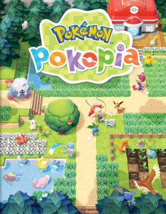

Avant de partir
Introduction : tout comprendre avant de commencer

Jaquette © Nintendo / The Pokémon Company. Guide non officiel.
Cartes interactives
La carte interactive de Map Genie (site en anglais) situe les Pokémon, habitats, matériaux et objets de chaque région, souvent avec une capture d'écran : carte de Pokopia. Il faut du réseau pour l'ouvrir.
Objectif
Te donner en une lecture ce que Pokopia n'explique pas : comment on copie les capacités, comment un habitat fait venir un Pokémon, à quoi servent les spécialités, ce que mesure la qualité de l'environnement, et les dix erreurs qui font perdre le plus de temps.
Ce n'est pas un jeu de combat. C'est un jeu où l'on répare un monde, et où les Pokémon viennent d'eux-mêmes quand l'endroit leur plaît.
La fiche du jeu
| Titre | Pokémon Pokopia |
| Plateforme | Nintendo Switch 2, en exclusivité |
| Sortie | 5 mars 2026, mondiale |
| Développement | Game Freak et Omega Force |
| Genre | Simulation de vie et de construction — entre Animal Crossing et Minecraft, sans aucun combat |
| Contenu | 5 régions, 300 Pokémon |
| Extension | Pass en 3 parties. Partie 1 : Fonds-Bulleux, 5 août 2026, 34,99 € — parties 2 et 3 pas encore sorties |
| Mise à jour | 2.0.0, du 5 août 2026 : Plongée, stockage partagé, confort — gratuite |
Itinéraire
Comment lire ce guide :
- Cette introduction, une fois, en entier.
- Les parties 01 à 13 dans l'ordre : c'est la progression. Tant que tu les suis, tu ne peux pas te bloquer.
- Les parties 14 à 26 au besoin : ce sont les pages de référence. Capacités, habitats, matériaux, Pokédex, légendaires.
- Les parties 27 à 29 si tu as l'extension.
- Les annexes (99) pour l'index et la check-list finale.
Et un conseil tout de suite : lis la partie 26 très tôt. Elle contient les astuces qui font gagner le plus de temps, et rien n'oblige à attendre la fin du jeu pour les connaître.
Déroulé pas à pas
L'histoire, sans en dire trop
- Un Métamorph se réveille dans un monde vide : humains et Pokémon ont disparu.
- Il prend l'apparence de son ancien Dresseur — c'est le personnage que tu personnalises à la création.
- Il rencontre le Professeur Bouldeneu, un Bouldeneu à lunettes cassées, fin connaisseur des humains.
- Ensemble, vous reconstruisez les régions dévastées pour que les Pokémon reviennent.
- Le décor, en passant : c'est Kanto, des années après. Chaque région s'inspire d'un lieu de la première génération.
Les cinq régions
| Région | Ce qui ne va pas | Quand elle s'ouvre |
|---|---|---|
| Terrassec | Zone aride : il n'a pas plu depuis longtemps | Dès le début (parties 01 à 03) |
| Ville-Nouvelle | Toute trace d'humanité a disparu | Très tôt, dès Éclate-Roc (partie 04) |
| Collinangle | Ravagée par une éruption volcanique | Après le Bâillement à 100 points (parties 05 et 06) |
| Grisemer | Couverte de nuages, plus de jour | En même temps que Collinangle (parties 07 et 08) |
| Flotîles-Millefeux | Éclatée en îles flottantes | Après Collinangle ET Grisemer (parties 09 à 11) |
| Fonds-Bulleux (DLC) | Zone sous-marine | Avec l'extension (parties 27 à 29) |
Le système central : copier des capacités
- Métamorph ne se bat pas. Il copie.
- Tu t'approches d'un Pokémon, tu apprends sa capacité, et tu t'en sers pour transformer le décor.
- Le jeu range ces pouvoirs en deux familles :
- les capacités, qui consomment des PP : arroser, faire pousser, casser, labourer ;
- les compétences, qui ne coûtent rien : sauter, nager, planer, grimper, plonger.
- Les quatre capacités de base s'améliorent en mangeant : une salade pour Feuillage +, un pain pour Coupe +, un steak haché pour Éclate-Roc +, une soupe pour Pistolet à O +.
- Ces améliorations sont temporaires : une jauge jaune apparaît sur tes PP, et quand elle est vide, l'effet retombe. Cuisine par lots.
- La liste complète est en partie 14.
Le cœur du jeu : les habitats
- Un habitat, c'est un assemblage d'éléments que les Pokémon reconnaissent comme un chez-soi.
- Exemple minimal : quatre carrés de hautes herbes côte à côte forment les Hautes herbes vertes — et Bulbizarre, Salamèche, Carapuce, Mystherbe ou Racaillou peuvent s'y installer.
- Tu poses, tu attends, ils viennent. Les communs arrivent vite, les rares prennent des jours.
- Le piège n° 1 du jeu : ne démonte pas un habitat après le premier arrivant. Le même habitat peut attirer cinq ou six espèces différentes.
- L'Habitadex du jeu compte au moins 209 numéros, plus 36 pour l'extension et 4 pour les événements. Tout est en partie 16.
Les spécialités : ton organigramme
- Chaque Pokémon installé chez toi porte une ou plusieurs spécialités. Ce sont elles qui font tourner ton village.
| Spécialité | Ce qu'elle fait |
|---|---|
| Construction | Sans elle, rien ne se bâtit |
| Travaux | Divise les délais de chantier (Cheffelina seule) |
| Aplanissement | Prépare le terrain des chantiers |
| Combustion | Allume les fourneaux ; briques, verre, lingots |
| Broyage | Le béton, et les baies écrasées |
| Coupe de bois | Rondins → bois |
| Recyclage | Déchets → papier ou fer |
| Électrification | Les lumières, et les machines |
| Arrosage | Arrose à ta place |
| Troc | Tient la boutique du Centre |
| Expertise | Identifie les objets perdus (Bouldeneu) |
| Désordre / Rangement | Produisent et rangent, en synergie |
- Garde toujours les six premières sous la main : c'est ton équipe de chantier permanente.
La jauge qui commande tout : la qualité de l'environnement
- ⏳ Chaque région a un niveau de qualité de l'environnement. C'est lui qui débloque les kits de Centre Pokémon, les articles du PC, les objets du Défi d'Initiation — et la fin du jeu.
- Le chiffre à retenir : niveau 5 dans les quatre régions d'histoire pour terminer la quête principale.
- Comment le faire monter : des habitats, des Pokémon satisfaits, des constructions de valeur, un Pokédex qui se remplit (partie 18).
- Trois régions ont en plus leur propre jauge de quête : l'humidité à Terrassec, l'ambiance à Collinangle, l'illumination à Grisemer.
L'argent et le temps
- La monnaie s'appelle les Pièces Poké Vie. Elle ne s'achète pas avec de l'argent réel.
- Deux sources : les trois défis quotidiens (~200 pièces chacun) et la carte à tampons, qui rapporte 1 500 pièces pour cinq tampons.
- Le jeu tourne en temps réel. Ce qui implique :
| Contrainte | Détail |
|---|---|
| Les chantiers | 10 minutes, 1 heure ou 24 heures |
| Les Îles-Rêves | Une seule par jour |
| Les défis | Trois toutes les 24 heures |
| Les objets du PC | Renouvelés chaque jour, en quantité limitée |
| La nuit et la météo | Elles conditionnent l'apparition de nombreux Pokémon |
- La règle d'or : lance tes chantiers et tes transformations en arrivant, pas en partant.
Construire
- Deux façons de faire une maison :
- le kit, acheté au PC : joli, facile à meubler, mais il faut attendre ;
- les blocs : 26 blocs et une porte, et c'est immédiat.
- Tout le reste se fabrique à l'établi**.**
- L'outil le plus précieux du jeu : l'imprimante 3D du Centre Pokémon, qui reproduit n'importe quel objet que tu as photographié, contre du Pokémétal.
- Prends donc l'habitude de photographier tout, tout le temps. Même un meuble que tu n'emportes pas.
- Et pose ton Joy-Con droit sur la tranche : le mode souris rend la construction à grande échelle infiniment plus confortable.
Les deux Pokédex
- Le Pokédex classique compte 300 Pokémon (partie 20).
- Le Pokédex des événements est séparé (partie 25) : ses Pokémon ne comptent pas dans les 300, ni pour la porte de la zone secrète.
- L'extension a son propre onglet, avec 50 Pokémon (partie 29).
- Rien ne se capture : tout s'obtient par les habitats, sauf les légendaires, qui ont chacun leur méthode (partie 21).
Quêtes et lieux
Les dix conseils de départ
| # | Conseil |
|---|---|
| 1 | Arrose très large. L'humidité est un compteur de zone : tout ce que tu verdis compte plus tard |
| 2 | Parle à tout Pokémon dont la bulle a un liseré orange : c'est une requête, et les requêtes paient en plans d'habitat |
| 3 | Fais tes trois défis chaque jour, même quand tu n'as pas besoin d'argent : la carte à tampons se remplit en parallèle |
| 4 | Achète les indices d'habitat au PC avant les décorations : ils complètent l'Habitadex tout seuls |
| 5 | Photographie tout : l'imprimante 3D ne connaît que ce que tu lui as montré |
| 6 | Groupe tes habitats par environnement : le sec avec le sec, l'humide avec l'humide |
| 7 | Cuisine par lots de dix : les améliorations tombent avec la jauge jaune |
| 8 | Lance un chantier de 24 heures avant de te déconnecter |
| 9 | Casse tous les blocs luisants : c'est la source des peluches, et les peluches ouvrent les Îles-Rêves |
| 10 | Visite une Île-Rêve par jour, sans exception |
Les dix erreurs de débutant
| # | Erreur | Pourquoi ça coûte cher |
|---|---|---|
| 1 | Démonter un habitat dès le premier Pokémon arrivé | Tu perds les cinq espèces suivantes |
| 2 | Oublier les trois meubles et le drapeau Métamorph sur ta maison | C'est le blocage n° 1 : la reconstruction du Centre reste fermée |
| 3 | Coller un habitat sec à un habitat humide | Les deux Pokémon deviennent mécontents, et le niveau de région stagne |
| 4 | Poser la pierre sèche n'importe où | Elle assèche définitivement son voisinage |
| 5 | Ne pas faire de réserve de béton | 165 blocs sont exigés sur une partie complète, et la production est très lente |
| 6 | Dépenser tout son Pokémétal | L'imprimante 3D en consomme, et c'est elle qui te fera gagner des heures |
| 7 | Vendre ou dépenser une peluche | Chaque peluche ferme une Île-Rêve, donc un légendaire |
| 8 | Utiliser Cheffelina sur un petit chantier | Tu gâches la meilleure spécialité du jeu pour gagner cinq minutes |
| 9 | Chercher le multijoueur dans les menus | Il ne se débloque qu'à Ville-Nouvelle |
| 10 | Chercher des Pokémon chromatiques | Il n'y en a pas dans le jeu à ce jour |
Les lieux à connaître dès le début
- Le Centre Pokémon et son PC : boutique, défis, carte à tampons, imprimante 3D, événements. Le hub de chaque région.
- Ton atelier : établi, fourneau, bétonnière, boîte commune, au même endroit. Le meilleur aménagement du jeu.
- Les grottes : minerais, mousse, champignons luisants, et les peluches.
- Les ruines : le beau mobilier, celui qui pèse dans la jauge de région.
- Les blocs luisants : peluches et plans d'habitat, au hasard.
Butin exhaustif
Cette partie n'a pas de butin propre. Voici les objets fondateurs, ceux dont tout le reste dépend :
| Nom exact | Type | Où / comment l'obtenir | Utilité |
|---|---|---|---|
| Pokédex | Objet clé | Caddie du Professeur Bouldeneu (partie 01) | Recense les Pokémon |
| Pistolet à O | Capacité | Carapuce | Arroser : la base de tout |
| Feuillage | Capacité | Bulbizarre | Faire pousser |
| Éclate-Roc | Capacité | Tygnon | Ouvre Ville-Nouvelle, le Défi d'Initiation et les sources |
| Pièces Poké Vie | Monnaie | Défis, carte à tampons | Tous les achats au PC |
| Drapeau Métamorph | Décoration | Sur le toit de ta maison | Débloque la reconstruction du Centre |
| Établi | Construction | Disponible très tôt | Fabrique tout |
| Imprimante 3D | Service | Centre Pokémon reconstruit | Reproduit un objet photographié contre du Pokémétal |
| Tablette | Objet clé | Donnée au fil du jeu | Photographier |
| Peluches | Objets clés | Blocs luisants, ruines, PC | Ouvrent les Îles-Rêves et quatre légendaires |
Conseils et pièges
- Le jeu ne te pousse jamais. Il n'y a ni combat, ni échec, ni game over. La seule ressource qu'il consomme, c'est ton temps : toutes les astuces de ce guide servent à en économiser.
- Ne cherche pas à tout faire dans l'ordre parfait. Deux choses seulement ont un ordre contraignant : la trame principale (parties 01 à 13) et les prérequis de capacités.
- Prends les capacités dès qu'elles sont disponibles. Éclate-Roc, Coupe, Feuillage + : ce sont elles qui ouvrent le contenu, pas le niveau de ton village.
- Garde le décoratif pour après le générique. Le Vol Magnétik pose et retire les blocs par paquets : ce que tu bricoles aujourd'hui, tu le refais en dix minutes plus tard.
- Lis les parties 18 et 26 tôt. La première explique la jauge qui commande le déblocage du contenu, la seconde les raccourcis. Ce sont les deux pages qui changent le plus une partie.
- Accepte de laisser tourner. Bétonnières, fourneaux, chantiers de 24 heures : ce jeu récompense celui qui lance les choses et va faire autre chose.
Alertes
- ⚠️ Sans les trois meubles et le drapeau Métamorph, la reconstruction du Centre Pokémon reste bloquée (partie 02).
- ⚠️ Le niveau 5 dans les quatre régions d'histoire est obligatoire pour finir le jeu (partie 12).
- ⚠️ Les Flotîles-Millefeux exigent la fête de Collinangle ET le réveil du Ronflex Moussu (partie 09).
- ⚠️ Le multijoueur ne se débloque qu'à Ville-Nouvelle (partie 24).
- ⚠️ Les améliorations de capacités sont temporaires (partie 14).
- ⚠️ Le béton est la ressource la plus lente du jeu : 165 blocs à prévoir (partie 17).
- ⏳ Manquables : presque rien. Seuls les codes du Cadeau Mystère expirent vraiment (partie 24) ; les Pokémon d'événement, eux, se rattrapent tous (partie 25).
Check-list des premières heures
- Personnage créé, Professeur Bouldeneu rencontré
- Pokédex récupéré dans le caddie
- Pistolet à O et Feuillage appris
- Premier habitat monté (Hautes herbes vertes)
- Éclate-Roc appris auprès de Tygnon
- Charpenti installé (habitat n° 003)
- Maison construite, 3 meubles posés, drapeau Métamorph planté
- Centre Pokémon de Terrassec reconstruit
- Imprimante 3D essayée
- Trois défis quotidiens et carte à tampons en cours
- Ville-Nouvelle ouverte et GameShare débloqué
- Baudrive installé, première Île-Rêve visitée
- Coupe apprise auprès d'Insécateur
- Mode souris des Joy-Con essayé
- Parties 18 et 26 de ce guide lues
Partie 01
Premiers pas : le réveil de Métamorph
L'essentiel
- À la fin : Pistolet à O et Feuillage, les trois starters chez toi, un feu de camp allumé.
- Conseil : ne place pas ton premier habitat sur le chemin des ruines du Centre Pokémon.
- Rien de manquable : tout se déplace ou se refait.
Objectif
Sortir du début de partie avec les deux capacités fondatrices — Pistolet à O et Feuillage — les trois starters installés chez toi, un feu de camp allumé, et la route ouverte vers les ruines du Centre Pokémon.
C'est le tutoriel du jeu, mais il pose déjà tout : arroser, faire pousser, fabriquer, poser, et regarder les Pokémon arriver tout seuls. Compte une bonne heure.
Itinéraire
- La clairière de départ, à Terrassec : c'est là que tu te réveilles et que tout commence.
- Les arbres autour de la clairière : pour les Baies Mepo.
- Le bord de mer, au sud : c'est là qu'on rencontre Magicarpe, et c'est un repère qui va beaucoup servir.
- Les ruines du Centre Pokémon, un peu plus loin : c'est la destination de la partie 02.
Déroulé pas à pas
Le réveil
- Crée ton personnage. Tu joues un Métamorph : il prend l'apparence de son ancien Dresseur, et c'est ce visage que tu personnalises à l'écran de création.
- Tu pourras tout changer plus tard : ne passe pas trois heures ici.
- Tu te réveilles seul. Le monde est vide : humains et Pokémon ont disparu. Le jeu ne t'explique pas pourquoi tout de suite — c'est le fil de l'histoire.
- Tu rencontres le Professeur Bouldeneu. C'est un Bouldeneu (l'évolution de Saquedeneu), reconnaissable à ses lunettes cassées, et il se présente comme un spécialiste des humains et de leur mode de vie. Il te suivra pendant tout le jeu.
- Un mot de vocabulaire : Bouldeneu est le premier des PNJ du jeu — un personnage non joueur, un habitant avec lequel tu parles et qui te donne des tâches. Ici, ce sont des Pokémon nommés (partie 22).
Le Pokédex et la première capacité
- Récupère le Pokédex dans le caddie du Professeur. C'est le chariot rempli d'objets qu'il traîne partout : tu y reviendras souvent, il contient des pièces de quête (partie 03).
- Approche-toi de Carapuce et apprends Pistolet à O. Voilà le cœur du jeu : Métamorph copie les capacités des Pokémon qu'il rencontre et s'en sert pour transformer le décor.
- À quoi ça sert concrètement : Pistolet à O arrose le sol. La terre aride devient de la terre humide, et la terre humide fait pousser ce qu'on y met.
- Arrose toutes les herbes sèches autour de toi. Prends le temps de tout verdir : c'est ce qui fait apparaître les premiers Pokémon.
- Bulbizarre sort des hautes herbes. Approche-toi et apprends Feuillage.
- Feuillage fait pousser les hautes herbes sur un sol arrosé — et sur un sol sec, il fait pousser des hautes herbes sèches (retiens-le, ça servira pour Onix en partie 03).
Ton premier habitat
- Pose quatre carrés de hautes herbes côte à côte. Tu viens de créer ton premier habitat : les Hautes herbes vertes, le n° 001 de l'Habitadex.
- Ce que fait un habitat : c'est un assemblage d'éléments que les Pokémon reconnaissent comme un chez-soi. Tu poses les bons éléments au bon endroit, et le Pokémon vient s'installer de lui-même — pas de combat, pas de Poké Ball.
- Les Hautes herbes vertes peuvent attirer : Bulbizarre, Salamèche, Carapuce, Mystherbe et Racaillou. Les communs arrivent vite, les rares prennent leur temps.
- Ramasse des Baies Mepo dans les arbres et donne-en une à Carapuce. Nourrir un Pokémon le rapproche de toi et débloque ses requêtes.
Le feu de camp et Salamèche
- Récupère le Tabouret du Professeur. Métamorph avale les objets et les recrache où tu veux : c'est comme ça qu'on transporte et qu'on pose les meubles, du tabouret à la maison.
- Fabrique un feu de camp avec ce que tu ramasses au sol, puis pose-le près du tabouret.
- Crée un parterre de fleurs : quatre carrés de fleurs sauvages forment le Joli parterre de fleurs (n° 008 de l'Habitadex).
- Ce parterre peut attirer : Roucool, Roucoups, Hoothoot, Apitrini, Magby et Évoli. Oui, Évoli dès le début — mais il ne viendra pas au premier essai.
- Salamèche s'installe grâce aux fleurs. Accompagne-le jusqu'au feu de camp et demande-lui de l'allumer.
- Petite nuance : certaines sources françaises présentent ça comme « apprendre la capacité Feu ». En pratique, c'est Salamèche qui allume : le fait que Métamorph apprenne une capacité de feu ici reste à vérifier en jeu.
Direction le Centre Pokémon
- Descends jusqu'au bord de mer, au sud. Tu y croises Magicarpe : retiens bien l'endroit, c'est là que se fera l'habitat de Ramoloss en partie 03.
- Rejoins le Professeur Bouldeneu et suis-le jusqu'aux ruines du Centre Pokémon. Fin de la partie 01.
Quêtes et lieux
Les Pokémon rencontrés
| Pokémon | Ce qu'il t'apporte |
|---|---|
| Professeur Bouldeneu | Ton guide. Il identifie les objets non identifiés que tu ramasses (partie 22) |
| Carapuce | Pistolet à O : arroser le sol |
| Bulbizarre | Feuillage : faire pousser herbes et fleurs |
| Salamèche | Allume les feux de camp et les fourneaux |
| Magicarpe | Rien tout de suite : c'est un repère de lieu |
Les lieux
- La clairière de départ : ton premier chantier. C'est là qu'on met naturellement sa première maison (partie 02).
- Le bord de mer sud : l'eau salée, qui débloque des habitats à part (Hautes herbes en bord de mer, n° 005).
- Les ruines du Centre Pokémon : le futur hub du jeu — boutique, requêtes, défis quotidiens.
Butin exhaustif
| Nom exact | Type | Où / comment l'obtenir | Utilité |
|---|---|---|---|
| Pokédex | Objet clé | Dans le caddie du Professeur Bouldeneu | Recense les Pokémon installés chez toi |
| Pistolet à O | Capacité | Carapuce, dans la clairière | Arrose le sol : la base de tout |
| Feuillage | Capacité | Bulbizarre, après avoir arrosé les herbes sèches | Fait pousser hautes herbes et fleurs |
| Tabouret du Professeur | Meuble | Donné par Bouldeneu | Premier siège : sert à plusieurs habitats |
| Feu de camp | Construction | Fabriqué avec les ressources du sol | Chaleur et lumière : entre dans plusieurs habitats |
| Baie Mepo | Consommable | Secouer les arbres de la clairière | Nourrir les Pokémon |
| Hautes herbes vertes (n° 001) | Habitat | 4 carrés de hautes herbes | Bulbizarre, Salamèche, Carapuce, Mystherbe, Racaillou |
| Joli parterre de fleurs (n° 008) | Habitat | 4 carrés de fleurs sauvages | Roucool, Roucoups, Hoothoot, Apitrini, Magby, Évoli |
Conseils et pièges
- Arrose beaucoup plus large que nécessaire. L'humidité de la zone est un compteur global (partie 18) : tout ce que tu verdis maintenant comptera plus tard pour la pluie.
- Pose tes habitats groupés, mais pas collés. Un habitat a besoin de ses quatre carrés propres. Deux habitats qui se chevauchent, et le jeu n'en valide qu'un.
- Ne t'acharne pas sur Évoli. Il peut venir au parterre de fleurs, mais ses vraies méthodes d'apparition sont dans la partie 20. Laisse-le venir.
- Secoue tous les arbres. Les Baies Mepo sont la monnaie d'échange de toute la première heure : plus tu en as, plus tu peux nourrir.
- Recrache tes meubles avant de partir loin. Métamorph ne porte qu'un objet à la fois au début : tu vas faire des allers-retours si tu ne planifies pas.
Alertes
- ⚠️ Rien n'est définitivement manquable dans cette partie. Tout ce qu'on pose ici peut être déplacé ou refait plus tard : c'est un jeu de construction, pas un couloir.
- ⏳ Ne place pas ton premier habitat sur le chemin des ruines du Centre Pokémon : tu vas devoir y faire passer des Pokémon en partie 03, et un habitat en travers complique le trajet.
- ⚠️ La « capacité Feu » de Salamèche est à vérifier en jeu : les sources françaises ne s'accordent pas sur le fait que Métamorph l'apprenne vraiment ici.
Check-list de fin de partie 01
- Personnage créé, Métamorph sous l'apparence de son Dresseur
- Professeur Bouldeneu rencontré
- Pokédex récupéré dans le caddie
- Pistolet à O appris auprès de Carapuce
- Toutes les herbes sèches de la clairière arrosées
- Feuillage appris auprès de Bulbizarre
- Habitat 001 — Hautes herbes vertes créé
- Baies Mepo ramassées et Carapuce nourri
- Tabouret du Professeur posé
- Feu de camp fabriqué et posé
- Habitat 008 — Joli parterre de fleurs créé
- Salamèche installé et feu de camp allumé
- Magicarpe rencontré au bord de mer
- Ruines du Centre Pokémon atteintes avec Bouldeneu
Partie 02
Terrassec : le Centre Pokémon et ta première maison
L'essentiel
- Dans l'ordre : apprendre Éclate-Roc, faire venir Charpenti, construire ta maison.
- Point de blocage : sans les trois meubles et le drapeau Métamorph, le Centre ne se reconstruit pas.
- Avant d'arrêter de jouer : lance la reconstruction, elle prend une journée réelle.
Objectif
Trois choses, dans cet ordre : apprendre Éclate-Roc, faire venir Charpenti (le premier Pokémon bâtisseur), et construire ta maison pour pouvoir enfin reconstruire le Centre Pokémon de Terrassec.
C'est la partie qui transforme le jeu : à la fin, tu as une boutique, une monnaie, un toit, et un Pokémon capable de bâtir tout ce que tu lui demandes.
Itinéraire
- Les ruines du Centre Pokémon : le PC y fonctionne déjà, même en ruine. C'est ton point de départ et ton retour permanent.
- Les rochers autour des ruines : c'est là que tu trouves les traces de Tygnon.
- Un rocher dégagé, près de la clairière : l'emplacement de l'habitat de Charpenti.
- Un terrain plat à côté : le chantier de ta maison. Choisis-le bien : on peut déménager plus tard, mais autant s'installer confortablement tout de suite.
- Le mur de l'ouest, à gauche du Centre Pokémon : une fois Éclate-Roc en main, il se casse et ouvre la route de Ville-Nouvelle (partie 04).
Déroulé pas à pas
Le PC, les défis et la monnaie
- Parle à Bouldeneu devant les ruines, puis utilise le PC. Le PC est le terminal du Centre Pokémon : boutique, défis, informations. Il marche même quand le Centre est en ruine.
- Regarde tes trois défis du jour et fais-les. Les défis sont ta seule source d'argent au début.
- La monnaie du jeu s'appelle les Pièces Poké Vie. Elles ne s'achètent pas avec de l'argent réel : tout se gagne en jouant.
- Deux robinets à Pièces Poké Vie :
- Les défis quotidiens : environ 200 Pièces Poké Vie pour un défi comme « trouver une plume mystérieuse ».
- La carte à tampons : cinq tampons remplis rapportent 1 500 Pièces Poké Vie, et plus un tampon est rare, plus il paie (partie 23).
- Ce que vend la boutique du PC :
- des décorations et des graines ;
- des indices sur de nouveaux habitats, le meilleur achat du début ;
- des matériaux comme le Fil ;
- des améliorations permanentes.
Éclate-Roc
- Cherche les traces de Tygnon autour des ruines et suis-les.
- Approche-toi de Tygnon et apprends Éclate-Roc.
- Ce que fait Éclate-Roc : il casse les blocs de pierre. Concrètement : ouvrir des passages dans les falaises, libérer les sources bouchées, et casser les blocs à gouttes d'eau qui font monter l'humidité (partie 18).
- ⚠️ Attention à l'orthographe si tu cherches sur le web : plusieurs sites français écrivent « Écrase-Roc » ou « Brise-Roc ». La capacité s'appelle Éclate-Roc.
- Ville-Nouvelle s'ouvre maintenant : part à gauche du Centre Pokémon, casse le mur et répare le pont derrière lui. Tu peux y aller tout de suite ou attendre : la partie 04 lui est consacrée.
Charpenti, le premier bâtisseur
- Trouve un rocher et pose quatre carrés de hautes herbes juste à côté. C'est l'habitat n° 003, Hautes herbes près d'un rocher.
- Il peut attirer Charpenti, Ouvrifier et Machoc. C'est Charpenti que tu veux : il porte la spécialité Construction, et sans lui, rien ne se bâtit.
- Un mot sur les spécialités : chaque Pokémon installé chez toi a un ou plusieurs talents de chantier. Les plus utiles : Construction, Aplanissement, Coupe de bois, Arrosage, Broyage, Rangement et Troc (partie 22).
- Si Charpenti tarde, laisse l'habitat en place et va faire autre chose : les Pokémon arrivent avec le temps, pas sur commande.
Ta maison
- Achète un kit d'abri au PC, puis pose le chantier là où tu veux vivre.
- Ouvre la caisse du chantier pour voir la liste des matériaux. Tu y trouveras du bois, de la pierre et du Fil : le Fil s'achète directement au PC si tu n'en as pas.
- Demande à Charpenti et à un deuxième Pokémon de construire. La construction prend environ 10 minutes de temps réel : va faire tes défis pendant ce temps.
- Entre dans ta maison et pose trois meubles. C'est obligatoire : sans trois meubles, la maison n'est pas considérée comme habitée.
- Plante le drapeau Métamorph sur le toit. C'est la condition qui débloque la reconstruction du Centre Pokémon : ne saute pas cette étape, beaucoup de joueurs bloquent ici.
Reconstruire le Centre Pokémon de Terrassec
- Fais monter la qualité de l'environnement de la région. Comment : arroser la terre sèche, créer de nouveaux habitats, et satisfaire les Pokémon déjà installés (partie 18).
- Mes sources françaises divergent sur le niveau exigé : certaines demandent le niveau 2, d'autres le niveau 3. ⚠️ À vérifier en jeu — de toute façon, le PC ne te vendra le kit que quand le niveau sera atteint, donc la question se règle d'elle-même.
- Achète le kit de reconstruction du Centre Pokémon : 1 000 Pièces Poké Vie.
- Interagis avec la caisse posée devant les ruines pour voir ce qu'il faut réunir. Pour Terrassec :
| Matériau | Quantité |
|---|---|
| Bois | 20 |
| Pierre | 20 |
| Feuille | 10 |
| Lierre | 10 |
- Amène des Pokémon sur le chantier. Il faut couvrir trois spécialités : Aplanissement, Construction et Coupe de bois.
- Deuxième divergence entre sources : l'une parle de trois Pokémon couvrant ces trois spécialités, l'autre de huit Pokémon présents sur le chantier. En pratique, amène tout le monde : le nombre exact reste à vérifier en jeu.
- Lance les travaux. La reconstruction prend une journée réelle complète. Le time travel permet de ne pas attendre (partie 26).
- Reviens le lendemain : le Centre Pokémon de Terrassec est debout.
Ce que le Centre reconstruit t'apporte
- Les soins : tes Pokémon récupèrent chaque jour.
- La boutique : un Pokémon avec la spécialité Troc y vend des objets.
- L'imprimante 3D : le meilleur outil du jeu — elle reproduit n'importe quel objet que tu as photographié, contre du Pokémétal (partie 17).
- Les événements : c'est ici que se récupèrent les Pokémon des événements datés (partie 25).
Quêtes et lieux
Les quêtes de cette partie
| Quête | Ce qu'elle demande | Récompense |
|---|---|---|
| Les défis du jour | Trois petites tâches renouvelées chaque jour | Pièces Poké Vie, tampons |
| Construire ta maison | Kit d'abri, matériaux, Charpenti + 1 Pokémon, 3 meubles, drapeau Métamorph | Débloque la reconstruction du Centre |
| Reconstruire le Centre Pokémon | 1 000 Pièces Poké Vie + 20 bois, 20 pierres, 10 feuilles, 10 lierres | Boutique, soins, imprimante 3D |
Les lieux
- Le PC : il fonctionne dès les ruines. Boutique, défis, carte à tampons.
- Les rochers de Terrassec : les traces de Tygnon, et les blocs cassables à l'Éclate-Roc.
- Le mur de l'ouest : le passage vers Ville-Nouvelle, derrière un pont à réparer (partie 04).
- Ta maison : rangement, décoration, et le point de départ de tes journées.
Butin exhaustif
| Nom exact | Type | Où / comment l'obtenir | Utilité |
|---|---|---|---|
| Éclate-Roc | Capacité | Tygnon, en suivant ses traces près des ruines | Casse la pierre : passages, sources, blocs à gouttes d'eau |
| Pièces Poké Vie | Monnaie | Défis quotidiens (~200), carte à tampons (1 500 pour 5 tampons) | Tous les achats au PC |
| Kit d'abri | Objet clé | Boutique du PC | Chantier de ta maison |
| Fil | Matériau | Boutique du PC | Construction de la maison |
| Drapeau Métamorph | Décoration | Posé sur le toit de ta maison | Débloque la reconstruction du Centre |
| Kit de reconstruction du Centre Pokémon | Objet clé | Boutique du PC, 1 000 Pièces Poké Vie | Ouvre le chantier du Centre |
| Bois ×20, Pierre ×20, Feuille ×10, Lierre ×10 | Matériaux | Ramassés autour de Terrassec | Chantier du Centre Pokémon |
| Hautes herbes près d'un rocher (n° 003) | Habitat | 4 carrés de hautes herbes à côté d'un rocher | Charpenti, Ouvrifier, Machoc |
| Coin post-entraînement (n° 024) | Habitat | Un banc et un sac de frappe | Fait venir Tygnon chez toi |
| Imprimante 3D | Service | Centre Pokémon reconstruit | Reproduit un objet photographié contre du Pokémétal |
Conseils et pièges
- Fais tes trois défis chaque jour, même quand tu n'en as pas besoin. L'argent du début est rare, et la carte à tampons se remplit en parallèle.
- Achète les indices d'habitat avant les décorations. Un indice te fait gagner des heures de tâtonnement ; une chaise, non.
- Ne pose pas ta maison au milieu de tes habitats. Elle prend de la place, et tu voudras de l'espace autour pour les chantiers suivants.
- Photographie tout ce que tu croises. L'imprimante 3D ne peut reproduire que ce que tu as photographié : prends l'habitude tout de suite, avant d'avoir le Centre.
- Lance les constructions avant de te déconnecter. Dix minutes de maison, une journée de Centre Pokémon : autant que le temps passe pendant que tu ne joues pas.
- Garde un Pokémon de chaque spécialité sous la main. Les chantiers demandent des spécialités précises, et courir après un Pokémon Aplanissement au dernier moment, c'est une demi-heure perdue.
Alertes
- ⚠️ Sans les trois meubles et le drapeau Métamorph, la reconstruction du Centre reste bloquée. C'est le point de blocage n° 1 des débuts de partie.
- ⚠️ La reconstruction du Centre prend une journée réelle : lance-la avant d'arrêter de jouer.
- ⚠️ Le niveau de qualité de l'environnement exigé varie selon les sources (2 ou 3) : ⚠️ à vérifier en jeu.
- ⚠️ Le nombre de Pokémon à amener sur le chantier n'est pas confirmé (trois spécialités, ou huit Pokémon) : ⚠️ à vérifier en jeu.
- ⏳ Rien n'est manquable ici : tous les matériaux de Terrassec se régénèrent.
Check-list de fin de partie 02
- Trois défis du jour faits au moins une fois
- Carte à tampons comprise et lancée
- Éclate-Roc appris auprès de Tygnon
- Habitat 003 — Hautes herbes près d'un rocher créé
- Charpenti installé chez toi
- Kit d'abri acheté et chantier posé
- Maison construite par Charpenti et un second Pokémon
- Trois meubles posés à l'intérieur
- Drapeau Métamorph planté sur le toit
- Qualité de l'environnement montée jusqu'au déblocage du kit
- Kit de reconstruction du Centre Pokémon acheté (1 000 Pièces Poké Vie)
- 20 bois, 20 pierres, 10 feuilles, 10 lierres réunis
- Pokémon Aplanissement, Construction et Coupe de bois amenés sur le chantier
- Centre Pokémon de Terrassec reconstruit
- Imprimante 3D essayée au moins une fois
Partie 03
Terrassec : l'humidité, le bâillement et Onix
L'essentiel
- Objectif : faire venir Ramoloss (pas une évolution), verdir Terrassec, puis le faire bâiller pour la pluie.
- Attention : la pierre sèche est définitive dans son rayon ; ne mélange pas habitats secs et humides.
- À ne pas rater : les peluches des grottes, qui ouvrent les Îles-Rêves (Suicune, Entei).
Objectif
Faire pleuvoir sur une région où il n'a pas plu depuis des années. Concrètement : faire venir Ramoloss, verdir tout Terrassec, monter le lieu de rituel Danse Pluie, et faire bâiller Ramoloss assez fort pour ramollir la pierre qui retient Onix.
C'est la grande quête de Terrassec, celle que le jeu appelle le Bâillement à 100 points. Sa réussite ouvre Collinangle et Grisemer : tout le reste du jeu passe par là.
Itinéraire
- À l'ouest du Centre Pokémon en ruines : casse la falaise à l'Éclate-Roc.
- La grotte marine, sur la droite : à la seconde sortie à droite, tu trouves Onix prisonnier de la pierre.
- Les grottes de l'ouest : c'est là que se cachent les peluches et que t'attend Baudrive.
- Le bord de mer, là où tu as croisé Magicarpe : l'emplacement de l'habitat de Ramoloss.
- Le trajet du rivage aux ruines du Centre : c'est le chemin que Ramoloss doit pouvoir emprunter.
- Le ponton de la plage : à réparer avant la pluie.
Déroulé pas à pas
Trouver Onix
- Va à l'ouest du Centre Pokémon en ruines et ouvre un passage dans la falaise à l'Éclate-Roc.
- Entre dans la grotte marine sur la droite. À la seconde sortie à droite, tu tombes sur Onix, coincé dans une prison de pierre — et épuisé d'avoir essayé.
- Explore cette grotte pendant que tu y es : la pierre sèche dont tu auras besoin plus tard s'y trouve, dans une Poké Ball posée derrière un mur à casser.
- Retourne voir le Professeur Bouldeneu. Sa solution : la roche est trop dure, il faut de la pluie pour la ramollir — et pour avoir de la pluie, il faut un Ramoloss qui bâille.
Les grottes de l'ouest, Baudrive et les peluches
- Explore les grottes de l'ouest et ramasse les peluches. Elles ont l'air décoratives ; elles sont en réalité une des clés du jeu.
- Tu y rencontres Baudrive. C'est lui qui t'emmène dans les Îles-Rêves, en échange d'une peluche : chaque peluche ouvre une île différente (partie 19).
- Pour installer Baudrive chez toi : pose trois feux de camp côte à côte — c'est l'habitat n° 016, Zone de courants d'air chaud.
- Pourquoi c'est important dès maintenant : deux légendaires ne s'obtiennent que par les Îles-Rêves — la peluche Évoli mène à l'île de Suicune, la peluche Arcanin à celle d'Entei (partie 21).
Faire venir Ramoloss
- Descends au bord de mer, là où tu as vu Magicarpe.
- Pose quatre carrés de hautes herbes sur le rivage. C'est l'habitat n° 005, Hautes herbes en bord de mer — il demande une grande étendue d'eau salée à côté.
- Il peut attirer Ramoloss, Flagadoss et Roigada. Il te faut vraiment un Ramoloss : ses évolutions ne font pas l'affaire pour cette quête.
- Attends un peu, puis parle-lui et demande-lui de te suivre.
- Fabrique des escaliers en bois sur le trajet. Ramoloss ne grimpe pas : sans escaliers, il reste bloqué.
- Le trajet ne doit comporter aucune terre sèche. Arrose tout le chemin du rivage jusqu'aux ruines du Centre.
- Amène-le jusqu'au Professeur Bouldeneu.
Faire monter l'humidité de Terrassec
- Le bâillement de Ramoloss se mesure en points. Plus la région est humide, plus il bâille fort. Voilà tout ce qui fait monter le compteur :
| Action | Ce qu'elle apporte |
|---|---|
| Libérer les sources à l'Éclate-Roc | Crée de petites étendues d'eau permanentes dans Terrassec |
| Arroser toute la zone au Pistolet à O | La zone principale doit être entièrement verte |
| Casser les blocs à gouttes d'eau | Chaque bloc cassé libère de l'humidité |
| Planter 8 fleurs sauvages | Crée un Champ de fleurs (habitat n° 011) |
| Arroser et planter des arbres autour des ruines | Les arbres tiennent l'humidité |
| Poser une fontaine Hypotrempe | S'achète à la boutique du PC : humidité permanente |
- Le Champ de fleurs, en passant, peut faire venir Apireine, Florizarre et Bulbizarre. Deux quêtes d'un coup.
Le lieu de rituel Danse Pluie
- Monte l'habitat n° 041, Lieu de rituel Danse Pluie. Il demande :
- 2 Morphéo-Météo, tournés en forme Pluie ;
- 1 plat de fruits : une assiette en bois avec une baie posée dessus.
- Où trouver les Morphéo-Météo : dans le caddie du Professeur Bouldeneu, dans des Poké Balls posées dans le décor, et à la boutique du PC.
- Comment changer leur forme : appuie sur A pour retourner la figurine — une face Soleil, une face Pluie. Deux faces Pluie, sinon rien.
- Laisse Carapuce sur place pendant le rituel.
- Suis le schéma que les Pokémon te montrent : le jeu affiche la disposition attendue, il n'y a pas de piège.
- Le même habitat peut faire venir Mucuscule : un bonus pour le Pokédex.
La pluie, Onix et son habitat
- Répare le ponton de la plage avant de lancer le rituel.
- Fais bâiller Ramoloss. La pluie tombe — mais pas seulement. Un légendaire de la troisième génération fait une apparition remarquée au large : Kyogre, qui repassera de temps en temps à Terrassec et à Grisemer (partie 21).
- Retourne dans la grotte d'Onix : la roche a ramolli, tu peux le libérer.
- Construis l'habitat d'Onix : l'habitat n° 037, Hautes herbes sèches.
- 4 carrés de hautes herbes sèches : utilise Feuillage sur un sol sec, pas arrosé ;
- 1 pierre sèche, celle de la grotte d'Onix.
- ⚠️ La pierre sèche assèche définitivement tout ce qui l'entoure. Tu peux arroser : ça redevient sec en quelques instants.
- Donc, choisis bien l'endroit : fais-en le quartier aride de Terrassec, et mets-y les Pokémon qui aiment le sec — Osselait, Ossatueur, et plus tard Onix lui-même.
- Ne mêle jamais un habitat humide à un habitat sec : les deux Pokémon seront insatisfaits, et ton niveau de région stagnera.
- Valide auprès du Professeur Bouldeneu.
Terminer Terrassec
- La dernière quête de la région s'appelle « Un environnement plus agréable » : elle demande le Centre Pokémon reconstruit (partie 02) et la qualité de l'environnement montée.
- Le niveau exigé est annoncé comme le niveau 5 par une de mes sources : ⚠️ à vérifier en jeu. Dans le doute, monte aussi haut que tu peux : le niveau 5 dans les quatre régions sera de toute façon exigé pour le Défi d'Initiation (partie 12).
- Collinangle et Grisemer s'ouvrent maintenant, en même temps. Le guide fait Collinangle d'abord (partie 05), mais l'ordre est libre.
Quêtes et lieux
Les quêtes de cette partie
| Quête | Ce qu'elle demande | Récompense |
|---|---|---|
| Le Bâillement à 100 points | Ramoloss amené, région verdie, rituel Danse Pluie monté | La pluie : Onix libérable, Collinangle et Grisemer ouvertes |
| Libérer Onix | La pluie, puis l'habitat n° 037 | Onix installé, un Pokémon Broyage de premier ordre |
| Un environnement plus agréable | Centre reconstruit + qualité de l'environnement | Clôt la région |
| Les peluches des grottes | Explorer les grottes de l'ouest | Accès aux Îles-Rêves via Baudrive |
Les lieux
- La grotte d'Onix : la pierre sèche y est cachée derrière un mur cassable. Ne repars pas sans elle, tu aurais le trajet à refaire.
- Les grottes de l'ouest : peluches et Baudrive.
- Le rivage sud : eau salée — indispensable pour l'habitat de Ramoloss.
- Le ponton de la plage : à réparer avant le rituel.
Butin exhaustif
| Nom exact | Type | Où / comment l'obtenir | Utilité |
|---|---|---|---|
| Pierre sèche | Objet clé | Poké Ball derrière un mur cassable, dans la grotte d'Onix | Assèche définitivement les alentours : cœur de l'habitat n° 037 |
| Morphéo-Météo ×2 | Décoration | Caddie de Bouldeneu, Poké Balls du décor, boutique du PC | Rituel Danse Pluie (face Pluie) et rituel Zénith (face Soleil) |
| Assiette en bois | Meuble | Fabrication | Support du plat de fruits du rituel |
| Fontaine Hypotrempe | Décoration | Boutique du PC | Humidité permanente autour d'elle |
| Escaliers en bois | Construction | Fabrication | Sans eux, Ramoloss ne peut pas te suivre |
| Peluches | Objets clés | Grottes de l'ouest et grotte du début de partie | Ouvrent les Îles-Rêves auprès de Baudrive |
| Hautes herbes en bord de mer (n° 005) | Habitat | 4 carrés de hautes herbes près d'eau salée | Ramoloss, Flagadoss, Roigada |
| Champ de fleurs (n° 011) | Habitat | 8 carrés de fleurs sauvages | Apireine, Florizarre, Bulbizarre |
| Zone de courants d'air chaud (n° 016) | Habitat | 3 feux de camp | Baudrive |
| Hautes herbes sèches (n° 037) | Habitat | 4 carrés d'herbes hautes sèches + 1 pierre sèche | Onix |
| Lieu de rituel Danse Pluie (n° 041) | Habitat | 2 Morphéo-Météo (Pluie) + 1 plat de fruits | Déclenche la pluie ; peut faire venir Mucuscule |
Conseils et pièges
- Arrose large, très large. Le compteur d'humidité regarde toute la zone principale, pas seulement les alentours du rituel. Tant qu'il reste une bande de terre beige, le bâillement sera faible.
- Fais l'aller-retour de la grotte une seule fois. Onix, la pierre sèche et les murs cassables sont au même endroit : prends tout d'un coup.
- Prépare le chemin de Ramoloss avant d'aller le chercher. Escaliers posés, sol arrosé : il te suivra sans s'arrêter.
- Réserve un coin aride dès maintenant. La pierre sèche est irréversible dans son rayon : autant décider avant où sera le quartier sec, plutôt que de déménager trois habitats après.
- Garde tes peluches. Chacune ouvre une Île-Rêve différente ; en revendre une, c'est fermer une porte.
- Les Morphéo-Météo se retournent. Si ton rituel ne se valide pas, c'est neuf fois sur dix parce qu'une figurine est restée face Soleil.
Alertes
- ⚠️ Il faut un Ramoloss, pas une de ses évolutions : si tu as déjà un Flagadoss, refais l'habitat et attends.
- ⚠️ La pierre sèche est définitive dans son rayon : réfléchis à son emplacement avant de la poser.
- ⚠️ Ne mélange jamais habitats secs et habitats humides : les deux Pokémon deviennent insatisfaits et le niveau de la région stagne.
- ⚠️ Le niveau de qualité exigé par « Un environnement plus agréable » est à vérifier en jeu (le niveau 5 est annoncé par une seule source).
- ⏳ Manquables : les peluches des grottes — techniquement récupérables plus tard, mais tant que tu ne les as pas, les Îles-Rêves te sont fermées, et avec elles Suicune et Entei.
Check-list de fin de partie 03
- Falaise ouest cassée et grotte marine explorée
- Onix trouvé dans sa prison de pierre
- Pierre sèche récupérée dans la grotte
- Peluches des grottes de l'ouest ramassées
- Baudrive rencontré et habitat 016 — Zone de courants d'air chaud monté
- Habitat 005 — Hautes herbes en bord de mer créé, Ramoloss installé
- Escaliers en bois posés et chemin entièrement arrosé
- Ramoloss amené jusqu'à Bouldeneu
- Sources libérées à l'Éclate-Roc
- Zone principale entièrement verte
- 8 fleurs sauvages plantées (habitat 011 — Champ de fleurs)
- Arbres plantés et arrosés autour des ruines
- Fontaine Hypotrempe posée
- Habitat 041 — Lieu de rituel Danse Pluie monté, 2 Morphéo-Météo en face Pluie
- Ponton de la plage réparé
- Bâillement de Ramoloss déclenché, pluie tombée
- Onix libéré et habitat 037 — Hautes herbes sèches créé
- Quartier aride délimité pour les Pokémon de terrain sec
- Quête « Un environnement plus agréable » terminée
- Collinangle et Grisemer ouvertes
Partie 04
Ville-Nouvelle : la région vierge
L'essentiel
- Accès : il faut Éclate-Roc.
- Débloqué ici : le GameShare et l'Île-Nuage, tout le multijoueur.
- Région libre : aucune quête, rien de manquable.
Objectif
Ouvrir la cinquième région du jeu, celle où il n'y a aucune quête — et où, justement, tu peux faire absolument ce que tu veux. Au passage, tu débloques le GameShare et l'Île-Nuage, c'est-à-dire tout le multijoueur.
Ville-Nouvelle est le grand bac à sable de Pokopia. C'est une région bâtie sur les traces de Bourg Palette, vidée de toute présence humaine, et entièrement à toi.
Itinéraire
- Depuis le Centre Pokémon de Terrassec, part sur la gauche, vers l'ouest.
- Un mur barre le chemin : il se casse à l'Éclate-Roc.
- Derrière, un pont est cassé : répare-le avec des blocs, n'importe lesquels.
- Traverse : tu es à Ville-Nouvelle.
- N'importe quel PC de la région : c'est de là que se lancent GameShare et Île-Nuage.
Déroulé pas à pas
Le prérequis
- Il faut Éclate-Roc. Si tu ne l'as pas encore : monte l'habitat n° 024, Coin post-entraînement — un banc et un sac de frappe — pour faire venir Tygnon, puis apprends la capacité auprès de lui (partie 02).
- Rien d'autre n'est exigé : pas de niveau de région, pas de quête principale avancée. Tu peux venir ici très tôt, bien avant Collinangle et Grisemer.
Ouvrir la route
- Part à gauche du Centre Pokémon de Terrassec et longe l'ouest.
- Casse le mur à l'Éclate-Roc.
- Répare le pont cassé : pose des blocs dans le vide, n'importe quel type de bloc fait l'affaire. C'est le premier vrai exercice de construction libre du jeu : une bonne occasion de comprendre le mode construction (partie 15).
- Traverse le pont. Une courte scène se déclenche à ton arrivée.
Évoli, le PC et le GameShare
- Parle à Évoli, qui t'attend sur place.
- Utilise le PC : le GameShare se débloque ici, et nulle part ailleurs.
- Ce que c'est : le GameShare permet de partager ta partie avec jusqu'à 3 invités, en local sans fil ou en ligne. Les invités n'ont pas besoin de posséder le jeu, et une Switch 1 peut rejoindre une Switch 2 (avec des graphismes réduits).
- Lancer une session : au PC, « Jouer en réseau » → « Inviter quelqu'un à visiter » → « GameShare ».
- Les invités passent par l'application GameShare (en local) ou GameChat (en ligne).
- ⚠️ Ce que les invités ne peuvent pas faire : sortir de Ville-Nouvelle, toucher à l'histoire, changer d'apparence, utiliser un Pokédex ou un Habitadex, ni fabriquer à l'établi. Ils n'ont que les capacités que l'hôte a débloquées. Le détail complet est en partie 24.
L'Île-Nuage
- Depuis n'importe quel PC de Ville-Nouvelle, crée ou rejoins une Île-Nuage.
- C'est la zone coopérative du jeu : jusqu'à 4 joueurs, aucune limite de création, et tous les biomes et toutes les ressources du jeu y sont présents.
- Pourquoi y aller : c'est le meilleur endroit du jeu pour farmer des matériaux rares — le farm, c'est-à-dire la récolte répétée d'une même ressource — et pour chasser les habitats qui demandent un biome que tu n'as pas encore chez toi.
Reconstruire le Centre Pokémon de Ville-Nouvelle
- Comme les quatre autres régions, Ville-Nouvelle a son Centre Pokémon à relever. Même procédure : atteindre le niveau de région demandé, acheter le kit au PC, poser la caisse, réunir les matériaux, amener les bons Pokémon (partie 02).
- Les matériaux annoncés :
| Matériau | Quantité |
|---|---|
| Bois | 20 |
| Pierre | 20 |
| Feuille | 10 |
| Lierre | 10 |
- Réserve sur ces chiffres : ma source française donne exactement la même liste que pour Terrassec. Cela ressemble à une recopie : les quantités du Centre de Ville-Nouvelle restent à vérifier en jeu.
- Les spécialités demandées : Aplanissement, Construction et Coupe de bois.
Ce qu'on fait vraiment à Ville-Nouvelle
- ⏳ Rien n'est obligatoire ici — et c'est tout l'intérêt. Voilà les usages qui valent le détour :
| Usage | Pourquoi ici plutôt qu'ailleurs |
|---|---|
| Les grands chantiers décoratifs | La place. Les quatre régions d'histoire sont contraintes par leur relief ; Ville-Nouvelle est vierge |
| Les habitats encombrants | Les habitats à 8 carrés de fleurs, les scènes, les bibliothèques tiennent à l'aise |
| Le quartier des Évoli | Les huit habitats d'évolution d'Évoli (n° 202 à 209) demandent chacun un coin table-siège-plat : autant les aligner au même endroit (partie 20) |
| Le multijoueur | C'est la seule région où les invités peuvent aller |
| Le farm de ressources | Par l'Île-Nuage, accessible depuis les PC d'ici |
- ⏳ Un point d'organisation : le Défi d'Initiation de la fin du jeu exige le niveau 5 dans les quatre régions de l'histoire (partie 12). Ville-Nouvelle n'en fait pas partie : tu peux la laisser en friche sans bloquer ta progression.
Quêtes et lieux
Les quêtes de cette partie
⏳ Ville-Nouvelle n'a pas de quête principale. Les deux seules étapes « obligatoires » sont l'ouverture du passage et la courte scène d'arrivée. Le reste est du contenu libre.
| Étape | Ce qu'elle demande | Récompense |
|---|---|---|
| Ouvrir le passage | Éclate-Roc + réparer le pont | Accès à Ville-Nouvelle |
| La scène d'arrivée | Parler à Évoli, puis au PC | GameShare et Île-Nuage |
| Reconstruire le Centre | Kit au PC + matériaux + 3 spécialités | Boutique, soins, imprimante 3D sur place |
Les lieux
- Le pont de l'ouest : ton premier ouvrage à toi. Tant que tu ne l'as pas réparé, la région n'existe pas.
- Les PC de Ville-Nouvelle : les seuls du jeu à proposer GameShare et Île-Nuage.
- L'Île-Nuage : un espace coopératif à part, avec tous les biomes du jeu.
Butin exhaustif
| Nom exact | Type | Où / comment l'obtenir | Utilité |
|---|---|---|---|
| Coin post-entraînement (n° 024) | Habitat | Un banc et un sac de frappe | Fait venir Tygnon, donc Éclate-Roc |
| GameShare | Fonctionnalité | PC de Ville-Nouvelle, après la scène d'arrivée | Jusqu'à 3 invités, local ou en ligne, Switch 1 compatible |
| Île-Nuage | Fonctionnalité | N'importe quel PC de Ville-Nouvelle | Coop à 4, tous les biomes, toutes les ressources |
| Kit de reconstruction du Centre Pokémon | Objet clé | Boutique du PC | Ouvre le chantier du Centre de Ville-Nouvelle |
| Bois ×20, Pierre ×20, Feuille ×10, Lierre ×10 | Matériaux | Ramassés sur place | Chantier du Centre quantités à vérifier en jeu |
| Blocs de construction | Matériaux | N'importe quel bloc | Réparer le pont de l'ouest |
Conseils et pièges
- Viens ici tôt, même pour cinq minutes. L'ouverture du passage ne coûte qu'un mur et un pont, et elle débloque tout le multijoueur pour le reste de la partie.
- Ne construis pas ta base principale ici avant la fin du jeu. Les quêtes, les PNJ et les matériaux de progression sont dans les quatre autres régions : tu ferais des allers-retours toute la partie.
- Fais de Ville-Nouvelle ton entrepôt. Un grand espace plat, quelques coffres, et tu arrêtes de courir après tes matériaux.
- Groupe les habitats « table + siège + plat ». Ils sont nombreux (les huit Évoli, les coins collation) et tous minuscules : un même quartier suffit.
- Prends une photo de tout ce que tu construis. L'imprimante 3D reproduit les objets photographiés : ton quartier modèle devient copiable partout ailleurs.
- Pour le farm, passe par l'Île-Nuage. Les ressources rares y sont toutes présentes, sans avoir à courir les quatre régions.
Alertes
- ⚠️ Sans Éclate-Roc, Ville-Nouvelle est inaccessible : pas de mur cassé, pas de région.
- ⚠️ Le GameShare ne se débloque qu'ici. Si tu cherches le multijoueur dans les menus avant d'être venu, tu ne le trouveras pas : c'est une confusion fréquente.
- ⚠️ Les invités sont cantonnés à Ville-Nouvelle et n'ont ni établi, ni Pokédex, ni Habitadex.
- ⚠️ Les quantités de matériaux du Centre de Ville-Nouvelle sont à vérifier en jeu : ma source recopie celles de Terrassec.
- ⏳ Rien n'est manquable ici. La région ne se ferme jamais et ne contient aucun objet unique lié à une quête.
Check-list de fin de partie 04
- Éclate-Roc en main
- Mur de l'ouest cassé
- Pont réparé avec des blocs
- Ville-Nouvelle atteinte
- Évoli rencontré et scène d'arrivée passée
- GameShare débloqué au PC
- Île-Nuage créée ou visitée au moins une fois
- Centre Pokémon de Ville-Nouvelle reconstruit
- Un emplacement réservé pour les grands chantiers et l'entrepôt
Partie 05
Collinangle : la cuisine, la forge et les capacités améliorées
L'essentiel
- À la fin : Force, Feuillage +, Coupe +, Éclate-Roc +, et la cuisine.
- Attention : les améliorations de capacités sont temporaires.
- Patience : les grilles du nord-ouest veulent Coupe +, les filons gris Éclate-Roc +.
Objectif
Remettre Collinangle en état de marche et, au passage, débloquer la cuisine — le système qui améliore tes capacités. À la fin de cette partie tu auras Force, Feuillage +, Coupe +, Éclate-Roc +, Roulade, un fourneau qui fond le métal, et Rongragoût libéré de son tonneau.
Collinangle est une région volcanique très verticale, ravagée par une éruption. C'est aussi la région la plus dense du jeu en mécaniques nouvelles : prends ton temps.
Itinéraire
- L'entrée de Collinangle, par la porte de Terrassec.
- La place du Centre Pokémon : il est de travers, il faudra le pousser.
- Les hautes herbes rouges des pentes : c'est le sol de cette région.
- Les grottes chaudes et humides, à l'ouest du Centre Pokémon : Chartor y vit.
- La mine, au nord, par le passage aux rails : Magmar et le cuivre.
- Les grilles métalliques du nord-ouest : elles ne cèdent qu'à Éclate-Roc +.
Déroulé pas à pas
Machopeur et la capacité Force
- Monte l'habitat n° 103, Coin d'entraînement en hautes herbes : 4 carrés de hautes herbes rouges et 2 tas de sable.
- Machopeur s'installe. C'est ton premier Pokémon de force brute.
- Demande-lui de nettoyer le chantier encombré de cailloux. En le regardant faire, tu apprends Force.
- Ce que fait Force : pousser et soulever ce qui est trop lourd pour toi — les rochers, les caisses, et même les bâtiments.
- Petite réserve de vocabulaire : mes sources classent Force parmi les capacités, mais le jeu distingue les « capacités », qui consomment des PP, et les « compétences », qui n'en consomment pas ou peu. La catégorie exacte de Force reste à vérifier en jeu.
- Pousse le Centre Pokémon jusqu'à son emplacement. Oui, on déplace un bâtiment entier : c'est le genre de jeu.
Le cri dans le tonneau
- Suis le Professeur Bouldeneu jusqu'à l'endroit d'où vient un cri anormal.
- Vous trouvez un Pokémon enfermé dans un tonneau, retenu par une chaîne. Tu ne peux rien faire pour lui maintenant : il faudra Coupe +, plus bas dans cette partie.
La cuisine : Efflèche et la planche à découper
- Monte l'habitat n° 100, Hautes herbes avec rocher et sapin : 4 carrés de hautes herbes rouges, sous un arbre pointu (un sapin), à côté d'une grosse pierre.
- Efflèche arrive. Il te demande un perchoir.
- Achète les plans du perchoir à la boutique du PC, fabrique-le et pose-le.
- Donne du bois à Efflèche : il t'enseigne en échange le plan de la planche à découper, qui coûte 2 bois à l'établi.
- ⏳ Voilà la cuisine débloquée. Le principe est simple et vaut pour tout le jeu :
| Ustensile | Plat | Ingrédient | Capacité améliorée |
|---|---|---|---|
| Planche à découper | Salade (par exemple la Salade Julienne) | Feuilles | Feuillage + |
| Four à pain | Pain | Blé | Coupe + |
| Poêle sur un fourneau | Steak haché | Haricots | Éclate-Roc + |
| Marmite sur un fourneau | Soupe | Eau en bouteille | Pistolet à O + |
- Prépare une Salade sur la planche à découper et mange-la : Feuillage + fait pousser beaucoup plus de hautes herbes d'un seul coup.
- Le point capital, et il surprend tout le monde : ces améliorations sont temporaires. Une jauge jaune se superpose à tes PP : tant qu'elle est là, tu as la version améliorée. Quand elle est vide, tu remanges.
- Conséquence pratique : cuisine en quantité avant une grosse session de minage ou de terraformation, pas au coup par coup.
Chartor et le four à pain
- Va aux grottes chaudes et humides, à l'ouest du Centre Pokémon.
- Monte l'habitat n° 112, Source chaude moussue : 4 carrés de mousse près d'une grande étendue d'eau de source. La mousse se récolte dans les grottes.
- Chartor s'installe. Il porte la spécialité Combustion : sans lui, rien ne s'allume à Collinangle.
- Déblaie le chemin et pose des escaliers en bois pour le guider jusqu'au Centre Pokémon.
- Il te donne le plan du four à pain. Recette : 2 pierres, des petits rondins et 4 blocs de cendre volcanique.
- Divergence de sources sur les rondins : une source dit 2 petits rondins, l'autre 3. ⚠️ À vérifier en jeu — l'établi affiche de toute façon la recette exacte.
- Demande à Chartor d'allumer le four.
- Récolte du blé dans les carrés de culture, puis fais cuire du pain et mange-le : Coupe + coupe les gros débris et les grilles métalliques.
- Retourne au tonneau et coupe la chaîne : tu libères Rongragoût, le cuisinier Rongrigou du jeu. C'est un des personnages nommés (partie 22).
- Ouvre aussi les grilles du nord-ouest avec Coupe + : elles mènent à la suite de la région.
Magmar, le fourneau et les lingots
- Rongragoût te demande une poêle. Pour en fabriquer une, il faut du métal, donc un fourneau, donc Magmar.
- Prends le passage nord, celui aux rails, jusqu'à la mine.
- Monte l'habitat n° 116, Site d'extraction et de fusion : 1 brouette, 1 fourneau et 1 jeu d'outils pour creuser.
- Magmar s'installe et allume le fourneau.
- Mine du cuivre, mets-le dans le fourneau : tu obtiens des lingots de cuivre.
- Fabrique la poêle : 2 lingots de cuivre.
- Cuisine un steak haché avec des haricots et mange-le : Éclate-Roc + casse les filons gris et ouvre des passages que la version de base ne touche pas.
- Garde une réserve de steaks hachés : c'est le plat le plus utile du jeu pour miner les minerais rares.
Gravalanch et la Roulade
- Fais monter la qualité de l'environnement de Collinangle au niveau 3 : nouveaux habitats, nouveaux abris, Pokémon satisfaits (partie 18).
- Monte l'habitat n° 111, Rocher couvert de mousse : 4 carrés de mousse et un rocher moussu. Demande à Machopeur de pousser le rocher jusqu'à l'endroit voulu.
- Gravalanch s'installe. Apprends Roulade auprès de lui.
- Ce que fait Roulade : tu te déplaces en boule, très vite. Sur une région aussi étendue et verticale que Collinangle, ça change la vie.
Une vérification avant de continuer
- Coupe s'apprend auprès d'Insécateur, pas à Collinangle : si tu ne l'as pas encore, monte l'habitat n° 002, Hautes herbes sous un arbre (4 carrés de hautes herbes sous n'importe quel arbre) — il peut faire venir Chétiflor, Insécateur, Cizayox, Scarabrute et Scarhino.
- Mes sources se contredisent sur ce point : l'une fait apprendre Coupe à Collinangle, l'autre auprès d'Insécateur dès Terrassec. La seconde version est celle de la liste officielle des capacités : si tu as déjà Coupe en arrivant, tu sautes simplement l'étape.
Quêtes et lieux
Les quêtes de cette partie
| Quête | Ce qu'elle demande | Récompense |
|---|---|---|
| Remettre le Centre en place | Machopeur et Force | Le Centre Pokémon de Collinangle utilisable |
| Le perchoir d'Efflèche | Plans au PC + bois | Planche à découper, donc la cuisine |
| Guider Chartor | Habitat n° 112, escaliers en bois, déblayer | Plan du four à pain, Combustion |
| Libérer le Pokémon du tonneau | Coupe + (donc du pain) | Rongragoût rejoint ta ville |
| La poêle de Rongragoût | 2 lingots de cuivre | Steaks hachés, donc Éclate-Roc + |
| Faire venir Gravalanch | Habitat n° 111 + Machopeur pour le rocher | Roulade |
Les lieux
- Les grottes chaudes de l'ouest : mousse, eau de source, Chartor. C'est aussi le meilleur endroit du jeu pour récolter de la mousse.
- La mine du nord : cuivre, puis fer (partie 06), et Magmar.
- Les grilles du nord-ouest : fermées jusqu'à Éclate-Roc +.
- Les carrés de culture : blé et haricots, les deux ingrédients qui portent la moitié de tes améliorations.
Butin exhaustif
| Nom exact | Type | Où / comment l'obtenir | Utilité |
|---|---|---|---|
| Force | Capacité | Machopeur, en le regardant nettoyer le chantier | Pousser et soulever rochers, caisses, bâtiments |
| Roulade | Capacité | Gravalanch, habitat n° 111 | Déplacement rapide en boule |
| Feuillage + | Amélioration | Manger une Salade | Beaucoup plus d'herbes d'un coup — temporaire |
| Coupe + | Amélioration | Manger du Pain | Coupe gros débris et grilles métalliques — temporaire |
| Éclate-Roc + | Amélioration | Manger un Steak haché | Casse les filons gris — temporaire |
| Pistolet à O + | Amélioration | Manger une Soupe | Arrose une plus grande surface — temporaire |
| Perchoir | Meuble | Plans à la boutique du PC | Requête d'Efflèche |
| Planche à découper | Ustensile | Plan donné par Efflèche ; 2 bois à l'établi | Prépare les salades |
| Four à pain | Ustensile | Plan donné par Chartor ; 2 pierres + petits rondins + 4 cendres volcaniques ⚠️ | Prépare les pains |
| Poêle | Ustensile | 2 lingots de cuivre à l'établi | Prépare les steaks hachés |
| Fourneau | Construction | Monté à la mine, allumé par Magmar | Fond le cuivre et le fer en lingots |
| Lingot de cuivre | Matériau | Cuivre miné + fourneau | Poêle, puis nombreuses recettes |
| Cendre volcanique | Matériau | Partout à Collinangle | Four à pain, et le nettoyage de la grand-place (partie 06) |
| Mousse | Matériau | Grottes chaudes de l'ouest | Habitats n° 110, 111, 112 |
| Blé | Ingrédient | Carrés de culture | Pain |
| Haricot | Ingrédient | Carrés de culture | Steak haché |
| Coin d'entraînement en hautes herbes (n° 103) | Habitat | 4 hautes herbes rouges + 2 tas de sable | Machopeur |
| Hautes herbes avec rocher et sapin (n° 100) | Habitat | 4 hautes herbes rouges, sous un sapin, près d'une grosse pierre | Efflèche |
| Source chaude moussue (n° 112) | Habitat | 4 carrés de mousse + eau de source | Chartor |
| Rocher couvert de mousse (n° 111) | Habitat | 4 carrés de mousse + un rocher moussu | Gravalanch |
| Site d'extraction et de fusion (n° 116) | Habitat | 1 brouette + 1 fourneau + 1 jeu d'outils pour creuser | Magmar |
| Coin moussu (n° 110) | Habitat | 4 carrés de mousse | Embrylex — un bonus facile pendant que tu récoltes la mousse |
| Hautes herbes sous un arbre (n° 002) | Habitat | 4 hautes herbes sous n'importe quel arbre | Insécateur, donc Coupe ; aussi Chétiflor, Cizayox, Scarabrute, Scarhino |
| Hautes herbes rouges (n° 098) | Habitat | 4 carrés de hautes herbes rouges | Crikzik, Riolu, Flambino |
| Hautes herbes rouges sous un arbre (n° 099) | Habitat | 4 hautes herbes rouges sous un arbre | Taupiqueur |
| Hautes herbes rouges en altitude (n° 102) | Habitat | 4 hautes herbes rouges en hauteur | Pijako |
| Hautes herbes rouges riveraines (n° 101) | Habitat | 4 hautes herbes rouges près d'une grande étendue d'eau | Nénupiot, Lombre |
| Parterre de fleurs splendides (n° 104) | Habitat | 4 carrés de fleurs des collines | Pâtachiot, Mélofée |
| Coin casse-croûte dans la remise (n° 119) | Habitat | 1 tonneau, 1 caisse en bois, 1 lanterne et 1 plat | Taupiqueur |
| Lave brûlante (n° 115) | Habitat | 1 rocher ardent + une grande étendue de lave | Pokémon non documenté par mes sources |
Conseils et pièges
- Cuisine par lots. Les améliorations tombent avec la jauge jaune : dix steaks hachés d'avance valent mieux qu'un aller-retour au fourneau toutes les cinq minutes.
- Pose la planche à découper, le four et la poêle côte à côte. Tu vas y revenir cent fois : un vrai coin cuisine près du Centre Pokémon te fera gagner des heures.
- Récolte la mousse en grande quantité au premier passage. Trois habitats de la région en demandent quatre carrés chacun, et elle ne pousse que dans les grottes.
- Amène Machopeur avec toi. Le rocher moussu de Gravalanch, les caisses, les blocs : sans lui, tu tournes en rond.
- Ne néglige pas les habitats « rouges ». Les cinq variantes de hautes herbes rouges (098 à 103) sont rapides à monter et font grimper le niveau de la région, qui est de toute façon exigé au niveau 3 pour avancer.
- Roulade change ta façon de jouer. Dès que tu l'as, refais un tour complet de la région : tu verras des recoins que tu avais renoncé à atteindre.
Alertes
- ⚠️ Les améliorations de capacités sont temporaires : elles durent le temps de la jauge jaune sur tes PP.
- ⚠️ Le Pokémon du tonneau reste prisonnier jusqu'à Coupe + : ne t'acharne pas au premier passage.
- ⚠️ Les grilles du nord-ouest exigent Coupe + : elles ne cèdent à aucune autre capacité.
- ⚠️ Les filons gris exigent Éclate-Roc + : la version de base ne les entame pas.
- ⚠️ La recette du four à pain diverge selon les sources (2 ou 3 petits rondins) : ⚠️ à vérifier en jeu.
- ⚠️ La catégorie de Force (capacité ou compétence) est à vérifier en jeu.
- ⏳ Manquables : rien de définitif. Tous les matériaux de Collinangle se régénèrent, et les habitats se refont.
Check-list de fin de partie 05
- Habitat 103 — Coin d'entraînement en hautes herbes créé, Machopeur installé
- Force apprise
- Centre Pokémon de Collinangle remis en place
- Pokémon du tonneau repéré
- Habitat 100 — Hautes herbes avec rocher et sapin créé, Efflèche installé
- Perchoir fabriqué et posé
- Planche à découper obtenue
- Salade cuisinée, Feuillage + essayé
- Habitat 112 — Source chaude moussue créé, Chartor installé
- Chartor guidé jusqu'au Centre Pokémon
- Four à pain fabriqué et allumé
- Pain cuisiné, Coupe + essayé
- Chaîne du tonneau coupée, Rongragoût libéré
- Grilles du nord-ouest ouvertes
- Habitat 116 — Site d'extraction et de fusion créé, Magmar installé
- Fourneau allumé, lingots de cuivre produits
- Poêle fabriquée et remise à Rongragoût
- Steak haché cuisiné, Éclate-Roc + essayé
- Qualité de l'environnement de Collinangle au niveau 3
- Habitat 111 — Rocher couvert de mousse créé, Gravalanch installé
- Roulade apprise
- Coupe bien en main (habitat 002 et Insécateur si nécessaire)
Partie 06
Collinangle : DJ Motisma et la fête à 100 points
L'essentiel
- Objectif : « C'est la fête ! », 100 points d'ambiance et une marmite de curry conviviale.
- Il faut : Éclate-Roc + pour libérer DJ Motisma, Feuillage + pour Ludicolo.
- Avant de partir : les objets de fête du manoir.
Objectif
Organiser une fête. Rien de moins. La grande quête de Collinangle s'appelle « C'est la fête ! » et demande de faire monter le niveau d'ambiance de la grand-place à 100 points, puis de cuisiner une marmite géante.
La récompense est l'une des plus belles du jeu : un légendaire descend du volcan et déclenche un feu d'artifice, et tu repars avec les plans des canons et des boules de feu d'artifice.
Cette quête est l'une des deux conditions d'ouverture des Flotîles-Millefeux (l'autre étant la quête du Ronflex Moussu à Grisemer, partie 08).
Itinéraire
- Le tas de cendres volcaniques que te signale Flambino : derrière, une chambre secrète.
- La grand-place, couverte de cendres : c'est le lieu de la fête.
- Les roches brillantes de la région : les CD de DJ Motisma s'y cachent.
- Un étang, pour l'habitat de Ludicolo.
- La mine du nord : le fer.
- Le grand manoir, au nord-ouest : la caverne d'Ali Baba de la décoration festive — et Mordudor.
- Le sommet du volcan : pour le final.
Déroulé pas à pas
Libérer DJ Motisma
- Flambino vient te signaler un bruit près des cendres volcaniques.
- Mange un steak haché et ouvre le passage à l'Éclate-Roc +. La version de base ne suffit pas.
- Entre dans la chambre secrète : tu y trouves DJ Motisma, un Motisma installé dans une minichaîne HI-FI. Il joue de la musique dès qu'on le nourrit de CD.
- La requête « C'est la fête ! » démarre ici.
Nettoyer et poser la marmite
- Rongragoût te demande de dégager la grand-place de ses cendres volcaniques : l'Éclate-Roc s'en charge.
- Pose la marmite de fête au centre de la place.
- À partir de là, tout ce que tu ajoutes autour de la marmite fait monter le niveau d'ambiance. L'objectif est 100 points.
La musique, la décoration et l'objet du Professeur
- Trouve un CD et insère-le dans DJ Motisma. Les CD se cachent dans les roches brillantes de la région : casse-les à l'Éclate-Roc.
- Le Professeur Bouldeneu te demande un objet humain perdu de grande taille.
- Comment ça marche : tu ramasses des objets non identifiés dans le décor, et Bouldeneu les identifie grâce à sa spécialité Expertise. Il en veut un de grande taille et de bonne qualité : les petits ne comptent pas.
- Dispose les éléments festifs autour de la marmite : enceintes, micro sur pied, guirlandes, ballons de baudruche, scène portative.
- Va piller le grand manoir, au nord-ouest. Tu y rencontres Mordudor, et le jardin et l'étage sont remplis d'objets de fête — c'est la source principale de ta décoration.
- Un bonus en passant : 2 ballons de baudruche et 1 boîte à surprise forment l'habitat n° 073, Zone piégée. Le Pokémon qu'il attire n'est pas documenté par mes sources : à découvrir en jeu.
Ludicolo, le danseur
- Monte l'habitat n° 109, Étang avec plantes flottantes : 4 carrés de lentilles d'eau et une grande étendue d'eau.
- ⚠️ Les lentilles d'eau demandent Feuillage + : mange une salade avant d'essayer, sinon tu ne peux pas les faire pousser.
- Ludicolo s'installe. Conduis-le jusqu'à la fête : il se met à danser, et l'ambiance grimpe.
Les cinq assiettes de fête
- Rongragoût veut cinq plats différents, dans cinq assiettes.
- Récolte des débris de fer à la mine — les filons gris demandent Éclate-Roc +.
- Donne le fer à Magmar au fourneau : tu obtiens des lingots de fer. Il t'en faut 5.
- Fabrique les 5 assiettes de fête à l'établi.
- Remplis chaque assiette d'un plat différent : salades, pains, steaks hachés, soupes… Tes quatre ustensiles de cuisine couvrent largement le compte.
La marmite de curry conviviale
- Quand l'ambiance atteint 100, demande à Rongragoût de rejoindre la marmite.
- Réunis les ingrédients du grand repas :
| Ingrédient | Quantité | Où le trouver |
|---|---|---|
| Baie Mepo | 15 | Secouer les arbres, partout |
| Épi de blé | 15 | Carrés de culture |
| Haricot | 15 | Carrés de culture |
| Pot de miel | 5 | Ruches et récolte (partie 23) |
- Le miel est la ressource la plus lente à réunir : commence à en accumuler dès que tu arrives à Collinangle, tu ne le regretteras pas.
- Lance la préparation du grand repas.
Le final
- La fête se déclenche — et un légendaire descend du sommet du volcan : Volcanion, n° 293 du Pokédex. Il déclenche un feu d'artifice au-dessus de la place.
- Tu repars avec les plans des canons et des boules de feu d'artifice : de la décoration pure, mais spectaculaire (partie 15).
Clore la région
- Reconstruis le Centre Pokémon de Collinangle. Ses matériaux sont les plus lourds du jeu de base :
| Matériau | Quantité |
|---|---|
| Pierre | 25 |
| Lingot de cuivre | 25 |
| Lingot de fer | 25 |
| Fragment de cristal | 5 |
- Les spécialités demandées sur le chantier : Aplanissement, Construction et Broyage. Onix ou Gravalanch couvrent le Broyage.
- Fais monter la région. Le niveau 5 dans les quatre régions d'histoire sera exigé pour le Défi d'Initiation (partie 12) : autant le viser tout de suite, pendant que tu es sur place.
- Collinangle est terminée. Les Flotîles-Millefeux ne s'ouvriront qu'après la quête du Ronflex Moussu à Grisemer : direction la partie 07.
Quêtes et lieux
Les quêtes de cette partie
| Quête | Ce qu'elle demande | Récompense |
|---|---|---|
| Le bruit dans les cendres | Éclate-Roc + | DJ Motisma libéré |
| C'est la fête ! | Ambiance 100 : marmite, CD, objet du Professeur, décoration, Ludicolo, 5 assiettes | Volcanion, feu d'artifice, plans des canons et boules de feu d'artifice |
| La marmite de curry conviviale | 15 Baies Mepo, 15 épis de blé, 15 haricots, 5 pots de miel | Déclenche le final |
| Reconstruire le Centre | 25 pierres, 25 lingots de cuivre, 25 lingots de fer, 5 fragments de cristal | Services du Centre sur place |
Les lieux
- La chambre secrète des cendres : inaccessible sans Éclate-Roc +.
- Le grand manoir du nord-ouest : objets de fête au jardin et à l'étage, et Mordudor. Fais-le entièrement, c'est la meilleure récolte de décorations du jeu de base.
- Les roches brillantes : les CD, et des matériaux rares.
- La mine du nord : fer et fragments de cristal.
- Le sommet du volcan : le point de vue du final.
Butin exhaustif
| Nom exact | Type | Où / comment l'obtenir | Utilité |
|---|---|---|---|
| DJ Motisma | PNJ | Chambre secrète, derrière les cendres (Éclate-Roc +) | Joue de la musique contre des CD ; monte l'ambiance |
| CD | Objet clé | Roches brillantes de Collinangle | Nourrir DJ Motisma |
| Marmite de fête | Construction | Remise par Rongragoût | Le centre de la fête |
| Assiette de fête ×5 | Meubles | 5 lingots de fer, à l'établi | Recevoir les 5 plats différents |
| Lingot de fer | Matériau | Débris de fer (filons gris, Éclate-Roc +) fondus par Magmar | Assiettes de fête, chantiers, douche de Grisemer |
| Fragment de cristal | Matériau | Mine du nord | Centre Pokémon de Collinangle |
| Pot de miel | Ingrédient | Récolte de miel (partie 23) | Marmite de curry conviviale, et beaucoup de recettes |
| Objet humain perdu de grande taille | Objet clé | Ramassé dans le décor, identifié par Bouldeneu | Requête du Professeur pour la fête |
| Plans du canon de feu d'artifice | Plan | Récompense de la fête | Décoration spectaculaire |
| Plans des boules de feu d'artifice | Plan | Récompense de la fête | Décoration spectaculaire |
| Volcanion | Pokémon légendaire | Apparaît au sommet du volcan à la fin de la fête — n° 293 | Une entrée de Pokédex qu'on ne rate pas |
| Étang avec plantes flottantes (n° 109) | Habitat | 4 carrés de lentilles d'eau + grande étendue d'eau Feuillage + | Ludicolo |
| Zone piégée (n° 073) | Habitat | 2 ballons de baudruche + 1 boîte à surprise | Pokémon non documenté : à découvrir en jeu |
| Scène rock aiguë (n° 189) | Habitat | 1 enceinte, 1 scène portative, 1 guitare électrique cool, 1 micro sur pied | À monter avec les objets de fête ; Pokémon non documenté |
| Four à pain parfaitement pétri (n° 121) | Habitat | 1 four à pain, 2 comptoirs et 1 plat | Pâtachiot, Briochien — ton coin cuisine peut devenir un habitat |
| Site d'extraction et de fusion (n° 116) | Habitat | 1 brouette + 1 fourneau + outils pour creuser | Magmar (déjà monté en partie 05) |
Conseils et pièges
- Accumule le miel dès ton arrivée à Collinangle. Cinq pots, c'est long. Tout le reste de la marmite se ramasse en une demi-heure ; le miel, non.
- Vide le manoir en une seule expédition. Jardin, rez-de-chaussée, étage : tu y trouveras l'essentiel de ta décoration festive, et repasser coûte cher en temps de trajet.
- Mange une salade avant d'aller poser les lentilles d'eau. Sans Feuillage +, l'habitat de Ludicolo est simplement impossible, et c'est un blocage classique.
- Cuisine tes cinq plats à l'avance. Les assiettes de fête veulent cinq plats différents : prépare-les pendant que le fourneau tourne pour les lingots.
- Monte l'ambiance au-delà de 100 si tu peux. Le compteur sert de repère, mais une place bien décorée fait aussi grimper le niveau de la région, qu'il te faudra à 5.
- Garde deux ou trois CD en réserve. DJ Motisma en redemande, et les roches brillantes ne sont pas inépuisables au même endroit.
Alertes
- ⚠️ Sans Éclate-Roc +, la chambre de DJ Motisma reste fermée — et sans DJ Motisma, pas de quête de la fête.
- ⚠️ Sans Feuillage +, pas de lentilles d'eau, donc pas de Ludicolo, donc pas d'ambiance complète.
- ⚠️ L'objet demandé par le Professeur doit être de grande taille : fais-en identifier plusieurs si le premier ne convient pas.
- ⚠️ Les Flotîles-Millefeux restent fermées même après la fête : il faut aussi la quête du Ronflex Moussu à Grisemer (partie 08).
- ⏳ Manquables : rien d'unique et définitif, mais les objets de fête du manoir ne se retrouvent nulle part ailleurs aussi facilement — ne repars pas les mains vides.
Check-list de fin de partie 06
- Passage des cendres ouvert à l'Éclate-Roc +
- DJ Motisma libéré
- Grand-place dégagée de ses cendres volcaniques
- Marmite de fête posée au centre
- CD trouvé dans une roche brillante et inséré dans DJ Motisma
- Objet humain perdu de grande taille identifié par Bouldeneu et posé
- Manoir du nord-ouest visité, Mordudor rencontré, décorations récupérées
- Habitat 109 — Étang avec plantes flottantes créé, Ludicolo installé
- Ludicolo amené à la fête
- 5 lingots de fer produits et 5 assiettes de fête fabriquées
- 5 plats différents posés dans les assiettes
- Niveau d'ambiance à 100
- 15 Baies Mepo, 15 épis de blé, 15 haricots, 5 pots de miel réunis
- Marmite de curry conviviale préparée
- Volcanion vu au sommet du volcan et enregistré au Pokédex
- Plans des canons et des boules de feu d'artifice obtenus
- Centre Pokémon de Collinangle reconstruit
- Qualité de l'environnement de Collinangle poussée au niveau 5
Partie 07
Grisemer : le Centre noyé, Miaouss et les briques
L'essentiel
- Au programme : rallumer le PC, satisfaire Miaouss, les premières briques, une douche, un lampadaire.
- Attention : sans Pohm, rien ne s'allume ; la douche exige du fer de Collinangle.
- Labourage : il vient de Rototaupe (Potager de légumes frais).
Objectif
Remettre en marche une région sous l'eau et sous les nuages. Au programme : rallumer le PC, satisfaire Miaouss, fabriquer tes premières briques, poser une douche, et allumer ton premier lampadaire — ce qui, dans une région où il ne fait plus jour, est un événement.
Grisemer est la région de l'eau et de l'électricité. C'est aussi celle qui compte le plus de petites requêtes enchaînées : un Pokémon satisfait en amène un autre.
Itinéraire
- L'entrée de Grisemer, par la porte est de Terrassec.
- La descente vers les ruines immergées du Centre Pokémon : il faut construire des ponts pour que Bouldeneu suive.
- La fontaine, derrière le terminal : c'est elle qui noie le PC.
- La maison de Miaouss, un peu plus loin.
- Les blocs d'argile clairs : la matière première des briques.
- La plage et le phare, au nord : pour la partie 08.
Déroulé pas à pas
Arriver et rallumer le PC
- Prends la porte est depuis Terrassec et descends vers les ruines du Centre Pokémon.
- Construis des ponts au fur et à mesure : Bouldeneu ne traverse pas l'eau tout seul.
- Va derrière le terminal, à la fontaine : une de ses sorties déverse l'eau sur le PC.
- Bouche cette sortie — reconstruis le mur du fond — et le PC se rallume.
- Tu as retrouvé ta boutique, tes défis et ta carte à tampons dans la région.
Miaouss et sa maison inondée
- Miaouss apparaît et te demande de « nettoyer sa maison de l'eau ».
- Va chez lui et bouche le mur du fond : c'est par là que la source entre. L'eau cesse de couler.
- Il en reste des flaques : pour ça, il te faut Tiplouf.
Tiplouf et le nettoyage
- Monte l'habitat Hautes herbes jaunes riveraines : 4 carrés d'herbe jaune et 2 étendues d'eau à côté.
- Tiplouf s'installe. Demande-lui de te suivre.
- Ce que fait Tiplouf : il asperge les zones sales d'un savon magique. Toi, tu rinces derrière au Pistolet à O.
- Nettoie les flaques devant chez Miaouss. Requête bouclée.
- Retiens ce duo : Tiplouf + Pistolet à O est ta méthode de nettoyage pour tout le reste de la région.
Une maison simple, puis la jardinière
- Miaouss veut une maison. N'importe quelle maison simple fait l'affaire : achète un kit, pose le chantier, fais construire (partie 02).
- Il enchaîne avec une nouvelle requête : une jardinière pour décorer sa maison.
- Pour la jardinière, il faut des briques. Pour les briques, il faut Poussifeu.
Poussifeu et les briques
- Monte l'habitat Coin collation pour pioupiou : 1 nichoir en bois, 1 plat et n'importe quelle table.
- Ne le confonds pas avec le Coin collation tout court (n° 019 : siège + table + plat), qui fait venir Gloupti.
- Poussifeu arrive.
- Casse les blocs d'argile clairs : tu récupères de l'argile malléable.
- Donne l'argile à Poussifeu : il la cuit en briques. Il t'en faut au moins 2 pour la jardinière.
- Fabrique la jardinière : 2 briques + 2 pierres.
- Pose-la chez Miaouss.
Labourage, la capacité qui déplace les fleurs
- Il manque un carré de fleurs dans la jardinière. Tu ne le plantes pas : tu le déplaces.
- C'est le rôle de Labourage : elle retourne la terre et permet de prélever une fleur pour la replanter ailleurs.
- Si tu ne l'as pas encore : monte l'habitat n° 015, Potager de légumes frais — 4 plantations agricoles — pour faire venir Rototaupe, et apprends Labourage auprès de lui.
- Prélève un carré de fleurs à côté et pose-le dans la jardinière. Miaouss est content.
Miamiasme et la douche
- Tiplouf réclame maintenant une douche.
- Monte l'habitat Décharge : n'importe quelle poubelle, des sacs-poubelles et n'importe quel panneau. Oui, on construit une décharge sur commande. C'est ce jeu.
- Miamiasme s'installe.
- Fabrique la douche à l'établi : 2 morceaux de fer. Le fer vient de Collinangle (partie 05) : si tu as fait la région dans l'autre ordre, garde-en toujours en réserve.
- Pose la douche dans la cabine déjà prête de la région.
Pohm et le premier lampadaire
- Miamiasme te demande d'allumer le lampadaire près du Centre Pokémon.
- Monte l'habitat Parterre de fleurs rafraîchissantes : 4 carrés de fleurs maritimes.
- Pohm s'installe. Il porte la spécialité Électrification : c'est le seul moyen d'allumer quoi que ce soit dans Grisemer.
- Demande à Pohm de te suivre jusqu'au lampadaire : il l'allume tout seul en arrivant.
- Regarde autour de toi : dans une région privée de jour, chaque lumière allumée change l'ambiance et fait grimper le niveau de la région.
Le bruit dans la montagne
- Miamiasme entend « un drôle de bruit dans la montagne ».
- Cherche le mur friable près du phare et casse-le à l'Éclate-Roc.
- Tu découvres le Ronflex Moussu : un Ronflex endormi depuis si longtemps que la mousse a poussé sur son dos, avec une fleur qui oscille au sommet de sa tête.
- Le réveiller est la grande quête de la région : c'est la partie 08.
Quêtes et lieux
Les quêtes de cette partie
| Quête | Ce qu'elle demande | Récompense |
|---|---|---|
| Rallumer le PC | Boucher la sortie de la fontaine derrière le terminal | Boutique et défis dans la région |
| Nettoyer la maison de Miaouss | Boucher le mur du fond + Tiplouf et Pistolet à O | Ouvre la chaîne de requêtes de Miaouss |
| Une maison pour Miaouss | N'importe quelle maison simple | Requête de la jardinière |
| La jardinière | 2 briques + 2 pierres + un carré de fleurs déplacé au Labourage | Miaouss satisfait |
| La douche de Tiplouf | 2 morceaux de fer | Ouvre la requête du lampadaire |
| Le lampadaire de Miamiasme | Pohm et sa spécialité Électrification | Ouvre la piste du Ronflex Moussu |
Les lieux
- La fontaine derrière le terminal : la clé du PC. Sans ça, pas de boutique dans la région.
- La maison de Miaouss : le centre des requêtes du début de Grisemer.
- Les blocs d'argile clairs : la seule source d'argile malléable, donc de briques.
- La cabine de douche : déjà construite, elle n'attend que la douche.
- Le mur friable près du phare : l'entrée de la grotte du Ronflex Moussu.
Butin exhaustif
| Nom exact | Type | Où / comment l'obtenir | Utilité |
|---|---|---|---|
| Labourage | Capacité | Rototaupe, habitat n° 015 | Retourne la terre et déplace les fleurs |
| Argile malléable | Matériau | Casser les blocs d'argile clairs de Grisemer | Matière première des briques |
| Brique | Matériau | Argile malléable donnée à Poussifeu | Jardinière, kits de cabane, chantiers, Centre de Grisemer |
| Jardinière | Meuble | 2 briques + 2 pierres, à l'établi | Requête de Miaouss ; joli support à fleurs |
| Douche | Meuble | 2 morceaux de fer, à l'établi | Requête de Tiplouf |
| Fil de tissu | Matériau | Boutique du PC et récolte | Centre de Grisemer, kits de cabane |
| Fragment de verre de mer | Matériau | Sur les plages de Grisemer | Lampe coquillage (partie 08), Centre de Grisemer |
| Coquillage | Matériau | Sur les plages de Grisemer | Lampe coquillage, kits de cabane |
| Hautes herbes jaunes riveraines | Habitat | 4 carrés d'herbe jaune + 2 étendues d'eau | Tiplouf |
| Coin collation pour pioupiou | Habitat | 1 nichoir en bois + 1 plat + 1 table | Poussifeu |
| Décharge | Habitat | 1 poubelle + des sacs-poubelles + 1 panneau | Miamiasme |
| Parterre de fleurs rafraîchissantes | Habitat | 4 carrés de fleurs maritimes | Pohm (Électrification) |
| Potager de légumes frais (n° 015) | Habitat | 4 plantations agricoles | Rototaupe, donc Labourage |
| Coin collation (n° 019) | Habitat | N'importe quel siège, table et plat | Gloupti — à ne pas confondre avec le Coin collation pour pioupiou |
| Coin de pêche (n° 184) | Habitat | 1 canne à pêche, 1 siège, une étendue d'eau | Roigada — facile à monter ici |
| Coin de pêche marin (n° 185) | Habitat | 1 canne à pêche, 1 siège, une étendue d'eau de mer | Magicarpe |
| Coin boisson glacée océan (n° 202) | Habitat | Siège + table + un soda à la glace | Aquali — la région idéale pour lui |
Conseils et pièges
- Construis les ponts large. Bouldeneu se coince facilement : deux blocs de large, et il suit sans râler.
- Fais des briques en quantité dès que Poussifeu est là. La jardinière n'en demande que deux, mais le Centre Pokémon de Grisemer en veut 30, et les kits de cabane en réclament aussi. Autant casser toute l'argile d'un coup.
- Garde toujours du fer sur toi. Grisemer en demande pour la douche et pour son Centre Pokémon, mais le fer se mine à Collinangle : un aller-retour oublié, et tu perds vingt minutes.
- Promène Pohm partout. Chaque lampadaire allumé fait monter l'ambiance de la région, et la partie 08 va t'en demander beaucoup.
- Ramasse coquillages et verre de mer au fil de l'eau. Ils servent à la lampe coquillage, au Centre Pokémon et aux kits de cabane : les chercher au dernier moment est une corvée.
- Le duo Tiplouf + Pistolet à O nettoie tout. Dès qu'une zone est sale, c'est la réponse : savon, puis rinçage.
Alertes
- ⚠️ Sans Pohm, aucune lumière ne s'allume à Grisemer : sa spécialité Électrification n'a pas de remplaçant dans cette partie.
- ⚠️ La douche exige du fer, qui se mine à Collinangle : si tu as commencé par Grisemer, il te faudra faire l'aller-retour.
- ⚠️ Le Labourage vient de Rototaupe, pas d'un Pokémon de Grisemer : monte le Potager de légumes frais si tu ne l'as pas.
- ⚠️ Ne confonds pas le Coin collation pour pioupiou et le Coin collation : le second ne fera pas venir Poussifeu.
- ⏳ Manquables : rien de définitif. L'argile, les coquillages et le verre de mer se régénèrent.
Check-list de fin de partie 07
- Ponts construits jusqu'aux ruines du Centre Pokémon
- Sortie de la fontaine bouchée, PC rallumé
- Mur du fond de la maison de Miaouss rebouché
- Habitat Hautes herbes jaunes riveraines créé, Tiplouf installé
- Flaques devant chez Miaouss nettoyées (savon + Pistolet à O)
- Maison simple construite pour Miaouss
- Habitat Coin collation pour pioupiou créé, Poussifeu installé
- Blocs d'argile clairs cassés, argile malléable récoltée
- Briques fabriquées par Poussifeu
- Jardinière fabriquée (2 briques + 2 pierres) et posée chez Miaouss
- Labourage en main (habitat 015 et Rototaupe si nécessaire)
- Carré de fleurs déplacé dans la jardinière
- Habitat Décharge créé, Miamiasme installé
- Douche fabriquée (2 morceaux de fer) et posée dans la cabine
- Habitat Parterre de fleurs rafraîchissantes créé, Pohm installé
- Premier lampadaire allumé par Pohm
- Mur friable près du phare cassé
- Ronflex Moussu découvert
Partie 08
Grisemer : l'électricité, Pikapâle et le Ronflex Moussu
L'essentiel
- Objectif : l'illumination à 100 %, pour réveiller le Ronflex Moussu.
- Il faut : deux générateurs, et un pont vers l'épave.
- À ne pas rater : Surf et Copie, dans des quêtes annexes.
Objectif
Rendre la lumière à une région qui l'a perdue. Concrètement : monter le taux d'illumination de Grisemer à 100, en construisant un vrai réseau électrique — poteaux, générateurs, phare — pour réveiller le Ronflex Moussu.
Deux récompenses énormes : un légendaire apparaît, et le Ronflex Moussu t'offre un autel qui donne des bonus permanents à toute ta partie (taux d'apparition, objets rares, plumes légendaires…).
C'est la seconde condition d'ouverture des Flotîles-Millefeux, avec la fête de Collinangle (partie 06).
Itinéraire
- La grotte du Ronflex Moussu, derrière le mur friable près du phare (partie 07).
- La plage : l'habitat de Caninos, et l'apparition de Pikapâle.
- Le sommet du phare : les projecteurs.
- L'aérogénérateur du bord de mer, puis le dispositif mystérieux en ville, près de l'établi.
- La grosse épave, au large : il faut un pont pour l'atteindre.
Déroulé pas à pas
Préparer le terrain
- Va voir le Professeur Bouldeneu avec Miaouss pour lui exposer le problème du Ronflex.
- La requête importante de la région démarre : elle demande que toutes les petites requêtes des habitants de Grisemer soient terminées. Si une reste en suspens, boucle-la maintenant (partie 07).
- Allume trois nouveaux lampadaires en promenant Pohm.
Caninos et Pikapâle
- Monte l'habitat Coin repas balnéaire, sur la plage.
- Mes deux sources donnent des recettes différentes :
- 1 grand palmier, 1 plat, n'importe quel siège et 1 feu de camp ;
- ou 1 tabouret, 1 feu allumé et 1 assiette remplie. Les deux versions se recoupent largement : un siège, un feu, un plat rempli et le palmier de la plage. La recette exacte reste à vérifier en jeu.
- Caninos s'installe sur la plage.
- Un Pokémon affaibli apparaît alors : Pikapâle, ce Pikachu au teint blafard qui a visiblement passé une mauvaise nuit.
- Parle-lui, puis laisse-le rejoindre la grotte du Ronflex.
La lampe coquillage et le phare
- Fabrique une lampe coquillage : 1 coquillage + 1 fragment de verre de mer. Les deux se ramassent sur les plages de la région.
- Fais-la allumer par Pohm.
- Mène Miamiasme au sommet du phare et allume les projecteurs.
- C'est là que le jeu t'explique l'électricité : le courant se transporte par des poteaux électriques, qu'il faut relier en circuits d'une source jusqu'à l'appareil à alimenter.
Monter l'illumination à 100
- Le compteur d'illumination de la région monte avec tout ce qui brille. Voilà la liste de ce qui compte :
| Source de lumière | Détail |
|---|---|
| Le phare | Ses projecteurs, allumés depuis le sommet |
| Les luminaires des ruines | À rallumer un par un avec Pohm |
| Les distributeurs des ruines | Ils s'allument aussi, une fois alimentés |
| Les lampadaires | Chacun compte : promène Pohm systématiquement |
| Les lampes que tu fabriques | Lampes coquillage, lampes champignon posées près des poteaux électriques |
| La grotte du Ronflex | Ajoute-y des sources lumineuses |
- Il faut 100 %, pas 95. Si le compteur plafonne, fabrique des lampes supplémentaires et pose-les le long des poteaux : c'est la solution la plus simple.
Les deux générateurs
- Retourne voir Bouldeneu : une scène se déclenche.
- Retrouve Pikapâle et suis-le jusqu'au dispositif mystérieux, en ville, près de l'établi.
- Ce dispositif doit être alimenté par les deux côtés. Deux options pour produire du courant :
- fabriquer des aérogénérateurs à l'établi ;
- ou trouver les générateurs au bois qui existent déjà dans la région. Ceux-là se nourrissent de rondins.
- Le premier générateur au bois est au bord de mer, près de l'endroit où Pikapâle est apparu.
- Donne-lui des rondins, relie-le au réseau par des poteaux, et allume-le.
- Tire un circuit de poteaux jusqu'à un côté de la plate-forme.
- Le second est sur la grosse épave, au large.
- Construis un pont jusqu'à l'épave.
- Fouille-la entièrement : un générateur se trouve derrière la porte en bas à gauche, un autre sur le pont supérieur droit.
- Relie-le à la ville par des poteaux électriques et allume-le.
- Les deux extrémités de la plate-forme sont alimentées : le dispositif tourne.
Réveiller le Ronflex Moussu
- Demande à Pikapâle d'interagir avec le dispositif : il y retrouve son énergie.
- Le Ronflex Moussu se réveille.
- Et un légendaire se montre : Raikou. Une entrée de Pokédex offerte par la quête principale (partie 21).
L'autel du Ronflex Moussu
- C'est la vraie récompense de la région, et elle est permanente. Dépose de la nourriture sur son autel : selon la saveur du plat, tu actives un bonus.
- Un seul bonus est actif à la fois : change de plat pour changer d'effet.
| Saveur déposée | Bonus obtenu |
|---|---|
| Épicé | Augmente le taux d'apparition des Pokémon |
| Goût neutre | Accélère l'amitié avec les Pokémon |
| Amer | Augmente le taux d'apparition des objets rares |
| Sec | Augmente l'apparition des Plumes de Ho-Oh et de Lugia |
| Aigre | Améliore la qualité des objets vendus en boutique |
| Doux | Augmente les chances de trouver des artéfacts anciens |
- Comment bien s'en servir : Épicé quand tu chasses le Pokédex, Amer quand tu farmes des matériaux rares, Sec quand tu cherches les légendaires par les plumes (partie 21).
Les quêtes annexes de Grisemer
⏳ Elles ne sont pas obligatoires pour la progression, mais deux d'entre elles donnent des capacités majeures. Ne les saute pas.
Surf, la nage
- Retourne voir Tiplouf, puis va consulter Bouldeneu avec lui.
- Monte l'habitat Littoral tropical : 1 grand palmier, 4 buissons (n'importe lesquels) et 2 carrés d'eau de mer.
- Lokhlass arrive. Enlève la boue qui l'encombre, et il t'enseigne Surf.
- Surf ouvre tout le jeu : traverser les grandes étendues d'eau, atteindre les îlots, et plus tard plonger (partie 27).
Copie, la transformation
- Frappe le bloc étrange près du Centre Pokémon.
- Construis un jouet de construction.
- Zorua se montre : tu apprends Copie.
- Ce que fait Copie : Métamorph se transforme en objet. C'est la capacité la plus amusante du jeu, et elle sert au jeu du Camouflage avec Zorua (partie 25).
Wattouat, le Pokémon coton
- Pohm te demande de chercher un « Pokémon coton ».
- Monte l'habitat Espace pour le tricot : 1 siège, 1 nécessaire à tricot et 1 table.
- Son nom dans l'Habitadex : « Espace pour le tricot » (n° 077). Lainergie, son évolution, y vient aussi.
- Wattouat s'installe.
Makuhita et le kit de cabane orange
- Makuhita te réclame un kit de cabane orange. Il faut :
| Matériau | Quantité |
|---|---|
| Bois | 10 |
| Brique | 10 |
| Fil de tissu | 5 |
| Coquillage | 5 |
- C'est une habitation pour 5 Pokémon : il faut parmi eux au moins un Pokémon Construction et un Pokémon Combustion. Charpenti et Chartor font l'affaire.
Maître Queulorior et sa baie
- Maître Queulorior te demande une Baie Mepo écrasée — écrasée par un Pokémon à spécialité Broyage. Onix ou Gravalanch s'en chargent.
- Queulorior est le peintre du jeu : il enrichit tes créations de motifs et de couleurs (partie 22).
Clore la région
- Reconstruis le Centre Pokémon de Grisemer :
| Matériau | Quantité |
|---|---|
| Fil de tissu | 10 |
| Brique | 30 |
| Fragment de verre de mer | 10 |
| Lingot de fer | 5 |
- Spécialités demandées sur le chantier : Aplanissement, Construction et Arrosage.
- Fais monter la qualité de l'environnement de la région. Une de mes sources évoque un palier « niveau 5 à 10 » : les niveaux semblent monter plus haut que 5, le plafond reste à vérifier en jeu. Le niveau 5 est en tout cas le minimum exigé par le Défi d'Initiation (partie 12).
- Grisemer est terminée. Si la fête de Collinangle est faite aussi, les Flotîles-Millefeux s'ouvrent : direction la partie 09.
Quêtes et lieux
Les quêtes de cette partie
| Quête | Ce qu'elle demande | Récompense |
|---|---|---|
| Réveiller le Ronflex Moussu | Toutes les requêtes des habitants + illumination à 100 + les deux générateurs | Raikou, l'autel et ses six bonus, ouverture des Flotîles |
| La lampe coquillage | 1 coquillage + 1 fragment de verre de mer | Une source de lumière fabricable à volonté |
| Apprendre à nager | Habitat Littoral tropical + enlever la boue de Lokhlass | Surf |
| Le bloc étrange | Jouet de construction | Copie, et le jeu du Camouflage |
| Le Pokémon coton | Habitat Espace pour le tricot | Wattouat |
| Le kit de cabane orange | 10 bois, 10 briques, 5 fils de tissu, 5 coquillages + 5 Pokémon dont Construction et Combustion | Makuhita satisfait |
| La baie de Maître Queulorior | Une Baie Mepo écrasée par un Pokémon Broyage | Les services du peintre |
| Reconstruire le Centre | 10 fils de tissu, 30 briques, 10 fragments de verre de mer, 5 lingots de fer | Services du Centre sur place |
Les lieux
- Le sommet du phare : les projecteurs, et la plus grosse source d'illumination de la région.
- L'épave au large : inaccessible sans pont. Fouille-la entièrement, elle contient plus d'un générateur.
- Le dispositif mystérieux, près de l'établi : il faut l'alimenter par ses deux extrémités.
- La grotte du Ronflex Moussu : son autel y reste après le réveil — tu y reviendras souvent.
- Les plages : coquillages et fragments de verre de mer, en quantité.
Butin exhaustif
| Nom exact | Type | Où / comment l'obtenir | Utilité |
|---|---|---|---|
| Surf | Compétence | Lokhlass, habitat Littoral tropical, après avoir enlevé la boue | Traverser les grandes étendues d'eau |
| Copie | Capacité | Zorua, après le bloc étrange et le jouet de construction | Se transformer en objet ; jeu du Camouflage |
| Lampe coquillage | Meuble | 1 coquillage + 1 fragment de verre de mer | Illumination ; allumée par Pohm |
| Aérogénérateur | Construction | Établi | Produit du courant |
| Générateur au bois | Construction | Deux exemplaires dans la région : bord de mer et épave | Alimente la plate-forme — se nourrit de rondins |
| Poteau électrique | Construction | Établi | Transporte le courant d'une source à un appareil |
| Jouet de construction | Meuble | Établi, après le bloc étrange | Fait venir Zorua |
| Kit de cabane orange | Objet clé | 10 bois, 10 briques, 5 fils de tissu, 5 coquillages | Requête de Makuhita ; loge 5 Pokémon |
| Baie Mepo écrasée | Consommable | Une Baie Mepo passée à un Pokémon Broyage | Requête de Maître Queulorior |
| Autel du Ronflex Moussu | Service | Grotte du Ronflex, après son réveil | Six bonus permanents selon la saveur déposée |
| Raikou | Pokémon légendaire | Apparaît au réveil du Ronflex Moussu | Entrée de Pokédex |
| Coin repas balnéaire | Habitat | Siège + feu + plat rempli + grand palmier (recette à vérifier) | Caninos |
| Littoral tropical | Habitat | 1 grand palmier + 4 buissons + 2 carrés d'eau de mer | Lokhlass, donc Surf |
| Espace pour le tricot (n° 077) ⚠️ | Habitat | 1 siège + 1 nécessaire à tricot + 1 table | Wattouat |
| Espace tropical (n° 057) | Habitat | 1 grand palmier et 4 carrés de fleurs maritimes | Ortide, Nœunœuf, Noadkoko — facile sur ces plages |
| Coin de pêche marin (n° 185) | Habitat | 1 canne à pêche, 1 siège, une étendue d'eau de mer | Magicarpe |
| Banc éclairé (n° 023) | Habitat | Un banc ou canapé éclairé d'un lampadaire | Mimitoss, Aéromite — parfait pendant que tu allumes tout |
Conseils et pièges
- Boucle toutes les petites requêtes avant de viser le Ronflex. La requête importante les exige : un Miaouss insatisfait te bloque tout le final de la région.
- Promène Pohm avec méthode. Fais un tour complet de la région en allumant tout ce qui peut l'être, plutôt qu'en aller-retour : c'est ce qui fait grimper le compteur le plus vite.
- Fabrique dix lampes coquillage d'un coup. Coquillages et verre de mer sont partout sur les plages, et les lampes sont la manière la plus fiable de finir les derniers points d'illumination.
- Fouille l'épave de fond en comble. Il y a plus d'un générateur à bord, et l'endroit est riche en matériaux.
- Pense au réseau, pas aux appareils. Un générateur allumé qui n'est pas relié par des poteaux ne sert à rien : trace tes lignes d'abord, allume ensuite.
- Exploite l'autel dès qu'il est disponible. Le bonus « Épicé » double presque la vitesse à laquelle ton Pokédex se remplit ; le « Amer » change la donne pour les matériaux rares.
- Prends Surf avant de partir. Les Flotîles-Millefeux sont une région d'îles : y arriver sans savoir nager, c'est se compliquer la vie.
Alertes
- ⚠️ L'illumination doit atteindre 100 % : en dessous, le Ronflex ne se réveille pas.
- ⚠️ Le dispositif a besoin de courant à ses deux extrémités : un seul générateur ne suffit pas.
- ⚠️ Sans pont, l'épave est inaccessible, et donc le second générateur aussi.
- ⚠️ La recette du Coin repas balnéaire diverge selon les sources : ⚠️ à vérifier en jeu.
- ⚠️ Le plafond des niveaux de région est incertain : une source évoque « niveau 5 à 10 ». ⚠️ À vérifier en jeu.
- ⚠️ Les Flotîles-Millefeux exigent AUSSI la fête de Collinangle : terminer Grisemer seule ne les ouvre pas.
- ⏳ Manquables : rien de définitif, mais Surf et Copie sont dans des quêtes annexes — les rater, c'est se priver de deux capacités majeures pour toute la suite.
Check-list de fin de partie 08
- Toutes les requêtes des habitants de Grisemer terminées
- Trois nouveaux lampadaires allumés par Pohm
- Habitat Coin repas balnéaire créé, Caninos installé
- Pikapâle rencontré et envoyé vers la grotte du Ronflex
- Lampe coquillage fabriquée et allumée
- Miamiasme mené au sommet du phare, projecteurs allumés
- Luminaires et distributeurs des ruines rallumés
- Sources lumineuses ajoutées dans la grotte du Ronflex
- Taux d'illumination à 100 %
- Premier générateur au bois trouvé, nourri de rondins et relié
- Pont vers l'épave construit, épave fouillée
- Second générateur relié et allumé
- Dispositif alimenté des deux côtés
- Ronflex Moussu réveillé
- Raikou enregistré au Pokédex
- Autel du Ronflex Moussu essayé, les six saveurs comprises
- Habitat Littoral tropical créé, Surf appris auprès de Lokhlass
- Bloc étrange frappé, jouet de construction posé, Copie apprise auprès de Zorua
- Habitat du tricot créé, Wattouat installé
- Kit de cabane orange livré à Makuhita, 5 Pokémon logés
- Baie Mepo écrasée remise à Maître Queulorior
- Centre Pokémon de Grisemer reconstruit
- Qualité de l'environnement de Grisemer poussée au niveau 5
- Flotîles-Millefeux ouvertes
Partie 09
Flotîles-Millefeux : Dracolosse et le Vol Plané
L'essentiel
- Accès : la fête de Collinangle et le réveil du Ronflex Moussu.
- Objectif : Vol Plané, grâce à Dracolosse (habitat en altitude, nénuphars avec Feuillage +).
- Bon à savoir : Vol Plané fait toujours descendre.
Objectif
Apprendre à voler. La dernière région du jeu est éclatée en îles flottantes : sans Vol Plané, tu n'en verras qu'un tiers. Cette partie te fait arriver sur place, installer Grenousse, monter l'habitat de Dracolosse et décoller.
Vol Plané est la capacité qui ouvre le plus de contenu du jeu de base : l'île de Forgelina, l'île de calcaire, et une bonne moitié des recoins des Flotîles.
⚠️ Prérequis : la fête de Collinangle (partie 06) ET le réveil du Ronflex Moussu à Grisemer (partie 08). Les deux, pas l'une ou l'autre.
Itinéraire
- La dernière porte, accessible depuis Collinangle ou depuis Grisemer.
- La tyrolienne : on la prend avec le Professeur.
- Le Centre Pokémon des Flotîles : bonne surprise, il est déjà debout.
- La cascade à droite du Centre : l'habitat de Grenousse.
- Plus haut, en altitude : la barque, pièce maîtresse de l'habitat de Dracolosse.
- L'île d'en face : celle qu'on atteint en planant, avec la grande tour.
- L'île de calcaire, au sud-ouest : accessible uniquement en Vol Plané.
Déroulé pas à pas
Arriver
- Prends la dernière porte, depuis Collinangle ou Grisemer : les deux mènent au même endroit.
- Emprunte la tyrolienne avec le Professeur Bouldeneu. C'est la seule entrée de la région.
- Le Centre Pokémon est déjà opérationnel. Pas de fontaine à boucher, pas de bâtiment à pousser : boutique et défis marchent dès ton arrivée.
- Prends cinq minutes pour regarder autour de toi : la région est verticale et morcelée, et beaucoup de ce que tu vois est hors de portée pour le moment.
Faire monter la région
- Monte la qualité de l'environnement au niveau 3. C'est la condition pour que la suite se débloque.
- Comment : cherche de nouveaux habitats, construis des maisons pour les Pokémon qui arrivent, verdis ce qui peut l'être (partie 18).
- Bonne nouvelle : cette région a des biomes qu'on ne trouve nulle part ailleurs — donc des habitats inédits, donc des niveaux qui montent vite.
Grenousse et la cascade
- Va à la cascade, à droite du Centre Pokémon.
- Pose des hautes herbes juste à côté.
- Grenousse s'installe.
- ⏳ Pendant que tu y es : n'importe quel siège posé sous une cascade forme l'habitat n° 018, Cascade propice à l'entraînement, qui peut faire venir Debugant. Deux Pokémon pour un seul déplacement.
La barque et les nénuphars
- Grimpe plus haut : la barque t'attend là-haut. Récupère-la — Métamorph avale même les barques.
- Fais pousser des nénuphars sur l'eau. Il faut Feuillage + : mange une salade avant.
- Si tu es à sec d'ingrédients : la cuisine des ruines de la région te permet de préparer une salade sur place, sans rentrer à Collinangle.
- Il te faut 2 carrés de nénuphars.
L'habitat de Dracolosse
- Assemble l'habitat sur un emplacement en altitude :
| Élément | Détail |
|---|---|
| 1 barque | Celle que tu as récupérée plus haut |
| 2 carrés de nénuphars | Feuillage + appliqué sur l'eau |
| 1 étendue d'eau | L'habitat doit toucher l'eau |
| En altitude | Au niveau du sol, ça ne marche pas |
- Millenium décrit l'habitat comme « barque + plantes d'eau », ActuGaming précise « 2 carrés de nénuphars, une étendue d'eau et un emplacement en altitude ». Les deux versions se recoupent ; retiens surtout l'altitude, c'est la condition qu'on oublie.
- Dracolosse arrive et t'enseigne Vol Plané directement.
- Il t'emmène ensuite pour un vol d'entraînement : laisse-toi guider, c'est joli.
Voler
- Comment ça marche : quand tu es en l'air, appuie sur R — Métamorph se transforme en Dracolosse et plane.
- En pratique : monte sur un point haut, saute, puis R. Tu couvres des distances considérables.
- Ce n'est pas du vol libre : tu planes, donc tu descends. Le vol vraiment libre arrive plus tard, avec Vol Magnétik (partie 13).
Où aller en premier
- Suis Dracolosse et plane jusqu'à l'île d'en face. Tu y trouves la grande tour de détritus, et Forgelina : c'est la partie 10.
- Repère aussi l'île de calcaire, au sud-ouest. Elle n'existe que pour ceux qui savent planer : c'est là que se trouve la matière première du béton (partie 10).
- ⏳ Et fais un tour complet de la région. Tous les recoins que tu avais notés comme inaccessibles sont maintenant à portée : Poké Balls posées dans le décor, matériaux, et des emplacements d'habitats en altitude.
Quêtes et lieux
Les quêtes de cette partie
| Quête | Ce qu'elle demande | Récompense |
|---|---|---|
| Arriver aux Flotîles | Fête de Collinangle + Ronflex Moussu réveillé | La dernière région |
| Monter la région au niveau 3 | Habitats, maisons, Pokémon satisfaits | Débloque la suite de la trame |
| Faire venir Grenousse | Hautes herbes près de la cascade | Une entrée de Pokédex, et la suite de la trame |
| L'habitat de Dracolosse | 1 barque + 2 nénuphars + eau + altitude | Vol Plané |
Les lieux
- La tyrolienne : l'unique entrée de la région.
- La cascade à droite du Centre : Grenousse, et l'habitat n° 018.
- Le point haut à la barque : grimpe, elle est là.
- La cuisine des ruines : un plan de travail utilisable sur place — note bien où il est, il t'évitera des allers-retours.
- L'île du sud-ouest : du calcaire en quantité, pour le béton.
- L'île d'en face : la grande tour et Forgelina.
Butin exhaustif
| Nom exact | Type | Où / comment l'obtenir | Utilité |
|---|---|---|---|
| Vol Plané | Compétence | Dracolosse, après son habitat | Planer d'un point haut : ouvre la moitié de la région |
| Barque | Meuble | En altitude, au-dessus du Centre Pokémon | Pièce centrale de l'habitat de Dracolosse |
| Nénuphar | Élément naturel | Feuillage + appliqué sur l'eau | Habitat de Dracolosse, et l'Étang de Ludicolo (partie 06) |
| Calcaire | Matériau | Île du sud-ouest, en Vol Plané uniquement | Matière première du béton (partie 10) |
| Habitat de Dracolosse | Habitat | Barque + 2 nénuphars + eau + altitude | Vol Plané |
| Cascade propice à l'entraînement (n° 018) | Habitat | N'importe quel siège sous une cascade | Debugant |
| Hautes herbes en altitude (n° 006) | Habitat | 4 carrés de hautes herbes sur une hauteur | Roucool, Hoothoot, Roucoups — la région est faite pour cet habitat |
| Parterre de fleurs en altitude (n° 012) | Habitat | 4 carrés de fleurs en hauteur | Paras, Parasect |
| Hautes herbes rouges en altitude (n° 102) | Habitat | 4 carrés de hautes herbes rouges en hauteur | Pijako |
| Passage à niveau (n° 132) | Habitat | 1 section de rails + 1 barrière de passage à niveau | Pokémon non documenté par mes sources |
Conseils et pièges
- Mange ta salade avant de grimper. Les nénuphars exigent Feuillage +, et redescendre chercher une planche à découper au milieu du chantier est une perte de temps classique.
- L'altitude est la condition qu'on oublie. L'habitat de Dracolosse posé au bord de l'eau, en bas, ne se valide pas. Il faut de la hauteur.
- Monte les habitats « en altitude » ici plutôt qu'ailleurs. Trois habitats du jeu (006, 012, 102) demandent de la hauteur : cette région en est pleine, autant les cocher tous d'un coup.
- Refais le tour de la région après Vol Plané. Le nombre de Poké Balls posées dans le décor qui deviennent accessibles est impressionnant.
- Note l'emplacement de la cuisine des ruines. Sur une région où tout est séparé par du vide, un plan de travail local vaut de l'or.
- Ne te précipite pas vers la tour. Ramasse d'abord du calcaire sur l'île du sud-ouest : Forgelina va t'en demander immédiatement.
Alertes
- ⚠️ Les Flotîles exigent les deux quêtes précédentes : la fête de Collinangle et le réveil du Ronflex Moussu.
- ⚠️ Sans Feuillage +, pas de nénuphars, donc pas de Dracolosse, donc pas de Vol Plané.
- ⚠️ L'habitat de Dracolosse doit être en altitude.
- ⚠️ L'île de calcaire est inaccessible sans Vol Plané : c'est le seul endroit où le calcaire abonde.
- ⚠️ Vol Plané n'est pas du vol libre : tu descends toujours. Ne compte pas remonter avec.
- ⏳ Manquables : rien de définitif — mais tant que tu n'as pas Vol Plané, la moitié de la région n'existe pas pour toi.
Check-list de fin de partie 09
- Fête de Collinangle et Ronflex Moussu faits
- Tyrolienne empruntée avec le Professeur
- Centre Pokémon des Flotîles repéré et utilisé
- Qualité de l'environnement de la région au niveau 3
- Hautes herbes près de la cascade posées, Grenousse installé
- Habitat 018 — Cascade propice à l'entraînement monté
- Barque récupérée en altitude
- Salade mangée, Feuillage + actif
- 2 carrés de nénuphars posés
- Habitat de Dracolosse assemblé en altitude
- Vol Plané appris auprès de Dracolosse
- Vol d'entraînement effectué
- Île de calcaire du sud-ouest repérée et calcaire récolté
- Tour de la région refait en planant
- Île d'en face atteinte, grande tour repérée
Partie 10
Flotîles-Millefeux : Cheffelina, le béton et les téléphériques
L'essentiel
- Recrue clé : Cheffelina, la meilleure bâtisseuse, et la seule à fabriquer les forgeliroues.
- Le béton : production très lente, bétonnière près d'un point d'eau ; anticipe.
Objectif
Recruter la meilleure bâtisseuse du jeu et relier les îles entre elles. Tu vas rencontrer Cheffelina, apprendre à faire du béton, monter une bétonnière, obtenir des forgeliroues et installer des stations de téléphérique pour raccorder l'îlot central à celui de la tour.
La vraie récompense de cette partie n'est pas un objet, c'est un Pokémon : la spécialité Travaux de Cheffelina divise tes temps de construction par vingt-quatre. Ce n'est pas une exagération, ce sont les chiffres exacts.
Itinéraire
- Plane depuis le Centre Pokémon jusqu'à l'île d'en face (partie 09).
- La grande tour de détritus : grimpe-la, Cheffelina est en haut.
- L'île de calcaire, au sud-ouest : la matière première du béton.
- Un point d'eau, près de chez toi : l'emplacement de la bétonnière.
- L'îlot central et l'îlot de la tour : les deux extrémités de ta ligne de téléphérique.
Déroulé pas à pas
Rencontrer Cheffelina
- Suis Dracolosse et plane jusqu'à l'île d'en face.
- Monte la grande tour de détritus.
- Tu rencontres Cheffelina, une Forgelina — la bâtisseuse la plus puissante du jeu.
- Une note de vocabulaire : mes sources l'appellent tantôt « Cheffelina » (son nom de personnage), tantôt simplement « Forgelina » (son espèce). Le guide dit Cheffelina pour le personnage et Forgelina pour l'espèce. À confirmer en jeu.
- Elle te demande deux choses :
- du béton et 1 lingot de fer, pour construire des téléphériques ;
- puis, plus tard, de retaper la grande tour — un chantier au long cours, c'est la partie 11.
Le calcaire et le béton
- Va chercher du calcaire sur l'île flottante du sud-ouest. Elle n'est accessible qu'en Vol Plané : c'est le seul endroit où le calcaire abonde.
- Ramasses-en beaucoup. Le béton est le matériau le plus demandé de toute la fin du jeu : le bâtiment géant à lui seul en réclame 90.
- Cheffelina t'apprend la fabrication du béton et te donne le plan de la bétonnière.
La bétonnière
- Fabrique la bétonnière : 2 petits lingots de fer. Mes sources parlent de « petits lingots de fer » sans préciser s'il s'agit d'un matériau distinct du lingot de fer classique : ⚠️ à vérifier en jeu, l'établi affiche la recette exacte.
- Pose-la près d'un point d'eau. Sans eau à proximité, elle ne produit pas.
- Dépose le calcaire dans le container.
- Appelle un Pokémon à spécialité Broyage pour lancer la production : Onix, Gravalanch ou Bétochef.
- La production de béton est très lente. C'est le goulot d'étranglement de toute la fin du jeu.
- La parade, et elle est efficace : construis plusieurs bétonnières et affecte plusieurs Pokémon broyeurs en parallèle. Trois bétonnières qui tournent valent mieux qu'une seule surveillée de près.
Les forgeliroues et les téléphériques
- Échange ton béton contre des forgeliroues auprès de Cheffelina. Les forgeliroues sont les pièces mécaniques des téléphériques : elle est la seule à en fabriquer.
- Fabrique une station de téléphérique à l'établi et pose-la à côté.
- Va à la tour avec Cheffelina et le Professeur Bouldeneu.
- Suis-les et construis des ponts quand le chemin s'interrompt.
- Examine tous les étages de la tour avec Cheffelina : c'est l'état des lieux avant le grand chantier.
- Relie l'îlot central à l'îlot de la tour par une ligne de téléphérique. À partir de là, tu circules entre les deux sans planer — et surtout, tu peux revenir.
La spécialité Travaux : ce qu'elle change
- Voilà le vrai cadeau de cette partie. Affecte Cheffelina à un chantier, et les délais fondent :
| Durée normale | Avec Cheffelina |
|---|---|
| 24 heures | 1 heure |
| 1 heure | 10 minutes |
| 10 minutes | 5 minutes |
- Il n'y a qu'une Cheffelina : un seul chantier à la fois. Réserve-la pour les gros :
- les Centres Pokémon ;
- le bâtiment géant (partie 11) ;
- les grandes constructions.
- Une fois ses deux requêtes bouclées, elle peut t'accompagner dans les autres régions. Emmène-la partout où il te reste un chantier de 24 heures.
- Une réserve sur les spécialités : Millenium présente Forgelina comme « le seul Pokémon avec la spécialité Travaux », ce qui est cohérent, mais une autre de ses pages la présente comme la seule à porter la spécialité Construction, ce qui contredirait Charpenti et Bétochef. Retiens Travaux comme sa spécialité unique ; le reste est à vérifier en jeu.
Quêtes et lieux
Les quêtes de cette partie
| Quête | Ce qu'elle demande | Récompense |
|---|---|---|
| Les téléphériques de Cheffelina | Du béton + 1 lingot de fer | Forgeliroues, station de téléphérique, liaison entre les îlots |
| Apprendre le béton | Rapporter du calcaire | Plan de la bétonnière |
| L'état des lieux de la tour | Suivre Cheffelina et Bouldeneu, construire des ponts | Ouvre le chantier du bâtiment géant (partie 11) |
Les lieux
- La grande tour de détritus : le chantier de la partie 11, et la maison de Cheffelina.
- L'île de calcaire du sud-ouest : Vol Plané obligatoire. Fais-y des voyages groupés, tu y retourneras.
- Ta bétonnière : pose-la près de l'eau et près de l'établi : tu vas faire des dizaines d'allers-retours entre les deux.
- La ligne de téléphérique : le premier moyen de transport permanent de la région.
Butin exhaustif
| Nom exact | Type | Où / comment l'obtenir | Utilité |
|---|---|---|---|
| Calcaire | Matériau | Île flottante du sud-ouest, en Vol Plané | Matière première du béton |
| Béton | Matériau | Calcaire dans la bétonnière + un Pokémon Broyage | Forgeliroues, grands bâtiments, objets d'habitat, Centre des Flotîles |
| Bétonnière | Construction | Plan donné par Cheffelina ; 2 petits lingots de fer ⚠️ | Produit le béton — à poser près d'un point d'eau |
| Forgeliroue | Objet clé | Échange de béton auprès de Cheffelina | Pièce indispensable des téléphériques |
| Station de téléphérique | Construction | Établi, avec forgeliroues | Relie deux îlots de façon permanente |
| Lingot de fer | Matériau | Fer fondu au fourneau (partie 05) | Demandé par Cheffelina |
| Cheffelina (une Forgelina) | PNJ / Pokémon | Sommet de la grande tour de détritus | Spécialité Travaux : 24 h → 1 h, 1 h → 10 min, 10 min → 5 min |
Conseils et pièges
- Fais trois bétonnières, pas une. Le béton est lent au point de devenir la limite de ta progression : paralléliser est la seule vraie solution.
- Mobilise tous tes Pokémon Broyage. Onix, Gravalanch, Bétochef : chacun sur une bétonnière, et ta production triple.
- Rapporte le calcaire par cargaisons. L'île du sud-ouest est loin et ne s'atteint qu'en planant : fais des voyages pleins.
- Garde Cheffelina pour les chantiers de 24 heures. L'utiliser sur une construction de dix minutes, c'est gâcher la meilleure spécialité du jeu pour gagner cinq minutes.
- Emmène-la dans les autres régions dès qu'elle est libre. Les Centres Pokémon que tu n'as pas encore relevés passeront de 24 heures à 1 heure.
- Pose bétonnière et établi côte à côte, près de l'eau. C'est le trio que tu vas utiliser le plus jusqu'à la fin du jeu.
Alertes
- ⚠️ La bétonnière doit être près d'un point d'eau pour produire.
- ⚠️ La production de béton est très lente : anticipe, n'attends pas d'en avoir besoin.
- ⚠️ Seule Cheffelina fabrique les forgeliroues : sans elle, pas de téléphérique.
- ⚠️ Il n'y a qu'une Cheffelina : un seul chantier accéléré à la fois.
- ⚠️ La recette de la bétonnière mentionne des « petits lingots de fer » : ⚠️ à vérifier en jeu s'il s'agit d'un matériau distinct.
- ⚠️ Les sources se contredisent sur les spécialités de Forgelina (Travaux, ou Construction exclusive) : ⚠️ à vérifier en jeu.
- ⏳ Manquables : rien de définitif — mais tant que Cheffelina n'est pas recrutée, tous tes chantiers restent à plein tarif.
Check-list de fin de partie 10
- Île d'en face atteinte en planant
- Grande tour de détritus escaladée
- Cheffelina rencontrée
- Calcaire récolté sur l'île du sud-ouest
- Plan de la bétonnière obtenu
- Bétonnière construite et posée près d'un point d'eau
- Calcaire déposé et Pokémon Broyage affecté
- Plusieurs bétonnières lancées en parallèle
- Béton produit
- Forgeliroues échangées auprès de Cheffelina
- 1 lingot de fer remis
- Station de téléphérique fabriquée et posée
- Tour visitée étage par étage avec Cheffelina et Bouldeneu
- Ponts construits sur le trajet
- Îlot central et îlot de la tour reliés par téléphérique
- Spécialité Travaux testée sur un gros chantier
Partie 11
Flotîles-Millefeux : le bâtiment géant
L'essentiel
- Le plus gros chantier : trois étages, 24 heures réelles chacun sans Cheffelina.
- Obligatoires : Rongragoût au 2ᵉ étage (Collinangle), Pikapâle au 3ᵉ (Grisemer).
- 3ᵉ étage : 15 Pokémon.
Objectif
Le plus gros chantier du jeu. La grande tour de l'îlot central se reconstruit étage par étage, chacun avec ses matériaux, son nombre de Pokémon et ses 24 heures d'attente.
C'est la dernière grande étape de la trame principale. Après elle, il ne reste que le Défi d'Initiation (partie 12).
Le total à réunir, pour que tu saches où tu mets les pieds : 90 bétons, 35 verres, 20 bois, 15 lingots de cuivre, 10 lingots de fer, 10 roches lumineuses, 10 papiers, 10 briques et 5 lingots de Pokémétal.
Itinéraire
- L'îlot de la tour, par la ligne de téléphérique montée en partie 10.
- Ta bétonnière : c'est elle qui décide de ton rythme.
- Un fourneau : pour le verre, le Pokémétal, le cuivre et le fer.
- Collinangle : pour aller chercher Rongragoût à l'étage 2.
- Grisemer : pour aller chercher Pikapâle à l'étage 3.
Déroulé pas à pas
Avant de commencer : la logistique
- Ne lance pas l'étage 1 sans avoir lu cette liste. Trois des matériaux demandés ne se ramassent pas : ils se fabriquent, et deux d'entre eux sont lents.
| Matériau | Comment l'obtenir |
|---|---|
| Béton | Calcaire dans la bétonnière + un Pokémon Broyage (partie 10) — très lent |
| Verre | Du sable transformé dans un fourneau par un Pokémon Combustion |
| Lingot de Pokémétal | Minerai de Pokémétal fondu au fourneau. On en trouve à Collinangle et aux Flotîles |
| Lingot de cuivre | Cuivre miné, fondu au fourneau (partie 05) |
| Lingot de fer | Fer miné, fondu au fourneau |
| Papier | Des déchets de papier donnés à un Pokémon à spécialité Recyclage |
| Brique | Argile malléable donnée à un Pokémon Combustion (partie 07) |
| Bois | Des rondins transformés par un Pokémon Coupe de bois |
| Roche lumineuse | Mes sources ne précisent pas où elles se ramassent : à trouver en jeu — cherche du côté des grottes et des îles flottantes |
- Lance tes bétonnières en premier, et laisse-les tourner pendant que tu fais tout le reste. 90 bétons, c'est beaucoup.
- Mets Cheffelina sur le chantier dès que l'étage est lancé : 24 heures deviennent 1 heure (partie 10).
- Et si tu ne veux pas attendre du tout : le time travel règle la question (partie 26).
Le premier étage
- Réunis les matériaux :
| Matériau | Quantité |
|---|---|
| Béton | 25 |
| Verre | 10 |
| Lingot de Pokémétal | 5 |
| Lingot de fer | 10 |
- Rassemble 6 Pokémon sur le chantier.
- Lance les travaux. 24 heures — ou 1 heure avec Cheffelina.
Le deuxième étage
- Réunis les matériaux :
| Matériau | Quantité |
|---|---|
| Béton | 25 |
| Verre | 10 |
| Roche lumineuse | 10 |
| Lingot de cuivre | 15 |
- Va chercher Rongragoût à Collinangle et amène-le sur le chantier. C'est le cuisinier que tu as libéré de son tonneau (partie 05).
- Rassemble 10 Pokémon.
- Lance les travaux. 24 heures de plus.
Le troisième étage
- Réunis les matériaux :
| Matériau | Quantité |
|---|---|
| Béton | 40 |
| Verre | 15 |
| Papier | 10 |
| Brique | 10 |
| Bois | 20 |
- Va chercher Pikapâle à Grisemer : le chantier a besoin de sa Luminescence. C'est le Pikachu blafard de la partie 08.
- Rassemble 15 Pokémon au total. C'est le plus gros rassemblement du jeu : si tu es juste, va faire quelques habitats avant.
- Lance les travaux et attends la fin de la construction.
- La tour est debout. La trame principale des Flotîles-Millefeux est terminée.
Clore la région
- Reconstruis le Centre Pokémon des Flotîles-Millefeux : c'est le plus cher du jeu.
| Matériau | Quantité |
|---|---|
| Pokémétal | 25 |
| Béton | 25 |
| Verre | 25 |
| Lingot d'or | 25 |
- Spécialités demandées sur le chantier : Aplanissement, Construction et Rangement.
- L'or se mine dans les grottes de Collinangle et des Flotîles, puis se fond au fourneau.
- Fais monter la région au niveau 5. C'est la dernière des quatre régions à passer au niveau 5 : le Défi d'Initiation les exige toutes les quatre (partie 12).
Quêtes et lieux
Les quêtes de cette partie
| Quête | Ce qu'elle demande | Récompense |
|---|---|---|
| Le bâtiment géant, 1er étage | 25 béton, 10 verre, 5 Pokémétal, 10 fer + 6 Pokémon | Ouvre le 2ᵉ étage |
| Le bâtiment géant, 2ᵉ étage | 25 béton, 10 verre, 10 roches lumineuses, 15 cuivre + Rongragoût + 10 Pokémon | Ouvre le 3ᵉ étage |
| Le bâtiment géant, 3ᵉ étage | 40 béton, 15 verre, 10 papier, 10 briques, 20 bois + Pikapâle + 15 Pokémon | Achève la trame des Flotîles |
| Reconstruire le Centre | 25 Pokémétal, 25 béton, 25 verre, 25 lingots d'or | Services du Centre sur place |
Les lieux
- La tour de l'îlot central : trois étages, trois chantiers.
- Les grottes des Flotîles : or, Pokémétal, fragments de cristal.
- Le fourneau : verre, cuivre, fer, or, Pokémétal. Tout passe par lui.
- Collinangle et Grisemer : deux allers-retours obligatoires, pour Rongragoût et pour Pikapâle.
Butin exhaustif
| Nom exact | Type | Où / comment l'obtenir | Utilité |
|---|---|---|---|
| Verre | Matériau | Sable transformé au fourneau par un Pokémon Combustion | 35 pour la tour, 25 pour le Centre |
| Lingot de Pokémétal | Matériau | Minerai de Pokémétal fondu au fourneau (Collinangle, Flotîles) | Tour, Centre, imprimante 3D |
| Roche lumineuse | Matériau | Emplacement non documenté par mes sources | 10 pour le 2ᵉ étage |
| Papier | Matériau | Déchets de papier donnés à un Pokémon Recyclage | 10 pour le 3ᵉ étage |
| Lingot d'or | Matériau | Or miné dans les grottes de Collinangle et des Flotîles, fondu au fourneau | 25 pour le Centre des Flotîles |
| Fragment de cristal | Matériau | Collines des îles flottantes | Centre de Collinangle, requêtes |
| Bois | Matériau | Rondins transformés par un Pokémon Coupe de bois | 20 pour le 3ᵉ étage |
| Bâtiment géant | Construction | Les trois étages achevés | Achève la trame principale |
Conseils et pièges
- Lance la production de béton avant tout le reste. 90 bétons au total : c'est la seule chose qui peut te bloquer plusieurs jours.
- Multiplie les bétonnières et les broyeurs. Trois bétonnières avec Onix, Gravalanch et Bétochef, et le chantier suit ton rythme au lieu de l'imposer.
- Cheffelina sur chaque étage. Trois fois 24 heures deviennent trois fois une heure : c'est deux jours de jeu économisés.
- Fais les deux allers-retours d'un coup si tu peux. Rongragoût à Collinangle, Pikapâle à Grisemer : si tu prévois, tu ramènes les deux avant de lancer l'étage 2.
- Monte des habitats pendant les attentes. Il te faut 15 Pokémon pour l'étage 3 : les 24 heures de l'étage 2 sont le moment parfait pour les faire venir.
- Garde 25 de chaque après la tour. Le Centre Pokémon des Flotîles demande 25 Pokémétal, 25 béton, 25 verre et 25 lingots d'or : ne vide pas tes stocks sur le dernier étage.
Alertes
- ⚠️ Rongragoût est obligatoire au 2ᵉ étage, et il faut aller le chercher à Collinangle.
- ⚠️ Pikapâle est obligatoire au 3ᵉ étage, et il faut aller le chercher à Grisemer.
- ⚠️ Le 3ᵉ étage exige 15 Pokémon : le plus gros effectif demandé par le jeu.
- ⚠️ L'emplacement des roches lumineuses n'est pas documenté par mes sources : à trouver en jeu.
- ⚠️ Chaque étage coûte 24 heures réelles sans Cheffelina : trois jours pour la tour entière.
- ⏳ Manquables : rien de définitif. Tous les matériaux se régénèrent — seul ton temps est en jeu.
Check-list de fin de partie 11
- Bétonnières lancées en parallèle, 90 bétons en production
- Fourneau installé et Pokémon Combustion disponible
- Verre, Pokémétal, cuivre, fer produits au fourneau
- Papier obtenu via un Pokémon Recyclage
- Roches lumineuses trouvées
- 1er étage : 25 béton, 10 verre, 5 Pokémétal, 10 fer, 6 Pokémon — terminé
- Rongragoût ramené de Collinangle
- 2ᵉ étage : 25 béton, 10 verre, 10 roches lumineuses, 15 cuivre, 10 Pokémon — terminé
- Pikapâle ramené de Grisemer
- 3ᵉ étage : 40 béton, 15 verre, 10 papier, 10 briques, 20 bois, 15 Pokémon — terminé
- Cheffelina utilisée sur les trois étages
- Bâtiment géant achevé
- Centre Pokémon des Flotîles reconstruit (25 Pokémétal, 25 béton, 25 verre, 25 lingots d'or)
- Qualité de l'environnement des Flotîles au niveau 5
- Les quatre régions d'histoire au niveau 5
Partie 12
Le Défi d'Initiation et la fin du jeu
L'essentiel
- Objectif : les neuf étapes du Défi d'Initiation, jusqu'au générique.
- Il faut : le niveau 5 dans les quatre régions d'histoire, 50 blocs de béton, 5 forgeliroues.
Objectif
Terminer la dernière quête de la trame principale, celle qui court en arrière-plan depuis le début : le Défi d'Initiation. Neuf étapes, des objets de plus en plus difficiles à réunir, et au bout : le générique du jeu et l'accès à une base secrète.
Le plus important à savoir, et le plus tôt possible : le Défi d'Initiation s'ouvre très tôt, dès que tu as Éclate-Roc et que le passage sud est libéré. Autant commencer à accumuler dès Terrassec, plutôt que de tout faire à la fin.
Itinéraire
Le Défi ne se joue pas dans un lieu : c'est une liste de courses à travers les cinq régions. Voilà où tu iras chercher quoi :
- Partout : les Baies Mepo, le bois, la pierre.
- Grisemer : les tomates, l'argile pour les briques, les fils de tissu.
- Collinangle : les épis de blé, les haricots, l'or, le cuivre.
- Flotîles-Millefeux : le béton, les fragments de cristal, les forgeliroues.
- Les ruines, dans toutes les régions : les meubles industriels.
- Terrassec au niveau 5 : les canons à confettis.
Déroulé pas à pas
Comment ça marche
- Le Défi d'Initiation te demande des objets, étape par étape. Chaque étape validée ouvre la suivante, et la difficulté monte franchement.
- Deux étapes dépendent du niveau de tes régions : l'étape 7 et l'étape 9 exigent le niveau 5. Impossible de tout finir sans avoir travaillé tes régions.
- Rien n'est chronométré : prends ton temps, et fais-le en parallèle du reste.
Les neuf étapes
- Étape 1 — les bases.
| Objet | Quantité | Où |
|---|---|---|
| Baie Mepo | 5 | Secouer les arbres, partout |
- Étape 2 — l'agriculture.
| Objet | Quantité | Où |
|---|---|---|
| Haricot | 10 | Carrés de culture |
| Tomate | 10 | Région de Grisemer |
| Épi de blé | 10 | Région de Collinangle |
- Étape 3 — les matériaux transformés.
| Objet | Quantité | Où |
|---|---|---|
| Morceau de bois | 20 | Rondins transformés par un Pokémon Coupe de bois |
| Coton | 5 | Produit par les Pokémon moutons — Wattouat (partie 08) |
| Pile de papier | 10 | Déchets de papier donnés à un Pokémon Recyclage |
- Étape 4 — l'industrie lourde.
| Objet | Quantité | Où |
|---|---|---|
| Brique | 40 | Argile malléable + un Pokémon Combustion (partie 07) |
| Lingot d'or | 20 | Or miné à Collinangle et aux Flotîles, fondu au fourneau |
| Bloc de béton | 50 | Bétonnière + Pokémon Broyage (partie 10) |
-
L'étape 4 est le mur du Défi. 50 blocs de béton, en plus des 90 du bâtiment géant : c'est pour ça qu'il faut plusieurs bétonnières qui tournent en permanence.
-
Étape 5 — la technique.
| Objet | Quantité | Où |
|---|---|---|
| Unité d'électricité | 50 | Production électrique : générateurs et aérogénérateurs (partie 08) |
| Fragment de cristal | 10 | Collines des îles flottantes |
| Forgeliroue | 5 | Échange de béton auprès de Cheffelina (partie 10) |
- Étape 6 — le mobilier des ruines.
| Objet | Quantité | Où |
|---|---|---|
| Lit industriel | 4 | Dans les ruines |
| Lampe balnéaire | 4 | Dans les ruines |
| Bureau d'entreprise | 4 | Dans les ruines |
-
Un conseil qui vaut de l'or ici : quand tu trouves un de ces meubles, photographie-le. L'imprimante 3D du Centre Pokémon le reproduit contre du Pokémétal (partie 02) : c'est bien plus rapide que de fouiller quatre ruines pour en trouver quatre exemplaires.
-
Étape 7 — les objets humains.
| Objet | Quantité | Où |
|---|---|---|
| Console Game Boy | 1 | Débloqué par le niveau 5 des régions |
| Lave-linge | 1 | Débloqué par le niveau 5 des régions |
| Réfrigérateur | 1 | Débloqué par le niveau 5 des régions |
- Étape 8 — la photo.
| Objet | Quantité | Où |
|---|---|---|
| Ta photo préférée | 1 | Prise avec la tablette |
-
Celle-là est gratuite et charmante : le jeu te demande simplement ta plus belle photo. Prends-en beaucoup pendant toute la partie, tu auras le choix.
-
Étape 9 — le bouquet final.
| Objet | Quantité | Où |
|---|---|---|
| Canon à confettis | Plusieurs | Terrassec au niveau 5 |
- La quantité exacte de canons à confettis n'est pas précisée par ma source : ⚠️ à vérifier en jeu.
Les quatre niveaux 5
- En parallèle du Défi, il te faut le niveau 5 de qualité de l'environnement dans les quatre régions d'histoire : Terrassec, Collinangle, Grisemer et Flotîles-Millefeux.
- Ville-Nouvelle n'est pas concernée (partie 04).
- Comment monter vite : des habitats variés, des Pokémon satisfaits dans le bon environnement, des maisons, de la décoration, et de la lumière (partie 18).
La fin
- Termine le Défi d'Initiation : le générique du jeu défile.
- Et ce n'est pas la fin de la partie : une base secrète s'ouvre, avec Magnéti à l'intérieur — et Magnéti enseigne la capacité ultime du jeu. C'est la partie 13.
Quêtes et lieux
Les quêtes de cette partie
| Quête | Ce qu'elle demande | Récompense |
|---|---|---|
| Le Défi d'Initiation | Neuf étapes d'objets, du plus simple au plus rare | Le générique, et la base secrète de Magnéti |
| Les quatre niveaux 5 | Habitats, satisfaction, décoration dans les quatre régions | Débloque les étapes 7 et 9 du Défi |
Les lieux
- Les ruines de toutes les régions : lits industriels, lampes balnéaires, bureaux d'entreprise. Fouille-les systématiquement pendant la partie.
- Le passage sud de Terrassec : c'est lui qui ouvre le Défi, dès l'Éclate-Roc.
- Les collines des îles flottantes : fragments de cristal.
- L'imprimante 3D : ton raccourci pour les meubles en plusieurs exemplaires.
Butin exhaustif
| Nom exact | Type | Où / comment l'obtenir | Utilité |
|---|---|---|---|
| Tomate | Ingrédient | Région de Grisemer, carrés de culture | Étape 2 du Défi |
| Coton | Matériau | Produit par les Pokémon moutons (Wattouat) | Étape 3 du Défi |
| Pile de papier | Matériau | Déchets de papier + Pokémon Recyclage | Étape 3 du Défi |
| Unité d'électricité | Ressource | Générateurs et aérogénérateurs | 50 pour l'étape 5 |
| Lit industriel | Meuble | Ruines | Étape 6 — reproductible à l'imprimante 3D |
| Lampe balnéaire | Meuble | Ruines | Étape 6 — reproductible |
| Bureau d'entreprise | Meuble | Ruines | Étape 6 — reproductible |
| Console Game Boy | Objet humain | Niveau 5 des régions | Étape 7 |
| Lave-linge | Objet humain | Niveau 5 des régions | Étape 7 |
| Réfrigérateur | Objet humain | Niveau 5 des régions | Étape 7 |
| Photo préférée | Objet clé | Prise avec la tablette | Étape 8 |
| Canon à confettis | Décoration | Terrassec au niveau 5 | Étape 9 — quantité à vérifier en jeu |
Conseils et pièges
- Commence le Défi dès Terrassec. Il s'ouvre après Éclate-Roc : chaque Baie Mepo, chaque brique, chaque lingot que tu mets de côté est du travail en moins à la fin.
- Dédie une réserve au Défi. Un coffre « Défi d'Initiation » près de ton établi, et tu arrêtes de dépenser par erreur les 50 blocs de béton que tu avais mis de côté.
- Le béton est le vrai obstacle. 50 pour le Défi, 90 pour la tour, 25 pour le Centre des Flotîles : 165 blocs au total. Plusieurs bétonnières, en permanence, dès la partie 10.
- Photographie les meubles des ruines dès le premier exemplaire. L'imprimante 3D fait le reste. C'est la différence entre vingt minutes et deux heures sur l'étape 6.
- Monte tes régions au fil de l'eau. Les étapes 7 et 9 sont bloquées par le niveau 5 : si tu les gardes pour la fin, tu attendras.
- Prends des photos tout le temps. L'étape 8 est la plus belle du Défi, et c'est dommage de devoir improviser une photo « préférée » en dix secondes.
Alertes
- ⚠️ Les étapes 7 et 9 exigent le niveau 5 : la première pour les objets humains, la seconde pour les canons à confettis de Terrassec.
- ⚠️ Le Défi demande 50 blocs de béton, en plus de tout le reste : anticipe.
- ⚠️ Les 5 forgeliroues de l'étape 5 passent obligatoirement par Cheffelina : la quête des Flotîles doit être faite.
- ⚠️ La quantité de canons à confettis n'est pas documentée : ⚠️ à vérifier en jeu.
- ⏳ Manquables : rien de définitif — mais le Défi est la seule chose qui sépare ta partie du générique, et c'est aussi la porte de Magnéti et du Vol Magnétik.
Check-list de fin de partie 12
- Défi d'Initiation ouvert dès Terrassec (Éclate-Roc + passage sud)
- Étape 1 : 5 Baies Mepo
- Étape 2 : 10 haricots, 10 tomates, 10 épis de blé
- Étape 3 : 20 morceaux de bois, 5 cotons, 10 piles de papier
- Étape 4 : 40 briques, 20 lingots d'or, 50 blocs de béton
- Étape 5 : 50 unités d'électricité, 10 fragments de cristal, 5 forgeliroues
- Étape 6 : 4 lits industriels, 4 lampes balnéaires, 4 bureaux d'entreprise
- Étape 7 : 1 console Game Boy, 1 lave-linge, 1 réfrigérateur
- Étape 8 : ta photo préférée
- Étape 9 : les canons à confettis de Terrassec
- Terrassec au niveau 5
- Collinangle au niveau 5
- Grisemer au niveau 5
- Flotîles-Millefeux au niveau 5
- Générique du jeu vu
- Base secrète ouverte
Partie 13
L'après-jeu : Magnéti, le Vol Magnétik et la zone secrète
L'essentiel
- Après le générique : Magnéti et le Vol Magnétik, l'automatisation des machines.
- Zone secrète : il faut les 300 Pokémon du Pokédex local.
- Rien de manquable : l'après-jeu ne se ferme jamais.
Objectif
Le générique n'arrête rien. Cette partie couvre tout ce qui s'ouvre après : Magnéti et la capacité ultime du jeu, l'automatisation de tes machines, et la zone secrète qui n'accepte que les Pokédex complets.
Deux récompenses changent vraiment ta façon de jouer : le Vol Magnétik, qui transforme la construction, et l'Électrification de Magnéti, qui fait tourner tes machines toutes seules, jour et nuit.
Itinéraire
- La base secrète, ouverte après le Défi d'Initiation (partie 12) : creuse sous l'emplacement de la fusée.
- Ta ville : l'emplacement de l'habitat Réserve industrielle.
- L'île où tu as rencontré Léviator, celui qui t'a donné Cascade : quelque part autour d'elle se cache la zone secrète.
- Le marquage au sol jaune et noir : c'est là qu'on creuse.
Déroulé pas à pas
Trouver Magnéti
- Après le générique, la base secrète s'ouvre. Fouille sous l'emplacement de la fusée : Magnéti est là.
- Mes sources divergent sur le moment où Magnéti devient disponible :
- Millenium et Breakflip le placent après le Défi d'Initiation, dans la base secrète ;
- jeuxvideo.com écrit qu'il s'installe dès que tu as atteint Grisemer, grâce au plan d'habitat qui se débloque à ce moment-là. Les deux versions se rejoignent sur l'habitat à construire : le moment exact du déblocage reste à vérifier en jeu.
- Son numéro dans le Pokédex local : 027.
L'habitat Réserve industrielle
- Monte l'habitat Réserve industrielle — le plan n° 038. Il demande quatre éléments précis :
| Élément | Autre nom relevé dans mes sources |
|---|---|
| Un réverbère éclairé (n'importe quel modèle) | un lampadaire |
| Un tonneau réglementaire | un tambour métallique |
| Un panneau de contrôle technique | une unité de contrôle |
| Des câbles emmêlés | — |
- Les deux colonnes décrivent le même habitat, avec des traductions différentes selon le site. Les libellés exacts sont à lire en jeu.
- Une fois l'habitat validé, Magnéti s'installe définitivement.
Le Vol Magnétik
- Magnéti t'enseigne Vol Magnétik. C'est la capacité ultime du jeu.
- Ce qu'elle fait, et c'est énorme :
- tu flottes dans les airs et tu te déplaces librement, dans toutes les directions — contrairement au Vol Plané, tu ne redescends pas ;
- tu poses plusieurs blocs d'un seul coup ;
- tu en retires plusieurs d'un coup ;
- tu remplaces un élément par un autre en un clic.
- En pratique : tout ce que tu as construit jusqu'ici à la main devient dix fois plus rapide. C'est le moment de te lancer dans les grands projets décoratifs que tu avais repoussés.
L'Électrification : automatiser tes machines
- Magnéti apporte aussi sa spécialité, Électrification : il alimente directement les machines autour de lui.
- Conséquence : le traitement de tes ressources et la fabrication d'objets complexes se font tout seuls. Fourneaux, bétonnières : ils tournent sans toi.
- Et le meilleur : il travaille vingt-quatre heures sur vingt-quatre et la météo ne l'arrête pas.
- Comment le garder heureux — ça compte, un Pokémon satisfait travaille dans un habitat qui fait monter ta région :
| Préférence | Détail |
|---|---|
| Environnement | Les espaces très lumineux |
| Objets | Le métal, les composants électriques, les choses brillantes, regroupées, ou à partager |
| Nourriture | Saveur amère, impérativement |
- Petit bonus : la saveur amère est aussi celle qui, sur l'autel du Ronflex Moussu, augmente le taux d'apparition des objets rares (partie 08). Fais tes provisions d'amer.
La zone secrète du Pokédex complet
- Il existe une dernière zone, et elle ne s'ouvre qu'aux collections terminées.
- Explore d'abord les îles Célestes Scintillantes pour rencontrer tous les Pokémon. Le nom de cette zone n'apparaît que dans une seule de mes sources : ⚠️ à vérifier en jeu.
- Retourne sur l'île où tu as rencontré Léviator — celui qui t'a enseigné Cascade — et explore ses alentours.
- Cherche un marquage au sol jaune et noir et creuse profondément : tu tombes dans une caverne souterraine.
- Tu y trouves une porte automatique qui te demande de scanner ton Pokédex complet.
- Il faut avoir rencontré les 300 Pokémon du jeu. Bonne nouvelle : les Pokémon liés aux événements exclusifs, comme Granivol, ne comptent pas (partie 25).
- ⏳ Si ton Pokédex bloque : les Îles-Rêves de Baudrive, ouvertes par les peluches, abritent plusieurs légendaires (parties 19 et 21).
- Franchis la porte. La zone est petite : fais-en simplement le tour.
- Ce que tu y trouves :
| Récompense | Détail |
|---|---|
| Peluche Mélofée | Une peluche de plus, donc une Île-Rêve de plus |
| Recettes pour l'imprimante | De nouveaux objets reproductibles |
| Recette du volet | Un élément de décoration |
| Un « scanner de cartes » | Fonction exacte à vérifier en jeu |
| La certification de l'équipe Nintendo | Le vrai trophée : elle atteste que tu as bouclé l'intégralité du Pokédex |
- Comme partout ailleurs dans le jeu, tu peux aussi embarquer le mobilier de la pièce. Des bureaux souterrains, ça ne se refuse pas.
Ce qu'il te reste à faire
- Voilà l'ordre conseillé pour l'après-jeu :
| Priorité | Quoi | Où |
|---|---|---|
| 1 | Vol Magnétik | Partie 13 (celle-ci) |
| 2 | Magnéti sur tes machines | Automatise avant de farmer |
| 3 | Le Pokédex | Partie 20 |
| 4 | Les légendaires | Partie 21 |
| 5 | L'Habitadex | Partie 16 |
| 6 | Les Îles-Rêves et les peluches | Partie 19 |
| 7 | La zone secrète | Quand le Pokédex est complet |
| 8 | L'extension Fonds-Bulleux | Parties 27 à 29 |
Quêtes et lieux
Les quêtes de cette partie
| Quête | Ce qu'elle demande | Récompense |
|---|---|---|
| Trouver Magnéti | Creuser sous l'emplacement de la fusée, après le Défi | Magnéti |
| La Réserve industrielle | Réverbère éclairé, tonneau, panneau de contrôle, câbles emmêlés | Vol Magnétik et Électrification |
| La zone secrète | Les 300 Pokémon du Pokédex + creuser au marquage jaune et noir | Peluche Mélofée, recettes d'imprimante, volet, scanner de cartes, certification Nintendo |
Les lieux
- La base secrète sous la fusée : elle n'existe qu'après le Défi d'Initiation.
- L'île de Léviator : celle où tu as appris Cascade. Le marquage jaune et noir est dans ses alentours.
- Les îles Célestes Scintillantes : citées comme le lieu où l'on croise le reste des Pokémon — nom à vérifier en jeu.
- La caverne souterraine : des bureaux, en fait. Le jeu garde son meilleur clin d'œil pour la fin.
Butin exhaustif
| Nom exact | Type | Où / comment l'obtenir | Utilité |
|---|---|---|---|
| Vol Magnétik | Capacité | Magnéti, après l'habitat Réserve industrielle | Vol libre, pose et retrait de blocs en série, remplacement en un clic |
| Magnéti (n° 027) | Pokémon | Sous l'emplacement de la fusée (ou dès Grisemer selon les sources) | Spécialité Électrification : machines automatisées 24 h/24 |
| Réserve industrielle (plan n° 038) | Habitat | Réverbère éclairé + tonneau + panneau de contrôle + câbles emmêlés | Installe Magnéti définitivement |
| Peluche Mélofée | Objet clé | Zone secrète | Ouvre une Île-Rêve auprès de Baudrive |
| Recettes pour l'imprimante | Plans | Zone secrète | Nouveaux objets reproductibles au Pokémétal |
| Recette du volet | Plan | Zone secrète | Décoration |
| Scanner de cartes | Objet | Zone secrète | Fonction à vérifier en jeu |
| Certification de l'équipe Nintendo | Trophée | Pokédex complet scanné à la porte automatique | La preuve que tu as tout fait |
Conseils et pièges
- Fais Magnéti avant de te lancer dans le farm. Ses machines automatisées travaillent pendant que tu joues à autre chose : c'est l'investissement le plus rentable de l'après-jeu.
- Groupe tes machines autour de lui. L'Électrification agit sur les machines environnantes : un atelier compact vaut mieux que trois fourneaux éparpillés.
- Prépare-lui de la nourriture amère. C'est sa seule exigence gustative, et un Magnéti heureux reste chez toi.
- Reconstruis tes vieux chantiers au Vol Magnétik. Les habitats bricolés du début se refont proprement en quelques minutes quand on pose les blocs par paquets.
- Ne cherche pas la zone secrète avant d'avoir les 300 Pokémon. La porte ne s'ouvre pas, et l'aller-retour est long.
- Les événements ne comptent pas pour la porte. Granivol, Ténéfix et les autres sont hors décompte : ne t'inquiète pas si tu en as manqué (partie 25).
Alertes
- ⚠️ La porte de la zone secrète exige les 300 Pokémon du Pokédex local, événements exclus.
- ⚠️ Le moment où Magnéti devient disponible diverge selon les sources (dès Grisemer, ou après le Défi d'Initiation) : ⚠️ à vérifier en jeu.
- ⚠️ Les libellés des quatre éléments de la Réserve industrielle varient d'une source à l'autre : ⚠️ à vérifier en jeu.
- ⚠️ Le nom « îles Célestes Scintillantes » n'apparaît que dans une source : ⚠️ à vérifier en jeu.
- ⚠️ La fonction du « scanner de cartes » n'est pas documentée : ⚠️ à vérifier en jeu.
- ⏳ Manquables : rien. Tout l'après-jeu reste accessible indéfiniment — c'est un jeu qui ne se ferme jamais.
Check-list de fin de partie 13
- Défi d'Initiation terminé et générique vu
- Emplacement de la fusée fouillé, Magnéti trouvé
- Habitat Réserve industrielle monté (réverbère, tonneau, panneau de contrôle, câbles emmêlés)
- Magnéti installé définitivement
- Vol Magnétik appris
- Machines regroupées autour de Magnéti et automatisées
- Nourriture amère en réserve pour lui
- Anciens chantiers repris au Vol Magnétik
- Pokédex complété à 300 (partie 20)
- Île de Léviator retrouvée
- Marquage jaune et noir creusé
- Pokédex scanné à la porte automatique
- Peluche Mélofée, recettes d'imprimante, recette du volet, scanner de cartes récupérés
- Certification de l'équipe Nintendo obtenue
Partie 14
Toutes les capacités de Métamorph
L'essentiel
- Référence : où et comment s'apprend chaque capacité, dans quel ordre.
- Indispensables : Éclate-Roc (Ville-Nouvelle, Défi) et Feuillage + (Dracolosse, Vol Plané).
- Faciles à rater : Cascade et Absorbe-Eau, dans des quêtes annexes.
Objectif
La page de référence des pouvoirs de Métamorph. Où chaque capacité s'apprend, ce qu'elle fait, comment on l'améliore, et dans quel ordre les viser pour ne jamais être bloqué.
Le principe fondateur du jeu : Métamorph ne se bat pas, il copie. Il s'approche d'un Pokémon, prend son apparence, et emprunte son pouvoir pour transformer le décor.
Itinéraire
Cette partie ne se parcourt pas sur une carte : c'est une liste. Garde-la ouverte à côté de toi.
Déroulé pas à pas
Capacités et compétences : la distinction à connaître
- Le jeu range tes pouvoirs en deux familles.
- Les capacités consomment des PP — une jauge visible à l'écran, qui se recharge. Ce sont les pouvoirs de terraformation : arroser, faire pousser, casser, labourer.
- Les compétences ne coûtent rien ou presque et se réutilisent librement. Ce sont les pouvoirs de déplacement : sauter, nager, planer, grimper.
- Pourquoi ça compte : tu peux te retrouver à sec de PP au milieu d'un chantier. Les compétences, elles, ne te lâchent jamais.
Les capacités (à PP)
| Capacité | Auprès de qui | Où | Ce qu'elle fait |
|---|---|---|---|
| Pistolet à O | Carapuce | Terrassec, dès le début (partie 01) | Arrose 5 cases en croix : rend la terre humide |
| Feuillage | Bulbizarre | Terrassec, après avoir arrosé les herbes sèches (partie 01) | Fait pousser hautes herbes et fleurs ; sur sol sec, des herbes sèches |
| Éclate-Roc | Tygnon | Terrassec, habitat n° 024 (parties 02 et 04) | Casse la pierre, mine les gemmes, libère les sources |
| Coupe | Insécateur | Habitat n° 002, dès Terrassec (partie 05) | Coupe les arbres et les herbes |
| Labourage | Rototaupe | Habitat n° 015 (partie 07) | Crée de la terre fertile et déplace les fleurs |
| Roulade | Gravalanch | Collinangle, habitat n° 111 (partie 05) | Déplacement rapide en boule |
| Copie | Zorua | Grisemer, après le bloc étrange (partie 08) | Se transformer en objet ; jeu du Camouflage |
| Vol Magnétik | Magnéti | Après le Défi d'Initiation (partie 13) | Vol libre ; pose et retrait de blocs en série |
Les compétences (sans PP)
| Compétence | Auprès de qui | Où | Ce qu'elle fait |
|---|---|---|---|
| Saut | Acquise d'emblée | — | Franchir un bloc de hauteur |
| Force ⚠️ | Machopeur | Collinangle, habitat n° 103 (partie 05) | Pousser et soulever rochers, caisses, bâtiments |
| Surf | Lokhlass | Grisemer, habitat Littoral tropical (partie 08) | Traverser les grandes étendues d'eau |
| Vol Plané | Dracolosse | Flotîles-Millefeux (partie 09) | Planer depuis un point haut |
| Cascade | Léviator | Une île flottante au nord-ouest des Flotîles | Remonter les cascades |
| Absorbe-Eau | Axoloto de Paldea | Après amitié et requête de tomates | Aspirer n'importe quel liquide et le recracher ailleurs |
| Plongée | Manaphy | Île déserte de Grisemer, contre 5 algues (partie 27) | Rester sous l'eau sans limite et construire sous l'eau |
- Trois réserves sur ce tableau :
- Force est classée parmi les capacités par certaines sources : sa famille exacte reste à vérifier en jeu ;
- Absorbe-Eau est appelée « Aspiration des liquides » par Millenium : deux sources sur trois disent Absorbe-Eau, c'est la forme retenue ici ;
- Le nom exact de la compétence de saut n'est pas documenté par mes sources : à lire en jeu.
Les deux quêtes de compétences qu'on oublie
- Cascade, auprès de Léviator.
- Va sur l'île flottante au nord-ouest de Flotîles-Millefeux.
- Il te demande un service : un bol de pain pimenté avec soupe.
- Prépare-le avec ton four à pain et ta marmite (partie 05), puis apporte-le-lui.
- Retiens l'endroit : c'est autour de cette île que se cache la zone secrète du Pokédex complet (partie 13).
- Absorbe-Eau, auprès d'Axoloto de Paldea.
- Lie-toi d'amitié avec lui, puis donne-lui des tomates pour compléter sa requête.
- Les tomates poussent à Grisemer (partie 12).
- Ce qu'elle change : tu déplaces l'eau. Une source mal placée, une mare en trop, un habitat qui a besoin d'eau à deux blocs de là : Absorbe-Eau règle tout.
Les améliorations par la cuisine
- Quatre capacités s'améliorent en mangeant. Chaque plat a son ustensile et son ingrédient (parties 05 et 23) :
| Capacité améliorée | Plat | Ingrédient | Ustensile | Ce que l'amélioration apporte |
|---|---|---|---|---|
| Pistolet à O + | Soupe | Eau en bouteille | Marmite sur un fourneau | Arrose une surface bien plus large |
| Feuillage + | Salade | Feuilles | Planche à découper | Beaucoup plus d'herbes d'un coup ; seule façon d'obtenir nénuphars et lentilles d'eau |
| Coupe + | Pain | Blé | Four à pain | Coupe les gros débris et les grilles métalliques |
| Éclate-Roc + | Steak haché | Haricots | Poêle sur un fourneau | Casse les filons gris et les minerais rares |
- ⚠️ Et voilà le point que tout le monde découvre trop tard : ces améliorations sont temporaires.
- Comment le voir : une jauge jaune se superpose à ta jauge de PP. Tant qu'elle est là, tu as la version améliorée. Quand elle est vide, tu remanges.
- La bonne habitude : cuisine par lots de dix avant une grosse session, pas plat par plat au moment où tu en as besoin.
L'ordre conseillé
- ⏳ Si tu veux ne jamais être bloqué, voilà l'ordre à suivre :
| Ordre | Capacité | Pourquoi maintenant |
|---|---|---|
| 1 | Pistolet à O, Feuillage | Le jeu ne commence pas sans elles |
| 2 | Éclate-Roc | Ouvre Ville-Nouvelle, le Défi d'Initiation et les sources |
| 3 | Coupe (Insécateur) | Habitat n° 002, faisable dès Terrassec |
| 4 | Feuillage + (salade) | Sans elle, ni nénuphars, ni Ludicolo, ni Dracolosse |
| 5 | Coupe + et Éclate-Roc + | Ouvrent les grilles et les filons de Collinangle |
| 6 | Roulade | Le confort de déplacement change tout |
| 7 | Labourage (Rototaupe) | Exigée par la jardinière de Miaouss |
| 8 | Surf (Lokhlass) | À prendre avant les Flotîles |
| 9 | Vol Plané (Dracolosse) | Ouvre la moitié des Flotîles |
| 10 | Cascade (Léviator) | Complète la mobilité verticale |
| 11 | Copie (Zorua) | Le jeu du Camouflage et les événements |
| 12 | Absorbe-Eau (Axoloto de Paldea) | Le confort de l'aménagement |
| 13 | Vol Magnétik (Magnéti) | L'après-jeu, et la construction de masse |
| 14 | Plongée | Gratuite avec la mise à jour 2.0.0 : à prendre même sans l'extension |
Quêtes et lieux
Les quêtes liées aux capacités
| Quête | Ce qu'elle demande | Récompense |
|---|---|---|
| Le service de Léviator | Un bol de pain pimenté avec soupe | Cascade |
| La requête d'Axoloto de Paldea | De l'amitié, puis des tomates | Absorbe-Eau |
| Le bloc étrange de Grisemer | Un jouet de construction | Copie |
| L'habitat de Dracolosse | Barque + 2 nénuphars + eau + altitude | Vol Plané |
| La Réserve industrielle | Réverbère, tonneau, panneau de contrôle, câbles emmêlés | Vol Magnétik |
Les lieux
- L'île flottante du nord-ouest des Flotîles : Léviator, et le voisinage de la zone secrète.
- Les carrés de culture de Grisemer : les tomates d'Axoloto.
- Ton coin cuisine : quatre ustensiles, quatre améliorations. Regroupe-les.
Butin exhaustif
| Nom exact | Type | Où / comment l'obtenir | Utilité |
|---|---|---|---|
| Pistolet à O | Capacité | Carapuce | Arrose 5 cases en croix |
| Feuillage | Capacité | Bulbizarre | Hautes herbes et fleurs |
| Éclate-Roc | Capacité | Tygnon | Casse la pierre, mine les gemmes |
| Coupe | Capacité | Insécateur | Coupe arbres et herbes |
| Labourage | Capacité | Rototaupe | Terre fertile, déplacement des fleurs |
| Roulade | Capacité | Gravalanch | Déplacement rapide |
| Copie | Capacité | Zorua | Transformation en objet |
| Vol Magnétik | Capacité | Magnéti | Vol libre, construction de masse |
| Saut | Compétence | D'emblée | Franchir un bloc |
| Force ⚠️ | Compétence | Machopeur | Pousser et soulever |
| Surf | Compétence | Lokhlass | Traverser l'eau |
| Vol Plané | Compétence | Dracolosse | Planer |
| Cascade | Compétence | Léviator | Remonter les cascades |
| Absorbe-Eau ⚠️ | Compétence | Axoloto de Paldea | Aspirer et recracher les liquides |
| Plongée | Compétence | Manaphy, contre 5 algues (mise à jour 2.0.0, gratuite) | Rester sous l'eau sans limite, construire sous l'eau |
| Bol de pain pimenté avec soupe | Plat | Four à pain + marmite | Requête de Léviator |
| Tomate | Ingrédient | Carrés de culture de Grisemer | Requête d'Axoloto de Paldea |
Conseils et pièges
- Feuillage + est la plus importante des améliorations. Elle est la seule à débloquer des éléments naturels que rien d'autre ne produit : nénuphars et lentilles d'eau. Deux habitats majeurs en dépendent.
- Cuisine par lots de dix. La jauge jaune tombe vite, et rentrer chercher une salade au milieu d'un chantier casse tout le rythme.
- Prends Coupe très tôt. L'habitat n° 002 se monte dès Terrassec avec quatre carrés d'herbe sous un arbre : c'est cinq minutes pour une capacité de base.
- Ne néglige pas Absorbe-Eau. Elle n'est exigée par aucune quête, mais elle règle tous les problèmes d'aménagement : un habitat qui réclame de l'eau à deux blocs près devient trivial.
- Cascade avant la zone secrète. L'île de Léviator est le repère géographique de la zone secrète du Pokédex complet : autant la connaître.
- Garde toujours des PP en réserve. Les capacités s'épuisent ; les compétences, non. Si tu es à sec loin de chez toi, tu ne peux plus rien construire.
Alertes
- ⚠️ Toutes les améliorations sont temporaires : jauge jaune sur les PP.
- ⚠️ Sans Feuillage +, Dracolosse et Ludicolo sont inaccessibles — donc Vol Plané aussi.
- ⚠️ Sans Éclate-Roc, ni Ville-Nouvelle, ni Défi d'Initiation.
- ⚠️ La famille de Force (capacité ou compétence) est à vérifier en jeu.
- ⚠️ Le nom d'Absorbe-Eau diverge (« Aspiration des liquides » chez Millenium) : ⚠️ à vérifier en jeu.
- ⚠️ Le nom exact de la compétence de saut n'est pas documenté : ⚠️ à vérifier en jeu.
- ⏳ Manquables : aucune capacité ne se perd, mais Cascade et Absorbe-Eau sont dans des quêtes annexes faciles à ne jamais croiser.
Check-list des capacités
- Pistolet à O (Carapuce)
- Feuillage (Bulbizarre)
- Éclate-Roc (Tygnon)
- Coupe (Insécateur)
- Labourage (Rototaupe)
- Roulade (Gravalanch)
- Copie (Zorua)
- Vol Magnétik (Magnéti)
- Force (Machopeur)
- Surf (Lokhlass)
- Vol Plané (Dracolosse)
- Cascade (Léviator, contre un bol de pain pimenté avec soupe)
- Absorbe-Eau (Axoloto de Paldea, contre des tomates)
- Plongée (Manaphy, mise à jour 2.0.0)
- Pistolet à O + goûté (soupe)
- Feuillage + goûté (salade)
- Coupe + goûté (pain)
- Éclate-Roc + goûté (steak haché)
Partie 15
Construire, terraformer et décorer
L'essentiel
- Maison en blocs : elle n'est reconnue qu'avec une porte.
- Attention : la pierre sèche assèche définitivement son voisinage ; l'imprimante 3D coûte du Pokémétal.
Objectif
Bâtir vite et bien. Cette partie rassemble tout ce qui touche à la construction : les deux façons de faire une maison, l'établi et les plans, le mode souris des Joy-Con, la terraformation, la décoration, et les deux machines qui travaillent pour toi.
Le jeu ne t'explique pas la moitié de ce qui suit. C'est la partie qui fait gagner le plus de temps sur une partie entière.
Itinéraire
Cette partie s'utilise depuis ton établi. Installe-le près de ta maison, de ton fourneau et de ta bétonnière : ce carré de dix mètres sera ton atelier pour tout le jeu.
Déroulé pas à pas
Les deux façons de construire une maison
- Le jeu propose deux méthodes, et elles ne servent pas au même usage.
| Maison en kit | Maison en blocs | |
|---|---|---|
| Comment | Acheter un kit au PC, poser le chantier, faire bâtir par des Pokémon | Empiler tes propres blocs et poser une porte |
| Coût | Pièces Poké Vie + matériaux | Juste des blocs |
| Temps | 10 minutes à 24 heures d'attente réelle | Immédiat |
| Avantages | Jolie, facile à meubler, et elle occupe les Pokémon bâtisseurs pendant que tu fais autre chose | Rapide, modulable, moins coûteuse |
| Inconvénients | Il faut attendre | Les toits sont pénibles à faire proprement |
- En pratique : des kits pour les maisons des Pokémon (elles comptent pour la satisfaction et pour le niveau de région), des blocs pour tes projets décoratifs et tes annexes.
La maison en blocs, en trente secondes
- La recette minimale, chiffrée : 26 blocs suffisent.
- Trace un enclos de 5 blocs de longueur sur 3 de largeur, sur 2 de hauteur, en laissant un espace vide pour la porte.
- Fabrique une porte et pose-la dans l'ouverture.
- C'est fini. Le jeu la reconnaît comme une habitation — et tu n'as attendu personne.
- Le type de bloc ne change rien à la validité : pierre, bois, brique, béton, ce que tu veux. Ça ne change que l'allure et le niveau de la région.
L'établi et les plans
- Tout ce qui n'est pas un bloc se fabrique à l'établi : meubles, ustensiles, lampes, poteaux, stations, portes.
- Les plans, eux, viennent de quatre endroits :
| Source du plan | Exemples |
|---|---|
| La boutique du PC | Le perchoir d'Efflèche, des décorations, des indices d'habitat |
| Les Pokémon | Efflèche donne la planche à découper, Chartor le four à pain, Cheffelina la bétonnière |
| Les récompenses de quête | Canons et boules de feu d'artifice après la fête de Collinangle |
| La zone secrète | Recettes d'imprimante et recette du volet (partie 13) |
Le mode souris des Joy-Con
- C'est l'astuce la plus utile du jeu, et presque personne ne la connaît.
- Pose le Joy-Con droit sur la tranche : il passe en mode souris.
- Ce que ça change : la construction à grande échelle devient confortable, et tu atteins des blocs beaucoup plus loin qu'au stick.
- Combine-le avec le Vol Magnétik (partie 13) : vol libre plus mode souris, c'est un éditeur de niveau.
Terraformer
- Le sol de Pokopia se modèle entièrement. Voilà l'outil pour chaque besoin :
| Ce que tu veux faire | L'outil |
|---|---|
| Humidifier la terre | Pistolet à O ; Pistolet à O + pour une grande surface |
| Faire pousser herbes et fleurs | Feuillage ; Feuillage + pour les nénuphars et les lentilles d'eau |
| Casser la pierre, ouvrir un passage | Éclate-Roc ; Éclate-Roc + pour les filons gris |
| Couper arbres et broussailles | Coupe ; Coupe + pour les gros débris et les grilles |
| Rendre la terre fertile, déplacer une fleur | Labourage |
| Déplacer de l'eau, vider une mare | Absorbe-Eau |
| Pousser un rocher ou un bâtiment | Force, avec Machopeur |
| Poser ou retirer des blocs en série | Vol Magnétik |
| Assécher définitivement une zone | Une pierre sèche (partie 03) |
- Les chemins : poser des blocs de chemin change l'allure de ta ville et entre dans plusieurs habitats — le n° 027, Panneau directionnel, demande justement un panneau fléché à côté de 3 chemins en bois.
Décorer
- ⏳ La décoration n'est pas cosmétique : elle fait monter la qualité de l'environnement (partie 18), donc elle débloque du contenu.
- Tes trois leviers :
- Les meubles : fabriqués à l'établi, achetés au PC, ou trouvés dans les ruines (les plus beaux sont là).
- L'imprimante 3D du Centre Pokémon : elle reproduit n'importe quel objet que tu as photographié, contre du Pokémétal. Prends la photo systématiquement, même d'un meuble que tu n'emportes pas.
- Maître Queulorior : le Queulorior peintre du jeu enrichit tes créations de motifs et de couleurs (partie 22).
- ⏳ Et pour les grandes occasions : les canons à confettis et les boules de feu d'artifice, débloqués par la fête de Collinangle (partie 06).
- La tablette te sert à photographier : c'est l'outil de l'imprimante 3D, et une étape du Défi d'Initiation te demande ta photo préférée (partie 12).
Les deux machines qui travaillent pour toi
- La boîte commune. Installe-la, et les Pokémon à spécialité de production travaillent tout seuls.
- Exemple concret : Miamiasme transforme les déchets en papier sans que tu t'en occupes.
- Les spécialités Désordre et Rangement fonctionnent en synergie : l'une produit, l'autre range.
- Les distributeurs de boisson. Chaque distributeur électrique se déclenche une fois par jour et donne une canette aléatoire.
- Ce qu'on y trouve : eau thermale, eau boueuse, lave…
- Voilà l'usage malin : ces canettes te permettent d'importer un liquide d'une région dans une autre. De la lave à Grisemer, de l'eau thermale à Terrassec : des habitats deviennent possibles là où le biome ne le permettait pas.
Quêtes et lieux
Ce qui se construit dans le jeu
| Construction | À quoi ça sert |
|---|---|
| Maison | Loger les Pokémon, monter le niveau de région |
| Kit de cabane | Loger plusieurs Pokémon (le kit orange en loge 5, partie 08) |
| Établi | Fabriquer tout le reste |
| Fourneau | Verre, lingots ; allumé par un Pokémon Combustion |
| Bétonnière | Béton ; près d'un point d'eau, avec un Pokémon Broyage |
| Poteau électrique | Transporter le courant |
| Aérogénérateur | Produire du courant |
| Station de téléphérique | Relier deux zones ; exige des forgeliroues |
| Boîte commune | Automatiser la production |
| Distributeur | Une canette de liquide par jour |
| Porte | Ce qui transforme un enclos de blocs en maison |
Les lieux
- Ton atelier : établi + fourneau + bétonnière + boîte commune, au même endroit. Le meilleur investissement de temps du jeu.
- Les ruines : la source du beau mobilier — lits industriels, lampes balnéaires, bureaux d'entreprise.
- Le Centre Pokémon : l'imprimante 3D.
Butin exhaustif
| Nom exact | Type | Où / comment l'obtenir | Utilité |
|---|---|---|---|
| Établi | Construction | Disponible très tôt | Fabrique meubles, ustensiles et équipements |
| Porte | Objet fabriqué | Établi | Rend une maison en blocs valide |
| Imprimante 3D | Service | Centre Pokémon reconstruit | Reproduit un objet photographié contre du Pokémétal |
| Tablette | Objet clé | Donnée au fil du jeu | Photographier : imprimante 3D et étape 8 du Défi d'Initiation |
| Boîte commune | Construction | Établi | Les Pokémon de production travaillent seuls |
| Distributeur | Construction | Dans le décor, et fabricable | Une canette aléatoire par jour : eau thermale, eau boueuse, lave |
| Canon à confettis | Décoration | Fête de Collinangle ; Terrassec niveau 5 | Décoration ; étape 9 du Défi |
| Boule de feu d'artifice | Décoration | Fête de Collinangle | Décoration spectaculaire |
| Panneau directionnel (n° 027) | Habitat | 1 panneau fléché à côté de 3 chemins en bois | Sancoki et Sancoki Mer Occident |
| Petite bibliothèque (n° 163) | Habitat | 2 bibliothèques, 1 escabeau, 1 table, 1 éclairage électrique | Pokémon non documenté |
| Aire de camping (n° 017) | Habitat | 1 feu de camp, 1 table sur paille, 1 siège sur paille | Reptincel |
Conseils et pièges
- Mets le Joy-Con droit sur la tranche. Le mode souris transforme la construction : c'est la première chose à essayer si tu trouves le placement de blocs pénible.
- Un atelier compact vaut mieux qu'une belle ville étalée. Établi, fourneau, bétonnière, boîte commune : côte à côte, près de l'eau, près du Centre.
- Photographie tout, tout le temps. L'imprimante 3D ne connaît que ce que tu as photographié. Un meuble croisé et non photographié, c'est un aller-retour dans les ruines plus tard.
- Les maisons en blocs pour toi, les kits pour eux. Tu gagnes du temps sur tes annexes, et les Pokémon bâtisseurs restent occupés sur les kits.
- Vide les distributeurs chaque jour. Une canette par jour et par distributeur : c'est gratuit, et la lave en canette débloque des habitats impossibles autrement.
- Pose la boîte commune tôt. Le papier, le bois, les briques : tout ce qui se transforme peut se produire sans toi.
- Ne construis pas avant Cheffelina si tu peux attendre. Un chantier de 24 heures lancé sans elle, c'est une journée perdue.
Alertes
- ⚠️ Une maison en blocs n'est reconnue que si elle a une porte.
- ⚠️ La bétonnière ne produit pas si elle n'est pas près d'un point d'eau.
- ⚠️ Le fourneau ne s'allume pas sans un Pokémon Combustion (Chartor, Poussifeu, Magmar).
- ⚠️ La pierre sèche assèche définitivement son voisinage : ne l'utilise que dans un quartier aride assumé.
- ⚠️ L'imprimante 3D coûte du Pokémétal : garde-en en réserve, c'est un minerai rare.
- ⏳ Manquables : rien. Toute construction se défait et se refait.
Check-list de la construction
- Établi posé dans un atelier compact
- Mode souris des Joy-Con essayé
- Une maison en kit construite
- Une maison en blocs construite (26 blocs + une porte)
- Fourneau installé et allumé
- Bétonnière installée près de l'eau
- Boîte commune posée et production automatisée
- Distributeurs repérés et vidés une fois par jour
- Tablette utilisée, photos prises en quantité
- Imprimante 3D utilisée au moins une fois
- Maître Queulorior consulté pour la peinture
- Chemins posés (habitat 027)
- Canons à confettis ou boules de feu d'artifice installés
Partie 16
Les habitats et l'Habitadex
L'essentiel
- Principe : un habitat monté fait venir les Pokémon d'eux-mêmes.
- Attention : deux habitats qui se chevauchent peuvent ne compter que pour un, espace-les.
Objectif
Comprendre la mécanique centrale du jeu, et repartir avec la liste des habitats connus. Un habitat, c'est un assemblage d'éléments que les Pokémon reconnaissent comme un chez-soi : tu le montes, et ils viennent d'eux-mêmes.
Un avertissement d'emblée : l'Habitadex du jeu compte au moins 209 numéros. Mes sources françaises n'en documentent qu'une soixantaine, et la page de référence de jeuxvideo.com se déclare elle-même incomplète. Tout ce qui suit est vérifié ; ce qui manque est signalé.
Itinéraire
Cette partie se lit avec l'Habitadex du jeu ouvert à côté. Les numéros correspondent.
Déroulé pas à pas
Comment fonctionne un habitat
- Tu poses les bons éléments, au bon endroit, à la bonne distance les uns des autres. Le jeu valide, et l'habitat s'enregistre dans ton Habitadex.
- Ensuite, tu attends. Les Pokémon communs arrivent très vite ; les rares prennent des jours.
- Un habitat peut attirer plusieurs espèces différentes. Donc ne le démonte pas dès que le premier Pokémon est arrivé : repasse voir régulièrement.
- Un conseil de place : deux habitats qui se chevauchent ne comptent souvent que pour un. Laisse respirer.
Les cinq façons de découvrir de nouveaux habitats
- Les traces brillantes. C'est la méthode principale. En explorant, tu repères des éclats brillants, différents des blocs d'objets ordinaires : interagis, tu récupères un plan d'habitat.
- Les requêtes des Pokémon. Dès que tu vois un liseré orange autour de la bulle de dialogue d'un Pokémon, parle-lui tout de suite : ces requêtes paient en plans d'habitat.
- Les indices achetés au PC. En montant la qualité de l'environnement, tu débloques des indices à l'achat. C'est cher, mais ça complète automatiquement l'Habitadex — le meilleur emploi de tes Pièces Poké Vie.
- Les Poké Balls dorées des Îles-Rêves. Une île par jour auprès de Baudrive (partie 19) : les Poké Balls dorées contiennent des informations sur de nouveaux habitats.
- L'expérimentation. Assemble des objets au hasard : beaucoup d'habitats se trouvent par accident. Les combinaisons simples — hautes herbes, rocher, arbre — sont les plus productives.
Les préférences : faire venir, puis garder
- Faire venir un Pokémon ne suffit pas : il faut qu'il soit content. Un Pokémon satisfait fait monter le niveau de ta région ; un Pokémon mécontent le plombe.
- Chaque Pokémon a trois familles de préférences :
| Préférence | Exemple |
|---|---|
| Environnement | Sec ou humide, lumineux ou sombre. Magnéti veut de la lumière ; Onix veut du sec |
| Objets | Magnéti aime le métal, l'électrique, le brillant, le regroupé, ce qui se partage |
| Saveur | Magnéti ne mange qu'amer |
- Consulte la liste des préférences dans le jeu : elle te dit exactement ce qui manque.
Rendre un habitat plus humide
- C'est la demande la plus fréquente. Voilà tout ce qui marche :
| Action | Effet |
|---|---|
| Arroser les blocs secs autour | La base |
| Ajouter des objets liés à l'eau | Une bassine remplie d'eau aide beaucoup |
| Ajouter des fleurs ou des herbes vertes | La végétation compte |
| Créer une grotte qui enveloppe l'habitat | L'humidité se conserve |
| Changer le sol | Le gazon est idéal ; la mousse des grottes fonctionne aussi |
- Et si rien ne marche : c'est qu'il lui faut vraiment de l'eau. Recrée le même habitat près d'un point d'eau ou dans une grotte, demande au Pokémon de te suivre, et propose-lui de déménager.
- Le déménagement est normal : certains Pokémon le demandent d'eux-mêmes. Ça n'abîme pas votre relation.
La liste des habitats documentés
- Les tableaux qui suivent reprennent tous les habitats attestés par mes sources, avec leur numéro, leur recette et les Pokémon qu'ils peuvent attirer.
- Un « ? » signifie que la source elle-même ne sait pas : à découvrir en jeu.
Les herbes et les fleurs
| N° | Habitat | Recette | Pokémon |
|---|---|---|---|
| 001 | Hautes herbes vertes | 4 carrés de hautes herbes | Bulbizarre, Salamèche, Carapuce, Mystherbe, Racaillou |
| 002 | Hautes herbes sous un arbre | 4 carrés sous n'importe quel arbre | Chétiflor, Insécateur, Cizayox, Scarabrute, Scarhino |
| 003 | Hautes herbes près d'un rocher | 4 carrés près d'un rocher | Charpenti, Ouvrifier, Machoc |
| 004 | Hautes herbes riveraines | 4 carrés près d'une grande étendue d'eau | Carapuce, Carabaffe, Colimucus |
| 005 | Hautes herbes en bord de mer | 4 carrés près d'eau salée | Ramoloss, Flagadoss, Roigada |
| 006 | Hautes herbes en altitude | 4 carrés sur une hauteur | Roucool, Hoothoot, Roucoups |
| 007 | Hautes herbes éclairées | 4 carrés avec n'importe quel éclairage | Mimitoss, Aéromite |
| 008 | Joli parterre de fleurs | 4 carrés de fleurs sauvages | Roucool, Roucoups, Hoothoot, Apitrini, Magby, Évoli |
| 009 | Parterre de fleurs sous un arbre | 4 carrés de fleurs sous un arbre | Cacturne, Mucuscule |
| 010 | Parterre de fleurs riveraines | 4 carrés de fleurs au bord d'une grande étendue d'eau | Lumivole, Muciole |
| 011 | Champ de fleurs | 8 carrés de fleurs sauvages | Apireine, Florizarre, Bulbizarre |
| 012 | Parterre de fleurs en altitude | 4 carrés de fleurs en hauteur | Paras, Parasect |
| 013 | Pierre tombale bordée de fleurs | 1 pierre tombale entourée de 4 carrés de fleurs | Osselait, Ossatueur |
| 014 | Jardin fleuri | 4 carrés de fleurs entourés de 4 buissons | Parasect, Paras |
| 015 | Potager de légumes frais | 4 plantations agricoles | Rototaupe ⚠️ |
| 046 | Terrasse fleurie | 4 carrés de fleurs sauvages, 1 chaise de jardin, 1 table de jardin, 1 lampe de jardin | Florizarre |
| 057 | Espace tropical | 1 grand palmier + 4 carrés de fleurs maritimes | Ortide, Nœunœuf, Noadkoko |
Les herbes rouges et les fleurs des collines (Collinangle)
| N° | Habitat | Recette | Pokémon |
|---|---|---|---|
| 098 | Hautes herbes rouges | 4 carrés de hautes herbes rouges | Crikzik, Riolu, Flambino |
| 099 | Hautes herbes rouges sous un arbre | 4 carrés sous un arbre | Taupiqueur |
| 100 | Hautes herbes avec rocher et sapin | 4 carrés sous un arbre pointu, près d'une grosse pierre | Efflèche ⚠️ |
| 101 | Hautes herbes rouges riveraines | 4 carrés près d'une grande étendue d'eau | Nénupiot, Lombre |
| 102 | Hautes herbes rouges en altitude | 4 carrés en hauteur | Pijako |
| 103 | Coin d'entraînement en hautes herbes | 4 carrés de hautes herbes rouges + 2 tas de sable | Machopeur |
| 104 | Parterre de fleurs splendides | 4 carrés de fleurs des collines | Pâtachiot, Mélofée |
| 106 | Fleurs splendides riveraines | 4 carrés de fleurs des collines + une grande étendue d'eau | Abra |
La mousse, la lave et la mine (Collinangle)
| N° | Habitat | Recette | Pokémon |
|---|---|---|---|
| 110 | Coin moussu | 4 carrés de mousse | Embrylex |
| 111 | Rocher couvert de mousse | 4 carrés de mousse + 1 rocher moussu | Gravalanch ⚠️ |
| 112 | Source chaude moussue | 4 carrés de mousse + une grande étendue d'eau de source | Chartor |
| 115 | Lave brûlante | 1 rocher ardent + une grande étendue de lave | ? |
| 116 | Site d'extraction et de fusion | 1 brouette + 1 fourneau + 1 jeu d'outils pour creuser | Magmar |
| 119 | Coin casse-croûte dans la remise | 1 tonneau, 1 caisse en bois, 1 lanterne, 1 plat | Taupiqueur |
| 121 | Four à pain parfaitement pétri | 1 four à pain, 2 comptoirs, 1 plat | Pâtachiot, Briochien |
Les coins meublés
| N° | Habitat | Recette | Pokémon |
|---|---|---|---|
| 017 | Aire de camping | 1 feu de camp, 1 table sur paille, 1 siège sur paille | Reptincel |
| 018 | Cascade propice à l'entraînement | N'importe quel siège sous une cascade | Debugant |
| 019 | Coin collation | 1 siège, 1 table, 1 plat | Gloupti |
| 021 | Table fleurie | 1 siège, 1 table, 1 pot de fleurs | Boustiflor, Empiflor |
| 022 | Banc près de buisson | 2 buissons avec un banc ou canapé entre les deux | Bulbizarre, Herbizarre |
| 023 | Banc éclairé | 1 banc ou canapé éclairé d'un lampadaire | Mimitoss, Aéromite |
| 024 | Coin post-entraînement | 1 banc + 1 sac de frappe | Tygnon |
| 025 | Infirmerie | 1 siège + 1 trousse de premiers soins sur une table | Kicklee |
| 026 | Infirmerie de salle de sport | 1 table, 1 sac de frappe, 1 trousse de premiers soins | Kapoera |
| 027 | Panneau directionnel | 1 panneau fléché à côté de 3 chemins en bois | Sancoki, Sancoki Mer Occident |
| 028 | Porte-bagages imposant | 1 charrette + 2 caisses en bois | Ouvrifier |
| 029 | Scierie | 1 tabouret en rondin, 1 charrette, 1 souche, 1 table en rondins | Coupenotte, Incisache, Tranchodon |
| 030 | Lit avec peluche | N'importe quel lit + n'importe quelle peluche | Baudrive, Flagadoss, Roigada |
| 031 | Lit éclairé d'une lumière douce | 1 lit + 1 table avec une bougie posée dessus | Hoothoot, Noarfang |
| 032 | Pierre tombale avec offrande | 1 pierre tombale, 2 bougies fines, 1 plat en face | Funécire, Mélancolux, Lugulabre |
| 035 | Espace parfum et lumière | 1 plat, 1 lampe champignon, de la vase carnivore | Boustiflor, Empiflor |
| 036 | Espace jeux aquatiques à l'ombre | 1 lit gonflable, 1 parasol de plage, une étendue d'eau | Tortank |
| 073 | Zone piégée | 2 ballons de baudruche + 1 boîte à surprise | ? |
| 077 | Espace pour le tricot | 1 siège, 1 table, 1 nécessaire à tricot | Wattouat, Lainergie |
| 132 | Passage à niveau | 1 section de rails + 1 barrière de passage à niveau | ? |
| 163 | Petite bibliothèque | 2 bibliothèques, 1 escabeau, 1 table, 1 éclairage électrique | ? |
| 189 | Scène rock aiguë | 1 enceinte, 1 scène portative, 1 guitare électrique cool, 1 micro sur pied | ? |
La pêche et l'eau
| N° | Habitat | Recette | Pokémon |
|---|---|---|---|
| 109 | Étang avec plantes flottantes | 4 carrés de lentilles d'eau + une grande étendue d'eau Feuillage + | Ludicolo |
| 184 | Coin de pêche | 1 canne à pêche, 1 siège, une étendue d'eau | Roigada |
| 185 | Coin de pêche marin | 1 canne à pêche, 1 siège, une étendue d'eau de mer | Magicarpe |
| 187 | Coin de pêche en eaux thermales | 1 canne à pêche, 1 siège, une étendue d'eau de source | ? |
Les cas particuliers et les rituels
| N° | Habitat | Recette | Pokémon |
|---|---|---|---|
| 016 | Zone de courants d'air chaud | 3 feux de camp | Baudrive |
| 037 | Hautes herbes sèches | 4 carrés d'herbes sèches + 1 pierre sèche | Onix |
| 040 | Camp rempli de délicieuses Baies | 2 Morphéo-Météo (Soleil), 1 grand feu de camp, 1 panier à baies, en altitude | Ronflex |
| 041 | Lieu de rituel Danse Pluie | 2 Morphéo-Météo (Pluie) + 1 plat de fruits | Mucuscule — déclenche la pluie à Terrassec |
| 042 | Lieu de rituel Zénith | Recette non documentée | ? |
Les huit coins d'Évoli
- Les huit évolutions d'Évoli ont chacune leur habitat, et tous suivent le même modèle : un siège, une table, et le bon plat.
| N° | Habitat | Le plat à poser | Pokémon |
|---|---|---|---|
| 202 | Coin boisson glacée océan | 1 soda à la glace | Aquali |
| 203 | Coin frites électrisantes | des pommes frites | Voltali |
| 204 | Coin pizza épicée | 1 pizza | Pyroli |
| 205 | Coin mignardises | 1 assortiment de mignardises | Mentali |
| 206 | Coin biscuits au chocolat noir | des biscuits au chocolat | Noctali |
| 207 | Coin sandwichs végétariens | des sandwichs | Phyllali |
| 208 | Coin glace pilée | de la glace pilée | Grivali |
| 209 | Coin gâteau adorable | 1 gâteau ruban | Nymphali |
- Les huit habitats ci-dessus couvrent les huit évolutions, d'Aquali à Nymphali. L'habitat propre à Évoli n'est pas documenté par mes sources : ⚠️ à vérifier en jeu. En attendant, Évoli peut venir au Joli parterre de fleurs (n° 008).
- Le bon plan : aligne les huit coins au même endroit, à Ville-Nouvelle (partie 04). Un quartier Évoli, huit tables, huit plats.
Quêtes et lieux
Les habitats liés à la trame principale
⏳ Sept habitats sont obligatoires pour avancer : si tu es bloqué, c'est probablement l'un d'eux.
| Habitat | Débloque |
|---|---|
| n° 003 — Hautes herbes près d'un rocher | Charpenti, donc toute construction |
| n° 024 — Coin post-entraînement | Tygnon, donc Éclate-Roc et Ville-Nouvelle |
| n° 005 — Hautes herbes en bord de mer | Ramoloss, donc la pluie de Terrassec |
| n° 041 — Lieu de rituel Danse Pluie | La pluie, donc Onix, donc Collinangle et Grisemer |
| n° 103 — Coin d'entraînement en hautes herbes | Machopeur, donc Force |
| n° 112 — Source chaude moussue | Chartor, donc le four à pain et Coupe + |
| n° 109 — Étang avec plantes flottantes | Ludicolo, donc la fête de Collinangle |
Butin exhaustif
Les habitats eux-mêmes sont le butin de cette partie — les tableaux ci-dessus en donnent la liste complète documentée. Voici en plus les objets qui servent à les monter et qu'on cherche souvent :
| Nom exact | Type | Où / comment l'obtenir | Utilité |
|---|---|---|---|
| Plan d'habitat | Objet clé | Traces brillantes, requêtes, indices du PC, Poké Balls dorées | Complète l'Habitadex |
| Indice d'habitat | Service | Boutique du PC, débloqué par le niveau de région | Complète automatiquement une entrée |
| Poké Ball dorée | Objet clé | Îles-Rêves | Informations sur de nouveaux habitats |
| Morphéo-Météo | Décoration | Caddie de Bouldeneu, Poké Balls, boutique | Rituels Danse Pluie et Zénith |
| Pierre sèche | Objet clé | Grotte d'Onix (partie 03) | Habitat n° 037 |
| Nécessaire à tricot | Meuble | Établi | Habitat n° 077 |
| Sac de frappe | Meuble | Établi | Habitats n° 024 et 026 |
| Trousse de premiers soins | Meuble | Établi ou boutique | Habitats n° 025 et 026 |
| Panier à baies | Meuble | Établi | Habitat n° 040 |
| Lampe champignon | Meuble | 2 champignons luisants + 2 branches robustes | Habitat n° 035, et l'illumination de Grisemer |
Conseils et pièges
- Parle à tout Pokémon dont la bulle a un liseré orange. C'est le signal d'une requête, et les requêtes paient en plans d'habitat.
- Achète les indices au PC. C'est le meilleur emploi de tes Pièces Poké Vie : ils complètent l'Habitadex tout seuls.
- Fais une Île-Rêve par jour. Les Poké Balls dorées sont une source régulière de nouveaux habitats, et l'île se renouvelle chaque jour.
- Laisse tes habitats en place. Un même habitat attire plusieurs espèces : le démonter après le premier arrivant, c'est perdre les suivants.
- Groupe les habitats par environnement. Tous les Pokémon de terrain sec ensemble, tous ceux qui aiment l'eau ensemble : la satisfaction monte, et le niveau de région avec.
- Expérimente avec les plats. Les habitats « siège + table + plat » sont nombreux et minuscules : essaie chaque nouveau plat que tu cuisines sur une table déjà posée.
- Un habitat mécontent se déménage. Ce n'est pas un échec : recrée le même ailleurs, propose le déménagement, et tout rentre dans l'ordre.
Alertes
- ⚠️ L'Habitadex compte au moins 209 numéros ; mes sources n'en documentent qu'une soixantaine. Le reste se trouve en jeu.
- ⚠️ Plusieurs recettes et listes de Pokémon sont marquées « ? » par les sources elles-mêmes : signalées par un dans les tableaux.
- ⚠️ L'habitat n° 042, Lieu de rituel Zénith, n'a aucune recette documentée : il demande vraisemblablement des Morphéo-Météo en face Soleil, ⚠️ à vérifier en jeu.
- ⚠️ L'habitat d'Évoli lui-même n'est pas documenté : ⚠️ à vérifier en jeu.
- ⚠️ Deux habitats qui se chevauchent risquent de ne compter que pour un : espace-les.
- ⏳ Manquables : aucun. Tout habitat se remonte, et aucun plan ne se perd.
Check-list de l'Habitadex
- Les cinq méthodes de découverte comprises et utilisées
- Traces brillantes cherchées dans les cinq régions
- Tous les liserés orange des bulles de dialogue traités
- Indices d'habitat achetés au PC
- Une Île-Rêve par jour visitée pour ses Poké Balls dorées
- Les 7 habitats de la trame principale montés
- Les 8 coins d'Évoli alignés au même endroit
- Quartiers séparés pour les Pokémon de sec et d'humide
- Liste des préférences consultée pour chaque Pokémon mécontent
- Déménagements proposés aux Pokémon insatisfaits
- Habitats laissés en place pour les espèces suivantes
Partie 17
Matériaux, artisanat et recettes
L'essentiel
- La page qu'on rouvre : où se ramasse chaque matériau et qui le transforme.
- Sources uniques : l'argile à Grisemer, le calcaire en Vol Plané sur l'île du sud-ouest des Flotîles.
Objectif
La page qu'on rouvre cent fois. Où se ramasse chaque matériau, comment il se transforme, quelle spécialité de Pokémon il faut pour ça, et les recettes connues du jeu.
Le principe à retenir : presque rien ne se fabrique tout seul. Tu ramasses une matière brute, et un Pokémon à la bonne spécialité la transforme. Les spécialités sont donc ta vraie industrie.
Itinéraire
À garder sous les yeux pendant tes sessions de récolte. Les tableaux sont classés par nature : naturel, minerai, fabriqué.
Déroulé pas à pas
Les ressources naturelles
- Elles se ramassent directement dans le décor. Ce sont les bases de presque toutes les recettes.
| Matériau | Où le trouver | À quoi il sert |
|---|---|---|
| Miel | Près des arbres, dans toutes les régions | À donner à Apireine contre des meubles ; et à rappeler un Pokémon à son habitat |
| Branche robuste | Au sol, partout | Crafts de base, lampe champignon |
| Pierre | Toutes les régions | Recettes de base, four à pain, jardinière, Centres Pokémon |
| Feuille | Au sol, partout | Salades, crafts simples, Centre de Terrassec |
| Corde en lierre | En coupant les lierres, toutes les régions | Recettes de base, Centre de Terrassec |
| Champignon luisant | Grottes de Terrassec et de Grisemer | Lampe champignon, habitat n° 035 |
| Argile malléable | Près des cours d'eau, zone montagneuse de Grisemer ; produite aussi par certains Pokémon des marais | La seule matière première des briques |
| Fil de tissu | En coupant les gros morceaux de tissu à Grisemer (capacité Coupe) ; produit par les Pokémon araignées | Textile, Centre de Grisemer, kit de cabane |
| Fragment de verre de mer | Blocs de sable pailletés, à Grisemer | Luminaires, objets marins, Centre de Grisemer |
| Déchets incinérables | Plages de Grisemer et déchets des Flotîles | Recyclés en fer ou en papier par Miamiasme |
| Coton | Produit par les Pokémon moutons à spécialité Désordre ; à récupérer près de leur habitat | Textile, étape 3 du Défi d'Initiation |
| Sable | Plages et zones arides | Matière première du verre |
| Calcaire | Île flottante du sud-ouest des Flotîles, en Vol Plané | Matière première du béton |
| Mousse | Grottes chaudes de Collinangle | Habitats n° 110, 111, 112 |
| Cendre volcanique | Partout à Collinangle | Four à pain |
| Coquillage | Plages de Grisemer | Lampe coquillage, kit de cabane |
| Rondin | Arbres coupés | Matière première du bois, et carburant des générateurs |
Les minerais
- Tous les minerais exigent Éclate-Roc pour être extraits, et un fourneau plus un Pokémon Combustion pour être fondus en lingots.
- Les filons gris, eux, exigent Éclate-Roc + (partie 05).
| Minerai | Où | Transformation |
|---|---|---|
| Cuivre | Très fréquent dans les collines de Collinangle ; possible ailleurs | Lingots au fourneau |
| Fer | Toutes les grottes ; aussi par recyclage des déchets chez Miamiasme | Lingots au fourneau |
| Or | Partout, surtout grottes de Collinangle et des Flotîles | Lingots au fourneau |
| Pokémétal | Grottes de Collinangle et des Flotîles ; et dans la peluche Dracolosse | Lingots au fourneau |
| Fragment de cristal | Très nombreux dans les collines des îles flottantes | Aucune transformation |
- Le Pokémétal est le minerai le plus précieux : c'est lui que consomme l'imprimante 3D (partie 15). N'en dépense jamais tout.
Les matériaux fabriqués
| Matériau | À partir de | Spécialité ou atelier |
|---|---|---|
| Bois | Rondins | Un Pokémon Coupe de bois |
| Brique | Argile malléable | Un Pokémon Combustion |
| Verre | Sable | Fourneau + Pokémon Combustion |
| Béton | Calcaire | Bétonnière (près de l'eau) + Pokémon Broyage |
| Papier | Déchets de papier | Un Pokémon Recyclage |
| Forgeliroue | Blocs de béton | Cheffelina, et elle seule |
| Lingots (cuivre, fer, or, Pokémétal) | Minerais | Fourneau + Pokémon Combustion |
Les spécialités de transformation : qui fait quoi
- Retiens ces spécialités, c'est le vrai organigramme de ton village :
| Spécialité | Ce qu'elle fait | Qui la porte |
|---|---|---|
| Construction | Bâtir les chantiers | Charpenti, Ouvrifier, Bétochef |
| Travaux | Diviser les délais de chantier | Cheffelina seule |
| Aplanissement | Préparer le terrain des chantiers | Plusieurs Pokémon |
| Coupe de bois | Rondins → bois | Efflèche, entre autres |
| Combustion | Allumer fourneaux et fours ; argile → briques, sable → verre, minerais → lingots | Chartor, Magmar, Poussifeu |
| Broyage | Calcaire → béton ; écraser les baies | Onix, Gravalanch, Bétochef |
| Recyclage | Déchets → papier ou fer | Miamiasme |
| Électrification | Allumer les lumières, alimenter les machines | Pohm, Magnéti |
| Arrosage | Arroser à ta place | Plusieurs Pokémon |
| Rangement | Ranger la production | En synergie avec Désordre |
| Désordre | Produire du coton | Les Pokémon moutons — Wattouat |
| Troc | Tenir la boutique du Centre | Un Pokémon marchand |
| Expertise | Identifier les objets non identifiés | Professeur Bouldeneu |
Les recettes connues
- Toutes celles que mes sources documentent, avec leurs quantités exactes. L'établi affiche toujours la recette du jeu : si un chiffre diffère, crois l'établi.
| Objet | Recette | Utilité |
|---|---|---|
| Planche à découper | 2 bois | Prépare les salades → Feuillage + |
| Four à pain | 2 pierres + des petits rondins + 4 blocs de cendre volcanique (2 ou 3 rondins selon les sources) | Prépare les pains → Coupe + |
| Poêle | 2 lingots de cuivre | Prépare les steaks hachés → Éclate-Roc + |
| Jardinière | 2 briques + 2 pierres | Requête de Miaouss |
| Douche | 2 morceaux de fer | Requête de Tiplouf |
| Lampe coquillage | 1 coquillage + 1 fragment de verre de mer | Illumination de Grisemer |
| Lampe champignon | 2 champignons luisants + 2 branches robustes | Éclairage, habitat n° 035 |
| Bétonnière | 2 petits lingots de fer ⚠️ | Produit le béton |
| Assiette de fête | 1 lingot de fer (5 assiettes = 5 lingots) | Fête de Collinangle |
| Kit de cabane orange | 10 bois + 10 briques + 5 fils de tissu + 5 coquillages | Loge 5 Pokémon |
| Maison en blocs | 26 blocs + 1 porte | Habitation immédiate |
Les gros besoins, chiffrés
- Pour savoir à l'avance combien produire, voilà les commandes majeures du jeu :
| Poste | Béton | Verre | Autres |
|---|---|---|---|
| Bâtiment géant (partie 11) | 90 | 35 | 20 bois, 15 cuivre, 10 fer, 10 roches lumineuses, 10 papier, 10 briques, 5 Pokémétal |
| Défi d'Initiation (partie 12) | 50 | — | 40 briques, 20 lingots d'or, 50 unités d'électricité, 10 fragments de cristal, 5 forgeliroues |
| Centre des Flotîles | 25 | 25 | 25 Pokémétal, 25 lingots d'or |
| Centre de Collinangle | — | — | 25 pierres, 25 cuivre, 25 fer, 5 fragments de cristal |
| Centre de Grisemer | — | — | 30 briques, 10 fils de tissu, 10 fragments de verre de mer, 5 fer |
| Centre de Terrassec | — | — | 20 bois, 20 pierres, 10 feuilles, 10 lierres |
- Total béton à prévoir : au moins 165 blocs. C'est la seule raison pour laquelle ce jeu peut te faire attendre des jours : plusieurs bétonnières, en permanence, dès que tu as le plan (partie 10).
Quêtes et lieux
Où récolter quoi : la carte mentale
| Région | Ce qu'on y récolte en priorité |
|---|---|
| Terrassec | Pierre, feuille, lierre, bois, champignons luisants (grottes), sable |
| Ville-Nouvelle | De tout, en quantité, et de la place pour stocker |
| Collinangle | Cuivre, fer, or, Pokémétal, fragments de cristal, mousse, cendre volcanique, blé, haricots |
| Grisemer | Argile, fil de tissu, verre de mer, coquillages, déchets, tomates |
| Flotîles-Millefeux | Calcaire, or, Pokémétal, fragments de cristal |
| Îles-Rêves et Île-Nuage | Tous les biomes, donc toutes les ressources (parties 04 et 19) |
Les lieux de transformation
- Le fourneau : verre et tous les lingots. Le poste le plus utilisé du jeu.
- La bétonnière : près d'un point d'eau, sinon rien.
- L'établi : tout le reste.
- La boîte commune : la transformation en automatique (partie 15).
- Miamiasme : le recyclage des déchets en fer et en papier.
Butin exhaustif
Les tableaux ci-dessus constituent le butin de cette partie. Voici les objets moins évidents qui s'obtiennent par échange ou par service :
| Nom exact | Type | Où / comment l'obtenir | Utilité |
|---|---|---|---|
| Meubles d'Apireine | Meubles | Donner du miel à Apireine | Décoration |
| Fer recyclé | Matériau | Déchets incinérables donnés à Miamiasme | Une source de fer sans minage |
| Papier | Matériau | Déchets de papier donnés à Miamiasme | Étape 3 du Défi, 3ᵉ étage de la tour |
| Lingot de Pokémétal | Matériau | Minerai fondu au fourneau ; aussi dans la peluche Dracolosse | Carburant de l'imprimante 3D |
| Canette de liquide | Consommable | Distributeur, une par jour | Importer eau thermale, eau boueuse ou lave dans une autre région |
Conseils et pièges
- Le béton dicte ton rythme. 165 blocs au minimum sur une partie : plusieurs bétonnières, plusieurs broyeurs, en permanence.
- Ne dépense pas ton Pokémétal. L'imprimante 3D en consomme, et elle te fera gagner des heures sur les meubles à quatre exemplaires du Défi d'Initiation.
- Recycle au lieu de miner. Miamiasme transforme les déchets des plages de Grisemer en fer : c'est plus rapide que de fouiller les grottes.
- Le miel a deux usages qu'on oublie. Des meubles chez Apireine, et rappeler un Pokémon à son habitat quand il s'est éloigné.
- Ramasse le calcaire par cargaisons. L'île du sud-ouest ne s'atteint qu'en planant : chaque voyage à vide est une minute perdue.
- Fais un entrepôt à Ville-Nouvelle. De la place, des coffres, et tes matériaux au même endroit : ça change une partie complétiste.
- Un fourneau sans Pokémon Combustion ne sert à rien. Garde Chartor, Magmar ou Poussifeu à portée.
Alertes
- ⚠️ Tous les minerais exigent Éclate-Roc ; les filons gris exigent Éclate-Roc +.
- ⚠️ L'argile malléable ne se trouve qu'à Grisemer : c'est la seule source de briques.
- ⚠️ Le calcaire ne se trouve qu'en Vol Plané, sur l'île du sud-ouest des Flotîles.
- ⚠️ La bétonnière ne produit rien sans point d'eau à proximité.
- ⚠️ Seule Cheffelina fabrique les forgeliroues.
- ⚠️ Deux recettes restent incertaines : le four à pain (2 ou 3 petits rondins) et la bétonnière (nature des « petits lingots de fer ») : ⚠️ à vérifier en jeu.
- ⏳ Manquables : aucun. Toutes les ressources se régénèrent — seul le temps de production compte.
Check-list des matériaux
- Fourneau opérationnel avec un Pokémon Combustion
- Bétonnière posée près de l'eau avec un Pokémon Broyage
- Plusieurs bétonnières en parallèle
- Boîte commune posée, production automatisée
- Miamiasme installé pour le recyclage
- Pokémon Coupe de bois disponible pour les rondins
- Wattouat installé pour le coton
- Entrepôt central organisé
- Réserve de Pokémétal conservée pour l'imprimante 3D
- Cargaisons de calcaire rapportées de l'île du sud-ouest
- Miel mis de côté pour Apireine et pour rappeler les Pokémon
- Distributeurs vidés chaque jour
Partie 18
La qualité de l'environnement et les jauges de région
L'essentiel
- La jauge qui commande tout : kits, indices d'habitat, articles du PC, fin du jeu.
- Pour finir le jeu : le niveau 5 dans les quatre régions d'histoire.
Objectif
Comprendre la jauge qui commande tout le reste. Chaque région a une qualité de l'environnement notée par niveaux, et c'est elle qui débloque les kits, les indices d'habitat, les articles du PC — et la fin du jeu.
Le chiffre à retenir : le niveau 5 dans les quatre régions d'histoire est exigé pour terminer la quête principale (partie 12).
Itinéraire
Cette partie se joue depuis le menu de ta région et en parlant à tes Pokémon. Rien à explorer : tout à améliorer.
Déroulé pas à pas
Les quatre jauges du jeu
- Ne confonds pas les compteurs. Le jeu en utilise quatre, et ils ne se pilotent pas pareil :
| Jauge | Où elle compte | Comment elle monte |
|---|---|---|
| Qualité de l'environnement | Dans les cinq régions, en permanence | Habitats, confort, constructions de valeur, Pokédex |
| Humidité | Terrassec (quête du bâillement) | Arroser, sources, fleurs, arbres, fontaine (partie 03) |
| Ambiance | Collinangle (la fête) | Marmite, décoration, musique, Ludicolo, assiettes (partie 06) |
| Illumination | Grisemer (le Ronflex Moussu) | Phare, lampadaires, lampes, circuits électriques (partie 08) |
- Les trois dernières sont des jauges de quête, à 100 points, liées à une région précise. La qualité de l'environnement, elle, tourne tout le temps, partout.
Ce que les niveaux débloquent
- Monter une région n'est pas une coquetterie de décorateur : c'est une clé de progression.
| Niveau | Ce qui s'ouvre |
|---|---|
| Niveau 2 à 3 | Le kit de reconstruction du Centre Pokémon de la région (2 ou 3 selon les sources, partie 02) ; la suite de la trame à Collinangle et aux Flotîles |
| Progressivement | Les articles du PC de la région : indices d'habitat, décorations, améliorations permanentes |
| Niveau 5 | Les objets humains du Défi d'Initiation — console Game Boy, lave-linge, réfrigérateur (étape 7) |
| Niveau 5 à Terrassec | Les canons à confettis (étape 9 du Défi) |
| Niveau 5 dans les 4 régions | La fin de la quête principale |
- Une réserve : une de mes sources évoque un palier « niveau 5 à 10 » pour Grisemer. Le niveau 5 est en tout cas le seuil exigé par le jeu ; l'existence de niveaux au-delà reste à vérifier en jeu.
Les cinq leviers qui font monter la jauge
- Les requêtes des Pokémon. C'est le levier n° 1. Toutes les requêtes bouclées, c'est du confort en plus et des plans d'habitat en récompense (partie 16).
- Le confort individuel. Va parler à chaque Pokémon et demande-lui comment il se sent chez lui : il te dit exactement ce qui lui manque.
- Le confort se lit en catégories, la meilleure étant « très bon ».
- ⏳ Bonne nouvelle : tu n'as pas besoin que tous tes Pokémon soient au maximum pour atteindre le rang qui débloque les derniers articles du PC.
- Les nouveaux habitats. Chaque habitat créé fait monter la jauge. Et tu peux importer des éléments d'une région à l'autre — des blocs, mais aussi des liquides en canette (partie 15) — pour monter chez toi un habitat qui n'y était pas possible.
- Les édifices de valeur. Une statue, une grande maison, un bâtiment prestigieux pèsent beaucoup plus qu'un banc.
- ⏳ Ce sont souvent des chantiers de 24 heures : lance-les avant d'arrêter de jouer, ou passe par Cheffelina (partie 10).
- Les Pokédex et l'Habitadex. Les compléter améliore directement la qualité de l'environnement. C'est le levier le plus rentable de l'après-jeu (partie 20).
Le confort : la liste des besoins
- Quand un Pokémon se plaint, c'est presque toujours l'un de ces cinq points :
| Besoin | Ce qu'il faut faire |
|---|---|
| Humidité | Arroser autour, ajouter des objets d'eau, une bassine remplie, des fleurs, du gazon ou de la mousse |
| Sécheresse | Une pierre sèche dans un quartier dédié (partie 03) |
| Lumière | Lampadaires, lampes coquillage, lampes champignon, allumés par un Pokémon Électrification |
| Objets préférés | Chaque espèce a ses goûts : métal, brillant, regroupé, à partager… La fiche du Pokémon te les donne |
| Nourriture | Chaque espèce a une saveur de prédilection : amer, épicé, doux, sec, aigre, neutre |
- Le piège classique : un habitat sec collé à un habitat humide rend les deux Pokémon mécontents. Fais des quartiers : le sec avec le sec, l'humide avec l'humide, le lumineux avec le lumineux.
- Et si rien ne marche : propose un déménagement. Recrée le même habitat dans un endroit adapté, demande au Pokémon de te suivre, et invite-le à s'y installer. Ça n'affecte pas votre amitié.
La méthode efficace, région par région
- Si tu veux monter une région au niveau 5 sans t'éparpiller, voilà l'ordre :
- Boucle toutes les requêtes des Pokémon présents.
- Parle à chacun et règle ce qui manque — c'est rapide et ça paie tout de suite.
- Monte cinq à dix nouveaux habitats, en variant les familles.
- Construis une ou deux maisons en kit pour les nouveaux arrivants.
- Lance un édifice de valeur en 24 heures, avec Cheffelina si elle est libre.
- Règle la jauge propre à la région : humidité, ambiance ou illumination.
- Décore : lumière, fleurs, chemins, mobilier des ruines.
Quêtes et lieux
Les quêtes liées aux jauges
| Quête | La jauge | Le seuil |
|---|---|---|
| Le Bâillement à 100 points (Terrassec) | Humidité | Zone principale entièrement verte |
| C'est la fête ! (Collinangle) | Ambiance | 100 points |
| Réveiller le Ronflex Moussu (Grisemer) | Illumination | 100 % |
| Un environnement plus agréable (Terrassec) | Qualité de l'environnement | Niveau annoncé : 5 — à vérifier |
| La trame de Collinangle et des Flotîles | Qualité de l'environnement | Niveau 3 |
| Le Défi d'Initiation | Qualité de l'environnement | Niveau 5 dans les quatre régions |
Les lieux
- Le PC de chaque région : son catalogue s'étoffe à mesure que la région monte. Repasse-y à chaque niveau gagné.
- Les ruines : le mobilier de valeur, celui qui pèse dans la jauge.
- Les autres régions : pour importer des blocs et des liquides et monter chez toi des habitats impossibles autrement.
Butin exhaustif
| Nom exact | Type | Où / comment l'obtenir | Utilité |
|---|---|---|---|
| Indice d'habitat | Service | Boutique du PC, débloqué par le niveau de région | Complète l'Habitadex automatiquement |
| Amélioration permanente | Service | Boutique du PC, aux niveaux élevés | Confort de jeu durable |
| Kit de reconstruction du Centre Pokémon | Objet clé | Débloqué au niveau 2 ou 3 de la région | Relève le Centre |
| Console Game Boy | Objet humain | Niveau 5 | Étape 7 du Défi d'Initiation |
| Lave-linge | Objet humain | Niveau 5 | Étape 7 du Défi |
| Réfrigérateur | Objet humain | Niveau 5 | Étape 7 du Défi |
| Canon à confettis | Décoration | Terrassec niveau 5 | Étape 9 du Défi |
| Fontaine Hypotrempe | Décoration | Boutique du PC | Humidité permanente autour d'elle |
| Pierre sèche | Objet clé | Grotte d'Onix (partie 03) | Sécheresse permanente autour d'elle |
Conseils et pièges
- Parle à tes Pokémon. C'est le moyen le plus rapide et le plus sous-estimé de monter une région : chacun te dit littéralement ce qui lui manque.
- Fais des quartiers thématiques. Le sec avec le sec, l'humide avec l'humide. Un seul habitat mal placé plombe deux Pokémon à la fois.
- Lance un chantier de 24 heures avant de te déconnecter. Les édifices de valeur pèsent lourd dans la jauge, et le temps passe sans toi.
- Repasse au PC à chaque niveau gagné. Le catalogue change, et les indices d'habitat sont ce qu'il y a de plus rentable à acheter.
- Importe ce qui te manque. Des blocs d'une autre région, de la lave en canette, de l'eau thermale : des habitats entiers deviennent possibles là où ils ne l'étaient pas.
- Ne cherche pas le « très bon » partout. Le jeu ne l'exige pas pour débloquer les derniers articles : vise large plutôt que parfait.
- Complète l'Habitadex, la jauge suit. C'est le levier qui monte tout seul si tu joues normalement.
Alertes
- ⚠️ Le niveau 5 dans les quatre régions d'histoire est obligatoire pour finir la quête principale.
- ⚠️ Ville-Nouvelle n'est pas comptée dans ce total (partie 04).
- ⚠️ Un habitat sec collé à un habitat humide rend les deux Pokémon mécontents.
- ⚠️ La pierre sèche est irréversible dans son rayon.
- ⚠️ Le niveau exigé pour le kit du Centre diverge selon les sources (2 ou 3) : ⚠️ à vérifier en jeu.
- ⚠️ L'existence de niveaux au-delà de 5 n'est pas confirmée : ⚠️ à vérifier en jeu.
- ⏳ Manquables : rien — mais une région laissée au niveau 2 bloque la fin du jeu.
Check-list des jauges
- Toutes les requêtes des Pokémon bouclées, région par région
- Chaque Pokémon interrogé sur son confort
- Quartiers séparés : sec, humide, lumineux
- Déménagements proposés aux Pokémon insatisfaits
- Cinq à dix habitats montés par région
- Au moins un édifice de valeur par région
- Jauge d'humidité de Terrassec remplie
- Jauge d'ambiance de Collinangle à 100
- Jauge d'illumination de Grisemer à 100 %
- Terrassec niveau 5
- Collinangle niveau 5
- Grisemer niveau 5
- Flotîles-Millefeux niveau 5
- Catalogue du PC revu à chaque palier
Partie 19
Les Îles-Rêves et les peluches
L'essentiel
- Principe : la peluche montrée à Baudrive choisit l'Île-Rêve.
- Rythme : une île et une peluche par jour.
- Légendaires : aléatoires, Entei est le plus rare.
Objectif
Débloquer le contenu généré du jeu. Baudrive t'emmène dans les Îles-Rêves — des petites zones qui se renouvellent — et c'est la peluche que tu lui présentes qui décide où tu vas.
Quatre légendaires ne s'obtiennent que par là : Suicune, Raikou, Entei et Mewtwo. C'est aussi la meilleure source de ressources rares et de nouveaux habitats du jeu.
Une seule île par jour. Donc : commence tôt, et n'oublie jamais ta visite quotidienne.
Itinéraire
- Les grottes de l'ouest de Terrassec : c'est là que tu rencontres Baudrive, et que tu ramasses tes premières peluches (partie 03).
- Chez toi : l'habitat n° 016, Zone de courants d'air chaud — trois feux de camp — pour installer Baudrive définitivement.
- Les ruines de Terrassec, de Collinangle et de Grisemer : le reste des peluches.
- Derrière la tour à reconstruire, aux Flotîles : la peluche Dracolosse, dans les débris près de l'escalier de service.
Déroulé pas à pas
Installer Baudrive
- Rencontre Baudrive dans les grottes de l'ouest de Terrassec.
- Monte l'habitat n° 016, Zone de courants d'air chaud : trois feux de camp côte à côte.
- Baudrive s'installe chez toi. À partir de là, il est ton agence de voyages.
Comment ça marche
- Présente-lui une peluche : il t'emmène sur l'Île-Rêve qui correspond.
- Une seule peluche par jour, donc une seule île par jour.
- Ce que tu trouves sur une île :
- des ressources, différentes selon la peluche ;
- des Poké Balls dorées, qui contiennent des informations sur de nouveaux habitats (partie 16) ;
- trois réseaux de cavernes, qui peuvent mener à un Pokémon légendaire.
- L'apparition des légendaires est aléatoire. Compte plusieurs essais — et pour Entei, beaucoup d'essais.
- Le raccourci : le time travel permet de faire plusieurs visites dans la même session de jeu, et donc de multiplier tes chances (partie 26).
La liste des peluches
- Six peluches sont documentées dans le jeu de base, plus une dans l'extension.
| Peluche | Où la trouver | Ressources de son île | Légendaire |
|---|---|---|---|
| Peluche Évoli | Ruines de Terrassec ; ou achetable au PC en montant la région | Lierre, champignons luisants, baies | Suicune |
| Peluche Pikachu | Maison en ruine au sud-ouest de Terrassec, ou maisons en ruine de Grisemer | Fil de tissu, coquillages, fragments de verre de mer | Raikou |
| Peluche Arcanin | Blocs brillants de Terrassec ou de Collinangle (récompense aléatoire) | Fer, or, pierre brillante | Entei |
| Peluche Dracolosse | Derrière la tour à reconstruire des Flotîles, dans les débris près de l'escalier de service | Pokémétal, fragments de cristal, déchets de papier | Mewtwo |
| Peluche Mélofée | Blocs brillants de Terrassec (aléatoire) ; une autre est offerte dans la zone secrète ⚠️ | Cuivre, champignons, calcaire | Aucun documenté |
| Peluche Métamorph | Blocs brillants de Terrassec (aléatoire) | S'adapte à la région où tu la poses | Aucun documenté |
| Peluche Staross | Extension Fonds-Bulleux (partie 29) | Fonds marins | Phione |
- Deux réserves :
- Une source place la peluche Mélofée dans les blocs brillants de Terrassec, une autre parmi les récompenses de la zone secrète du Pokédex complet (partie 13). Les deux peuvent être vraies ; ⚠️ à vérifier en jeu.
- La peluche Métamorph est la plus intéressante à comprendre : son île s'adapte à la région où tu la places. Le détail exact du mécanisme est à observer en jeu.
Où sortent les peluches
- Trois sources, par ordre de fréquence :
- Les blocs luisants : des blocs de terre brillants qu'on croise au hasard de l'exploration. C'est la voie principale.
- Les ruines : Terrassec, Collinangle, Grisemer. Les maisons en ruine sont particulièrement productives.
- La boutique du PC : certaines peluches s'achètent quand la région monte en niveau.
- Ne revends jamais une peluche : chacune ferme une île, et donc potentiellement un légendaire.
Les Îles-Rêves comme source de matériaux
- Regarde la colonne « ressources » du tableau : chaque île est spécialisée.
- En pratique :
| Ce dont tu as besoin | La peluche à sortir |
|---|---|
| Pokémétal (imprimante 3D, tour, Centre des Flotîles) | Dracolosse |
| Or et fer (Défi d'Initiation, Centres) | Arcanin |
| Calcaire et cuivre (béton, lingots) | Mélofée |
| Fil de tissu, coquillages, verre de mer (Centre de Grisemer, kits) | Pikachu |
| Champignons luisants, lierre, baies (lampes, Centre de Terrassec) | Évoli |
| Ce qui manque à ta région | Métamorph |
- ⏳ Et un dernier conseil qui vaut pour toute la partie : avant de partir, active le bonus « Amer » sur l'autel du Ronflex Moussu (partie 08) — il augmente le taux d'apparition des objets rares.
La grotte de Suicune
- Un détail utile : sur l'île de la peluche Évoli, Suicune se trouve dans une grotte de glace, aux blocs bleu clair.
- Donc, sur cette île, cherche le bleu. Si aucune grotte de glace n'apparaît, l'île du jour ne contient pas Suicune : repasse demain.
Quêtes et lieux
Les quêtes de cette partie
| Quête | Ce qu'elle demande | Récompense |
|---|---|---|
| Installer Baudrive | Habitat n° 016 : 3 feux de camp | Accès permanent aux Îles-Rêves |
| Réunir les peluches | Blocs luisants, ruines, boutique du PC | Une île, et un légendaire, par peluche |
| Suicune | Peluche Évoli + une grotte de glace | Légendaire |
| Raikou | Peluche Pikachu | Déjà rencontré à Grisemer (partie 08) : l'île est une seconde occasion si tu l'as manqué |
| Entei | Peluche Arcanin | Le plus rare des quatre |
| Mewtwo | Peluche Dracolosse | Légendaire |
Les lieux
- Les grottes de l'ouest de Terrassec : Baudrive et les premières peluches.
- La maison en ruine du sud-ouest de Terrassec : la peluche Pikachu.
- Les blocs luisants : partout, au hasard. Casse-les systématiquement.
- Les débris derrière la tour des Flotîles : la peluche Dracolosse.
Butin exhaustif
| Nom exact | Type | Où / comment l'obtenir | Utilité |
|---|---|---|---|
| Peluche Évoli | Objet clé | Ruines de Terrassec ; boutique du PC | Île à lierre, champignons, baies — Suicune |
| Peluche Pikachu | Objet clé | Maison en ruine du sud-ouest de Terrassec ; ruines de Grisemer | Île à fil de tissu, coquillages, verre de mer — Raikou |
| Peluche Arcanin | Objet clé | Blocs brillants de Terrassec ou Collinangle | Île à fer, or, pierre brillante — Entei |
| Peluche Dracolosse | Objet clé | Débris derrière la tour des Flotîles | Île à Pokémétal, cristal, déchets de papier — Mewtwo ; contient aussi du Pokémétal |
| Peluche Mélofée | Objet clé | Blocs brillants de Terrassec (et zone secrète) | Île à cuivre, champignons, calcaire |
| Peluche Métamorph | Objet clé | Blocs brillants de Terrassec | Île qui s'adapte à la région où tu la poses |
| Poké Ball dorée | Objet clé | Sur les Îles-Rêves | Informations sur de nouveaux habitats |
| Zone de courants d'air chaud (n° 016) | Habitat | 3 feux de camp | Installe Baudrive |
| Lit avec peluche (n° 030) | Habitat | N'importe quel lit + n'importe quelle peluche | Baudrive, Flagadoss, Roigada ⚠️ |
Conseils et pièges
- Fais ta visite quotidienne, tous les jours. Une île par jour : chaque jour sauté est une Poké Ball dorée et une chance de légendaire en moins.
- Casse tous les blocs luisants. C'est la source principale des peluches, et ils apparaissent au hasard : ne passe jamais devant sans t'arrêter.
- Ne revends jamais une peluche. Chacune ouvre une île et, pour quatre d'entre elles, un légendaire.
- Choisis ta peluche selon tes besoins du moment. Il te manque du Pokémétal ? Dracolosse. De l'or ? Arcanin. Du calcaire ? Mélofée.
- Active le bonus « Amer » de l'autel avant de partir. Plus d'objets rares sur l'île du jour, pour le prix d'un plat.
- Pour Suicune, cherche le bleu clair. Pas de grotte de glace, pas de Suicune : ne perds pas ton temps à fouiller l'île entière.
- Le time travel multiplie les visites. C'est la seule manière raisonnable d'obtenir Entei sans y passer des semaines.
Alertes
- ⚠️ Une seule Île-Rêve par jour, et une seule peluche par jour.
- ⚠️ Les légendaires sont aléatoires : plusieurs visites sont nécessaires, et Entei est réputé le plus rare.
- ⚠️ Sans peluche, pas d'île : les peluches sont la seule monnaie de Baudrive.
- ⚠️ L'origine de la peluche Mélofée diverge selon les sources : ⚠️ à vérifier en jeu.
- ⚠️ Le fonctionnement exact de l'île de la peluche Métamorph reste à observer en jeu.
- ⏳ Manquables : aucune peluche ne se perd définitivement — mais tant qu'il t'en manque une, un légendaire t'est inaccessible.
Check-list des Îles-Rêves
- Baudrive rencontré dans les grottes de l'ouest
- Habitat 016 — Zone de courants d'air chaud monté
- Peluche Évoli obtenue
- Peluche Pikachu obtenue
- Peluche Arcanin obtenue
- Peluche Dracolosse obtenue
- Peluche Mélofée obtenue
- Peluche Métamorph obtenue
- Une Île-Rêve visitée chaque jour
- Poké Balls dorées ramassées systématiquement
- Suicune rencontré (grotte de glace, île Évoli)
- Raikou rencontré (île Pikachu)
- Entei rencontré (île Arcanin)
- Mewtwo rencontré (île Dracolosse)
- Bonus « Amer » de l'autel activé avant les visites
- Habitat 030 — Lit avec peluche monté
Partie 20
Le Pokédex : les 300 Pokémon
L'essentiel
- La liste complète : les 300 Pokémon, avec l'habitat de chacun.
- Rien de manquable : seuls les Pokémon d'événement sont datés.
Objectif
La liste complète, dans l'ordre du Pokédex local, avec l'habitat qui fait venir chaque Pokémon et ses conditions de météo ou d'heure.
Le jeu de base compte 300 Pokémon. Les Pokémon d'événement, comme Granivol, ne sont pas dans ce compte (partie 25) — et ils ne comptent pas non plus pour la porte de la zone secrète (partie 13).
Deux avertissements sur cette liste :
- La page de référence française se déclare incomplète : une cinquantaine d'entrées sont marquées « ? » par la source elle-même. Elles sont signalées ci-dessous.
- Les noms d'habitats de cette liste ne correspondent pas toujours à ceux de l'Habitadex (partie 16) : les divergences relevées sont listées en fin de partie.
Itinéraire
Le tableau se lit dans l'ordre du Pokédex. Un conseil d'usage : repère les habitats qui reviennent le plus souvent et monte-les en premier — les hautes herbes, les parterres de fleurs et les coins « siège + table + plat » couvrent à eux seuls la moitié de la liste.
Déroulé pas à pas
Comment on remplit son Pokédex
- On ne capture rien dans ce jeu. On monte l'habitat qui correspond, et le Pokémon vient s'installer.
- Trois conditions peuvent s'ajouter à l'habitat :
- la météo : soleil, nuageux, pluie ;
- l'heure : jour, nuit, ou toute la journée sauf la nuit ;
- le hasard : pour les rares et les légendaires.
- Les évolutions ont souvent leur propre habitat, plus élaboré que celui de la forme de base. Exemple : Miamiasme vient à la Décharge, Miasmax aussi ; mais Magnéti vient à la Réserve industrielle et Magnéton aux Poubelles.
- Trois accélérateurs, à connaître :
- le bonus « Épicé » de l'autel du Ronflex Moussu augmente le taux d'apparition des Pokémon (partie 08) ;
- les Îles-Rêves donnent accès à quatre légendaires (partie 19) ;
- le time travel fait passer les nuits et les météos (partie 26).
La liste complète
| N° | Pokémon | Où le faire venir | Conditions |
|---|---|---|---|
| 001 | Bulbizarre | Hautes herbes vertes ; Banc près de buissons | — |
| 002 | Herbizarre | Banc près de buissons | — |
| 003 | Florizarre | Terrasse fleurie ; Champ de fleurs | — |
| 004 | Salamèche | Hautes herbes vertes | Soleil ou nuageux |
| 005 | Reptincel | Aire de camping | Soleil ou nuageux |
| 006 | Dracaufeu | Hautes herbes vertes | Soleil ou nuageux |
| 007 | Carapuce | Hautes herbes vertes ; Hautes herbes riveraines | — |
| 008 | Carabaffe | Hautes herbes riveraines | — |
| 009 | Tortank | Espace jeux aquatiques à l'ombre ; Hautes herbes riveraines | — |
| 010 | Roucool | Joli parterre de fleurs ; Hautes herbes en altitude | — |
| 011 | Roucoups | Joli parterre de fleurs | — |
| 012 | Roucarnage | Non documenté | — |
| 013 | Mystherbe | Hautes herbes vertes | Nuit |
| 014 | Ortide | Espace tropical ; Espace tropical fleuri | — |
| 015 | Rafflesia | Non documenté | — |
| 016 | Joliflor | Non documenté | — |
| 017 | Paras | Parterre de fleurs en altitude ; Jardin fleuri | — |
| 018 | Parasect | Parterre de fleurs en altitude ; Jardin fleuri | — |
| 019 | Mimitoss | Hautes herbes éclairées ; Banc éclairé | Nuit |
| 020 | Aéromite | Hautes herbes éclairées | Nuit |
| 021 | Chétiflor | Hautes herbes sous un arbre | — |
| 022 | Boustiflor | Table fleurie ; Espace parfum et lumière | — |
| 023 | Empiflor | Table fleurie | — |
| 024 | Ramoloss | Hautes herbes en bord de mer | — |
| 025 | Flagadoss | Hautes herbes en bord de mer ; Lit avec peluche | — |
| 026 | Roigada | Hautes herbes en bord de mer ; Lit avec peluche | — |
| 027 | Magnéti | Réserve industrielle | — |
| 028 | Magnéton | Poubelles | — |
| 029 | Magnézone | Non documenté | — |
| 030 | Onix | Hautes herbes sèches | — |
| 031 | Steelix | Charpente métallique en travaux | — |
| 032 | Osselait | Pierre tombale bordée de fleurs | — |
| 033 | Ossatueur | Pierre tombale bordée de fleurs | — |
| 034 | Debugant | Cascade propice à l'entraînement | — |
| 035 | Kicklee | Infirmerie | — |
| 036 | Tygnon | Coin post-entraînement | — |
| 037 | Kapoera | Infirmerie de salle de sport | — |
| 038 | Smogo | Poubelles | — |
| 039 | Smogogo | Poubelles | — |
| 040 | Saquedeneu | Non documenté | — |
| 041 | Bouldeneu | Pokémon de l'histoire (le Professeur) | — |
| 042 | Insécateur | Hautes herbes sous un arbre | — |
| 043 | Cizayox | Hautes herbes sous un arbre | — |
| 044 | Scarabrute | Hautes herbes sous un arbre | — |
| 045 | Magicarpe | Coin de pêche marin | — |
| 046 | Léviator | Pokémon de l'histoire (il enseigne Cascade) | — |
| 047 | Métamorph | C'est toi | — |
| 048 | Hoothoot | Joli parterre de fleurs ; Lit éclairé d'une lumière douce ; Hautes herbes en altitude | Nuit |
| 049 | Noarfang | Lit éclairé d'une lumière douce | Nuit |
| 050 | Scarhino | Hautes herbes sous un arbre | — |
| 051 | Muciole | Parterre de fleurs riveraines | — |
| 052 | Lumivole | Parterre de fleurs riveraines | — |
| 053 | Gloupti | Coin collation | — |
| 054 | Avaltout | Non documenté | — |
| 055 | Cacnea | Lieu de rituel Zénith | Soleil |
| 056 | Cacturne | Hautes herbes sous un arbre | Nuit |
| 057 | Apitrini | Joli parterre de fleurs | — |
| 058 | Apireine | Champ de fleurs | — |
| 059 | Sancoki | Panneau directionnel | — |
| 059 | Sancoki Mer Occident | Panneau directionnel | — |
| 060 | Tritosor | Coin de pêche marin | — |
| 061 | Baudrive | Zone de courants d'air chaud | — |
| 062 | Grodrive | Non documenté | — |
| 063 | Rototaupe | Pokémon de l'histoire (il enseigne Labourage) | — |
| 064 | Minotaupe | Potager de légumes frais | — |
| 065 | Charpenti | Hautes herbes près d'un rocher | — |
| 066 | Ouvrifier | Porte-bagages imposant ; Hautes herbes près d'un rocher | — |
| 067 | Bétochef | Générateur de chantier | — |
| 068 | Funécire | Pierre tombale avec offrande | — |
| 069 | Mélancolux | Pierre tombale avec offrande | — |
| 070 | Lugulabre | Non documenté | — |
| 071 | Coupenotte | Scierie | — |
| 072 | Incisache | Scierie | — |
| 073 | Tranchodon | Scierie | — |
| 074 | Mucuscule | Lieu de rituel Danse Pluie | Pluie |
| 075 | Colimucus | Hautes herbes riveraines | Pluie |
| 076 | Muplodocus | Non documenté | — |
| 077 | Nigosier | Hautes herbes riveraines | — |
| 078 | Pichu | Coin pique-nique | — |
| 079 | Pikapâle | Coin sommeil réparateur | — |
| 080 | Raichu | Marché en pleine nature | — |
| 081 | Nosferapti | Hautes herbes jaunes sous un arbre | Nuit |
| 082 | Nosferalto | Hautes herbes jaunes sous un arbre | Nuit |
| 083 | Nostenfer | Dépotoir | Nuit |
| 084 | Miaouss | Caisse enregistreuse ; Coin sieste | — |
| 085 | Persian | Non documenté | — |
| 086 | Psykokwak | Douche de bains thermaux | — |
| 087 | Akwakwak | Douche de bains thermaux | — |
| 088 | Caninos | Zone en pagaille ; Coin repas balnéaire | — |
| 089 | Arcanin | Minimusée | — |
| 090 | Canarticho | Chariot chargé d'affaires | — |
| 091 | Tadmorv | Non documenté | — |
| 092 | Grotadmorv | Non documenté | — |
| 093 | Fantominus | Zone piégée | Nuit |
| 094 | Spectrum | Zone piégée | Nuit |
| 095 | Ectoplasma | Zone piégée | Nuit |
| 096 | Voltorbe | Pont de navire | — |
| 097 | Électrode | Pont de navire | — |
| 098 | Nœunœuf | Chaise de plage sous un arbre | — |
| 099 | Noadkoko | Chaise de plage sous un arbre | — |
| 100 | Ptiravi | Caisse enregistreuse | — |
| 101 | Leveinard | Coin sommeil réparateur | — |
| 102 | Leuphorie | Non documenté | — |
| 103 | Élekid | Non documenté | — |
| 104 | Élektek | Coin poubelle | — |
| 105 | Élekable | Non documenté | — |
| 106 | Lokhlass | Littoral tropical | — |
| 107 | Goinfrex | Lit avec peluche | — |
| 108 | Ronflex Moussu | Autel d'offrande gourmande | — |
| 109 | Mimigal | Hautes herbes jaunes | — |
| 110 | Migalos | Hautes herbes jaunes | — |
| 111 | Wattouat | Espace pour le tricot | — |
| 112 | Lainergie | Espace pour le tricot | — |
| 113 | Pharamp | Non documenté | — |
| 114 | Azurill | Hautes herbes jaunes riveraines | — |
| 115 | Marill | Jetée ; Hautes herbes jaunes riveraines | — |
| 116 | Azumarill | Jetée ; Hautes herbes jaunes riveraines | — |
| 117 | Axoloto | Hautes herbes des marais | — |
| 118 | Terraiste | Hautes herbes des marais | — |
| 119 | Queulorior | Pokémon de l'histoire (Maître Queulorior, le peintre) | — |
| 120 | Poussifeu | Coin collation pour pioupiou | — |
| 121 | Galifeu | Coin pyrogénérateur | — |
| 122 | Braségali | Coin pyrogénérateur | — |
| 123 | Goélise | Parterre de fleurs venteux ; Hautes herbes jaunes en altitude | — |
| 124 | Bekipan | Parterre de fleurs venteux ; Hautes herbes jaunes en altitude | — |
| 125 | Makuhita | Hautes herbes jaunes sous un arbre | — |
| 126 | Hariyama | Hautes herbes jaunes sous un arbre | — |
| 127 | Absol | Non documenté | — |
| 128 | Tiplouf | Hautes herbes jaunes riveraines | — |
| 129 | Prinplouf | Coin hydrogénérateur ; Hautes herbes jaunes riveraines | — |
| 130 | Pingoléon | Coin hydrogénérateur | — |
| 131 | Nanméouïe | Caisse enregistreuse | — |
| 132 | Miamiasme | Décharge | — |
| 133 | Miasmax | Décharge | — |
| 134 | Zorua | Parterre de fleurs rafraîchissantes | — |
| 135 | Zoroark | Parterre de fleurs rafraîchissantes | — |
| 136 | Chinchidou | Espace d'essayage | — |
| 137 | Pashmilla | Non documenté | — |
| 138 | Larvibule | Hautes herbes jaunes | — |
| 139 | Chrysapile | Non documenté | — |
| 140 | Lucanon | Parterre de fleurs sous un arbre | — |
| 141 | Non documenté | Non documenté | — |
| 142 | Pohm | Parterre de fleurs rafraîchissantes ; Coin grosse faim | — |
| 143 | Pohmotte | Coin grosse faim | — |
| 144 | Pohmarmotte | Minicafé | — |
| 145 | Tatsugiri | Non documenté | — |
| 146 | Abo | Fleurs splendides riveraines | — |
| 147 | Arbok | Fleurs splendides riveraines | — |
| 148 | Mélo | Parterre de fleurs splendides | Nuit |
| 149 | Mélofée | Monument en bronze | Nuit |
| 150 | Mélodelfe | Monument en bronze | Nuit |
| 151 | Toudoudou | Hautes herbes rouges sous un arbre | — |
| 152 | Rondoudou | Hautes herbes rouges sous un arbre | — |
| 153 | Grodoudou | Non documenté | — |
| 154 | Taupiqueur | Coin casse-croûte dans la remise ; Hautes herbes rouges sous un arbre | — |
| 155 | Triopikeur | Table festive | — |
| 156 | Machoc | Hautes herbes près d'un rocher | — |
| 157 | Machopeur | Coin d'entraînement en hautes herbes | — |
| 158 | Mackogneur | Non documenté | — |
| 159 | Racaillou | Hautes herbes vertes | — |
| 160 | Gravalanch | Rocher couvert de mousse | — |
| 161 | Grolem | Rocher couvert de mousse | — |
| 162 | Magby | Joli parterre de fleurs | — |
| 163 | Magmar | Site d'extraction et de fusion | — |
| 164 | Maganon | Petite cuisine | — |
| 165 | Manzaï | Hautes herbes rouges sous un arbre ; Hautes herbes rouges en altitude | — |
| 166 | Simularbre | Hautes herbes rouges sous un arbre | — |
| 167 | Cornèbre | Fleurs splendides sous un arbre | Nuit |
| 168 | Corboss | Hautes herbes rouges en altitude | Nuit |
| 169 | Embrylex | Coin moussu | — |
| 170 | Ymphect | Hautes herbes roses sous un arbre | — |
| 171 | Tyranocif | Coin moussu | — |
| 172 | Nénupiot | Coin de pêche en eaux thermales | — |
| 173 | Lombre | Coin de pêche en eaux thermales | — |
| 174 | Ludicolo | Étang avec plantes flottantes | — |
| 175 | Mysdibule | Non documenté | — |
| 176 | Chartor | Source chaude moussue | — |
| 177 | Crikzik | Hautes herbes rouges | — |
| 178 | Mélokrik | Hautes herbes rouges | — |
| 179 | Pijako | Hautes herbes rouges en altitude | — |
| 180 | Riolu | Espace d'entraînement en rythme | — |
| 181 | Lucario | Non documenté | — |
| 182 | Motisma | Pokémon de l'histoire (DJ Motisma) | — |
| 183 | Pyronille | Fleurs splendides sous un arbre | — |
| 184 | Pyrax | Lave brûlante | — |
| 185 | Brindibou | Potager de légumes frais | — |
| 186 | Efflèche | Hautes herbes rouges avec rocher et sapin | — |
| 187 | Archéduc | Non documenté | — |
| 188 | Flambino | Hautes herbes rouges | — |
| 189 | Lapyro | Vestiaire agréable | — |
| 190 | Pyrobut | Vestiaire agréable | — |
| 191 | Rongourmand | Hautes herbes sous un arbre | — |
| 192 | Rongrigou | Cuisine professionnelle | — |
| 193 | Charbi | Passage à niveau | — |
| 194 | Wagomine | Passage à niveau | — |
| 195 | Monthracite | Passage à niveau | — |
| 196 | Toxizap | Non documenté | — |
| 197 | Salarsen | Non documenté | — |
| 198 | Pâtachiot | Parterre de fleurs splendides | Toute la journée sauf la nuit |
| 199 | Briochien | Parterre de fleurs splendides | Toute la journée sauf la nuit |
| 200 | Charbambin | Lave brûlante | — |
| 201 | Carmadura | Autel de la loyauté guerrière | — |
| 202 | Malvalame | Non documenté | — |
| 203 | Germéclat | Rochers blancs inquiétants | — |
| 204 | Floréclat | Rochers blancs inquiétants | — |
| 205 | Mordudor | Minimusée | — |
| 206 | Gromago | Non documenté | — |
| 207 | Goupix | Parterre de fleurs duveteuses | — |
| 208 | Feunard | Parterre de fleurs duveteuses | — |
| 209 | Ptitard | Non documenté | — |
| 210 | Têtarte | Non documenté | — |
| 211 | Tartard | Salle d'entraînement de dojo | — |
| 212 | Tarpaud | Bain thermal vivifiant | — |
| 213 | Abra | Table de divination | — |
| 214 | Kadabra | Table de divination | — |
| 215 | Alakazam | Coin débordant de pouvoirs psychiques | — |
| 216 | Mime Jr. | Salle de bain étincelante | — |
| 217 | M. Mime | Salle de bain étincelante | — |
| 218 | Porygon | Bureau de scientifique | — |
| 219 | Porygon2 | Bureau de scientifique | — |
| 220 | Porygon-Z | Non documenté | — |
| 221 | Minidraco | Non documenté | — |
| 222 | Draco | Non documenté | — |
| 223 | Dracolosse | Barque sur l'eau en altitude | — |
| 224 | Héricendre | Cachette secrète avec tuyau | — |
| 225 | Feurisson | Cachette secrète avec tuyau | — |
| 226 | Typhlosion | Non documenté | — |
| 227 | Feuforêve | Parterre de fleurs duveteuses | Nuit |
| 228 | Magirêve | Parterre de fleurs duveteuses | Nuit |
| 229 | Girafarig | Parterre de fleurs duveteuses sous un arbre | — |
| 230 | Farigiraf | Non documenté | — |
| 231 | Tarsal | Espace d'étude | — |
| 232 | Kirlia | Coiffeuse avec humidificateur | — |
| 233 | Gardevoir | Coiffeuse avec humidificateur | — |
| 234 | Gallame | Non documenté | — |
| 235 | Posipi | Non documenté | — |
| 236 | Négapi | Non documenté | — |
| 237 | Kraknoix | Hautes herbes roses | — |
| 238 | Vibraninf | Hautes herbes roses | — |
| 239 | Libégon | Hautes herbes roses | — |
| 240 | Tylton | Hautes herbes roses | — |
| 241 | Altaria | Jardin aux gazouillements | — |
| 242 | Skélénox | Hautes herbes roses | Nuit |
| 243 | Téraclope | Télévision au milieu des ordures | Nuit |
| 244 | Noctunoir | Non documenté | — |
| 245 | Terhal | Non documenté | — |
| 246 | Métang | Bureau de recherches professoral | — |
| 247 | Métalosse | Non documenté | — |
| 248 | Vipélierre | Aire de jeu | — |
| 249 | Lianaja | Fleurs duveteuses sous un arbre | — |
| 250 | Majaspic | Non documenté | — |
| 251 | Grenousse | Hautes herbes roses riveraines | — |
| 252 | Croâporal | Hautes herbes roses riveraines | — |
| 253 | Amphinobi | Hautes herbes roses riveraines | — |
| 254 | Dedenne | Non documenté | — |
| 255 | Non documenté | Non documenté | — |
| 256 | Non documenté | Non documenté | — |
| 257 | Minisange | Parterre de fleurs duveteuses | — |
| 258 | Bleuseille | Hautes herbes roses en altitude | — |
| 259 | Corvaillus | Hautes herbes roses en altitude | — |
| 260 | Fantyrm | Hautes herbes roses en altitude | — |
| 261 | Dispareptil | Hautes herbes roses en altitude | — |
| 262 | Lanssorien | Non documenté | — |
| 263 | Poussacha | Hautes herbes roses sous un arbre | — |
| 264 | Matourgeon | Non documenté | — |
| 265 | Miascarade | Non documenté | — |
| 266 | Zapétrel | Hautes herbes roses en altitude | — |
| 267 | Fulgulairo | Non documenté | — |
| 268 | Forgerette | Porte-bagages imposant | — |
| 269 | Forgella | Porte-bagages imposant | — |
| 270 | Forgelina | Cheffelina, au sommet de la tour des Flotîles (partie 10) | — |
| 271 | Ptéra | Spécimen de Fossile Ailes | — |
| 272 | Kranidos | Spécimen de Fossile Crâne | — |
| 273 | Charkos | Spécimen de Fossile Crâne | — |
| 274 | Dinoclier | Spécimen de Fossile Armure | — |
| 275 | Bastiodon | Spécimen de Fossile Armure | — |
| 276 | Ptyranidur | Spécimen de Fossile Mâchoire | — |
| 277 | Rexillius | Spécimen de Fossile Tyran | — |
| 278 | Amagara | Spécimen de Fossile Nageoire | — |
| 279 | Dragmara | Non documenté | — |
| 280 | Évoli | Joli parterre de fleurs | — |
| 281 | Aquali | Coin boisson glacée océan | — |
| 282 | Voltali | Coin frites électrisantes | — |
| 283 | Pyroli | Coin pizza épicée | — |
| 284 | Mentali | Coin mignardises | Sauf la nuit |
| 285 | Noctali | Coin biscuits au chocolat noir | Nuit |
| 286 | Phyllali | Coin sandwichs végétariens | — |
| 287 | Givrali | Coin glace pilée | — |
| 288 | Nymphali | Coin gâteau adorable | — |
| 289 | Kyogre | Visite de temps en temps Terrassec et Grisemer (partie 21) | — |
| 290 | Raikou | Quête du Ronflex Moussu ; Île-Rêve de la peluche Pikachu | — |
| 291 | Entei | Île-Rêve de la peluche Arcanin | Très rare |
| 292 | Suicune | Île-Rêve de la Plaine, grotte de glace | Apparition aléatoire |
| 293 | Volcanion | Sommet du volcan, à la fin de la fête de Collinangle | — |
| 294 | Artikodin | Non documenté — voir partie 21 | — |
| 295 | Électhor | Non documenté — voir partie 21 | — |
| 296 | Sulfura | Non documenté — voir partie 21 | — |
| 297 | Non documenté | Non documenté | — |
| 298 | Non documenté | Non documenté | — |
| 299 | Mewtwo | Île-Rêve de la peluche Dracolosse | Aléatoire |
| 300 | Mew | Non documenté | — |
Les habitats nommés différemment selon les sources
- Cette liste emploie parfois un nom d'habitat différent de celui de l'Habitadex (partie 16). Voilà les divergences relevées :
| Dans le Pokédex | Dans l'Habitadex | Verdict |
|---|---|---|
| Zone de courants d'air chaud | Zone de courant d'air (n° 016) | Même habitat, 3 feux de camp |
| Lit avec peluche | Lit avec une peluche (n° 030) | Même habitat |
| Site d'extraction et de fusion | idem (n° 116) | Cohérent |
| Hautes herbes rouges avec rocher et sapin | Hautes herbes avec rocher et sapin (n° 100) | Le « rouges » est probablement la bonne forme |
- Les deux habitats que la source laissait en anglais s'appellent Scierie (Coupenotte, Incisache, Tranchodon) et Fleurs splendides riveraines (Abo, Arbok, Tarpaud).
Les fossiles
- Huit Pokémon ne viennent pas d'un habitat naturel mais d'un spécimen de fossile : Ptéra, Kranidos, Charkos, Dinoclier, Bastiodon, Ptyranidur, Rexillius, Amagara.
- Chaque spécimen correspond à une partie du corps : Ailes, Crâne, Armure, Mâchoire, Tyran, Nageoire.
- Mes sources ne disent pas où se trouvent ces spécimens : à chercher en jeu, très probablement en creusant et dans les grottes.
La méthode de complétion, dans l'ordre
- Si tu veux les 300 sans t'éparpiller :
- Monte toutes les familles de hautes herbes : vertes, riveraines, bord de mer, altitude, éclairées, sèches, jaunes, rouges, roses. C'est à elles seules un quart du Pokédex.
- Monte toutes les familles de parterres de fleurs : joli, sous un arbre, riveraines, altitude, champ, splendides, duveteuses, rafraîchissantes, venteux.
- Installe un quartier « siège + table + plat » et essaie chaque nouveau plat que tu cuisines. Les huit Évoli et une dizaine d'autres sortent de là.
- Fais les nuits. Dix-huit Pokémon de cette liste n'apparaissent que de nuit : le time travel ou la patience.
- Fais les météos. Cacnea veut du soleil, Mucuscule et Colimucus de la pluie.
- Active « Épicé » sur l'autel du Ronflex Moussu en permanence.
- Une Île-Rêve par jour, pour les quatre légendaires.
- Termine par les fossiles et les rares non documentés.
Quêtes et lieux
Les Pokémon liés à l'histoire
Sept entrées du Pokédex s'obtiennent par la trame principale et ne demandent aucun habitat : Bouldeneu, Léviator, Métamorph, Rototaupe, Queulorior, Motisma et Forgelina.
Les habitats les plus rentables
| Habitat | Nombre de Pokémon qu'il peut attirer |
|---|---|
| Hautes herbes sous un arbre | 6 : Chétiflor, Insécateur, Cizayox, Scarabrute, Scarhino, Cacturne, Rongourmand |
| Joli parterre de fleurs | 6 : Roucool, Roucoups, Hoothoot, Apitrini, Magby, Évoli |
| Hautes herbes vertes | 5 : Bulbizarre, Salamèche, Dracaufeu, Carapuce, Mystherbe, Racaillou |
| Hautes herbes en bord de mer | 3 : Ramoloss, Flagadoss, Roigada |
| Zone piégée | 3 : Fantominus, Spectrum, Ectoplasma (de nuit) |
| Passage à niveau | 3 : Charbi, Wagomine, Monthracite |
| Hautes herbes roses en altitude | 5 : Bleuseille, Corvaillus, Fantyrm, Dispareptil, Zapétrel |
Butin exhaustif
Le Pokédex lui-même est le butin de cette partie. Ce qui aide à le remplir :
| Nom exact | Type | Où / comment l'obtenir | Utilité |
|---|---|---|---|
| Bonus « Épicé » | Service | Autel du Ronflex Moussu (partie 08) | Augmente le taux d'apparition des Pokémon |
| Peluches | Objets clés | Blocs luisants, ruines, PC (partie 19) | Les quatre légendaires des Îles-Rêves |
| Indice d'habitat | Service | Boutique du PC | Complète l'Habitadex, donc le Pokédex |
| Miel | Consommable | Près des arbres | Rappelle un Pokémon à son habitat |
| Certification de l'équipe Nintendo | Trophée | Pokédex complet scanné (partie 13) | La récompense finale |
Conseils et pièges
- Ne démonte jamais un habitat après le premier arrivant. Les plus rentables attirent cinq ou six espèces différentes : c'est le piège numéro un du Pokédex.
- Garde « Épicé » activé sur l'autel. C'est le seul levier permanent sur le taux d'apparition.
- Fais un quartier « table + plat ». Un siège, une table, et tu changes juste le plat : une dizaine d'entrées de Pokédex sortent de ce seul emplacement.
- Note les Pokémon de nuit. Dix-huit d'entre eux ne se montrent jamais de jour : garde une session dédiée, ou utilise le time travel.
- Les évolutions ont leur propre habitat. Ne cherche pas à faire évoluer : monte l'habitat de l'évolution.
- Les événements ne comptent pas pour les 300. Si tu as manqué Granivol, ton Pokédex peut être complet quand même.
- Une cinquantaine d'entrées ne sont pas documentées en français. Pour celles-là, la méthode est l'expérimentation : assemble des objets et regarde ce qui vient (partie 16).
Alertes
- ⚠️ Environ cinquante entrées de cette liste sont marquées « non documenté » par la source française elle-même.
- ⚠️ L'emplacement des huit spécimens de fossiles n'est pas documenté : à chercher en jeu.
- ⚠️ Plusieurs noms d'habitats diffèrent entre le Pokédex et l'Habitadex : le tableau des divergences est ci-dessus.
- ⚠️ Le n° 059 est partagé par Sancoki et Sancoki Mer Occident : deux formes, un numéro.
- ⏳ Manquables : aucun Pokémon ne se perd définitivement dans le jeu de base. Seuls les Pokémon d'événement sont datés (partie 25).
Check-list du Pokédex
- Toutes les familles de hautes herbes montées (vertes, riveraines, bord de mer, altitude, éclairées, sèches, jaunes, rouges, roses)
- Toutes les familles de parterres de fleurs montées
- Quartier « siège + table + plat » installé et tous les plats essayés
- Les 18 Pokémon de nuit obtenus
- Les Pokémon de météo obtenus (Cacnea, Mucuscule, Colimucus, la ligne Salamèche)
- Les 8 Évoli obtenus
- Les 7 Pokémon de l'histoire enregistrés
- Les 8 fossiles trouvés
- Kyogre, Raikou, Entei, Suicune, Volcanion, Mewtwo enregistrés
- Artikodin, Électhor, Sulfura, Mew enregistrés (partie 21)
- Bonus « Épicé » activé en permanence
- 300 / 300 — Pokédex complet
- Zone secrète ouverte avec le Pokédex scanné (partie 13)
Partie 21
Tous les Pokémon légendaires
L'essentiel
- Principe : aucun combat, chaque légendaire a sa méthode.
- Oiseaux légendaires : après la campagne, 15 Pokémon et 24 heures par chantier.
- Collection la plus longue : les 28 tablettes mystérieuses.
Objectif
Les attraper tous — au sens de Pokopia, c'est-à-dire les faire venir chez toi. Chaque légendaire a sa méthode, et aucune ne passe par un combat.
Douze légendaires et Pokémon fabuleux sont documentés : trois bêtes, trois oiseaux, deux gardiens des mers et des cieux, Kyogre, Volcanion, Mewtwo et Mew — plus deux dans l'extension et un par événement.
La règle d'or : presque tous demandent de la patience et du hasard. Le time travel et le bonus de l'autel du Ronflex Moussu sont tes deux seuls vrais leviers (parties 08 et 26).
Itinéraire
- L'autel du Ronflex Moussu, à Grisemer : active le bon bonus avant chaque session de chasse.
- Baudrive, chez toi : l'accès aux Îles-Rêves, une par jour.
- La boutique du PC, après la campagne : les trois chantiers des oiseaux légendaires.
- Le ciel : Ho-Oh par temps de soleil, Lugia par temps nuageux ou pluvieux.
- Les ruines du musée de Collinangle : Mordudor, qui échange les plumes.
- Partout, en creusant : les 28 tablettes mystérieuses de Mew.
Déroulé pas à pas
Les trois bêtes légendaires : Suicune, Raikou, Entei
- Elles vivent dans les Îles-Rêves de Baudrive, et c'est la peluche que tu présentes qui décide de l'île (partie 19).
| Légendaire | La peluche | Le repère |
|---|---|---|
| Suicune | Peluche Évoli | Cherche une grotte de glace, aux blocs bleu clair. Pas de grotte de glace, pas de Suicune : repasse demain |
| Raikou | Peluche Pikachu | Tu l'as normalement déjà croisé : il apparaît au réveil du Ronflex Moussu (partie 08) |
| Entei | Peluche Arcanin | Le plus rare des trois. Compte plusieurs jours, voire plusieurs semaines sans time travel |
- Une seule île par jour, et l'apparition est aléatoire dans les trois réseaux de cavernes de l'île.
- Le seul moyen raisonnable d'enchaîner les tentatives : le time travel (partie 26).
Les trois oiseaux légendaires : Artikodin, Électhor, Sulfura
- Ils ne s'obtiennent qu'après la campagne principale.
- Va à la boutique du PC : trois chantiers spécialisés y apparaissent.
| Légendaire | Le chantier à construire |
|---|---|
| Artikodin | Les Glacières jumelles |
| Électhor | La Centrale électrique abandonnée |
| Sulfura | L'Autel des Braises |
- Chaque chantier demande la même chose :
- environ 24 heures de construction ;
- des matériaux de craft ;
- quinze Pokémon participants.
- ⚠️ Quinze Pokémon, trois fois : c'est le même effectif que le 3ᵉ étage du bâtiment géant (partie 11). Prévois d'avoir une bonne population avant de te lancer.
- Mets Cheffelina sur chaque chantier : 24 heures deviennent 1 heure (partie 10). Trois oiseaux en un après-midi au lieu de trois jours.
- Mes sources ne détaillent pas les matériaux exigés par chacun des trois chantiers : à lire sur la caisse du chantier en jeu.
Ho-Oh et l'Arc-en-Ci'Aile
- Ho-Oh survole les cinq régions au hasard, par temps de soleil, et laisse tomber des plumes.
- Pour ramasser une Arc-en-Ci'Aile : il faut d'abord la refroidir en l'aspergeant au Pistolet à O. Elle est brûlante.
- Fabrique la Cloche Claire :
| Ingrédient | Quantité |
|---|---|
| Arc-en-Ci'Aile | 5 |
| Pokémétal | 5 |
- ⚠️ La recette de la Cloche Claire ne se débloque qu'après avoir rencontré Suicune, Entei et Raikou. Les bêtes d'abord, les oiseaux ensuite : c'est l'ordre du jeu.
- Attends une apparition de Ho-Oh dans le ciel, puis fais sonner la Cloche Claire. Il descend, et ton Pokédex s'enrichit.
Lugia et l'Argent'aile
- Lugia survole la région par temps nuageux ou pluvieux.
- Tu le repères à une tornade visible au sol.
- Pour récupérer une Argent'aile : disperse le vent tourbillonnant à la capacité Coupe.
- Fabrique la Cloche des Marées :
| Ingrédient | Quantité |
|---|---|
| Argent'aile | 5 |
| Pokémétal | 5 |
- Fais-la sonner pour communiquer avec Lugia et l'ajouter à tes registres.
- Divergence sur la condition de déblocage : une source dit « après les trois bêtes », une autre « après les six premiers légendaires ». ⚠️ À vérifier en jeu — dans les deux cas, fais les bêtes et les oiseaux d'abord.
Les plumes : trois usages, pas un
- Ne dépense pas tes plumes à la légère. Elles servent à trois choses :
| Usage | Détail |
|---|---|
| Les cloches | 5 plumes + 5 Pokémétal par cloche : c'est la priorité |
| Le défi quotidien | Le défi « plume mystérieuse » rapporte 200 Pièces Poké Vie |
| Mordudor | Aux ruines du musée de Collinangle, il échange les plumes contre des meubles exclusifs, introuvables ailleurs |
- Le bonus « Sec » de l'autel du Ronflex Moussu augmente l'apparition des Plumes de Ho-Oh et de Lugia (partie 08). Active-le et laisse-le tourner : c'est du temps gagné.
Kyogre
- Tu le vois pour la première fois pendant la quête du bâillement de Ramoloss, à Terrassec (partie 03) : c'est lui, l'apparition surprise qui accompagne la pluie.
- Ensuite, il revient de temps en temps : des visites aléatoires à Terrassec et à Grisemer.
- Rien à faire d'autre qu'être présent : joue normalement, il repassera.
Volcanion
- Il descend du sommet du volcan à la fin de la fête de Collinangle (partie 06), et déclenche le feu d'artifice.
- C'est le seul légendaire garanti par la quête principale : impossible de le manquer si tu finis la fête.
Mewtwo
- Il vit sur l'Île-Rêve de la peluche Dracolosse (partie 19).
- La peluche Dracolosse se trouve derrière la tour à reconstruire des Flotîles, dans les débris près de l'escalier de service. Facile à manquer.
- L'apparition est aléatoire, comme pour les trois bêtes.
Mew et les 28 tablettes mystérieuses
- Mew est la récompense d'une collection : les 28 tablettes mystérieuses.
- Où elles sont : nulle part en particulier. Elles n'ont pas d'emplacement fixe : on les trouve en déterrant les trésors enfouis dans les blocs, dans n'importe quel biome et n'importe quelle région.
- La méthode : creuse partout, tout le temps. Chaque bloc de trésor enfoui peut en contenir une.
- Les accélérateurs :
- le bonus « Doux » de l'autel augmente les chances de trouver des artéfacts anciens (partie 08) — c'est le bonus le plus proche de ce que tu cherches ;
- le bonus « Amer » augmente les objets rares en général.
- Une fois les 28 réunies, Mew t'est donné. C'est la dernière ligne du Pokédex.
Manaphy, Phione et Jirachi
- Trois légendaires ne sont pas dans le jeu de base :
| Légendaire | Où |
|---|---|
| Manaphy | Extension Fonds-Bulleux (partie 29) |
| Phione | Extension Fonds-Bulleux, par l'Île-Rêve de la peluche Staross (partie 29) |
| Jirachi | Événement daté du 23 juin au 8 juillet 2026 (partie 25) |
- Jirachi et les autres Pokémon d'événement ne comptent pas dans les 300 du Pokédex ni pour la porte de la zone secrète (partie 13). Ne t'inquiète pas si tu l'as manqué.
Quêtes et lieux
Récapitulatif complet
| Légendaire | N° | Comment l'obtenir |
|---|---|---|
| Kyogre | 289 | Apparaît au bâillement de Ramoloss, puis visites aléatoires à Terrassec et Grisemer |
| Raikou | 290 | Réveil du Ronflex Moussu ; ou Île-Rêve de la peluche Pikachu |
| Entei | 291 | Île-Rêve de la peluche Arcanin — le plus rare |
| Suicune | 292 | Île-Rêve de la peluche Évoli, grotte de glace |
| Volcanion | 293 | Fin de la fête de Collinangle — garanti |
| Artikodin | 294 | Chantier des Glacières jumelles, après la campagne |
| Électhor | 295 | Chantier de la Centrale électrique abandonnée |
| Sulfura | 296 | Chantier de l'Autel des Braises |
| Ho-Oh | 297 ou 298 | Cloche Claire : 5 Arc-en-Ci'Ailes + 5 Pokémétal, par temps de soleil |
| Lugia | 297 ou 298 | Cloche des Marées : 5 Argent'ailes + 5 Pokémétal, par temps nuageux ou pluvieux |
| Mewtwo | 299 | Île-Rêve de la peluche Dracolosse |
| Mew | 300 | Les 28 tablettes mystérieuses |
| Manaphy | DLC | Fonds-Bulleux (partie 29) |
| Phione | DLC | Île-Rêve de la peluche Staross (partie 29) |
| Jirachi | Événement | 23 juin – 8 juillet 2026 (partie 25) |
- Les numéros 297 et 298 sont laissés vides par ma source : ce sont très probablement Ho-Oh et Lugia, l'ordre exact reste à vérifier en jeu.
Les lieux
- L'autel du Ronflex Moussu : « Sec » pour les plumes, « Doux » pour les artéfacts, « Amer » pour les objets rares.
- La boutique du PC après la campagne : les trois chantiers des oiseaux.
- Les ruines du musée de Collinangle : Mordudor, l'échangeur de plumes.
- Les blocs de trésor enfoui : partout, dans toutes les régions — les 28 tablettes.
Butin exhaustif
| Nom exact | Type | Où / comment l'obtenir | Utilité |
|---|---|---|---|
| Arc-en-Ci'Aile | Objet clé | Laissée par Ho-Oh par temps de soleil ; à refroidir au Pistolet à O | Cloche Claire, défi quotidien, échanges chez Mordudor |
| Argent'aile | Objet clé | Laissée par Lugia par temps nuageux ou pluvieux ; tornade à disperser à la Coupe | Cloche des Marées, défi quotidien, échanges chez Mordudor |
| Cloche Claire | Objet clé | 5 Arc-en-Ci'Ailes + 5 Pokémétal (recette après les trois bêtes) | Fait descendre Ho-Oh |
| Cloche des Marées | Objet clé | 5 Argent'ailes + 5 Pokémétal | Fait venir Lugia |
| Tablette mystérieuse ×28 | Objets clés | Trésors enfouis, au hasard, dans tous les biomes | Les 28 donnent Mew |
| Les Glacières jumelles | Chantier | Boutique du PC après la campagne | Artikodin — 24 h, 15 Pokémon |
| La Centrale électrique abandonnée | Chantier | Boutique du PC après la campagne | Électhor — 24 h, 15 Pokémon |
| L'Autel des Braises | Chantier | Boutique du PC après la campagne | Sulfura — 24 h, 15 Pokémon |
| Peluche Évoli / Pikachu / Arcanin / Dracolosse | Objets clés | Partie 19 | Suicune / Raikou / Entei / Mewtwo |
| Meubles exclusifs de Mordudor | Meubles | Échange de plumes aux ruines du musée de Collinangle | Introuvables ailleurs |
Conseils et pièges
- Fais les bêtes avant les oiseaux. La recette de la Cloche Claire ne se débloque qu'après Suicune, Entei et Raikou : chasser les plumes avant, c'est se condamner à attendre.
- Ne dépense pas tes plumes au défi quotidien avant d'avoir tes deux cloches. 200 Pièces Poké Vie, c'est tentant ; dix plumes, c'est long à réunir.
- Garde 10 Pokémétal de côté. Les deux cloches en demandent cinq chacune, et l'imprimante 3D en consomme aussi.
- Cheffelina sur les trois chantiers d'oiseaux. Trois fois 24 heures, ou trois fois une heure : le choix est vite fait.
- Prépare 15 Pokémon avant de lancer un chantier d'oiseau. Découvrir qu'il en manque deux au moment de démarrer, c'est une soirée perdue.
- Creuse tous les trésors enfouis, sans exception. Les 28 tablettes de Mew n'ont aucun emplacement fixe : c'est de la statistique pure.
- Active « Sec » pendant que tu joues normalement. Les plumes tombent pendant que tu construis : autant que le taux soit au maximum.
- Le time travel est fait pour ça. Une Île-Rêve par jour et des apparitions aléatoires : sans lui, Entei et Mewtwo peuvent prendre des semaines.
Alertes
- ⚠️ Les trois oiseaux légendaires ne sont accessibles qu'après la campagne principale.
- ⚠️ Chaque chantier d'oiseau exige 15 Pokémon et 24 heures sans Cheffelina.
- ⚠️ La recette de la Cloche Claire exige Suicune, Entei et Raikou rencontrés au préalable.
- ⚠️ Une Arc-en-Ci'Aile ne se ramasse qu'après l'avoir refroidie au Pistolet à O.
- ⚠️ Une Argent'aile exige de disperser la tornade à la Coupe.
- ⚠️ Les 28 tablettes mystérieuses n'ont aucun emplacement fixe : c'est la collection la plus longue du jeu.
- ⚠️ Les matériaux exigés par les trois chantiers d'oiseaux ne sont pas documentés : à lire en jeu.
- ⚠️ L'ordre des numéros 297 et 298 (Ho-Oh et Lugia) est à vérifier en jeu.
- ⏳ Manquables : aucun légendaire du jeu de base ne se perd. Seul Jirachi était daté (partie 25).
Check-list des légendaires
- Kyogre (bâillement de Ramoloss, puis visites)
- Raikou (Ronflex Moussu ou Île-Rêve Pikachu)
- Suicune (Île-Rêve Évoli, grotte de glace)
- Entei (Île-Rêve Arcanin)
- Volcanion (fête de Collinangle)
- Mewtwo (Île-Rêve Dracolosse)
- Artikodin (chantier des Glacières jumelles)
- Électhor (chantier de la Centrale électrique abandonnée)
- Sulfura (chantier de l'Autel des Braises)
- 5 Arc-en-Ci'Ailes réunies
- Cloche Claire fabriquée et sonnée → Ho-Oh
- 5 Argent'ailes réunies
- Cloche des Marées fabriquée et sonnée → Lugia
- 28 tablettes mystérieuses trouvées → Mew
- Manaphy et Phione (extension, partie 29)
- Meubles exclusifs de Mordudor échangés contre des plumes
Partie 22
Les personnages et leurs services
L'essentiel
- Indispensables : Charpenti (toute construction), Pohm (l'électricité de Grisemer), Cheffelina (chantiers accélérés).
- Boutique du Centre : il faut un Pokémon marchand avec la spécialité Troc.
Objectif
Savoir à qui parler pour quoi. Pokopia n'a pas d'habitants humains : ce sont des Pokémon nommés qui tiennent les boutiques, les ateliers et les services.
Onze personnages comptent vraiment, et trois d'entre eux sont indispensables : Bouldeneu pour identifier, Cheffelina pour construire, Baudrive pour voyager.
Itinéraire
Cette partie se lit comme un annuaire. Les personnages arrivent dans l'ordre de la trame principale, sauf Mordudor et Apireine, qu'on rencontre au détour d'une exploration.
Déroulé pas à pas
L'annuaire complet
| Personnage | Espèce | Où le trouver | Ce qu'il fait pour toi |
|---|---|---|---|
| Professeur Bouldeneu | Bouldeneu | Dès le réveil, à Terrassec ; il te suit partout | Spécialité Expertise : il identifie les objets non identifiés que tu ramasses. Il donne aussi les objectifs de la trame |
| Cheffelina | Forgelina | Sommet de la grande tour de détritus, aux Flotîles (partie 10) | Spécialité Travaux : 24 h → 1 h, 1 h → 10 min, 10 min → 5 min. Elle fabrique aussi les forgeliroues |
| Baudrive | Baudrive | Grottes de l'ouest de Terrassec ; habitat n° 016 pour l'installer | Il t'emmène dans les Îles-Rêves, une par jour, contre une peluche (partie 19) |
| Ronflex Moussu | Ronflex | Grotte derrière le mur friable du phare, à Grisemer (partie 08) | Son autel donne six bonus permanents selon la saveur du plat déposé |
| Maître Queulorior | Queulorior | Rencontré au fil de l'histoire | Le peintre du jeu : il enseigne des motifs et peint tes objets |
| DJ Motisma | Motisma | Chambre secrète derrière les cendres de Collinangle (partie 06) | Il joue de la musique quand on le nourrit de CD. Il monte l'ambiance de la région |
| Rongragoût | Rongrigou | Enfermé dans un tonneau à Collinangle (partie 05) | Le cuisinier du jeu. Il est exigé sur le 2ᵉ étage du bâtiment géant (partie 11) |
| Pikapâle | Pikachu | Sur la plage de Grisemer, affaibli (partie 08) | Sa Luminescence est exigée sur le 3ᵉ étage du bâtiment géant (partie 11) |
| Magnéti | Magnéti | Habitat Réserve industrielle (partie 13) | Spécialité Électrification : il alimente tes machines 24 h/24, et enseigne Vol Magnétik |
| Mordudor | Mordudor | Ruines du musée de Collinangle (partie 06) | Il échange les plumes de Ho-Oh et de Lugia contre des meubles exclusifs, introuvables ailleurs |
| Apireine | Apireine | Habitat n° 011, Champ de fleurs | Donne-lui du miel, elle te rend des meubles |
| Miaouss | Miaouss | Ruines du Centre Pokémon de Grisemer (partie 07) | Le donneur de requêtes de Grisemer : sa chaîne de demandes ouvre toute la région |
| Miamiasme | Miamiasme | Habitat Décharge, à Grisemer (partie 07) | Spécialité Recyclage : déchets → papier ou fer |
| Pohm | Pohm | Habitat Parterre de fleurs rafraîchissantes (partie 07) | Spécialité Électrification : le seul moyen d'allumer quoi que ce soit à Grisemer |
| Léviator | Léviator | Île flottante au nord-ouest des Flotîles (partie 14) | Il enseigne Cascade, contre un bol de pain pimenté avec soupe |
| Axoloto de Paldea | Axoloto | Après amitié et requête de tomates (partie 14) | Il enseigne Absorbe-Eau |
Le Professeur Bouldeneu : l'Expertise
- Tu vas ramasser des dizaines d'objets non identifiés dans les ruines et le décor.
- Bouldeneu les identifie grâce à sa spécialité Expertise : c'est ce qui les transforme en meubles utilisables.
- ⚠️ Une de ses requêtes exige un objet humain perdu de grande taille et de bonne qualité : c'est une étape obligatoire de la fête de Collinangle (partie 06).
- ⏳ Depuis la mise à jour 2.0.0 : il évalue jusqu'à dix objets perdus en une seule interaction, au lieu d'un seul. Apporte-lui tout d'un coup.
Maître Queulorior : la peinture
- C'est un Queulorior aux couleurs plus vives que les autres, qui se sert de sa queue comme d'un pinceau.
- Ce qu'il fait : il t'enseigne des motifs, et tu peux ensuite peindre tes objets.
- Comment le rencontrer : il apparaît au fil de l'histoire, et l'une de ses requêtes demande une Baie Mepo écrasée par un Pokémon à spécialité Broyage (partie 08).
- Depuis la mise à jour 2.0.0 :
- il apprend des motifs à partir de photos de référence — photographie ce qui te plaît et il le reproduit ;
- ⏳ le motif « Métamorph à gogo » se débloque après avoir obtenu son diplôme ;
- de nouveaux objets peuvent être peints ;
- et la peinture se fait en actions répétées, en une seule interaction.
Le Centre Pokémon : quatre services
- Une fois reconstruit (partie 02), chaque Centre Pokémon offre :
| Service | Détail |
|---|---|
| Les soins | Tes Pokémon récupèrent chaque jour |
| La boutique | Tenue par un Pokémon à spécialité Troc. Décorations, graines, matériaux, indices d'habitat, améliorations permanentes |
| L'imprimante 3D | Reproduit n'importe quel objet photographié, contre du Pokémétal |
| Les événements | C'est ici que se récupèrent les Pokémon des événements datés (partie 25) |
- Et le PC, dans le Centre : défis quotidiens, carte à tampons, et — à Ville-Nouvelle uniquement — GameShare et Île-Nuage (partie 04).
- Le catalogue de la boutique s'étoffe à mesure que la région monte en niveau : repasse-y à chaque palier (partie 18).
Les requêtes : le liseré orange
- La règle à retenir : quand la bulle de dialogue d'un Pokémon est entourée d'un liseré orange, il a une requête pour toi. Parle-lui tout de suite.
- Pourquoi c'est important : les requêtes paient en plans d'habitat, et elles font monter le confort, donc le niveau de la région (partie 18).
- Les grandes chaînes de requêtes du jeu :
| Chaîne | Région | Ce qu'elle débloque |
|---|---|---|
| Miaouss → Tiplouf → Miamiasme → Pohm | Grisemer | Toute la trame de la région, jusqu'au Ronflex Moussu |
| Efflèche → Chartor → Rongragoût → Magmar | Collinangle | La cuisine, les ustensiles, les améliorations de capacités |
| Ramoloss → Bulbizarre → Carapuce | Terrassec | Le bâillement à 100 points |
| Cheffelina | Flotîles | Béton, téléphériques, bâtiment géant |
Les spécialités : l'organigramme
- Chaque Pokémon installé chez toi porte une ou plusieurs spécialités. Le tableau complet est en partie 17 ; voici les six qu'il faut absolument avoir sous la main en permanence :
| Spécialité | Pourquoi elle est indispensable | Qui la porte |
|---|---|---|
| Construction | Rien ne se bâtit sans elle | Charpenti, Ouvrifier, Bétochef |
| Aplanissement | Exigée sur les cinq chantiers de Centre Pokémon | Plusieurs Pokémon |
| Combustion | Fourneaux, fours, briques, verre, lingots | Chartor, Magmar, Poussifeu |
| Broyage | Le béton, et les baies écrasées | Onix, Gravalanch, Bétochef |
| Coupe de bois | Les rondins en bois | Efflèche |
| Électrification | Les lumières et les machines | Pohm, Magnéti |
Quêtes et lieux
Les requêtes de personnages à ne pas manquer
| Requête | Qui | Récompense |
|---|---|---|
| Un objet humain perdu de grande taille | Professeur Bouldeneu | Étape obligatoire de la fête de Collinangle |
| Une Baie Mepo écrasée | Maître Queulorior | Les services du peintre |
| Un bol de pain pimenté avec soupe | Léviator | Cascade |
| Des tomates | Axoloto de Paldea | Absorbe-Eau |
| Un CD | DJ Motisma | De la musique et de l'ambiance |
| Une poêle | Rongragoût | Les steaks hachés, donc Éclate-Roc + |
| Du béton et 1 lingot de fer | Cheffelina | Les forgeliroues et les téléphériques |
| Un kit de cabane orange | Makuhita | Une habitation pour 5 Pokémon |
| Du miel | Apireine | Des meubles |
| Des plumes légendaires | Mordudor | Des meubles exclusifs |
Les lieux
- Le Centre Pokémon de chaque région : soins, boutique, imprimante 3D, événements, PC.
- Les ruines du musée de Collinangle : Mordudor.
- La grotte du phare de Grisemer : l'autel du Ronflex Moussu.
- Le sommet de la tour des Flotîles : Cheffelina.
- Les grottes de l'ouest de Terrassec : Baudrive.
Butin exhaustif
| Nom exact | Type | Où / comment l'obtenir | Utilité |
|---|---|---|---|
| Objet non identifié | Objet clé | Ramassé partout, surtout dans les ruines | À faire identifier par Bouldeneu — jusqu'à 10 d'un coup depuis la 2.0.0 |
| Motifs de Maître Queulorior | Service | Enseignés par le peintre ; appris depuis des photos de référence | Peindre tes objets |
| Motif « Métamorph à gogo » | Décoration | Après le diplôme de Maître Queulorior | Un motif exclusif |
| CD | Objet clé | Roches brillantes de Collinangle | Nourrir DJ Motisma |
| Meubles d'Apireine | Meubles | Du miel donné à Apireine | Décoration |
| Meubles exclusifs de Mordudor | Meubles | Plumes légendaires échangées | Introuvables ailleurs |
| Imprimante 3D | Service | Centre Pokémon reconstruit | Reproduit un objet photographié contre du Pokémétal |
| Indice d'habitat | Service | Boutique du PC, selon le niveau de région | Complète l'Habitadex |
| Autel du Ronflex Moussu | Service | Grotte du phare de Grisemer | Six bonus permanents |
Conseils et pièges
- Parle à tout ce qui a un liseré orange. C'est le signal des requêtes, et les requêtes sont la source principale des plans d'habitat.
- Apporte tes objets non identifiés par paquets de dix. Depuis la 2.0.0, Bouldeneu les évalue en une seule interaction : ne fais plus dix allers-retours.
- Emmène Cheffelina partout où il reste un chantier de 24 heures. Elle est le plus gros gain de temps du jeu, et elle voyage une fois ses requêtes finies.
- Photographie tout pour Maître Queulorior aussi. Depuis la 2.0.0, il apprend des motifs à partir de tes photos de référence : ta bibliothèque de photos devient une bibliothèque de motifs.
- Ne dépense pas tes plumes avant tes cloches. Les meubles de Mordudor sont beaux, mais Ho-Oh et Lugia valent mieux (partie 21).
- Garde toujours les six spécialités de base à portée. Construction, Aplanissement, Combustion, Broyage, Coupe de bois, Électrification : c'est ton équipe de chantier permanente.
- Le catalogue du PC change. Beaucoup de joueurs n'y retournent plus après la reconstruction : c'est une erreur, il s'étoffe à chaque niveau.
Alertes
- ⚠️ Sans Charpenti, aucune construction n'est possible : c'est le premier bâtisseur, et il vient de l'habitat n° 003.
- ⚠️ Sans Pohm, rien ne s'allume à Grisemer.
- ⚠️ Rongragoût est exigé sur le 2ᵉ étage du bâtiment géant, et Pikapâle sur le 3ᵉ : il faut aller les chercher dans leur région.
- ⚠️ Il n'y a qu'une Cheffelina : un seul chantier accéléré à la fois.
- ⚠️ Les Pokémon marchands portent la spécialité Troc : sans l'un d'eux, la boutique du Centre reste vide.
- ⏳ Manquables : aucun personnage ne disparaît définitivement. Mais tant qu'une requête reste en suspens, la trame de la région peut rester bloquée (partie 08).
Check-list des personnages
- Professeur Bouldeneu — objets identifiés par paquets
- Charpenti installé (habitat n° 003)
- Baudrive installé (habitat n° 016)
- Miaouss, Tiplouf, Miamiasme, Pohm — chaîne de Grisemer bouclée
- Efflèche, Chartor, Rongragoût, Magmar — chaîne de Collinangle bouclée
- DJ Motisma libéré et nourri de CD
- Ronflex Moussu réveillé, autel utilisé
- Pikapâle rencontré
- Cheffelina recrutée et emmenée dans les autres régions
- Maître Queulorior rencontré, motifs appris, diplôme obtenu
- Mordudor trouvé aux ruines du musée de Collinangle
- Apireine installée et nourrie de miel
- Léviator satisfait (Cascade)
- Axoloto de Paldea satisfait (Absorbe-Eau)
- Magnéti installé, machines automatisées
- Les cinq Centres Pokémon reconstruits
Partie 23
Cuisine, miel, météo : la vie quotidienne
L'essentiel
- Tous les jours : sept choses à faire, dont l'Île-Rêve et les objets du jour au PC.
- Seul vrai manquable du jeu de base : les objets du jour au PC.
Objectif
Prendre les bonnes habitudes. Pokopia est un jeu qui tourne en temps réel : certaines choses ne se font qu'une fois par jour, et en oublier une, c'est perdre une journée de progression.
Cette partie rassemble la boucle quotidienne, la cuisine complète, le miel, les cultures et la météo.
Itinéraire
Ta tournée quotidienne, dans l'ordre le plus efficace :
- Le PC : les objets du jour, les trois défis, la carte à tampons.
- Tes cultures : récolter et arroser.
- Un grand chantier : à lancer avant tout le reste, pour que le temps passe.
- La transformation des matériaux : fourneaux, bétonnières, boîte commune.
- Une Île-Rêve : une seule par jour.
- Le tour de tes habitats : les nouveaux arrivants.
- Les distributeurs : une canette chacun.
Déroulé pas à pas
Les sept choses à faire tous les jours
- La liste, avec ce que chacune rapporte :
| Chaque jour | Ce que ça rapporte |
|---|---|
| Regarder les objets du jour au PC | Des articles en quantité limitée, dont des plans de craft pour des habitats rares |
| Faire les trois défis quotidiens | Jusqu'à 3 défis toutes les 24 heures ; environ 200 Pièces Poké Vie chacun |
| Récolter et arroser tes cultures | Blé, haricots, tomates, légumes |
| Lancer un grand chantier | Le temps passe pendant que tu ne joues pas |
| Visiter une Île-Rêve | Une seule par jour : ressources, Poké Balls dorées, légendaires |
| Faire le tour de tes habitats | Les Pokémon rares arrivent progressivement : c'est en repassant qu'on les voit |
| Lancer la transformation des matériaux | Minerais en lingots, calcaire en béton, déchets en papier — avant de quitter le jeu |
- Les trois durées de chantier, pour planifier :
| Taille du chantier | Durée réelle |
|---|---|
| Petite | 10 minutes |
| Modérée | 1 heure |
| Grande | 24 heures |
- La règle d'or de la session : lance ton chantier de 24 heures et tes transformations en arrivant, pas en partant. Comme ça, ils tournent pendant que tu joues.
- Et avec Cheffelina, les 24 heures deviennent 1 heure (partie 10) : tu peux alors enchaîner deux gros chantiers dans la même soirée.
La carte à tampons
- Elle se remplit en jouant normalement.
- Cinq tampons remplis rapportent 1 500 Pièces Poké Vie, et plus un tampon est rare, plus il paie.
- C'est la plus grosse source d'argent du jeu : bien plus rentable que les défis pris un par un.
- Note de vocabulaire : la monnaie s'appelle les Pièces Poké Vie. Une de mes sources françaises la surnomme « pokéflouz » : c'est du vocabulaire de site, pas le nom du jeu.
La cuisine : tout le système
- Quatre ustensiles, quatre familles de plats, quatre améliorations de capacités.
| Ustensile | Recette | Plat | Ingrédient | Capacité améliorée |
|---|---|---|---|---|
| Planche à découper | 2 bois | Salade (dont la Salade Julienne) | Feuilles | Feuillage + |
| Four à pain | 2 pierres + petits rondins + 4 cendres volcaniques ⚠️ | Pain | Blé | Coupe + |
| Poêle (sur un fourneau) | 2 lingots de cuivre | Steak haché | Haricots | Éclate-Roc + |
| Marmite (sur un fourneau) | Recette non documentée | Soupe | Eau en bouteille | Pistolet à O + |
- Les améliorations sont temporaires : une jauge jaune se superpose à tes PP, et quand elle est vide, l'effet retombe. Cuisine par lots de dix.
- Les plats combinés existent : Léviator réclame un bol de pain pimenté avec soupe pour enseigner Cascade (partie 14). Expérimente en associant tes ustensiles.
- Et les plats servent aussi de décoration d'habitat : une quinzaine d'habitats demandent « n'importe quel plat » posé sur une table, dont les huit coins d'Évoli (partie 16).
Les six saveurs
- Chaque plat a une saveur, et la saveur compte à deux endroits.
| Saveur | Sur l'autel du Ronflex Moussu | Chez les Pokémon |
|---|---|---|
| Épicé | Augmente le taux d'apparition des Pokémon | Certaines espèces n'aiment que ça |
| Amer | Augmente l'apparition des objets rares | La saveur exclusive de Magnéti |
| Sec | Augmente l'apparition des Plumes de Ho-Oh et de Lugia | — |
| Doux | Augmente les chances de trouver des artéfacts anciens | — |
| Aigre | Améliore la qualité des objets en boutique | — |
| Goût neutre | Accélère l'amitié avec les Pokémon | — |
- Un seul bonus d'autel est actif à la fois : change de plat pour changer d'effet (partie 08).
- Le réflexe à prendre : Épicé quand tu chasses le Pokédex, Amer quand tu farmes, Sec quand tu chasses les plumes, Doux quand tu cherches les tablettes de Mew.
Les cultures
- Les carrés de culture donnent tes ingrédients : blé, haricots, tomates, et les légumes du potager.
- Où quoi pousse :
| Culture | Région |
|---|---|
| Blé | Collinangle |
| Haricot | Collinangle |
| Tomate | Grisemer |
- Arrose tes cultures chaque jour — au Pistolet à O, ou par un Pokémon à spécialité Arrosage.
- L'astuce qui fait gagner des jours : demande à Bulbizarre, ou à n'importe quel Pokémon de type Plante, d'accélérer la pousse. Il fait avancer la culture d'une étape.
- Les graines s'achètent à la boutique du PC (partie 02).
- Et quatre plantations agricoles forment l'habitat n° 015, Potager de légumes frais — qui fait venir Rototaupe, donc Labourage (partie 14).
Le miel
- Le miel n'est pas un matériau de craft : c'est une monnaie d'échange.
- Où le trouver : près des arbres, dans toutes les régions.
- Comment en produire en continu : installe des habitats de parterres de fleurs et fais venir Apitrini.
- Apitrini fait tomber du miel au sol ;
- les autres parterres de fleurs scintillent quand ils contiennent du miel : c'est le signal.
- Ses deux usages :
| Usage | Détail |
|---|---|
| Apireine | 3 pots de miel contre un meuble au choix : lampes, canapés, lits, commodes, tapis, papiers peints |
| Rappeler un Pokémon | Le miel sert à ramener un Pokémon qui s'est éloigné vers son habitat |
- Et n'oublie pas : la marmite de curry conviviale de la fête de Collinangle exige 5 pots de miel (partie 06). Commence à en mettre de côté dès ton arrivée dans la région.
La météo et le cycle jour-nuit
- Le jeu suit l'horloge réelle de ta console : il fait nuit chez toi, il fait nuit dans le jeu.
- La météo est dynamique : soleil, nuages, pluie.
- Ce que ça conditionne :
| Condition | Ce qu'elle débloque |
|---|---|
| La nuit | Dix-huit Pokémon du Pokédex n'apparaissent que de nuit (partie 20) |
| Le soleil | Cacnea, la ligne Salamèche, et les survols de Ho-Oh |
| La pluie | Mucuscule, Colimucus |
| Nuageux ou pluvieux | Les survols de Lugia |
- Deux moyens d'influencer la météo :
- le rituel Danse Pluie (habitat n° 041) et le rituel Zénith (habitat n° 042), avec les Morphéo-Météo retournés sur la bonne face ;
- le time travel, qui fait passer les nuits et change la météo (partie 26).
Quêtes et lieux
Les quêtes liées à la cuisine
| Quête | Ce qu'elle demande | Récompense |
|---|---|---|
| Le perchoir d'Efflèche | Plans au PC + bois | Planche à découper |
| Guider Chartor | Habitat n° 112 + escaliers | Four à pain |
| La poêle de Rongragoût | 2 lingots de cuivre | Steaks hachés |
| Le service de Léviator | Un bol de pain pimenté avec soupe | Cascade |
| La marmite de curry conviviale | 15 Baies Mepo, 15 blés, 15 haricots, 5 pots de miel | Le final de la fête |
| Les cinq assiettes de fête | 5 plats différents | Ambiance de Collinangle |
| La requête d'Axoloto de Paldea | Des tomates | Absorbe-Eau |
Les lieux
- Ton coin cuisine : planche, four, poêle, marmite, au même endroit. Le meilleur aménagement du jeu.
- La cuisine des ruines des Flotîles : un plan de travail utilisable sur place (partie 09).
- Les carrés de culture : Collinangle pour le blé et les haricots, Grisemer pour les tomates.
- Les parterres de fleurs : ta production de miel.
- L'autel du Ronflex Moussu : où les saveurs deviennent des bonus.
Butin exhaustif
| Nom exact | Type | Où / comment l'obtenir | Utilité |
|---|---|---|---|
| Salade Julienne | Plat | Feuilles, sur la planche à découper | Feuillage + |
| Pain | Plat | Blé, au four à pain | Coupe + |
| Steak haché | Plat | Haricots, à la poêle | Éclate-Roc + |
| Soupe | Plat | Eau en bouteille, à la marmite | Pistolet à O + |
| Bol de pain pimenté avec soupe | Plat | Four à pain + marmite | Requête de Léviator |
| Miel | Consommable | Près des arbres ; produit par Apitrini dans les parterres de fleurs | 3 pots = 1 meuble chez Apireine ; rappelle un Pokémon |
| Blé | Ingrédient | Carrés de culture de Collinangle | Pain, marmite de fête, Défi d'Initiation |
| Haricot | Ingrédient | Carrés de culture de Collinangle | Steak haché, marmite, Défi |
| Tomate | Ingrédient | Carrés de culture de Grisemer | Requête d'Axoloto, Défi d'Initiation |
| Baie Mepo | Consommable | Secouer les arbres | Nourrir les Pokémon, marmite, Défi, requête de Queulorior |
| Graines | Consommable | Boutique du PC | Cultures |
| Morphéo-Météo | Décoration | Caddie de Bouldeneu, Poké Balls, boutique | Rituels Danse Pluie et Zénith |
| Carte à tampons | Service | Au PC | 1 500 Pièces Poké Vie pour 5 tampons |
| Canette de liquide | Consommable | Distributeur, une par jour | Eau thermale, eau boueuse, lave |
Conseils et pièges
- Lance tes chantiers et tes transformations en arrivant, pas en partant. C'est la différence entre une session productive et une session où tu attends.
- Cuisine par lots de dix. Les améliorations tombent avec la jauge jaune : dix steaks d'avance, et tu mines une heure sans t'arrêter.
- Garde un plat de chaque saveur en réserve. L'autel du Ronflex Moussu change de bonus selon ce que tu déposes : six plats, six stratégies.
- Demande à Bulbizarre d'accélérer tes cultures. Une étape gagnée par visite, c'est plusieurs jours sur une partie complète.
- Installe tes parterres de fleurs près de chez toi. Le miel scintille dedans, et tu passes devant tous les jours.
- Mets 5 pots de miel de côté dès Collinangle. La marmite de curry conviviale les exige, et le miel est lent à accumuler.
- Ne rate jamais la carte à tampons. 1 500 Pièces Poké Vie pour cinq tampons : c'est sept défis quotidiens d'un coup.
- Les plats sont aussi du mobilier. Un plat posé sur une table forme une quinzaine d'habitats : ne les mange pas tous.
Alertes
- ⚠️ Les améliorations de capacités sont temporaires : jauge jaune sur les PP.
- ⚠️ Une seule Île-Rêve par jour, et trois défis maximum toutes les 24 heures.
- ⚠️ Les objets du jour au PC sont en quantité limitée : certains plans d'habitats rares n'apparaissent qu'une journée.
- ⚠️ Un seul bonus d'autel actif à la fois.
- ⚠️ Dix-huit Pokémon n'apparaissent que de nuit, et Ho-Oh comme Lugia dépendent de la météo.
- ⚠️ La recette de la marmite n'est pas documentée par mes sources : à lire à l'établi.
- ⏳ Manquables : les objets du jour au PC. Ils reviennent, mais pas le lendemain : c'est la seule chose vraiment datée du jeu de base.
Check-list quotidienne
- Objets du jour consultés au PC
- Trois défis quotidiens faits
- Carte à tampons avancée
- Cultures récoltées et arrosées
- Pousse accélérée par un Pokémon de type Plante
- Un grand chantier lancé
- Transformations lancées (fourneaux, bétonnières, boîte commune)
- Une Île-Rêve visitée
- Tour des habitats fait
- Distributeurs vidés
- Miel ramassé dans les parterres qui scintillent
- Bonus de l'autel choisi selon l'objectif du jour
- Réserve de plats pour les quatre améliorations
Partie 24
Multijoueur, GameShare et Cadeaux Mystère
L'essentiel
- Déblocage : à Ville-Nouvelle seulement.
- Invités : limités à Ville-Nouvelle, avec les capacités de l'hôte.
- Attention : les codes du Cadeau Mystère expirent définitivement.
Objectif
Jouer à plusieurs, et récupérer ce qui est offert. Pokopia propose deux formes de multijoueur — le GameShare et l'Île-Nuage — et un système de Cadeaux Mystère qui ne demande aucun abonnement.
⚠️ Le point que tout le monde cherche : le multijoueur ne se débloque qu'à Ville-Nouvelle (partie 04). Si tu ne l'as pas trouvé dans les menus, c'est pour ça.
Itinéraire
- Ville-Nouvelle : la seule région où le multijoueur existe.
- N'importe quel PC de Ville-Nouvelle : GameShare et Île-Nuage.
- N'importe quel PC du jeu : les Cadeaux Mystère.
Déroulé pas à pas
Débloquer le multijoueur
- ⚠️ Prérequis : Éclate-Roc, puis casser le mur à l'ouest du Centre Pokémon de Terrassec et réparer le pont (partie 04).
- Une fois à Ville-Nouvelle, parle à Évoli, puis utilise le PC.
- ⏳ Le GameShare se débloque après une courte scène.
Le GameShare : partager sa partie
- Ce que c'est : tu partages ta partie avec jusqu'à 3 invités, en local sans fil ou par Internet.
- Le gros avantage : les invités n'ont pas besoin de posséder le jeu, et une Switch 1 peut rejoindre une Switch 2 — avec des graphismes réduits.
- La procédure, côté hôte :
- Utilise le PC ;
- « Jouer en réseau » ;
- « Inviter quelqu'un à visiter » ;
- « GameShare ».
- La procédure, côté invité :
- en local : par l'application GameShare ;
- en ligne : par GameChat.
- Toutes les consoles doivent être à jour.
- Ce que les invités ne peuvent pas faire :
| Limitation | Détail |
|---|---|
| Sortir de Ville-Nouvelle | Les quatre autres régions leur sont fermées |
| Toucher à l'histoire | Aucune quête, aucun avancement |
| Changer d'apparence | Apparence prédéfinie |
| Utiliser le Pokédex ou l'Habitadex | Ils n'y ont pas accès |
| Fabriquer | Pas d'établi |
| Utiliser les capacités | Seulement celles que l'hôte a débloquées |
- Ce qu'ils peuvent faire, en revanche : construire, terraformer, explorer et t'aider. Pour un chantier décoratif à quatre mains, c'est parfait.
L'Île-Nuage : la coopération
- Depuis n'importe quel PC de Ville-Nouvelle, crée ou rejoins une Île-Nuage.
- Ce que c'est : une zone coopérative à part, jusqu'à 4 joueurs.
- Ce qu'elle contient : tous les biomes et toutes les ressources du jeu, sans aucune limite de création.
- Pourquoi c'est le meilleur endroit du jeu pour farmer : tu n'as pas besoin de faire le tour des cinq régions pour trouver du calcaire, de l'argile et du Pokémétal — tout est là.
- Et pour la chasse aux habitats : les biomes que tu n'as pas chez toi y sont présents, donc les habitats qui en dépendent deviennent testables.
Les Cadeaux Mystère
- Où : au PC de n'importe quel Centre Pokémon.
- La procédure exacte :
- Interagis avec le PC ;
- « Recevoir des objets » ;
- descends dans le menu jusqu'à « Cadeaux Mystères » ;
- « Récupérer via Internet » — ou entre un code.
- Deux bonnes nouvelles :
- aucun abonnement Nintendo Switch Online n'est nécessaire : une simple connexion Internet suffit ;
- les cadeaux « via Internet » ne demandent aucun code.
- Une contrainte : les Cadeaux Mystère ne sont accessibles qu'après avoir atteint le premier PC du Centre Pokémon — environ 30 minutes de jeu (partie 02).
Ce qui a été distribué
- ⚠️ Attention, cette liste est datée. Les codes Pokémon ont presque toujours une date d'expiration : vérifie les codes en cours avant d'essayer.
| Cadeau | Comment | Statut |
|---|---|---|
| Tapis Métamorph | Via Internet, sans code | Bonus de précommande / accès anticipé — annoncé disponible jusqu'au 31 janvier 2027 |
| Buisson Leveinard | Code P0K0P1AGARDENS | Expiré le 31 mars 2026 |
- Les bonus de précommande par revendeur : Micromania, Fnac et E.Leclerc proposaient chacun leur objet exclusif. Ils ne sont plus récupérables si tu n'as pas précommandé.
- Et les Pokémon d'événement, eux, passent aussi par le Centre Pokémon : c'est la partie 25.
Quêtes et lieux
Les étapes du multijoueur
| Étape | Ce qu'elle demande | Récompense |
|---|---|---|
| Ouvrir Ville-Nouvelle | Éclate-Roc + le mur + le pont | Accès à la région |
| Parler à Évoli, puis au PC | Une courte scène | GameShare |
| Créer une Île-Nuage | N'importe quel PC de Ville-Nouvelle | Coop à 4, tous les biomes |
| Premier Cadeau Mystère | Atteindre le PC du Centre Pokémon | Tapis Métamorph |
Les lieux
- Les PC de Ville-Nouvelle : les seuls à proposer GameShare et Île-Nuage.
- L'Île-Nuage : tous les biomes du jeu, sans limite de construction.
- N'importe quel PC : les Cadeaux Mystère.
Butin exhaustif
| Nom exact | Type | Où / comment l'obtenir | Utilité |
|---|---|---|---|
| GameShare | Fonctionnalité | PC de Ville-Nouvelle, après la scène d'arrivée | Jusqu'à 3 invités, local ou en ligne, Switch 1 comprise |
| Île-Nuage | Fonctionnalité | N'importe quel PC de Ville-Nouvelle | Coop à 4, tous les biomes et toutes les ressources |
| Tapis Métamorph | Décoration | Cadeau Mystère via Internet | Décoration exclusive — annoncé jusqu'au 31 janvier 2027 |
| Buisson Leveinard | Décoration | Code P0K0P1AGARDENS | Expiré |
| Objets de précommande | Décorations | Micromania, Fnac, E.Leclerc | Plus récupérables |
Conseils et pièges
- Ouvre Ville-Nouvelle tôt, même si tu joues seul. L'Île-Nuage est la meilleure source de matériaux du jeu, et elle en dépend.
- Récupère le Tapis Métamorph dès ton premier PC. C'est gratuit, sans code, et les fenêtres de distribution finissent toujours par se fermer.
- Vérifie les codes en cours avant d'essayer. Celui de mars 2026 est expiré ; d'autres ont pu être distribués depuis.
- Pas besoin d'abonnement. Beaucoup de joueurs croient qu'il faut le Nintendo Switch Online pour les Cadeaux Mystère : non, une connexion suffit.
- Fais venir un ami pour un gros chantier. Les invités ne peuvent pas fabriquer, mais ils peuvent poser et casser des blocs : à quatre, une grande construction avance vraiment.
- Débloque tes capacités avant d'inviter. Les invités n'ont que celles de l'hôte : sans Vol Magnétik, ils construisent au sol.
- Utilise l'Île-Nuage pour les habitats impossibles chez toi. Un biome manquant n'est plus un obstacle.
Alertes
- ⚠️ Le multijoueur ne se débloque qu'à Ville-Nouvelle : nulle part ailleurs.
- ⚠️ Les invités sont cantonnés à Ville-Nouvelle, sans établi, sans Pokédex, sans Habitadex.
- ⚠️ Les invités n'ont que les capacités débloquées par l'hôte.
- ⚠️ Toutes les consoles doivent être à jour pour le GameShare.
- ⚠️ Les Cadeaux Mystère demandent d'avoir atteint le premier PC (environ 30 minutes de jeu).
- ⚠️ Les codes sont datés : celui de mars 2026 a expiré le 31 mars 2026.
- ⏳ Manquables : oui, et définitivement — les codes expirés et les bonus de précommande ne reviennent pas. Le Tapis Métamorph, lui, reste annoncé jusqu'au 31 janvier 2027.
Check-list du multijoueur
- Ville-Nouvelle ouverte
- Évoli rencontré et PC utilisé
- GameShare débloqué
- Une session GameShare essayée (local ou en ligne)
- Île-Nuage créée ou rejointe
- Matériaux rares farmés sur l'Île-Nuage
- Habitats de biomes manquants testés sur l'Île-Nuage
- Tapis Métamorph récupéré via Internet
- Codes en cours vérifiés au PC
Partie 25
Les événements limités
L'essentiel
- Participer : au moins un Centre Pokémon reconstruit.
- Rattraper : par l'imprimante 3D ou le time travel ; tous les Pokémon d'événement se rattrapent.
Objectif
Comprendre le seul contenu daté du jeu — et surtout comment récupérer ce que tu as manqué.
Pokopia organise des événements de quelques jours qui apportent des Pokémon exclusifs, des ressources spéciales et des habitats inédits. Le jeu tient même un second Pokédex, celui des événements, séparé du Pokédex classique.
⚠️ La bonne nouvelle, et elle est énorme : rien n'est perdu. Deux méthodes permettent de récupérer les Pokémon d'événement après la fin officielle — et les Pokémon d'événement ne comptent pas dans les 300 du Pokédex ni pour la porte de la zone secrète (parties 13 et 20).
Itinéraire
- Le Centre Pokémon : c'est par là que passent les événements. Il faut en avoir reconstruit au moins un pour participer.
- Les Îles-Nuages : certains événements s'y déroulent.
- Les îles célestes d'autres joueurs et l'île des développeurs : la clé pour rattraper un événement manqué.
- L'imprimante 3D : l'outil qui rend tout cela possible.
Déroulé pas à pas
Comment fonctionne un événement
- Pendant la période, une ressource spéciale apparaît dans ton monde : des aigrettes, des fragments de cristal rouge, selon l'événement.
- Tu récoltes cette ressource, puis tu l'échanges contre les objets nécessaires à des habitats inédits.
- Tu montes l'habitat, et le Pokémon de l'événement s'installe.
- Ces habitats ont leur propre onglet : l'Habitadex des événements, distinct de l'Habitadex classique (partie 16).
- Deux conditions pour participer :
- avoir assez avancé dans le jeu ;
- avoir reconstruit au moins un Centre Pokémon (partie 02).
Les événements documentés
- Un avertissement nécessaire : mes sources françaises ne s'accordent pas sur les dates exactes. Les fourchettes ci-dessous donnent les versions relevées ; les dates précises sont à vérifier dans le jeu.
| Événement | Dates relevées | Pokémon | Ressource spéciale |
|---|---|---|---|
| Des Aigrettes pour Granivol | 9–15 mars, 9–25 mars ou 10–24 mars 2026 selon les sources | Granivol, Floravol, Cotovol | Aigrettes |
| Concours de corde à sauter avec Bulbizarre | 19–26 avril 2026 | Aucun nouveau Pokémon : des objets spéciaux | Se déroule sur les Îles-Nuages |
| Ténéfix débarque (la Chasse aux trésors) | 30 avril – 13 mai ou 30 mai – 13 juin 2026 selon les sources | Ténéfix | Fragments de cristal rouge |
| Jirachi | 23 juin – 8 juillet 2026 | Jirachi (Pokémon fabuleux) | Non documentée |
| Camouflage avec Zorua | 19–27 juillet 2026 | Une activité autour de Zorua | Demande la capacité Copie (partie 14) |
| Barpau et Milobellus | 13–28 août 2026 | Barpau, Milobellus | Non documentée |
- Et un point important : d'autres événements ont pu être ajoutés depuis. Regarde l'onglet des événements à ton Centre Pokémon : c'est la seule source à jour.
L'Habitadex des événements
- Les habitats d'événement documentés :
| N° | Habitat | Recette | Pokémon |
|---|---|---|---|
| 001 | Tapis de fleurs jaunes | 4 carrés de fleurs paisibles | Granivol, Floravol, Cotovol |
| 002 | Kit d'excursion | 1 sac à dos fleur, 1 boîte-repas, 1 gourde Granivol | Floravol |
| 003 | Coin pique-nique fleuri | 1 carré de fleurs paisibles, 1 boîte-repas, 1 coussin fleur, 1 service de table fleur | Cotovol |
| 004 | Kit de chasse aux trésors | 1 sac d'exploration, 1 carte assortie d'une boussole, 1 trésor | Ténéfix |
- La page de référence se déclare incomplète : les habitats des événements de juin, juillet et août ne sont pas documentés en français. À découvrir en jeu.
Le Pokédex des événements
- Les entrées documentées :
| N° | Pokémon | Habitat | Événement |
|---|---|---|---|
| 001 | Granivol | Tapis de fleurs jaunes | Des Aigrettes pour Granivol |
| 002 | Floravol | Tapis de fleurs jaunes ou Kit d'excursion | Des Aigrettes pour Granivol |
| 003 | Cotovol | Coin pique-nique fleuri | Des Aigrettes pour Granivol |
| 004 | Ténéfix | Kit de chasse aux trésors | Ténéfix débarque |
- Aucune condition de météo ni d'heure pour les trois premiers : n'importe quel moment, n'importe quel temps.
Méthode 1 : rattraper un événement par l'imprimante 3D
- C'est la méthode propre, et elle est excellente.
- Connecte-toi en ligne et va visiter les îles célestes d'autres joueurs, ou l'île des développeurs.
- Cherche les structures de l'événement que tu as manqué, installées par d'autres.
- Photographie-les.
- Rentre chez toi et duplique-les à l'imprimante 3D du Centre Pokémon : elle transforme tes photos de référence en objets d'événement.
- Le coût : des lingots de Pokémétal, ou de Pokémétal rare. Fais tes réserves (partie 17).
- Monte l'habitat avec les objets dupliqués, et le Pokémon d'événement s'installe — même des mois après la fin officielle.
- Ça marche pour Ténéfix, pour Barpau et Milobellus, et en principe pour tous les autres.
Méthode 2 : le time travel
- Changer l'horloge de la console permet d'atteindre les périodes d'événement, passées comme futures.
- C'est efficace, mais c'est du bricolage de réglages système : la méthode de l'imprimante 3D est plus propre et sans risque. Les détails du time travel sont en partie 26.
Ce qui ne se rattrape pas
- ⚠️ Les codes du Cadeau Mystère, eux, expirent vraiment (partie 24) : un code périmé ne revient pas, et aucune imprimante ne le remplace.
- ⏳ En revanche, les Pokémon d'événement sont tous récupérables, et ils ne bloquent aucun trophée : ils sont hors du décompte des 300.
Quêtes et lieux
Les activités d'événement
| Événement | Ce qu'on y fait |
|---|---|
| Des Aigrettes pour Granivol | Récolter des aigrettes et les échanger contre les matériaux des trois habitats |
| Concours de corde à sauter avec Bulbizarre | Gagner le concours, sur les Îles-Nuages, pour des objets spéciaux |
| La Chasse aux trésors de Ténéfix | Récolter des fragments de cristal rouge ; Ténéfix vend des objets et des cristaux |
| Camouflage avec Zorua | Un jeu de cache-cache : il faut la capacité Copie |
| Barpau et Milobellus | Faire venir les deux formes |
Les lieux
- L'onglet Événements du Centre Pokémon : le point d'entrée, et la seule source à jour.
- Les Îles-Nuages : le terrain de certains événements.
- Les îles célestes d'autres joueurs et l'île des développeurs : le moyen de rattraper les objets manqués.
- L'imprimante 3D : l'outil de duplication.
Butin exhaustif
| Nom exact | Type | Où / comment l'obtenir | Utilité |
|---|---|---|---|
| Aigrette | Ressource d'événement | Événement Granivol | À échanger contre les objets des habitats |
| Fragment de cristal rouge | Ressource d'événement | Événement Ténéfix | Objets du Kit de chasse aux trésors |
| Sac à dos fleur | Objet d'événement | Échange d'aigrettes | Habitat n° 002 |
| Boîte-repas | Objet d'événement | Échange d'aigrettes | Habitats n° 002 et 003 |
| Gourde Granivol | Objet d'événement | Échange d'aigrettes | Habitat n° 002 |
| Coussin fleur | Objet d'événement | Échange d'aigrettes | Habitat n° 003 |
| Service de table fleur | Objet d'événement | Échange d'aigrettes | Habitat n° 003 |
| Fleurs paisibles | Élément naturel | Événement Granivol | Habitats n° 001 et 003 |
| Sac d'exploration | Objet d'événement | Événement Ténéfix | Habitat n° 004 |
| Carte assortie d'une boussole | Objet d'événement | Événement Ténéfix | Habitat n° 004 |
| Trésor | Objet d'événement | Événement Ténéfix | Habitat n° 004 |
| Granivol, Floravol, Cotovol | Pokémon d'événement | Habitats n° 001 à 003 | Pokédex des événements |
| Ténéfix | Pokémon d'événement | Habitat n° 004 | Pokédex des événements |
| Jirachi | Pokémon fabuleux | Événement du 23 juin au 8 juillet 2026 | Un fabuleux de plus |
| Barpau, Milobellus | Pokémon d'événement | Événement du 13 au 28 août 2026 | Pokédex des événements |
| Lingot de Pokémétal rare | Matériau | Minerai rare fondu au fourneau | Duplication des objets d'événement |
Conseils et pièges
- Ne panique pas si tu as manqué un événement. L'imprimante 3D et les îles d'autres joueurs permettent tout de rattraper, et les Pokémon d'événement ne comptent pas pour le Pokédex des 300.
- Reconstruis un Centre Pokémon avant tout. Sans lui, tu ne peux ni participer aux événements, ni dupliquer les objets.
- Fais des réserves de Pokémétal. C'est ce que l'imprimante consomme : sans lui, pas de duplication.
- Photographie tout sur les îles des autres. Même les objets qui ne t'intéressent pas aujourd'hui : une photo ne coûte rien, et l'imprimante fera le reste.
- Récolte la ressource d'événement en quantité. Pendant la période, les aigrettes et les cristaux sont abondants ; après, ils disparaissent.
- Apprends Copie avant l'été. L'événement Camouflage avec Zorua l'exige (partie 14).
- Regarde l'onglet Événements régulièrement. C'est la seule source à jour : mes dates sont celles de 2026.
Alertes
- ⚠️ Il faut avoir reconstruit au moins un Centre Pokémon pour participer aux événements.
- ⚠️ Les dates divergent selon mes sources françaises : celles de l'onglet Événements du jeu font foi.
- ⚠️ Les habitats des événements de juin, juillet et août ne sont pas documentés en français : à découvrir en jeu.
- ⚠️ La duplication coûte du Pokémétal ou du Pokémétal rare.
- ⚠️ Les codes du Cadeau Mystère, eux, expirent définitivement (partie 24).
- ⏳ Manquables : rien, en pratique. Tous les Pokémon d'événement se rattrapent, et aucun n'entre dans les 300 du Pokédex.
Check-list des événements
- Au moins un Centre Pokémon reconstruit
- Onglet Événements consulté au Centre
- Granivol, Floravol, Cotovol obtenus (habitats 001 à 003)
- Ténéfix obtenu (habitat 004)
- Concours de corde à sauter gagné (Îles-Nuages)
- Jirachi obtenu
- Camouflage avec Zorua joué (capacité Copie)
- Barpau et Milobellus obtenus
- Îles célestes d'autres joueurs visitées
- Structures d'événement photographiées
- Objets d'événement dupliqués à l'imprimante 3D
- Pokédex des événements complété
- Habitadex des événements complété
Partie 26
Astuces avancées et time travel
L'essentiel
- Gagner du temps : time travel, Cheffelina, mode souris, automatisation par Magnéti.
- Améliorations de confort : mise à jour 2.0.0.
Objectif
Gagner du temps. Pokopia est un jeu en temps réel, et tout ce qui suit consiste à ne pas attendre : le time travel, la spécialité de Cheffelina, le mode souris des Joy-Con, l'automatisation par Magnéti, et les améliorations de confort de la mise à jour 2.0.0.
Un joueur qui connaît cette partie avance environ trois fois plus vite qu'un joueur qui ne la connaît pas. Ce n'est pas une figure de style : les chiffres sont dans les tableaux.
Itinéraire
À lire une fois, en entier, le plus tôt possible dans ta partie. Chaque astuce se met en place en quelques minutes et te suit ensuite jusqu'à la fin.
Déroulé pas à pas
Le time travel
- De quoi on parle : le time travel — littéralement « voyage dans le temps » — consiste à changer l'horloge de la console pour faire avancer le jeu.
- Le jeu suit l'heure réelle de ta Switch 2 : avancer l'horloge fait passer les jours, les nuits et les météos.
- ⏳ Ce que ça débloque :
| Ce que tu gagnes | Détail |
|---|---|
| Les chantiers de 24 heures | Terminés instantanément — y compris la reconstruction des Centres Pokémon et les trois étages de la tour |
| Les Îles-Rêves | Une par jour devient autant que tu veux : c'est la seule façon raisonnable d'obtenir Entei et Mewtwo |
| Les défis quotidiens | Trois toutes les 24 heures, donc autant de Pièces Poké Vie que tu veux |
| Les objets du jour au PC | Le catalogue change chaque jour : tu peux chasser un plan rare |
| Les Pokémon de nuit | Dix-huit entrées du Pokédex (partie 20) |
| Les météos | Soleil pour Ho-Oh, nuageux ou pluvieux pour Lugia (partie 21) |
| Les événements datés | Passés comme futurs (partie 25) |
| Les cultures | Récoltes immédiates |
- Les précautions :
- c'est du bricolage de réglages système : il faut sortir du jeu pour changer l'heure ;
- pour les événements, la méthode de l'imprimante 3D est plus propre et ne touche à rien (partie 25) ;
- et pour les chantiers, Cheffelina fait presque aussi bien sans rien toucher.
- Mon avis : utilise-le pour les Îles-Rêves et les légendaires, où il n'y a pas d'alternative. Pour le reste, les astuces ci-dessous suffisent.
Cheffelina : diviser les délais
- La meilleure astuce du jeu, et elle est officielle. La spécialité Travaux de Cheffelina (partie 10) :
| Durée normale | Avec Cheffelina |
|---|---|
| 24 heures | 1 heure |
| 1 heure | 10 minutes |
| 10 minutes | 5 minutes |
- Un seul chantier à la fois : réserve-la pour les 24 heures.
- Elle voyage une fois ses requêtes terminées : emmène-la dans les régions où il te reste des Centres à relever.
Le mode souris des Joy-Con
- Pose le Joy-Con droit sur la tranche : il passe en mode souris.
- Ce que ça change : la construction à grande échelle devient confortable, et tu atteins des blocs beaucoup plus loin qu'au stick.
- Combiné au Vol Magnétik, c'est un éditeur de niveau.
Magnéti : automatiser la production
- Sa spécialité Électrification alimente les machines qui l'entourent (partie 13).
- Résultat : tes fourneaux et tes bétonnières tournent seuls, vingt-quatre heures sur vingt-quatre, quelle que soit la météo.
- La bonne pratique : regroupe toutes tes machines autour de lui. Un atelier compact vaut trois ateliers dispersés.
La boîte commune
- Installe une boîte commune : les Pokémon à spécialité de production travaillent tout seuls.
- Exemple : Miamiasme transforme les déchets en papier sans intervention.
- Les spécialités Désordre et Rangement fonctionnent en synergie : l'une produit, l'autre range.
Les distributeurs de boisson
- Chaque distributeur électrique donne une canette aléatoire par jour : eau thermale, eau boueuse, lave…
- L'usage malin : importer un liquide d'une région à l'autre. De la lave à Grisemer, de l'eau thermale à Terrassec — et des habitats deviennent possibles là où le biome l'interdisait.
Les améliorations de la mise à jour 2.0.0
- Sortie le 5 août 2026, elle a beaucoup allégé le jeu. Vérifie que ta console est à jour.
| Amélioration | Ce que ça change |
|---|---|
| Déplacement multiple d'objets | Plusieurs objets d'un coup entre le sac et le coffre |
| Évaluation groupée | Jusqu'à 10 objets perdus évalués par Bouldeneu en une seule interaction |
| Actions répétées | Peinture, récolte, collecte : en une seule interaction |
| « Retourner chez soi » du Pokédex | Accès direct à la région du Pokémon recherché — un gain de temps énorme pour la chasse au Pokédex |
| Plongée | Métamorph ne se noie plus, et la construction sous-marine devient possible (partie 27) |
| Motifs de Maître Queulorior | Il apprend des motifs à partir de tes photos de référence |
- La fonction « Retourner chez soi » du Pokédex est la plus sous-estimée : au lieu de chercher où tu avais mis tel habitat, tu ouvres le Pokédex et tu t'y téléportes.
Les bonus de l'autel du Ronflex Moussu
- Choisis ton bonus selon l'objectif du jour (partie 08) :
| Objectif du jour | La saveur à déposer |
|---|---|
| Remplir le Pokédex | Épicé |
| Farmer des matériaux rares | Amer |
| Chasser Ho-Oh et Lugia | Sec |
| Chercher les tablettes de Mew | Doux |
| Acheter au PC | Aigre |
| Se rapprocher de ses Pokémon | Goût neutre |
- Un seul bonus actif à la fois : c'est un choix, pas un cumul.
Garder les grands projets pour après l'histoire
- ⏳ Un conseil que la communauté répète, et à juste titre : attends la fin de l'histoire avant de lancer tes grands projets de construction.
- Pourquoi : le Vol Magnétik pose et retire les blocs par paquets (partie 13). Ce qui te prend une heure aujourd'hui te prendra dix minutes après le générique.
- En attendant, construis utile : les habitats dont tu as besoin, les maisons, les ateliers. Le décoratif peut attendre.
Non, il n'y a pas de Shiny
- Aucun Pokémon chromatique n'a été trouvé dans Pokopia. Le système ne semble pas implémenté.
- Ce que le jeu propose à la place : des Pokémon aux designs uniques — Ronflex Moussu, Pikapâle, Rongragoût — qui sont des personnages, pas des variantes de couleur.
- ⏳ Leur arrivée future n'est pas exclue, mais ne perds pas ton temps à en chercher aujourd'hui.
Le récapitulatif des gains
- Si tu ne devais retenir que cinq choses de cette partie :
| Astuce | Gain |
|---|---|
| Cheffelina sur les gros chantiers | 24 heures → 1 heure |
| Magnéti sur tes machines | Production 24 h/24 sans toi |
| Le mode souris des Joy-Con | Construction de masse confortable |
| « Retourner chez soi » du Pokédex | Plus de trajets inutiles |
| Le time travel pour les Îles-Rêves | Entei et Mewtwo en une soirée au lieu de plusieurs semaines |
Quêtes et lieux
Ce qu'il faut avoir débloqué pour profiter de cette partie
| Astuce | Prérequis |
|---|---|
| Cheffelina | Trame des Flotîles-Millefeux (partie 10) |
| Magnéti | Habitat Réserve industrielle (partie 13) |
| Vol Magnétik | Après le Défi d'Initiation (parties 12 et 13) |
| L'autel du Ronflex Moussu | Trame de Grisemer (partie 08) |
| Les Îles-Rêves | Baudrive et une peluche (partie 19) |
| La boîte commune | Établi |
| Les améliorations 2.0.0 | Console à jour |
Les lieux
- Ton atelier : machines groupées autour de Magnéti, établi au centre.
- L'autel du Ronflex Moussu : passe-y avant chaque session ciblée.
- Le PC : objets du jour, défis, carte à tampons.
Butin exhaustif
| Nom exact | Type | Où / comment l'obtenir | Utilité |
|---|---|---|---|
| Spécialité Travaux | Spécialité | Cheffelina, aux Flotîles | Divise les délais de chantier |
| Spécialité Électrification | Spécialité | Magnéti, Pohm | Machines automatisées, lumières allumées |
| Boîte commune | Construction | Établi | Production automatique |
| Distributeur | Construction | Dans le décor, et fabricable | Une canette de liquide par jour |
| Mode souris des Joy-Con | Fonction console | Joy-Con droit posé sur la tranche | Construction à grande échelle |
| « Retourner chez soi » | Fonction du Pokédex | Mise à jour 2.0.0 | Téléportation vers la région du Pokémon cherché |
| Autel du Ronflex Moussu | Service | Grotte du phare de Grisemer | Six bonus au choix |
| Vol Magnétik | Capacité | Magnéti, après le Défi | Blocs par paquets, vol libre |
Conseils et pièges
- Mets Cheffelina et Magnéti en place avant tout le reste. L'un divise tes délais, l'autre travaille pendant ton absence : c'est la base de toute partie efficace.
- Utilise le time travel avec parcimonie. Pour les Îles-Rêves, il est irremplaçable. Pour les chantiers et les événements, il existe des solutions propres.
- Vérifie que ta console est à jour. Les améliorations de la 2.0.0 sont considérables, et Plongée en dépend.
- Le Joy-Con sur la tranche. Si tu ne retiens qu'une manipulation de cette partie, c'est celle-là.
- Un seul bonus d'autel à la fois : choisis en fonction de ta soirée. Pokédex, farm, plumes ou tablettes, ce n'est pas la même saveur.
- Garde le décoratif pour après le générique. Le Vol Magnétik rend tout dix fois plus rapide : refaire une place entière devient l'affaire de dix minutes.
- Ne cherche pas de Shiny. Ils n'existent pas dans le jeu à ce jour.
Alertes
- ⚠️ Le time travel demande de modifier l'horloge de la console, donc de sortir du jeu.
- ⚠️ Cheffelina ne travaille que sur un chantier à la fois.
- ⚠️ Un seul bonus de l'autel est actif à la fois.
- ⚠️ Les améliorations de confort exigent la mise à jour 2.0.0 (5 août 2026).
- ⚠️ Aucun Pokémon chromatique n'existe dans le jeu à ce jour.
- ⏳ Manquables : rien ici — mais chaque astuce ignorée coûte des heures de jeu.
Check-list des astuces
- Cheffelina recrutée et affectée aux chantiers de 24 heures
- Magnéti installé, machines regroupées autour de lui
- Boîte commune posée, production automatisée
- Mode souris des Joy-Con essayé
- Console à jour (2.0.0 ou plus)
- « Retourner chez soi » du Pokédex utilisé
- Évaluation groupée des objets perdus utilisée
- Distributeurs repérés et vidés quotidiennement
- Autel du Ronflex Moussu réglé selon l'objectif du jour
- Time travel utilisé pour les Îles-Rêves et les légendaires
- Grands projets décoratifs gardés pour après le Vol Magnétik
Partie 27
DLC Fonds-Bulleux : Plongée, stockage partagé et accès
L'essentiel
- Gratuit : la capacité Plongée et le stockage partagé.
- Payant : la région de Fonds-Bulleux (pass d'extension).
- Attention : les abysses sont impraticables sans lampions.
Objectif
Descendre sous l'eau. Cette partie couvre la capacité Plongée, le dispositif de stockage partagé — deux nouveautés gratuites — et l'accès à la région sous-marine de Fonds-Bulleux, qui demande le pass d'extension.
Ce qu'il faut savoir avant tout : Plongée et le stockage partagé sont dans la mise à jour gratuite 2.0.0 (5 août 2026). Tu peux en profiter sans acheter quoi que ce soit. Seule la région de Fonds-Bulleux est payante.
Le contenu payant, en clair
| Élément | Prix / date | Statut |
|---|---|---|
| Mise à jour 2.0.0 (Plongée, stockage partagé, confort) | Gratuite, 5 août 2026 | Disponible |
| Pass d'extension, partie 1 : Fonds-Bulleux | 34,99 €, 5 août 2026 | Disponible |
| Pass d'extension, partie 2 (accessoires pour Pokémon) | Annoncée pour fin 2026 | Pas encore sortie |
| Pass d'extension, partie 3 (nouvelle région) | Annoncée pour 2027 | Pas encore sortie |
Ce guide couvre donc la partie 1. Les deux suivantes seront ajoutées à leur sortie.
Itinéraire
- Grisemer : tout part de là. Il faut y avoir avancé le scénario et fait monter le niveau de l'environnement.
- L'île déserte apparue au large : Manaphy t'y attend — on y va au Surf.
- Le bassin à côté d'elle : ton examen de plongée.
- Ville-Nouvelle : le plan du dispositif de stockage partagé.
- Le bord est de la carte de Grisemer : le point de plongée vers la porte de Fonds-Bulleux.
Déroulé pas à pas
Apprendre Plongée auprès de Manaphy
- Installe la mise à jour, puis tu reçois un appel du Professeur Bouldeneu qui te demande de le rejoindre à Grisemer.
- ⚠️ Prérequis : il faut avoir avancé le scénario de Grisemer jusqu'à avoir fait monter le niveau de l'environnement de la région. Une de mes sources précise « la quête Un environnement plus agréable et le niveau 5 » ; une autre parle simplement d'avoir amélioré le niveau. ⚠️ À vérifier en jeu — dans les deux cas, une région de Grisemer bien avancée suffit. À noter : le même nom de quête, « Un environnement plus agréable », désigne la quête finale de Terrassec en partie 03 : chaque région a vraisemblablement la sienne.
- Téléporte-toi à Grisemer et parle-lui : il te parle d'une mystérieuse île apparue au loin.
- Utilise Surf pour y aller (partie 14).
- Parle à Manaphy : elle te demande 5 algues pour se sentir mieux.
- Récolte-les sur l'île : fais-en le tour, elles y sont en quantité. Tu en as peut-être déjà sur toi.
- Rapporte-les-lui : elle t'enseigne Plongée.
- Passe l'examen : plonge dans le bassin juste à côté et va chercher la Poké Ball au bout du chemin sous-marin. C'est la preuve que tu sais te servir de ton nouvel outil.
Comment fonctionne Plongée
- Ce que ça change : tu ne te noies plus. Avant, Métamorph remontait au bout de quelques secondes ; maintenant, tu restes sous l'eau autant que tu veux.
- Les commandes :
- la touche de saut pour prendre de la hauteur ;
- la gâchette de gauche pour redescendre.
- Et surtout : la construction sous-marine devient possible, sans limite. Les Pokémon à spécialité Construction bâtissent sous l'eau.
- Un bonus utile : les smoothies du blender améliorent Surf sous l'eau — nage plus rapide et destruction de plusieurs blocs d'un coup (partie 29).
Le dispositif de stockage partagé
- C'est la meilleure nouveauté gratuite du jeu, et elle est cachée. Un coffre unique, partagé entre toutes les régions. Fini les allers-retours pour aller chercher un ingrédient.
- Va chercher son plan à Ville-Nouvelle : il est exclusif au développement de cette région.
- S'il n'apparaît pas dans la liste du PC : c'est que le niveau d'environnement de Ville-Nouvelle est trop bas. Monte des habitats et occupe-toi des habitants sur place (partie 18).
- Les coûts :
| Étape | Coût |
|---|---|
| Acheter le plan | 3 000 Pièces Poké Vie |
| Construire un exemplaire | 10 Pokémétal + 1 Pokémétal rare |
- Tu peux en construire un par région.
- Sa capacité : 80 emplacements d'objets.
- Comment ça marche : c'est un coffre ordinaire, avec la téléportation en plus. Dépose à Terrassec, récupère aux Flotîles.
- Si tu as l'extension : un exemplaire est déjà posé dans Fonds-Bulleux.
- ⏳ Le conseil d'installation : place-les à des endroits stratégiques — près de ton atelier dans chaque région.
Accéder à Fonds-Bulleux
- Trois conditions :
- posséder le pass d'extension ;
- avoir téléchargé la partie 1, Fonds-Bulleux ;
- avoir appris Plongée auprès de Manaphy.
- Parle à Otaquin, au village de Grisemer. Otaquin est le compagnon de tout l'arc du DLC : il te propose un voyage dans les fonds marins.
- Plonge depuis le bord est de la carte de Grisemer.
- Nage jusqu'à apercevoir des structures qui marquent la position de la porte.
- Deux avertissements sur cette porte :
- elle est assez excentrée du bord ;
- des dunes de sable peuvent en cacher l'accès. Si tu ne la vois pas, creuse.
- Franchis la porte : tu es à Fonds-Bulleux.
Les premiers pas dans la région
- Le Professeur te demande de trouver le PC local.
- Repère l'arche aux deux piliers remplis de bulles, suis le couloir, puis remonte à la surface : le PC est là.
- Puis fais ce que tu sais faire : construis-toi une maison, et monte les habitats que tu connais par cœur — le Feuillage et tout ce que tu as appris fonctionnent ici aussi.
- Une particularité de la région : elle a aussi une surface explorable, en plus des fonds. Il y a des trésors et des objets inédits des deux côtés.
- ⚠️ Et des abysses, tout au fond : prends des lampions avant d'y descendre. Sans lumière, tu n'y verras rien.
Quêtes et lieux
Les étapes de cette partie
| Étape | Ce qu'elle demande | Récompense |
|---|---|---|
| L'appel du Professeur | Scénario de Grisemer avancé | L'île de Manaphy |
| Les 5 algues de Manaphy | Récoltées sur l'île | Plongée |
| L'examen de plongée | La Poké Ball au bout du bassin | Validation de la compétence |
| Le stockage partagé | 3 000 Pièces Poké Vie + 10 Pokémétal + 1 Pokémétal rare par exemplaire | 80 emplacements partagés entre toutes les régions |
| La porte océanique de Grisemer | Parler à Otaquin, plonger au bord est | Accès à Fonds-Bulleux |
| Trouver le PC de la zone | L'arche aux piliers à bulles | Boutique et défis sur place |
Les lieux
- L'île déserte de Grisemer : Manaphy, et 5 algues. Elle n'existe qu'avec la mise à jour.
- Le bord est de Grisemer : le point de plongée. La porte est excentrée et peut être ensablée.
- L'arche aux piliers à bulles : l'entrée du PC de Fonds-Bulleux.
- Les abysses : lampions obligatoires.
- Ville-Nouvelle : le plan du stockage partagé, et nulle part ailleurs.
Butin exhaustif
| Nom exact | Type | Où / comment l'obtenir | Utilité |
|---|---|---|---|
| Plongée | Compétence | Manaphy, contre 5 algues | Rester sous l'eau sans limite et construire sous l'eau |
| Algue ×5 | Ressource | Sur l'île déserte de Grisemer | Requête de Manaphy |
| Dispositif de stockage partagé | Construction | Plan à 3 000 Pièces Poké Vie à Ville-Nouvelle ; 10 Pokémétal + 1 Pokémétal rare | 80 emplacements, partagés entre toutes les régions |
| Lampion | Meuble | Établi | Indispensable pour les abysses |
| Lingot de Pokémétal rare | Matériau | Minerai rare fondu au fourneau | Stockage partagé, duplications |
| Porte océanique de Grisemer | Lieu | Au fond de l'océan, au bord est | Accès à Fonds-Bulleux |
| Maison sous-marine | Construction | Plan au PC de Fonds-Bulleux, débloqué d'office | Requête de Sharpedo ; sert de point de téléportation |
Conseils et pièges
- Fais Plongée même sans le pass d'extension. C'est gratuit, ça prend dix minutes, et ça change ton rapport à l'eau dans tout le jeu de base.
- Construis un stockage partagé dans chaque région. C'est la fin des allers-retours pour un lingot oublié : 80 emplacements accessibles partout.
- Monte Ville-Nouvelle un peu. Le plan du stockage partagé est exclusif à cette région : si tu l'as laissée en friche, il n'apparaîtra pas au PC.
- Fabrique des lampions avant de descendre. Les abysses de Fonds-Bulleux sont noires, et c'est là que se cachent des objets de quête.
- Creuse si tu ne trouves pas la porte. Les dunes de sable la recouvrent, et beaucoup de joueurs tournent en rond au-dessus d'elle.
- Construis-toi une maison sous-marine tôt. Elle n'est pas chère et sert de point de téléportation dans la région.
- Garde du Pokémétal rare. Le stockage partagé en demande un par exemplaire, et l'extension en réclame ailleurs.
Alertes
- ⚠️ Fonds-Bulleux exige le pass d'extension (34,99 €) ; Plongée et le stockage partagé sont gratuits.
- ⚠️ Plongée exige d'avoir avancé le scénario de Grisemer et fait monter le niveau de sa région.
- ⚠️ Le niveau exact demandé diverge selon les sources (« niveau 5 » chez ActuGaming, « niveau amélioré » chez jeuxvideo.com) : ⚠️ à vérifier en jeu.
- ⚠️ Le plan du stockage partagé est exclusif à Ville-Nouvelle.
- ⚠️ La porte de Fonds-Bulleux est excentrée et peut être ensablée.
- ⚠️ Les abysses sont impraticables sans lampions.
- ⚠️ Les parties 2 et 3 du pass ne sont pas encore sorties : elles ne sont donc pas dans ce guide.
- ⏳ Manquables : rien. Le DLC ne se ferme jamais.
Check-list de fin de partie 27
- Mise à jour 2.0.0 installée
- Scénario de Grisemer avancé, niveau de l'environnement monté
- Appel du Professeur reçu
- Île déserte atteinte au Surf
- 5 algues récoltées et remises à Manaphy
- Plongée apprise
- Poké Ball du bassin récupérée
- Niveau d'environnement de Ville-Nouvelle suffisant pour le plan
- Plan du dispositif de stockage partagé acheté (3 000 Pièces Poké Vie)
- Un stockage partagé construit par région
- Pass d'extension installé
- Otaquin rencontré au village de Grisemer
- Porte océanique trouvée au bord est
- Fonds-Bulleux atteinte
- PC de la zone trouvé (l'arche aux piliers à bulles)
- Maison construite sur place
- Lampions fabriqués pour les abysses
Partie 28
DLC Fonds-Bulleux : l'histoire, le niveau 3 et les 36 habitats
L'essentiel
- Objectif : la région au niveau 3, cinq Pokémon autour d'Otaquin, le Temple de la Mer.
- Point de blocage : les deux portes océaniques, dont le plan est enterré au-dessus de la place centrale.
Objectif
Terminer l'arc narratif de Fonds-Bulleux — monter la région au niveau 3, rassembler cinq Pokémon autour d'Otaquin, réunir des matériaux inédits, et ériger le Temple de la Mer.
Et au passage, la liste complète des 36 habitats de la région. C'est ce tableau qui fait le Pokédex du DLC (partie 29).
Un mot d'honnêteté : l'arc principal est court par rapport à la taille de la zone. Le vrai contenu du DLC, c'est la complétion — les 36 habitats, les 50 Pokémon, les trésors et les smoothies.
Itinéraire
- La place centrale du village, autour du PC : le cœur de la région.
- Le nord-ouest : les filets, le tunnel de Viskuse.
- Le nord-est : les perles sales dans les souterrains, et Barloche.
- Le centre de la carte : Kaiminus, et le plan de la commode océanique.
- L'est, près du temple : où l'on revient poser les Poké Balls décoratives (partie 29).
- Les abysses : avec des lampions — le coussin de Barloche et la peluche de Staross.
Déroulé pas à pas
Monter la région au niveau 3
- Otaquin te demande d'amener la région au rang 3 d'environnement.
- La procédure est celle que tu connais (partie 18) :
- construire des habitats à foison ;
- retirer la pollution et les déchets qui traînent partout ;
- compléter les requêtes des habitants.
- Une particularité de la région, et un excellent raccourci : Fonds-Bulleux est remplie de maisons qu'on répare rapidement en bouchant les trous. Exploite-les pour faire des habitats luxueux : le moral de tes habitants grimpe, et la qualité de l'environnement avec.
- Deux requêtes à connaître pendant cette phase :
- Corayon veut du filet pour faire venir un Pokémon capable de couper les pastèques : les filets se trouvent au nord-ouest de la carte ;
- ⏳ Sharpedo veut une habitation spécifique : **achète le plan de la maison sous-marine au PC — il est débloqué d'office et pas cher. **Profites-en pour t'en construire une : elle sert de point de téléportation.
- N'oublie pas la surface : la région a aussi une partie émergée, avec ses trésors et ses objets inédits.
- Et les abysses : prends des lampions. Deux objets de quête y sont cachés.
Les perles brillantes
- Tu vas ramasser des perles sales en explorant. Il t'en faudra un bon stock.
- Où en trouver en quantité : depuis la place centrale, descends dans les souterrains au nord-est de la carte — il y en a des tas.
- Comme le papier ou les briques, les perles doivent être nettoyées par un Pokémon. Ici, c'est Crustabri.
- Monte son habitat :
- 4 fleurs marines et 2 algues hautes (les algues se prennent au Labourage) ;
- posées à côté d'une cheminée rocheuse.
- Note de nommage : l'article dédié parle d'un « corail rocheux », la liste des habitats d'une « cheminée rocheuse ». C'est le même élément. Le libellé exact est à lire en jeu.
- Parle à Crustabri et montre-lui tes perles sales : il te propose de les nettoyer.
- À quoi servent les perles brillantes : de nouveaux objets de décoration, et l'avancement du scénario — notamment les clôtures coquillages.
Les cinq Pokémon du Temple de la Mer
- Le niveau 3 atteint, retourne parler à Otaquin : il te confie un grand projet. Il faut cinq Pokémon de la région, chacun avec sa petite quête.
| Pokémon | Où le trouver | Ce qu'il demande |
|---|---|---|
| Kaiminus | Centre de la carte | Une série de jeux très simples, puis donner un coup de jus à sa machine à bulles |
| Loupio | Dans la pièce d'à côté | Monter l'habitat Espace de relaxation douillet — il suffit de déplacer les meubles déjà présents |
| Crustabri | Place centrale, requête de Vorastérie | L'habitat Parterre de fleurs et algues ondoyantes, pour nettoyer les perles sales |
| Barloche | Nord-est de la carte | Son coussin, caché dans les abysses — prends des lampions |
| Viskuse | Tunnel du nord-ouest, là où sont les filets | Chercher ensemble la peluche de Staross, dans les souterrains |
- La peluche de Staross est doublement importante : elle avance l'histoire, et elle ouvre l'Île-Rêve de Phione (partie 29).
Les matériaux du Temple de la Mer
- Une fois les Pokémon réunis, il reste les matériaux.
| Matériau | Où / comment |
|---|---|
| Perles brillantes | Perles sales des souterrains du nord-est, nettoyées par Crustabri |
| Blocs étoilés | Il y en a une tonne dans la zone |
| Clôtures coquillages | Plan à acheter au PC ; 1 perle permet d'en fabriquer 10 |
| Portes océaniques ×2 | Le plus difficile : le plan se trouve en creusant dans les blocs au-dessus de la place centrale du village |
- Les deux portes océaniques sont le vrai obstacle du chantier. Le plan est trouvé « par hasard » par ma source, en creusant au-dessus de la place : c'est l'endroit à fouiller.
Ériger le Temple de la Mer
- Tous les Pokémon et tous les matériaux en place, lance le chantier.
- Il dure environ une heure. Avec Cheffelina, compte dix minutes (partie 10).
- Le Temple de la Mer se dresse. Entre découvrir qui s'y trouve : c'est Manaphy (partie 29), et c'est la fin de l'arc principal de la région.
Les 36 habitats de Fonds-Bulleux
- Voilà la liste complète. C'est elle qui remplit le Pokédex du DLC.
Herbes, fleurs et coraux
| Habitat | Objets | Pokémon |
|---|---|---|
| Hautes herbes sous-marines | 4× herbe haute | Gobou, Mustébouée, Aligatueur |
| Hautes herbes sous-marines et coraux | 4× herbe haute, 1× petit corail, 1× corail oblong | Kokiyas, Corayon, Laggron |
| Parterre de fleurs ondoyantes | 4× fleur marine | Stari, Écayon, Limonde, Otaquin |
| Fleurs ondoyantes et coraux | 4× fleur marine, 1× corail multicolore, 1× cheminée rocheuse | Vorastérie, Lovdisc, Sarmuraï |
| Parterre de fleurs et algues ondoyantes | 1× cheminée rocheuse, 2× algue haute, 4× fleur marine | Crustabri, Luminéon |
| Algues et filets | 2× algue haute, 4× filet | Carvanha, Limonde |
| Assortiment de coraux | 1× corail multicolore, 1× petit corail, 1× corail oblong | Corayon, Hypotrempe, Hypocéan, Hyporoi |
Sable et fouilles
| Habitat | Objets | Pokémon |
|---|---|---|
| Hautes herbes sous-marines et tas de sable | 4× fleur marine, 1× tas de sable ⚠️ | Écrapince |
| Zone de fouille dans le sable | 1× tas de sable | Colhomard |
| Zone de conférence sableuse | 1× tas de sable, 1× table, 1× micro | Barloche, Taupikeau |
| Sac de frappe qui a du mordant | 1× tas de sable, 1× table, 1× sac de frappe, 1× dentier en or | Aligatueur |
- Une incohérence dans la source : l'habitat « Hautes herbes sous-marines et tas de sable » est décrit avec 4 fleurs marines et non 4 herbes hautes. ⚠️ À vérifier en jeu.
Mousses, cheminées et chantiers
| Habitat | Objets | Pokémon |
|---|---|---|
| Coin moussu marin | 4× pousse des fonds marins | Luminéon, Délestin |
| Coin moussu ardent | 1× rocher ardent, 4× pousse des fonds marins | Denticrisse |
| Cheminées rocheuses inquiétantes | 4× pousse des fonds marins, 1× cheminée rocheuse, 1× tonneau, 1× lanterne | Wattapik, Flobio |
| Forage aux cheminées rocheuses | 1× cheminée rocheuse, 1× outil pour creuser, 1× cône de chantier, 1× brouette | Crocrodil, Sharpedo |
Trésors et boutiques
| Habitat | Objets | Pokémon |
|---|---|---|
| Coffre au trésor abandonné | 1× grand coffre au trésor, 1× poubelle, 1× sac poubelle | Sovkipou, Sarmuraï |
| Espace de jeu maritime | 1× caisse en bois, 1× grand coffre au trésor, 1× barre de bateau, 1× étagère à entrelacs | Viskuse, Sinistrail |
| Coffre au trésor et joyaux scintillants | 1× grand coffre au trésor, 1× lanterne, 1× bateau en bouteille | Prédastérie |
| Salon traditionnel marin | 1× coussin coquillage, 1× caisse enregistreuse, 2× table au choix | Barloche |
| Boutique marine | 1× étendue d'eau, 1× caisse enregistreuse, 2× table | Mustéflott |
| Trésor de la mer | 1× commode marine, 1× étagère à entrelacs, 1× bateau en bouteille | Mamanbo |
Détente, bains et boue
| Habitat | Objets | Pokémon |
|---|---|---|
| Atelier smoothie | 1× plat, 1× table, 1× blender | Khélocrock, Mustébouée |
| Espace de relaxation douillet | 1× lit, 1× étagère, 1× peluche | Loupio, Gobou |
| Embarcadère de Pokopia | 1× barque, 2× rondin, 2× étendue d'eau | Kaiminus, Torgamord, Crocrodil |
| Coin de barbotage dans la boue | 1× jouet Sepiatop, 1× porte-serviette, 1× rondin flottant, 2× eau boueuse | Sepiatop |
| Spa de boue de Pokopia | 1× produit de bain, 1× fontaine Léviator, 1× banc, 2× eau boueuse | Laggron |
| Bain moussant | 1× baignoire | Kaiminus |
Scènes et salons
| Habitat | Objets | Pokémon |
|---|---|---|
| Éclairage sans dessus-dessous | 3× lampion | Sepiatroce |
| Scène bulleuse | 1× scène portative | Lucanon |
| Scène étincelante pour trio | 3× micro sur pied | Triopikeau |
| Scène de concert sophistiqué | 2× lampe coquillage, 1× siège océanique, 1× harmonica | Oratoria |
| Thé marin | 2× fauteuil chic, 1× chariot, 1× table chic, 1× service à thé, 1× étagère à entrelacs | Moyade |
| Espace nostalgie | 1× caisse en bois, 1× commode antique, 1× cadre photo, 1× lanterne, 1× boîte à musique, 2× mousse des fonds marins | Lanturn |
| Stand de maquillage marin | 1× armoire océanique, 1× siège océanique, 1× maquilleuse océanique | Hyporoi |
| Chambre somptueuse | 1× stand à entrelacs, 1× lit à entrelacs, 1× paravent à entrelacs | Barbicha |
| Arène de la sirène en short | 6× piédestal, 1× sofa océanique, et les 6 Poké Balls décoratives | Staross |
- L'habitat « Arène de la sirène en short » est un clin d'œil direct à Ondine, de la première saison de l'animé. Il exige les six Poké Balls décoratives des cartes au trésor (partie 29).
- Deux réserves sur ce tableau :
- la source liste « 1× super ball » deux fois pour l'Arène : c'est vraisemblablement une Soin Ball, les six balls étant Super, Soin, Scuba, Filet, Appât et Rapide ;
- l'habitat de Viskuse, appelé Trésors de la Mer, est décrit différemment par l'article qui lui est consacré — voir la partie 29.
Quêtes et lieux
Les étapes de l'arc principal
| Étape | Ce qu'elle demande | Récompense |
|---|---|---|
| Trouver le PC | L'arche aux piliers à bulles | Boutique et défis sur place |
| Niveau d'environnement 3 | Habitats, dépollution, requêtes, maisons réparées | Ouvre le grand projet d'Otaquin |
| La requête de Corayon | Du filet, au nord-ouest | Un Pokémon coupeur de pastèques |
| La requête de Sharpedo | Le plan de la maison sous-marine au PC | Un point de téléportation |
| Les cinq Pokémon d'Otaquin | Kaiminus, Loupio, Crustabri, Barloche, Viskuse | Le chantier du Temple |
| Les matériaux du Temple | Perles, blocs étoilés, clôtures coquillages, 2 portes océaniques | Le chantier peut démarrer |
| Le Temple de la Mer | Environ 1 heure de chantier | Manaphy, et la fin de l'arc |
Les lieux
- Les souterrains du nord-est : des tas de perles sales.
- Le nord-ouest : les filets, et le tunnel de Viskuse.
- Les blocs au-dessus de la place centrale : le plan des portes océaniques.
- Les abysses : le coussin de Barloche et la peluche de Staross. Lampions obligatoires.
- Les maisons en ruine de la région : à retaper en bouchant les trous — le raccourci le plus rentable pour le niveau 3.
Butin exhaustif
| Nom exact | Type | Où / comment l'obtenir | Utilité |
|---|---|---|---|
| Perle sale | Matériau | Souterrains du nord-est, et exploration | À nettoyer par Crustabri |
| Perle brillante | Matériau | Perle sale nettoyée par Crustabri | Décorations, et 10 clôtures coquillages par perle |
| Bloc étoilé | Matériau | Partout dans la zone | Temple de la Mer |
| Clôture coquillage | Construction | Plan au PC ; 1 perle = 10 clôtures | Temple de la Mer |
| Porte océanique ×2 | Construction | Plan en creusant au-dessus de la place centrale | Temple de la Mer |
| Filet | Matériau | Nord-ouest de la carte | Requête de Corayon, habitat Algues et filets |
| Maison sous-marine | Construction | Plan au PC, débloqué d'office | Requête de Sharpedo ; point de téléportation |
| Coussin de Barloche | Objet clé | Dans les abysses | Élément central de son habitat |
| Peluche de Staross | Objet clé | Souterrains, avec Viskuse | Avance l'histoire ; ouvre l'Île-Rêve de Phione |
| Temple de la Mer | Construction | 5 Pokémon + les matériaux | Manaphy, et la fin de l'arc |
| Algue haute | Élément naturel | À prendre au Labourage | Habitats de fleurs et d'algues |
| Cheminée rocheuse | Élément naturel | Dans la zone | Quatre habitats en demandent une |
Conseils et pièges
- Répare les maisons en bouchant les trous. C'est le moyen le plus rapide de monter au niveau 3 : une maison retapée devient un habitat luxueux, et le moral suit.
- Fais un stock de perles sales dès l'exploration. Les souterrains du nord-est en sont pleins, et le scénario en réclame beaucoup.
- Monte l'habitat de Crustabri tôt. Sans lui, aucune perle ne se nettoie, et le chantier du Temple attend.
- Les algues se prennent au Labourage, pas au Feuillage. C'est un blocage classique sur l'habitat de Crustabri.
- Creuse au-dessus de la place centrale. Le plan des portes océaniques est là, et c'est le seul vrai obstacle du chantier.
- Descends dans les abysses avec des lampions et fais les deux objets d'un coup : le coussin de Barloche et la peluche de Staross.
- Mets Cheffelina sur le Temple. Une heure devient dix minutes.
- Construis-toi une maison sous-marine. Pas chère, et elle sert de point de téléportation dans une région où tout est éloigné.
Alertes
- ⚠️ Le niveau 3 d'environnement est obligatoire avant que le chantier du Temple ne s'ouvre.
- ⚠️ Les algues hautes s'obtiennent au Labourage.
- ⚠️ Les deux portes océaniques sont le point de blocage du chantier : leur plan est enterré au-dessus de la place centrale.
- ⚠️ Les abysses exigent des lampions.
- ⚠️ La recette de l'habitat « Hautes herbes sous-marines et tas de sable » est incohérente dans la source (4 fleurs marines au lieu de 4 herbes hautes) : ⚠️ à vérifier en jeu.
- ⚠️ La liste de l'« Arène de la sirène en short » comporte une Super Ball en double : il s'agit très probablement de la Soin Ball. ⚠️ À vérifier en jeu.
- ⏳ Manquables : rien. Tout reste accessible après la fin de l'arc.
Check-list de fin de partie 28
- PC de Fonds-Bulleux trouvé et utilisé
- Pollution et déchets retirés
- Maisons de la région réparées et transformées en habitats
- Requête de Corayon faite (filet du nord-ouest)
- Plan de la maison sous-marine acheté, maison construite
- Niveau d'environnement 3 atteint
- Perles sales récoltées dans les souterrains du nord-est
- Habitat de Crustabri monté (4 fleurs marines + 2 algues hautes + cheminée rocheuse)
- Perles nettoyées par Crustabri
- Kaiminus : jeux terminés et machine à bulles alimentée
- Loupio : habitat Espace de relaxation douillet monté
- Barloche : coussin récupéré dans les abysses
- Viskuse : peluche de Staross trouvée
- Blocs étoilés réunis
- Plan des clôtures coquillages acheté au PC, clôtures fabriquées
- Plan des portes océaniques déterré au-dessus de la place centrale
- 2 portes océaniques fabriquées
- Temple de la Mer érigé
- Arc principal de Fonds-Bulleux terminé
- Les 36 habitats de la région montés
Partie 29
DLC Fonds-Bulleux : Manaphy, Phione, trésors et smoothies
L'essentiel
- Manaphy : dans le Temple de la Mer, pas dans un habitat.
- Phione : aléatoire, une Île-Rêve par jour, avec la peluche de Staross.
- Le blender : il faut la quête principale terminée.
Objectif
Boucler l'extension à 100 %. Après le Temple de la Mer, il reste cinq chantiers : le Pokédex des 50, l'Habitadex des 36, Phione par la peluche de Staross, les recettes de smoothie au blender, et les requêtes annexes dont l'habitat de Viskuse.
Plus les six Poké Balls décoratives des cartes au trésor, qui sont la quête fil rouge de la zone.
Itinéraire
- Le Temple de la Mer : Manaphy y habite.
- L'Île-Rêve de la peluche Staross : Phione.
- Les six cachettes des Poké Balls décoratives : autour de la place centrale, au nord-est, à l'est près du temple…
- Gobou : le blender et les smoothies.
- Viskuse : sa requête annexe, l'habitat Trésors de la Mer.
Déroulé pas à pas
Manaphy
- Tu croises Manaphy avant même d'entrer dans la région : c'est elle qui t'enseigne Plongée sur l'île déserte de Grisemer (partie 27).
- Mais ensuite, plus rien : aucun habitat de la région ne la fait apparaître. Tu peux compléter tout l'Habitadex, elle ne viendra pas.
- Comme les trois oiseaux légendaires du jeu de base, Manaphy vit dans une construction géante (partie 21).
- Et cette construction n'est pas facultative : c'est le Temple de la Mer, qui achève l'histoire de la zone (partie 28).
- Termine le Temple, entre dedans : Manaphy est là. Elle porte les spécialités Vente et Animation.
La peluche de Staross et Phione
- ⏳ La peluche de Staross est une étape obligatoire de l'histoire : tu aides Viskuse à la retrouver dans les souterrains de la carte.
- Il faut casser quelques blocs pour la dénicher.
- Ensuite, elle fonctionne comme les autres peluches (partie 19) : une visite d'Île-Rêve par jour, sauf si tu passes par le time travel.
- Présente la peluche de Staross à Baudrive : il t'emmène sur son Île-Rêve.
- Phione apparaît au hasard, comme Entei et les autres bêtes légendaires.
- L'astuce pour ne pas fouiller pour rien : une fois débarqué, ouvre ton Pokédex à l'onglet Fonds-Bulleux, filtre pour n'afficher que les Pokémon de cette région. Si une icône avec un « ? » apparaît, c'est que Phione est sur l'île.
- Où elle se cache : sous la plus grande île de la zone. La terre y est creusée : tu passes sous la falaise par un petit passage secret.
- Phione porte la spécialité Vente.
Les six Poké Balls décoratives
- C'est la quête fil rouge de l'extension, **et elle sert à monter l'habitat Arène de la sirène en short — **le clin d'œil à Ondine — qui fait venir Staross.
- Le principe : tu trouves des cartes au trésor cachées au hasard dans les blocs brillants de la carte, et chaque carte mène à une Poké Ball.
- Les six Poké Balls décoratives :
| Poké Ball | Où la trouver |
|---|---|
| Super Ball | Face au PC de la zone, prends à gauche puis directement à droite. Dépasse le banc et les murs en briques jusqu'au bloc de sable. Casse le sable, puis les pierres derrière : une entrée secrète apparaît |
| Soin Ball | Depuis la place du village, direction nord-est. Dépasse la première pagode, avance jusqu'au bord de la falaise. Repère les flaques de pollution et les coquillages près de la barrière, puis creuse à tes pieds |
| Scuba Ball | Au centre de la carte, puis à l'est, à proximité du temple. Face à l'entrée, casse les blocs |
| Filet Ball | Emplacement non détaillé par ma source : suis les cartes au trésor |
| Appât Ball | Emplacement non détaillé par ma source |
| Rapide Ball | Emplacement non détaillé par ma source |
- Trois des six emplacements ne sont pas documentés en détail par ma source : la méthode officielle reste de suivre les cartes au trésor trouvées dans les blocs brillants. À compléter en jeu.
- Une aide précieuse : les smoothies améliorent Surf sous l'eau — tu nages plus vite et tu détruis plusieurs blocs d'un coup. Idéal pour ratisser la carte à la recherche des dernières cartes au trésor.
- Reviens poser les six Poké Balls près du temple, avec 6 piédestaux et un sofa océanique : l'Arène de la sirène en short est montée, et Staross arrive.
Le blender et les smoothies
- Il faut d'abord avoir terminé la quête principale de Fonds-Bulleux.
- Cherche Gobou : il a « une astuce à te donner ».
- Après t'avoir expliqué les bienfaits du mélange d'ingrédients, il t'apprend le plan du blender.
- Fabrique-le à l'atelier le plus proche : 2 lingots de Pokémétal.
- Tous les smoothies demandent une tranche de pastèque. Les pastèques se récoltent en suivant les premières quêtes de Gobou — puis il faut les donner à Carvanha pour qu'il les coupe en petits bouts.
- Les six recettes :
| Smoothie | Ingrédients | Goût |
|---|---|---|
| Smoothie à la pastèque | 1 tranche de pastèque + 2 au choix | Neutre |
| Smoothie au raisin de mer | 1 tranche de pastèque + 1 raisin de mer + 1 au choix | Âcre |
| Smoothie rafraîchissant au soda | 1 tranche de pastèque + 1 soda cool + 1 baie Willia | Acide |
| Smoothie très piquant | 1 tranche de pastèque + 1 carotte + 1 au choix | Épicé |
| Smoothie à la glace au café | 1 tranche de pastèque + 1 pain simple + 1 café au lait meumeu | Amer |
| Smoothie à la baie Mepo | 1 tranche de pastèque + 1 baie Mepo + 1 au choix | Sucré |
- L'effet est le même pour tous : ils améliorent la compétence Surf, utilisable sous l'eau — nage plus rapide et destruction de plusieurs blocs d'un coup.
- Le goût, lui, varie : six saveurs, donc six offrandes possibles pour l'autel du Ronflex Moussu (partie 08). Le smoothie épicé est un bon moyen de garder le bonus d'apparition actif.
- Et l'Atelier smoothie est lui-même un habitat : 1 plat, 1 table, 1 blender → Khélocrock et Mustébouée (partie 28).
L'habitat Trésors de la Mer de Viskuse
- Une fois l'histoire finie, Viskuse te fait une demande personnelle : lui confectionner son habitat.
- Il demande trois éléments :
| Élément | Où le trouver |
|---|---|
| Commode océanique | Son plan est au milieu de la carte |
| Bateau en bouteille | Dans la zone |
| Bijoux scintillants | Au PC de la région |
- Divergence de sources à signaler : la liste générale des habitats donne, pour un habitat nommé « Trésor de la mer », 1 commode marine, 1 étagère à entrelacs et 1 bateau en bouteille, avec Mamanbo pour Pokémon. L'article consacré à Viskuse décrit « Trésors de la Mer » avec commode océanique, bateau en bouteille et bijoux scintillants.
- Ce sont peut-être deux habitats distincts, ou une divergence de transcription : ⚠️ à vérifier en jeu. Dans le doute, monte les deux versions : elles ne coûtent presque rien.
Le Pokédex des 50 Pokémon de Fonds-Bulleux
- La région compte 50 Pokémon. C'est moins que les régions du jeu de base, qui en ont au moins 60 chacune.
- Tous s'obtiennent par les 36 habitats de la partie 28, sauf Manaphy (Temple de la Mer) et Phione (Île-Rêve de la peluche Staross).
- Voilà la liste, avec leurs spécialités — c'est ce qui décide de qui travaille à quoi dans ton village :
| N° | Pokémon | Spécialités |
|---|---|---|
| 1 | Kokiyas | Nettoyage, dépôt |
| 2 | Crustabri | Nettoyage, dépôt |
| 3 | Hypotrempe | Arrosage |
| 4 | Hypocéan | Arrosage, dépôt |
| 5 | Hyporoi | Arrosage, dépôt |
| 6 | Stari | Téléportation |
| 7 | Staross | Téléportation, rangement |
| 8 | Kaiminus | Coupe |
| 9 | Crocrodil | Coupe, broyage |
| 10 | Aligatueur | Coupe, broyage |
| 11 | Loupio | Électricité |
| 12 | Lanturn | Électricité, arrosage |
| 13 | Corayon | Agriculture |
| 14 | Gobou | Arrosage |
| 15 | Flobio | Arrosage, construction |
| 16 | Laggron | Construction, aplanissement |
| 17 | Carvanha | Coupe |
| 18 | Sharpedo | Coupe, nettoyage |
| 19 | Barloche | Recherche |
| 20 | Barbicha | Recherche, aplanissement |
| 21 | Écrapince | Construction |
| 22 | Colhomard | Construction, broyage |
| 23 | Lovdisc | Animation |
| 24 | Mustébouée | Coupe, vente |
| 25 | Mustéflott | Échange, construction |
| 26 | Écayon | Animation |
| 27 | Luminéon | Animation, arrosage |
| 28 | Viskuse | Recherche, allumage |
| 29 | Moyade | Recherche, allumage |
| 30 | Mamanbo | Arrosage, nettoyage |
| 31 | Limonde | Électricité, aplanissement |
| 32 | Sepiatop | Rangement, téléportation |
| 33 | Sepiatroce | Rangement, téléportation |
| 34 | Otaquin | Animation, arrosage |
| 35 | Otarlette | Animation, vente |
| 36 | Oratoria | Animation, nettoyage |
| 37 | Vorastérie | Recyclage |
| 38 | Prédastérie | Recyclage, construction |
| 39 | Sovkipou | Recyclage |
| 40 | Sarmuraï | Recyclage, coupe |
| 41 | Denticrisse | Rangement, téléportation |
| 42 | Sinistrail | Pousse, dépôt |
| 43 | Khélocrock | Coupe |
| 44 | Torgamord | Coupe, aplanissement |
| 45 | Wattapik | Électricité |
| 46 | Taupikeau | Aplanissement |
| 47 | Triopikeau | Aplanissement, recherche |
| 48 | Délestin | Rangement, téléportation |
| 49 | Phione | Vente |
| 50 | Manaphy | Vente, animation |
- Une note importante sur ces spécialités : la page du DLC emploie des libellés différents de ceux du jeu de base — « Électricité » pour ce que le jeu de base appelle Électrification, « Vente » ou « Échange » pour Troc, « Allumage » pour Combustion, « Dépôt » et « Pousse » qui n'apparaissent nulle part ailleurs.
- Les libellés exacts sont à lire en jeu. Ce qui compte, c'est la fonction : un Pokémon « Électricité » allume et alimente, un Pokémon « Vente » tient boutique.
Les cinq choses à faire après la fin
- La liste officieuse du 100 % :
| Objectif | Où |
|---|---|
| Compléter le Pokédex de la région | Les 50, via les 36 habitats |
| Compléter l'Habitadex de la région | Les 36 habitats (partie 28) |
| Récupérer Phione | Île-Rêve de la peluche de Staross |
| Tester les recettes de smoothie | Le blender de Gobou |
| Compléter toutes les requêtes annexes | Dont l'habitat Trésors de la Mer de Viskuse |
Quêtes et lieux
Les quêtes de cette partie
| Quête | Ce qu'elle demande | Récompense |
|---|---|---|
| Le Temple de la Mer | L'arc principal terminé (partie 28) | Manaphy |
| La peluche de Staross | Aider Viskuse dans les souterrains | Une Île-Rêve de plus |
| Phione | Île-Rêve de Staross, sous la plus grande île | Phione |
| Les cartes au trésor | Blocs brillants de la carte | Les 6 Poké Balls décoratives |
| L'Arène de la sirène en short | 6 piédestaux, 1 sofa océanique, les 6 Poké Balls | Staross |
| Le blender de Gobou | 2 lingots de Pokémétal | Les 6 recettes de smoothie |
| Trésors de la Mer | Commode océanique, bateau en bouteille, bijoux scintillants | Viskuse satisfait |
Les lieux
- Le Temple de la Mer : Manaphy.
- L'Île-Rêve de Staross : sous la plus grande île, par un passage sous la falaise.
- Les blocs brillants : les cartes au trésor, au hasard.
- Le milieu de la carte : le plan de la commode océanique.
- Le PC de la région : les bijoux scintillants, le plan des clôtures coquillages, celui de la maison sous-marine.
Butin exhaustif
| Nom exact | Type | Où / comment l'obtenir | Utilité |
|---|---|---|---|
| Manaphy | Pokémon légendaire | À l'intérieur du Temple de la Mer | Spécialités Vente et Animation ; elle enseigne Plongée avant l'entrée dans la région |
| Phione | Pokémon légendaire | Île-Rêve de la peluche de Staross, sous la plus grande île | Spécialité Vente |
| Peluche de Staross | Objet clé | Souterrains, avec Viskuse | Ouvre l'Île-Rêve de Phione |
| Carte au trésor | Objet clé | Blocs brillants, au hasard | Mène à une Poké Ball décorative |
| Super Ball décorative | Décoration | Entrée secrète derrière le bloc de sable, à gauche du PC | Arène de la sirène en short |
| Soin Ball décorative | Décoration | Nord-est, au bord de la falaise, en creusant | Arène de la sirène en short |
| Scuba Ball décorative | Décoration | À l'est, près du temple, en cassant les blocs | Arène de la sirène en short |
| Filet Ball décorative ⚠️ | Décoration | Emplacement non documenté | Arène de la sirène en short |
| Appât Ball décorative ⚠️ | Décoration | Emplacement non documenté | Arène de la sirène en short |
| Rapide Ball décorative ⚠️ | Décoration | Emplacement non documenté | Arène de la sirène en short |
| Blender | Ustensile | Plan donné par Gobou ; 2 lingots de Pokémétal | Les six smoothies |
| Tranche de pastèque | Ingrédient | Pastèques récoltées, coupées par Carvanha | Base de tous les smoothies |
| Raisin de mer | Ingrédient | Dans la région | Smoothie au raisin de mer |
| Soda cool | Ingrédient | Boutique / distributeurs | Smoothie rafraîchissant au soda |
| Baie Willia | Ingrédient | Récolte | Smoothie rafraîchissant au soda |
| Café au lait meumeu | Ingrédient | Boutique / distributeurs | Smoothie à la glace au café |
| Commode océanique | Meuble | Plan au milieu de la carte | Trésors de la Mer |
| Bijoux scintillants | Objet | PC de la région | Trésors de la Mer |
| Bateau en bouteille | Meuble | Dans la région | Trésors de la Mer, Coffre au trésor et joyaux scintillants |
| Sofa océanique | Meuble | Dans la région | Arène de la sirène en short |
| Piédestal ×6 | Meuble | Dans la région | Arène de la sirène en short |
Conseils et pièges
- Ne cherche pas Manaphy dans l'Habitadex. Aucun habitat ne la fait venir : elle est dans le Temple de la Mer, et nulle part ailleurs.
- Filtre ton Pokédex en arrivant sur l'Île-Rêve. L'onglet Fonds-Bulleux avec un « ? » te dit immédiatement si Phione est là : tu évites de fouiller une île pour rien.
- Fais des smoothies avant de chasser les cartes au trésor. Nage plus rapide et destruction de blocs par paquets : c'est exactement ce qu'il faut pour ratisser la carte.
- Coupe tes pastèques chez Carvanha. Sans tranche de pastèque, aucun smoothie n'est possible : c'est l'étape que tout le monde oublie.
- Les six goûts de smoothie servent à l'autel. Neutre, âcre, acide, épicé, amer, sucré : tu as de quoi alimenter le Ronflex Moussu pour le reste de la partie.
- Monte les deux versions de l'habitat « Trésor(s) de la Mer ». Les sources divergent, et les deux recettes coûtent trois meubles.
- Utilise le time travel pour Phione. Une Île-Rêve par jour et une apparition aléatoire : c'est le même problème qu'Entei.
- Note que la région n'a « que » 50 Pokémon. Les régions du jeu de base en ont au moins 60 : ne t'épuise pas à en chercher davantage.
Alertes
- ⚠️ Manaphy n'apparaît dans aucun habitat : elle est dans le Temple de la Mer.
- ⚠️ Phione est aléatoire, comme les bêtes légendaires — une Île-Rêve par jour.
- ⚠️ Trois des six emplacements de Poké Balls décoratives ne sont pas documentés par mes sources : à trouver par les cartes au trésor.
- ⚠️ Le blender exige la quête principale terminée.
- ⚠️ Les libellés de spécialités du DLC diffèrent de ceux du jeu de base : ⚠️ à vérifier en jeu.
- ⚠️ Les deux descriptions de l'habitat de Viskuse divergent : ⚠️ à vérifier en jeu.
- ⏳ Manquables : rien. Tout le contenu du DLC reste accessible indéfiniment.
Check-list de fin de partie 29
- Temple de la Mer terminé, Manaphy rencontrée
- Peluche de Staross obtenue avec Viskuse
- Île-Rêve de Staross visitée
- Phione trouvée sous la plus grande île
- Cartes au trésor cherchées dans les blocs brillants
- Super Ball décorative trouvée
- Soin Ball décorative trouvée
- Scuba Ball décorative trouvée
- Filet Ball décorative trouvée
- Appât Ball décorative trouvée
- Rapide Ball décorative trouvée
- Arène de la sirène en short montée, Staross installé
- Blender fabriqué (2 lingots de Pokémétal)
- Pastèques récoltées et coupées par Carvanha
- Les 6 recettes de smoothie essayées
- Habitat Trésors de la Mer de Viskuse monté
- Les 36 habitats de Fonds-Bulleux montés
- Les 50 Pokémon de Fonds-Bulleux enregistrés
- Toutes les requêtes annexes de la région terminées
Pour finir
Annexes : index, manquables et check-list finale
Objectif
La carte des dangers et la liste de tout ce qu'il y a à faire. Cette partie ne raconte rien : elle récapitule.
⏳ Trois usages : la lire avant de viser le 100 %, la garder ouverte en cours de partie, et la parcourir avant le Défi d'Initiation pour vérifier qu'il ne manque rien.
La bonne nouvelle d'abord : il n'y a presque pas de points de non-retour
⏳ Pokopia est un jeu de construction sans échec. Il n'y a ni combat, ni game over, ni choix de dialogue irréversible. Tout ce qu'on démonte se remonte, tous les matériaux se régénèrent, et aucun personnage ne disparaît.
⚠️ Deux exceptions, et deux seulement :
| Ce qui est vraiment irréversible | Détail | Partie |
|---|---|---|
| Les codes du Cadeau Mystère | Ils expirent définitivement. Celui de mars 2026 est périmé, et les bonus de précommande ne reviennent pas | 24 |
| La pierre sèche, dans son rayon | Elle assèche son voisinage de façon permanente. Tu peux arroser, le sol redevient sec — il faut donc choisir son emplacement, pas le corriger | 03 |
⏳ Tout le reste, y compris les Pokémon des événements datés, se rattrape (partie 25).
Les vrais points de blocage
⚠️ Ce ne sont pas des choses perdues, mais des portes fermées. Si tu es coincé, la réponse est presque toujours dans ce tableau.
| Tu ne peux pas… | Parce qu'il manque… | Partie |
|---|---|---|
| Reconstruire le Centre Pokémon de Terrassec | Les 3 meubles dans ta maison et le drapeau Métamorph sur le toit | 02 |
| Aller à Ville-Nouvelle | Éclate-Roc, puis le mur cassé et le pont réparé | 04 |
| Trouver le multijoueur | Il ne se débloque qu'à Ville-Nouvelle, au PC | 04, 24 |
| Faire pleuvoir à Terrassec | Un Ramoloss (pas son évolution), le chemin arrosé, les escaliers, et le rituel Danse Pluie avec 2 Morphéo-Météo en face Pluie | 03 |
| Libérer Onix | La pluie du bâillement de Ramoloss | 03 |
| Libérer le Pokémon du tonneau de Collinangle | Coupe +, donc du pain, donc le four à pain de Chartor | 05 |
| Ouvrir les grilles du nord-ouest de Collinangle | Coupe + | 05 |
| Casser les filons gris | Éclate-Roc +, donc un steak haché | 05 |
| Faire venir Ludicolo | Feuillage +, seule façon de faire pousser les lentilles d'eau | 06 |
| Faire venir Dracolosse | Feuillage + pour les nénuphars, la barque, et un emplacement en altitude | 09 |
| Allumer quoi que ce soit à Grisemer | Pohm et sa spécialité Électrification | 07 |
| Réveiller le Ronflex Moussu | Toutes les requêtes des habitants + illumination à 100 % + les deux générateurs | 08 |
| Aller aux Flotîles-Millefeux | La fête de Collinangle ET le réveil du Ronflex Moussu | 09 |
| Atteindre l'île de calcaire | Vol Plané | 09, 10 |
| Produire du béton | Une bétonnière près d'un point d'eau, et un Pokémon Broyage | 10 |
| Fabriquer un téléphérique | Des forgeliroues, que seule Cheffelina produit | 10 |
| Finir le 2ᵉ étage du bâtiment géant | Rongragoût, à ramener de Collinangle | 11 |
| Finir le 3ᵉ étage | Pikapâle, à ramener de Grisemer, et 15 Pokémon | 11 |
| Finir les étapes 7 et 9 du Défi d'Initiation | Le niveau 5 des régions | 12 |
| Voir le générique | Le Défi d'Initiation complet et le niveau 5 dans les quatre régions d'histoire | 12 |
| Obtenir les trois oiseaux légendaires | La campagne terminée, puis 3 chantiers de 24 h à 15 Pokémon chacun | 21 |
| Fabriquer la Cloche Claire | Avoir rencontré Suicune, Entei et Raikou | 21 |
| Obtenir Mew | Les 28 tablettes mystérieuses | 21 |
| Ouvrir la zone secrète | Les 300 Pokémon du Pokédex | 13 |
| Aller à Fonds-Bulleux | Le pass d'extension, et Plongée apprise auprès de Manaphy | 27 |
| Nettoyer les perles sales | Crustabri, et des algues hautes prises au Labourage | 28 |
| Lancer le Temple de la Mer | Le niveau 3 de Fonds-Bulleux, 5 Pokémon, et les 2 portes océaniques | 28 |
| Obtenir Manaphy | Le Temple de la Mer terminé — aucun habitat ne la fait venir | 29 |
| Monter l'Arène de la sirène en short | Les 6 Poké Balls décoratives des cartes au trésor | 29 |
| Fabriquer le blender | La quête principale de Fonds-Bulleux terminée | 29 |
Les choses faciles à ne jamais croiser
⏳ Rien de tout cela n'est perdu — mais rien ne t'y conduit non plus. C'est là que se joue la différence entre une partie finie et une partie complète.
| À ne pas oublier | Où | Partie |
|---|---|---|
| Coupe | Auprès d'Insécateur, habitat n° 002 — faisable dès Terrassec | 05, 14 |
| Surf | Lokhlass, habitat Littoral tropical, après avoir enlevé sa boue | 08, 14 |
| Copie | Zorua, après le bloc étrange et le jouet de construction | 08, 14 |
| Cascade | Léviator, contre un bol de pain pimenté avec soupe | 14 |
| Absorbe-Eau | Axoloto de Paldea, contre des tomates | 14 |
| Les peluches | Blocs luisants, ruines, boutique du PC — quatre légendaires en dépendent | 19 |
| La peluche Dracolosse | Derrière la tour des Flotîles, dans les débris près de l'escalier de service | 19 |
| Le dispositif de stockage partagé | Son plan est exclusif à Ville-Nouvelle | 27 |
| Le Tapis Métamorph | Cadeau Mystère via Internet, sans code | 24 |
| Les meubles exclusifs de Mordudor | Ruines du musée de Collinangle, contre des plumes légendaires | 21, 22 |
| Les meubles d'Apireine | 3 pots de miel contre un meuble au choix | 23 |
| Le motif « Métamorph à gogo » | Après le diplôme de Maître Queulorior | 22 |
| L'autel du Ronflex Moussu | Six bonus permanents — la plupart des joueurs n'y retournent jamais | 08, 26 |
| Le mode souris des Joy-Con | Joy-Con droit posé sur la tranche | 15, 26 |
Tout ce qui reste « ⚠️ à vérifier en jeu »
⏳ Ce guide a été écrit à partir de sources françaises recoupées. Quand une information n'a pas pu être confirmée, elle est écrite telle quelle et marquée. Voici la liste complète de ces points — rien d'autre dans le guide n'est incertain.
Les noms
| Point | Partie | Ce qu'il faut vérifier |
|---|---|---|
| La compétence de saut | 14 | Son nom exact n'est pas documenté |
| Absorbe-Eau | 14 | Millenium l'appelle « Aspiration des liquides » ; le guide retient Absorbe-Eau, forme de deux autres sources |
| Corail rocheux / cheminée rocheuse | 28 | Deux libellés pour le même élément |
| Trésor(s) de la Mer | 28, 29 | Deux recettes différentes selon les sources — peut-être deux habitats distincts |
| Les spécialités du DLC | 29 | « Électricité », « Vente », « Allumage », « Dépôt », « Pousse » ne correspondent pas aux libellés du jeu de base |
| La catégorie de Force | 05, 14 | Capacité ou compétence ? |
| Les îles Célestes Scintillantes | 13 | Nom cité par une seule source |
Les recettes et les quantités
| Point | Partie | Ce qu'il faut vérifier |
|---|---|---|
| Le four à pain | 05, 17 | 2 ou 3 petits rondins selon les sources |
| La bétonnière | 10, 17 | La nature des « petits lingots de fer » |
| La marmite | 23 | Recette non documentée |
| Le Centre Pokémon de Ville-Nouvelle | 04 | La source recopie les quantités de Terrassec |
| Le Coin repas balnéaire | 08 | Deux recettes différentes selon les sources |
| Les canons à confettis du Défi | 12 | Quantité non précisée |
| Les trois chantiers d'oiseaux légendaires | 21 | Matériaux non documentés |
| Hautes herbes sous-marines et tas de sable | 28 | La source indique 4 fleurs marines au lieu de 4 herbes hautes |
| Arène de la sirène en short | 28, 29 | La source compte deux Super Ball — il s'agit très probablement de la Soin Ball |
| Le nombre de Pokémon sur le chantier du Centre | 02 | 3 spécialités ou 8 Pokémon ? |
Les emplacements manquants
| Point | Partie | Ce qu'il faut vérifier |
|---|---|---|
| Les roches lumineuses | 11 | Aucune source ne dit où elles se ramassent (10 exigées au 2ᵉ étage de la tour) |
| Les 8 spécimens de fossiles | 20 | Emplacements non documentés |
| Filet Ball, Appât Ball et Rapide Ball décoratives | 29 | Trois des six emplacements ne sont pas détaillés |
| L'habitat propre à Évoli | 16 | Non documenté |
| L'habitat n° 042, Lieu de rituel Zénith | 16 | Recette non documentée — probablement des Morphéo-Météo en face Soleil |
| Le « scanner de cartes » de la zone secrète | 13 | Fonction inconnue |
| Les habitats des événements de juin, juillet et août | 25 | Non documentés en français |
Les seuils et les mécaniques
| Point | Partie | Ce qu'il faut vérifier |
|---|---|---|
| Le niveau exigé pour le kit du Centre | 02, 18 | Niveau 2 ou niveau 3 selon les sources |
| Le niveau exigé par « Un environnement plus agréable » | 03 | Le niveau 5 est annoncé par une seule source |
| Le plafond des niveaux de région | 08, 18 | Une source évoque « niveau 5 à 10 » |
| Le niveau de Grisemer exigé pour Plongée | 27 | « Niveau 5 » ou simplement « niveau amélioré » |
| Le moment où Magnéti devient disponible | 13 | Dès Grisemer, ou après le Défi d'Initiation ? |
| La spécialité exclusive de Forgelina | 10 | Travaux, ou Construction ? |
| L'origine de la peluche Mélofée | 19 | Blocs brillants de Terrassec, ou zone secrète ? |
| L'île de la peluche Métamorph | 19 | Son adaptation à la région reste à observer |
| L'ordre des n° 297 et 298 | 21 | Ho-Oh et Lugia, dans quel ordre ? |
| La « capacité Feu » de Salamèche | 01 | Métamorph l'apprend-il vraiment ? |
| Les dates des événements | 25 | Trois versions différentes pour Granivol, deux pour Ténéfix |
| Environ 50 entrées du Pokédex | 20 | Marquées « non documenté » par la source elle-même |
| Les Pokémon de 6 habitats de l'Habitadex | 16 | Marqués « ? » par la source |
Index alphabétique des objets
263 entrées, tous les objets, matériaux, capacités, habitats et services nommés dans les tableaux de butin du guide, avec le ou les numéros de partie où ils apparaissent.
| Objet | Partie(s) |
|---|---|
| « Retourner chez soi » | 26 |
| Absorbe-Eau | 14 |
| Aérogénérateur | 08 |
| Aigrette | 25 |
| Aire de camping | 15 |
| Algue | 27 |
| Algue haute | 28 |
| Amélioration permanente | 18 |
| Appât Ball décorative | 29 |
| Arc-en-Ci'Aile | 21 |
| Argent'aile | 21 |
| Argile malléable | 07 |
| Assiette de fête | 06 |
| Assiette en bois | 03 |
| L'Autel des Braises | 21 |
| Autel du Ronflex Moussu | 08, 22, 26 |
| Baie Mepo | 01, 23 |
| Baie Mepo écrasée | 08 |
| Baie Willia | 29 |
| Banc éclairé | 08 |
| Barpau | 25 |
| Barque | 09 |
| Bateau en bouteille | 29 |
| Bâtiment géant | 11 |
| Béton | 10 |
| Bétonnière | 10 |
| Bijoux scintillants | 29 |
| Blé | 05, 23 |
| Blender | 29 |
| Bloc étoilé | 28 |
| Blocs de construction | 04 |
| Bois | 02, 04, 11 |
| Boîte commune | 15, 26 |
| Boîte-repas | 25 |
| Bol de pain pimenté avec soupe | 14, 23 |
| Bonus « Épicé » | 20 |
| Boule de feu d'artifice | 15 |
| Brique | 07 |
| Buisson Leveinard | 24 |
| Bureau d'entreprise | 12 |
| Café au lait meumeu | 29 |
| Calcaire | 09, 10 |
| Canette de liquide | 17, 23 |
| Canon à confettis | 12, 15, 18 |
| Carte à tampons | 23 |
| Carte assortie d'une boussole | 25 |
| Carte au trésor | 29 |
| Cascade | 14 |
| Cascade propice à l'entraînement | 09 |
| CD | 06, 22 |
| Cendre volcanique | 05 |
| La Centrale électrique abandonnée | 21 |
| Certification de l'équipe Nintendo | 13, 20 |
| Champ de fleurs | 03 |
| Cheffelina | 10 |
| Cheminée rocheuse | 28 |
| Cloche Claire | 21 |
| Cloche des Marées | 21 |
| Clôture coquillage | 28 |
| Coin boisson glacée océan | 07 |
| Coin casse-croûte dans la remise | 05 |
| Coin collation | 07 |
| Coin collation pour pioupiou | 07 |
| Coin d'entraînement en hautes herbes | 05 |
| Coin de pêche | 07 |
| Coin de pêche marin | 07, 08 |
| Coin moussu | 05 |
| Coin post-entraînement | 02, 04 |
| Coin repas balnéaire | 08 |
| Commode océanique | 29 |
| Console Game Boy | 12, 18 |
| Copie | 08, 14 |
| Coquillage | 07 |
| Coton | 12 |
| Coupe | 14 |
| Coupe + | 05 |
| Coussin de Barloche | 28 |
| Coussin fleur | 25 |
| Décharge | 07 |
| Dispositif de stockage partagé | 27 |
| Distributeur | 15, 26 |
| DJ Motisma | 06 |
| Douche | 07 |
| Drapeau Métamorph | 00, 02 |
| Éclate-Roc | 00, 02, 14 |
| Éclate-Roc + | 05 |
| Escaliers en bois | 03 |
| Espace pour le tricot | 08 |
| Établi | 00, 15 |
| Étang avec plantes flottantes | 06 |
| Fer recyclé | 17 |
| Feu de camp | 01 |
| Feuillage | 00, 01, 14 |
| Feuillage + | 05 |
| Fil | 02 |
| Fil de tissu | 07 |
| Filet | 28 |
| Filet Ball décorative | 29 |
| Fleurs paisibles | 25 |
| Fontaine Hypotrempe | 03, 18 |
| Force | 05, 14 |
| Forgeliroue | 10 |
| Four à pain | 05 |
| Four à pain parfaitement pétri | 06 |
| Fourneau | 05 |
| Fragment de cristal | 06, 11 |
| Fragment de cristal rouge | 25 |
| Fragment de verre de mer | 07 |
| GameShare | 04, 24 |
| Générateur au bois | 08 |
| Les Glacières jumelles | 21 |
| Gourde Granivol | 25 |
| Graines | 23 |
| Granivol | 25 |
| Habitat de Dracolosse | 09 |
| Haricot | 05, 23 |
| Hautes herbes avec rocher et sapin | 05 |
| Hautes herbes en altitude | 09 |
| Hautes herbes en bord de mer | 03 |
| Hautes herbes jaunes riveraines | 07 |
| Hautes herbes près d'un rocher | 02 |
| Hautes herbes rouges | 05 |
| Hautes herbes rouges en altitude | 05, 09 |
| Hautes herbes rouges riveraines | 05 |
| Hautes herbes rouges sous un arbre | 05 |
| Hautes herbes sèches | 03 |
| Hautes herbes sous un arbre | 05 |
| Hautes herbes vertes | 01 |
| Île-Nuage | 04, 24 |
| Imprimante 3D | 00, 02, 15, 22 |
| Indice d'habitat | 16, 18, 20, 22 |
| Jardinière | 07 |
| Jirachi | 25 |
| Joli parterre de fleurs | 01 |
| Jouet de construction | 08 |
| Kit d'abri | 02 |
| Kit de cabane orange | 08 |
| Kit de reconstruction du Centre Pokémon | 02, 04, 18 |
| Labourage | 07, 14 |
| Lampe balnéaire | 12 |
| Lampe champignon | 16 |
| Lampe coquillage | 08 |
| Lampion | 27 |
| Lave brûlante | 05 |
| Lave-linge | 12, 18 |
| Lieu de rituel Danse Pluie | 03 |
| Lingot d'or | 11 |
| Lingot de cuivre | 05 |
| Lingot de fer | 06, 10 |
| Lingot de Pokémétal | 11, 17 |
| Lingot de Pokémétal rare | 25, 27 |
| Lit avec peluche | 19 |
| Lit industriel | 12 |
| Littoral tropical | 08 |
| Magnéti | 13 |
| Maison sous-marine | 27, 28 |
| Manaphy | 29 |
| Marmite de fête | 06 |
| Meubles d'Apireine | 17, 22 |
| Meubles exclusifs de Mordudor | 21, 22 |
| Miel | 20, 23 |
| Mode souris des Joy-Con | 26 |
| Morphéo-Météo | 03, 16, 23 |
| Motif « Métamorph à gogo » | 22 |
| Motifs de Maître Queulorior | 22 |
| Mousse | 05 |
| Nécessaire à tricot | 16 |
| Nénuphar | 09 |
| Objet humain perdu de grande taille | 06 |
| Objet non identifié | 22 |
| Objets de précommande | 24 |
| Pain | 23 |
| Panier à baies | 16 |
| Panneau directionnel | 15 |
| Papier | 11, 17 |
| Parterre de fleurs en altitude | 09 |
| Parterre de fleurs rafraîchissantes | 07 |
| Parterre de fleurs splendides | 05 |
| Passage à niveau | 09 |
| Peluche Arcanin | 19 |
| Peluche de Staross | 28, 29 |
| Peluche Dracolosse | 19 |
| Peluche Évoli | 19 |
| Peluche Évoli / Pikachu / Arcanin / Dracolosse | 21 |
| Peluche Mélofée | 13, 19 |
| Peluche Métamorph | 19 |
| Peluche Pikachu | 19 |
| Peluches | 00, 03, 20 |
| Perchoir | 05 |
| Perle brillante | 28 |
| Perle sale | 28 |
| Petite bibliothèque | 15 |
| Phione | 29 |
| Photo préférée | 12 |
| Pièces Poké Vie | 00, 02 |
| Piédestal | 29 |
| Pierre sèche | 03, 16, 18 |
| Pile de papier | 12 |
| Pistolet à O | 00, 01, 14 |
| Pistolet à O + | 05 |
| Plan d'habitat | 16 |
| Planche à découper | 05 |
| Plans des boules de feu d'artifice | 06 |
| Plans du canon de feu d'artifice | 06 |
| Plongée | 14, 27 |
| Poêle | 05 |
| Poké Ball dorée | 16, 19 |
| Pokédex | 00, 01 |
| Porte | 15 |
| Porte océanique | 28 |
| Porte océanique de Grisemer | 27 |
| Pot de miel | 06 |
| Potager de légumes frais | 07 |
| Poteau électrique | 08 |
| Raikou | 08 |
| Raisin de mer | 29 |
| Rapide Ball décorative | 29 |
| Recette du volet | 13 |
| Recettes pour l'imprimante | 13 |
| Réfrigérateur | 12, 18 |
| Réserve industrielle | 13 |
| Roche lumineuse | 11 |
| Rocher couvert de mousse | 05 |
| Roulade | 05, 14 |
| Sac à dos fleur | 25 |
| Sac d'exploration | 25 |
| Sac de frappe | 16 |
| Salade Julienne | 23 |
| Saut | 14 |
| Scanner de cartes | 13 |
| Scène rock aiguë | 06 |
| Scuba Ball décorative | 29 |
| Service de table fleur | 25 |
| Site d'extraction et de fusion | 05, 06 |
| Soda cool | 29 |
| Sofa océanique | 29 |
| Soin Ball décorative | 29 |
| Soupe | 23 |
| Source chaude moussue | 05 |
| Spécialité Électrification | 26 |
| Spécialité Travaux | 26 |
| Station de téléphérique | 10 |
| Steak haché | 23 |
| Super Ball décorative | 29 |
| Surf | 08, 14 |
| Tablette | 00, 15 |
| Tablette mystérieuse | 21 |
| Tabouret du Professeur | 01 |
| Tapis Métamorph | 24 |
| Temple de la Mer | 28 |
| Ténéfix | 25 |
| Tomate | 12, 14, 23 |
| Tranche de pastèque | 29 |
| Trésor | 25 |
| Espace tropical | 08 |
| Trousse de premiers soins | 16 |
| Unité d'électricité | 12 |
| Verre | 11 |
| Vol Magnétik | 13, 14, 26 |
| Vol Plané | 09, 14 |
| Volcanion | 06 |
| Zone de courants d'air chaud | 03, 19 |
| Zone piégée | 06 |
Check-list finale de complétion
La quête principale
- Terrassec : le Bâillement à 100 points et Onix libéré
- Ville-Nouvelle ouverte
- Collinangle : la fête à 100 d'ambiance et Volcanion
- Grisemer : le Ronflex Moussu réveillé et Raikou
- Flotîles-Millefeux : le bâtiment géant achevé
- Les 5 Centres Pokémon reconstruits
- Les 4 régions d'histoire au niveau 5
- Défi d'Initiation : les 9 étapes
- Générique vu
- Base secrète ouverte, Magnéti trouvé, Vol Magnétik appris
- Zone secrète ouverte avec le Pokédex complet scanné
- Certification de l'équipe Nintendo obtenue
Les capacités et compétences
- Pistolet à O (Carapuce)
- Feuillage (Bulbizarre)
- Éclate-Roc (Tygnon)
- Coupe (Insécateur)
- Labourage (Rototaupe)
- Roulade (Gravalanch)
- Copie (Zorua)
- Vol Magnétik (Magnéti)
- Force (Machopeur)
- Surf (Lokhlass)
- Vol Plané (Dracolosse)
- Cascade (Léviator)
- Absorbe-Eau (Axoloto de Paldea)
- Plongée (Manaphy)
- Les 4 améliorations goûtées : Pistolet à O +, Feuillage +, Coupe +, Éclate-Roc +
Les collections
- Pokédex classique : 300 / 300
- Habitadex complété
- Pokédex des événements complété
- Habitadex des événements complété
- Les 6 peluches du jeu de base réunies
- Les 28 tablettes mystérieuses trouvées
- Les 8 spécimens de fossiles trouvés
- Les 8 habitats d'Évoli montés
Les légendaires
- Kyogre
- Raikou
- Suicune
- Entei
- Volcanion
- Artikodin (Glacières jumelles)
- Électhor (Centrale électrique abandonnée)
- Sulfura (Autel des Braises)
- Ho-Oh (Cloche Claire)
- Lugia (Cloche des Marées)
- Mewtwo
- Mew
- Manaphy (DLC)
- Phione (DLC)
- Jirachi (événement)
Les personnages et leurs requêtes
- Professeur Bouldeneu — objets identifiés
- Charpenti installé
- Baudrive installé
- Miaouss, Tiplouf, Miamiasme, Pohm — chaîne de Grisemer bouclée
- Efflèche, Chartor, Rongragoût, Magmar — chaîne de Collinangle bouclée
- DJ Motisma libéré et nourri de CD
- Ronflex Moussu réveillé, six saveurs de l'autel essayées
- Pikapâle rencontré
- Cheffelina recrutée et utilisée
- Maître Queulorior — motifs appris et diplôme obtenu
- Mordudor — plumes échangées contre ses meubles exclusifs
- Apireine — miel échangé contre des meubles
- Makuhita — kit de cabane orange livré
- Léviator et Axoloto de Paldea satisfaits
- Magnéti installé, machines automatisées
Les systèmes maîtrisés
- Imprimante 3D utilisée
- Boîte commune posée
- Un dispositif de stockage partagé par région
- Plusieurs bétonnières en parallèle
- Mode souris des Joy-Con essayé
- Carte à tampons complétée au moins une fois
- GameShare et Île-Nuage essayés
- Tapis Métamorph récupéré
L'extension Fonds-Bulleux
- Plongée apprise et porte océanique franchie
- Centre Pokémon de Fonds-Bulleux trouvé
- Niveau 3 atteint dans la région
- Perles brillantes produites par Crustabri
- Les 5 Pokémon du Temple rassemblés
- 2 portes océaniques et clôtures coquillages fabriquées
- Temple de la Mer érigé
- Les 36 habitats de la région montés
- Les 50 Pokémon de la région enregistrés
- Les 6 Poké Balls décoratives trouvées
- Arène de la sirène en short montée
- Blender fabriqué et les 6 smoothies essayés
- Habitat Trésors de la Mer de Viskuse monté
Le guide en une page
L'ordre conseillé, si tu veux tout :
- 01 → 03 : Terrassec. Le tutoriel, la maison, le Centre Pokémon, la pluie et Onix.
- 04 : Ville-Nouvelle, dès que tu as Éclate-Roc. Cinq minutes pour ouvrir tout le multijoueur.
- Une pause lecture : les parties 14, 16, 18 et 26. Capacités, habitats, jauges, astuces. C'est là que tu gagnes le plus de temps.
- 05 → 06 : Collinangle. La cuisine, la forge, les capacités améliorées, la fête.
- 07 → 08 : Grisemer. Les briques, l'électricité, le Ronflex Moussu — et Surf et Copie en chemin.
- 09 → 11 : Flotîles-Millefeux. Vol Plané, Cheffelina, le béton, le bâtiment géant.
- 12 → 13 : le Défi d'Initiation, le générique, Magnéti et le Vol Magnétik.
- Puis la complétion : 19 (Îles-Rêves), 20 (Pokédex), 21 (légendaires), 25 (événements).
- 27 → 29 : l'extension Fonds-Bulleux.
- Et enfin la zone secrète (partie 13), quand les 300 Pokémon sont là.
Conseils et pièges
- Commence le Défi d'Initiation dès Terrassec. Il s'ouvre après Éclate-Roc, et ses neuf étapes réclament des matériaux que tu ramasseras de toute façon. Mets-les de côté.
- Réserve un coffre au Défi. C'est la seule façon de ne pas dépenser par erreur les 50 blocs de béton que tu avais accumulés.
- Fais les quatre niveaux 5 au fil de l'eau. Les garder pour la fin, c'est se condamner à une longue session de décoration forcée.
- Ne laisse jamais une requête en suspens. À Grisemer, une seule requête oubliée bloque tout le final de la région.
- Les 165 blocs de béton dictent le rythme de la fin du jeu. Plusieurs bétonnières, plusieurs broyeurs, dès la partie 10.
- Cheffelina et Magnéti d'abord, le reste ensuite. L'une divise tes délais par vingt-quatre, l'autre travaille quand tu n'es pas là.
- Garde le décoratif pour après le générique. Le Vol Magnétik pose les blocs par paquets.
- Et souviens-toi qu'il n'y a pas d'échec dans ce jeu. Le seul vrai coût, c'est le temps.
Alertes
- ⚠️ Les codes du Cadeau Mystère expirent définitivement : c'est le seul contenu réellement perdu si on le manque (partie 24).
- ⚠️ La pierre sèche est irréversible dans son rayon (partie 03).
- ⚠️ Battre le Défi d'Initiation n'arrête rien : l'après-jeu est le plus gros morceau du jeu.
- ⚠️ Les Flotîles-Millefeux exigent les deux quêtes précédentes, pas l'une ou l'autre (partie 09).
- ⚠️ Les parties 2 et 3 du pass d'extension ne sont pas encore sorties : ce guide couvre le jeu de base et Fonds-Bulleux.
- ⏳ Tout le reste se rattrape : matériaux, habitats, Pokémon d'événement, légendaires. Prends ton temps.
Références
Sources — Pokémon Pokopia
Sources générales et références de noms
- Site officiel du jeu (français) — personnages et noms officiels : https://pokopia.pokemon.com/fr-fr/discover/
- Poképédia — Pokémon Pokopia (régions, capacités, personnages, Pass d'extension) : https://www.pokepedia.fr/Pok%C3%A9mon_Pokopia
- jeuxvideo.com — sommaire du wiki : https://www.jeuxvideo.com/wikis-soluce-astuces/2067817/wiki-et-astuces-de-pokemon-pokopia.htm
- jeuxvideo.com — Habitadex, la liste de tous les habitats : https://www.jeuxvideo.com/wikis-soluce-astuces/2067867/habitadex-la-liste-de-tous-les-habitats.htm
- jeuxvideo.com — Pokédex, la liste de tous les Pokémon : https://www.jeuxvideo.com/wikis-soluce-astuces/2068220/pokedex-pokopia-la-liste-de-tous-les-pokemons.htm
- Millenium — quête principale complète : https://www.millenium.org/guide/429620.html
- Millenium — sommaire du guide : https://www.millenium.org/games/game-1451/guides/guide-2101
- ActuGaming — guide complet : https://www.actugaming.net/pokemon-pokopia-guide-complet-783020/
Décisions de nommage
- Éclate-Roc (et non « Écrase-Roc » ni « Brise-Roc ») : les pages françaises emploient les trois formes, parfois dans le même article. Éclate-Roc est le nom officiel de la capacité (Rock Smash) : c'est la forme retenue partout dans le guide.
- Ronflex Moussu (et non « Mosslax ») : le nom du site officiel français est retenu.
- Professeur Bouldeneu : c'est bien un Bouldeneu (évolution de Saquedeneu), confirmé par le site officiel et Pokébip.
- Personnages nommés confirmés sur le site officiel : Professeur Bouldeneu, Pikapâle, Ronflex Moussu, Maître Queulorior, DJ Motisma, Rongragoût.
Réserves sur les sources
- La page Habitadex de jeuxvideo.com est explicitement incomplète (avertissement en tête de page, mise à jour du 20/05/2026) : elle documente une soixantaine d'habitats sur au moins 209 numérotés, et laisse plusieurs recettes et listes de Pokémon marquées « ? ». Les manques sont signalés comme tels dans le guide.
- Les articles d'actualité de jeuxvideo.com contiennent des coquilles (« lieu de irutel », « Brise-Roc ») : ils servent pour le déroulé, pas pour l'orthographe des noms.
- Millenium et ActuGaming divergent sur l'endroit où l'on apprend Coupe (Terrassec pour l'un, Collinangle pour l'autre). Le point est signalé dans les parties concernées.
Partie 01 — Premiers pas : le réveil de Métamorph
- Millenium, quête principale, section Terrassec : https://www.millenium.org/guide/429620.html
- ActuGaming, progression à Terrassec : https://www.actugaming.net/guide-pokemon-pokopia-quetes-terrassec-784711/
- jeuxvideo.com, Habitadex (habitats 001 et 008) : https://www.jeuxvideo.com/wikis-soluce-astuces/2067867/habitadex-la-liste-de-tous-les-habitats.htm
- Site officiel, fiche du Professeur Bouldeneu : https://pokopia.pokemon.com/fr-fr/discover/
Partie 02 — Terrassec : le Centre Pokémon et la maison
- Millenium, Centres Pokémon : matériaux et spécialités des cinq Centres : https://www.millenium.org/guide/429673.html
- Millenium, quête principale (section Terrassec) : https://www.millenium.org/guide/429620.html
- ActuGaming, progression à Terrassec (kit d'abri, Fil, niveau 2) : https://www.actugaming.net/guide-pokemon-pokopia-quetes-terrassec-784711/
- Breakflip, reconstruire le Centre Pokémon (drapeau Métamorph, 1 000 pièces, niveau 3, imprimante 3D) : https://www.breakflip.com/guides/187444.html
- Breakflip, carte à tampons et Pièces Poké Vie : https://www.breakflip.com/guides/188603.html
- Journal du Geek, carte à tampons : https://www.journaldugeek.com/2026/03/20/pokemon-pokopia-comment-utiliser-la-carte-a-tampons-pour-en-tirer-le-maximum/
- jeuxvideo.com, Habitadex (habitats 003 et 024) : https://www.jeuxvideo.com/wikis-soluce-astuces/2067867/habitadex-la-liste-de-tous-les-habitats.htm
Divergences relevées et signalées dans la partie 02 : le niveau de qualité de l'environnement exigé pour acheter le kit (2 chez ActuGaming, 3 chez Breakflip et Millenium) et le nombre de Pokémon à amener sur le chantier (3 spécialités chez Millenium, 8 Pokémon chez Breakflip).
Partie 03 — Terrassec : l'humidité, le bâillement et Onix
- jeuxvideo.com, Onix et le bâillement (itinéraire de la grotte, conditions du bâillement) : https://www.jeuxvideo.com/news/2068006/onix-et-le-baillement-pokopia-comment-le-liberer-de-la-grotte-pour-reconstruire-le-centre-pokemon.htm
- jeuxvideo.com, humidité (liste des actions qui font monter le taux) : https://www.jeuxvideo.com/news/2068120/humidite-pokopia-comment-augmenter-son-taux-pour-la-satisfaction-de-vos-pokemons.htm
- jeuxvideo.com, pierre sèche (emplacement et effet) : https://www.jeuxvideo.com/news/2068546/pierre-seche-pokopia-ou-trouver-cette-ressource-pour-creer-l-habitat-d-onix.htm
- ActuGaming, progression à Terrassec (Morphéo-Météo, fontaine Hypotrempe, ponton, Baudrive) : https://www.actugaming.net/guide-pokemon-pokopia-quetes-terrassec-784711/
- Millenium, quête principale (statues du rituel dans le caddie) : https://www.millenium.org/guide/429620.html
- jeuxvideo.com, Pokémon légendaires (Kyogre à Terrassec et Grisemer, peluches et Îles-Rêves) : https://www.jeuxvideo.com/news/2069056/pokemons-legendaires-pokopia-ou-tous-les-trouver.htm
- jeuxvideo.com, Habitadex (habitats 005, 011, 016, 037, 041) : https://www.jeuxvideo.com/wikis-soluce-astuces/2067867/habitadex-la-liste-de-tous-les-habitats.htm
Partie 04 — Ville-Nouvelle : la région vierge
- Gameblog, multijoueur et GameShare (itinéraire précis vers Ville-Nouvelle, limites des invités) : https://www.gameblog.fr/jeu-video/ed/astuces/guide-pokemon-pokopia-multijoueur-gameshare-713361
- GameWave, GameShare : https://gamewave.fr/pokemon-pokopia/pokemon-pokopia-comment-utiliser-le-gameshare-pour-partager-son-jeu-et-jouer-avec-un-ami/
- Millenium, combien de zones (Ville-Nouvelle = région vierge, bâtie sur Bourg Palette) : https://www.millenium.org/guide/429649.html
- Millenium, Île-Nuage (coop à 4, tous les biomes) : https://www.millenium.org/guide/429670.html
- Millenium, multijoueur et GameShare : https://www.millenium.org/guide/429585.html
- Millenium, Centres Pokémon (matériaux du Centre de Ville-Nouvelle) : https://www.millenium.org/guide/429673.html
Réserve : la liste de matériaux du Centre de Ville-Nouvelle donnée par Millenium est identique à celle de Terrassec, ce qui ressemble à une recopie. Le point est signalé dans la partie 04.
Partie 05 — Collinangle : la cuisine, la forge et les capacités améliorées
- ActuGaming, progression à Collinangle (déroulé complet, recettes, habitats) : https://www.actugaming.net/guide-pokemon-pokopia-quetes-collinangle-784712/
- ActuGaming, débloquer la cuisine et améliorer Feuillage : https://www.actugaming.net/guide-pokemon-pokopia-debloquer-cuisine-amelioration-feuillage-four-a-pain-784262/
- ActuGaming, améliorer Coupe : https://www.actugaming.net/guide-pokemon-pokopia-ameliorer-coupe-784519/
- ActuGaming, améliorer Feuillage : https://www.actugaming.net/guide-pokemon-pokopia-ameliorer-feuillage-784518/
- ActuGaming, obtenir Force : https://www.actugaming.net/guide-pokemon-pokopia-obtenir-force-784221/
- Millenium, recettes de cuisine (les quatre plats, ustensiles, améliorations temporaires) : https://www.millenium.org/guide/429627.html
- Millenium, toutes les capacités (Coupe vient d'Insécateur ; capacités à PP contre compétences) : https://www.millenium.org/guide/429642.html
- Millenium, quête principale, section Collinangle : https://www.millenium.org/guide/429620.html
- jeuxvideo.com, Salade Julienne : https://www.jeuxvideo.com/news/2091902/pokopia-salade-julienne-comment-preparer-le-plat-dans-pokemon-pokopia.htm
- jeuxvideo.com, Habitadex (habitats 002, 098 à 104, 110 à 112, 115, 116, 119) : https://www.jeuxvideo.com/wikis-soluce-astuces/2067867/habitadex-la-liste-de-tous-les-habitats.htm
Divergences signalées dans la partie 05 : la recette du four à pain (2 petits rondins chez ActuGaming, 3 chez Millenium) et l'endroit où l'on apprend Coupe (Collinangle chez Millenium dans le déroulé, Insécateur dans sa propre liste des capacités).
Partie 06 — Collinangle : DJ Motisma et la fête à 100 points
- ActuGaming, requête « C'est la fête ! » (étapes, ingrédients, récompense Volcanion n° 293) : https://www.actugaming.net/guide-pokemon-pokopia-requete-cest-la-fete-collinangle-784710/
- ActuGaming, progression à Collinangle (phases 3 et 4) : https://www.actugaming.net/guide-pokemon-pokopia-quetes-collinangle-784712/
- Millenium, quête principale (manoir du nord-ouest, Mordudor, CD dans les roches brillantes, boîte surprise) : https://www.millenium.org/guide/429620.html
- Millenium, Centres Pokémon (matériaux du Centre de Collinangle) : https://www.millenium.org/guide/429673.html
- jeuxvideo.com, Habitadex (habitats 073, 109, 116, 121, 189) : https://www.jeuxvideo.com/wikis-soluce-astuces/2067867/habitadex-la-liste-de-tous-les-habitats.htm
Partie 07 — Grisemer : le Centre noyé, Miaouss et les briques
- ActuGaming, trame principale de Grisemer (déroulé complet, recettes d'habitats) : https://www.actugaming.net/trame-principale-de-grisemer-pokemon-pokopia-786577/
- Millenium, quête principale, section Grisemer : https://www.millenium.org/guide/429620.html
- Millenium, comment faire des briques : https://www.millenium.org/guide/429633.html
- Millenium, où trouver de l'argile malléable : https://www.millenium.org/guide/429692.html
- jeuxvideo.com, briques : https://www.jeuxvideo.com/news/2074102/briques-pokemon-pokopia-comment-en-fabriquer-et-a-quoi-elles-servent.htm
- Millenium, toutes les capacités (Labourage vient de Rototaupe) : https://www.millenium.org/guide/429642.html
- jeuxvideo.com, Habitadex (habitats 015, 019, 184, 185, 202) : https://www.jeuxvideo.com/wikis-soluce-astuces/2067867/habitadex-la-liste-de-tous-les-habitats.htm
Partie 08 — Grisemer : l'électricité, Pikapâle et le Ronflex Moussu
- ActuGaming, trame principale de Grisemer (étapes 3 et 4, quêtes annexes, Raikou) : https://www.actugaming.net/trame-principale-de-grisemer-pokemon-pokopia-786577/
- Millenium, Ronflex Moussu : réveil, illumination 100 %, les six bonus de l'autel : https://www.millenium.org/guide/429675.html
- Millenium, quête principale, section Grisemer (générateurs, épave) : https://www.millenium.org/guide/429620.html
- Millenium, Centres Pokémon (matériaux du Centre de Grisemer) : https://www.millenium.org/guide/429673.html
- Millenium, toutes les capacités (Copie vient de Zorua, Surf est une compétence) : https://www.millenium.org/guide/429642.html
- jeuxvideo.com, Habitadex (habitats 023, 052, 077, 185) : https://www.jeuxvideo.com/wikis-soluce-astuces/2067867/habitadex-la-liste-de-tous-les-habitats.htm
Divergences signalées dans la partie 08 : la recette du Coin repas balnéaire (ActuGaming : grand palmier + plat + siège + feu de camp / Millenium : tabouret + feu allumé + assiette remplie), le nom de l'habitat de Wattouat (« Espace pour le tricot » chez ActuGaming, « Coin pour le tricot » n° 077 sur l'Habitadex de jeuxvideo.com) et le plafond des niveaux de région (« niveau 5-10 » chez ActuGaming).
Partie 09 — Flotîles-Millefeux : Dracolosse et le Vol Plané
- ActuGaming, capacité Vol plané (recette de l'habitat, touche R, entraînement) : https://www.actugaming.net/guide-pokemon-pokopia-dracolosse-vol-plane-784706/
- Millenium, quête principale, section Flotîles-Millefeux : https://www.millenium.org/guide/429620.html
- Millenium, comment avoir Forgelina (île de calcaire au sud-ouest, accessible en Vol plané) : https://www.millenium.org/guide/429674.html
- jeuxvideo.com, Habitadex (habitats 006, 012, 018, 102, 132) : https://www.jeuxvideo.com/wikis-soluce-astuces/2067867/habitadex-la-liste-de-tous-les-habitats.htm
Réserve : ActuGaming présente Dracolosse comme un « Pokémon légendaire », ce qui est faux. Le guide ne reprend pas cette mention.
Partie 10 — Flotîles-Millefeux : Cheffelina, le béton et les téléphériques
- Millenium, comment avoir Forgelina (spécialité Travaux et ses paliers 24 h / 1 h / 10 min) : https://www.millenium.org/guide/429674.html
- Millenium, comment faire du béton (calcaire, bétonnière, Pokémon Broyage, lenteur de production) : https://www.millenium.org/guide/429694.html
- jeuxvideo.com, béton et calcaire : https://www.jeuxvideo.com/news/2074931/beton-pokopia-comment-en-fabriquer-et-ou-trouver-le-calcaire.htm
- Millenium, quête principale (bétonnière = 2 petits lingots de fer, forgeliroue, station de téléphérique) : https://www.millenium.org/guide/429620.html
- Poképédia, personnages (Cheffelina, spécialiste construction Forgelina) : https://www.pokepedia.fr/Pok%C3%A9mon_Pokopia
Divergences signalées dans la partie 10 : le nom du personnage (Cheffelina chez Poképédia, Forgelina chez Millenium), la nature des « petits lingots de fer » et la spécialité exclusive de Forgelina (Travaux sur une page de Millenium, Construction sur une autre).
Partie 11 — Flotîles-Millefeux : le bâtiment géant
- Millenium, quête principale (les trois étages, matériaux, nombre de Pokémon, durées) : https://www.millenium.org/guide/429620.html
- Millenium, toutes les ressources (transformations et spécialités : Coupe de bois, Combustion, Broyage, Recyclage) : https://www.millenium.org/guide/429698.html
- Millenium, comment faire du verre : https://www.millenium.org/guide/429656.html
- Millenium, Centres Pokémon (matériaux du Centre des Flotîles) : https://www.millenium.org/guide/429673.html
- jeuxvideo.com, ressources : la liste complète : https://www.jeuxvideo.com/news/2075045/ressources-pokemon-pokopia-la-liste-complete-ou-les-trouver-et-comment-les-fabriquer.htm
Manque signalé dans la partie 11 : aucune de mes sources ne dit où se ramassent les roches lumineuses exigées au 2ᵉ étage.
Partie 12 — Le Défi d'Initiation et la fin du jeu
- Millenium, le Défi d'Initiation : liste complète des neuf étapes et de leurs objets : https://www.millenium.org/guide/429731.html
- Millenium, quête principale (niveau 5 dans les quatre régions, crédits, base secrète de Magnéti) : https://www.millenium.org/guide/429620.html
- Millenium, toutes les ressources (coton, papier, or) : https://www.millenium.org/guide/429698.html
Manque signalé dans la partie 12 : la quantité de canons à confettis exigée à l'étape 9 n'est pas précisée par la source.
Partie 13 — L'après-jeu : Magnéti, le Vol Magnétik et la zone secrète
- Millenium, Magnéti et la capacité ultime : https://www.millenium.org/guide/429693.html
- Breakflip, obtenir Magnéti et débloquer Vol-Magnétik (habitat et effets) : https://www.breakflip.com/guides/188609.html
- jeuxvideo.com, obtenir Magnéti et automatiser ses machines (n° 027, plan n° 038 Réserve industrielle, spécialité Électrification, préférences) : https://www.jeuxvideo.com/news/2092301/pokemon-pokopia-astuce-comment-obtenir-magneti-et-automatiser-vos-machines.htm
- jeuxvideo.com, la zone secrète de la fin du jeu (Pokédex complet, île de Léviator, récompenses) : https://www.jeuxvideo.com/news/2071781/pokemon-pokopia-une-zone-secrete-se-cache-a-la-toute-fin-du-jeu-voici-comment-y-acceder.htm
- ActuGaming, fiche Magnéti : https://www.actugaming.net/guide-pokemon-pokopia-magneti-786527/
Divergences signalées dans la partie 13 : le moment où Magnéti devient disponible (dès Grisemer chez jeuxvideo.com, après le Défi d'Initiation chez Millenium et Breakflip) et les libellés des quatre éléments de la Réserve industrielle. Le nom « îles Célestes Scintillantes » et la fonction du « scanner de cartes » ne sont attestés que par une seule source.
Partie 14 — Toutes les capacités de Métamorph
- Millenium, toutes les capacités : liste complète, distinction capacités (PP) / compétences : https://www.millenium.org/guide/429642.html
- ActuGaming, capacité Cascade auprès de Léviator (bol de pain pimenté avec soupe) : https://www.actugaming.net/guide-pokemon-pokopia-leviator-cascade-784723/
- Breakflip, Axoloto de Paldea et la compétence Absorbe-Eau (tomates) : https://www.breakflip.com/guides/188372.html
- ActuGaming, placer et déplacer l'eau : https://www.actugaming.net/comment-placer-deplacer-eau-pokemon-pokopia-784778/
- Breakflip, déplacer une source d'eau : https://www.breakflip.com/guides/188377.html
- Millenium, recettes de cuisine et améliorations temporaires : https://www.millenium.org/guide/429627.html
Décision de nommage : Absorbe-Eau est retenu (ActuGaming et Breakflip) plutôt que « Aspiration des liquides » (Millenium).
Partie 15 — Construire, terraformer et décorer
- Millenium, astuces secrètes (mode souris des Joy-Con, distributeurs quotidiens, boîte commune, kit contre blocs) : https://www.millenium.org/guide/429655.html
- Millenium, construire une maison en 30 secondes (26 blocs, 5 × 3 × 2 + une porte) : https://www.millenium.org/guide/429632.html
- Millenium, toutes les ressources : https://www.millenium.org/guide/429698.html
- Breakflip, reconstruire le Centre Pokémon (imprimante 3D) : https://www.breakflip.com/guides/187444.html
- jeuxvideo.com, Habitadex (habitats 017, 027, 163) : https://www.jeuxvideo.com/wikis-soluce-astuces/2067867/habitadex-la-liste-de-tous-les-habitats.htm
Partie 16 — Les habitats et l'Habitadex
- jeuxvideo.com, Habitadex : la liste de tous les habitats (source principale des tableaux, page déclarée incomplète) : https://www.jeuxvideo.com/wikis-soluce-astuces/2067867/habitadex-la-liste-de-tous-les-habitats.htm
- Millenium, 5 façons de trouver de nouveaux habitats (traces brillantes, liseré orange, indices du PC, Poké Balls dorées, expérimentation) : https://www.millenium.org/guide/429630.html
- jeuxvideo.com, humidité : comment rendre un habitat plus humide et quand déménager : https://www.jeuxvideo.com/news/2068120/humidite-pokopia-comment-augmenter-son-taux-pour-la-satisfaction-de-vos-pokemons.htm
- jeuxvideo.com, Magnéti (exemple complet de préférences : environnement, objets, saveur) : https://www.jeuxvideo.com/news/2092301/pokemon-pokopia-astuce-comment-obtenir-magneti-et-automatiser-vos-machines.htm
- ActuGaming, tous les habitats : https://www.actugaming.net/guide-pokemon-pokopia-habitats-784562/
Partie 17 — Matériaux, artisanat et recettes
- jeuxvideo.com, ressources : la liste complète (naturelles, minerais, fabriquées ; miel pour rappeler un Pokémon ; spécialité Désordre pour le coton) : https://www.jeuxvideo.com/news/2075045/ressources-pokemon-pokopia-la-liste-complete-ou-les-trouver-et-comment-les-fabriquer.htm
- Millenium, toutes les ressources : https://www.millenium.org/guide/429698.html
- Millenium, toutes les spécialités : liste complète : https://www.millenium.org/guide/429643.html
- Millenium, comment faire des briques : https://www.millenium.org/guide/429633.html
- Millenium, comment faire du verre : https://www.millenium.org/guide/429656.html
- Millenium, comment faire du béton : https://www.millenium.org/guide/429694.html
- Millenium, où trouver de l'argile malléable : https://www.millenium.org/guide/429692.html
- Millenium, Centres Pokémon (tableau récapitulatif des matériaux) : https://www.millenium.org/guide/429673.html
Partie 18 — La qualité de l'environnement et les jauges de région
- Millenium, améliorer la qualité de l'environnement (les cinq leviers, catégories de confort, niveau 5 exigé) : https://www.millenium.org/guide/429637.html
- jeuxvideo.com, humidité (besoins d'humidité et déménagement) : https://www.jeuxvideo.com/news/2068120/humidite-pokopia-comment-augmenter-son-taux-pour-la-satisfaction-de-vos-pokemons.htm
- Millenium, Ronflex Moussu (jauge d'illumination à 100 %) : https://www.millenium.org/guide/429675.html
- ActuGaming, requête « C'est la fête ! » (jauge d'ambiance à 100) : https://www.actugaming.net/guide-pokemon-pokopia-requete-cest-la-fete-collinangle-784710/
- Millenium, le Défi d'Initiation (objets débloqués au niveau 5) : https://www.millenium.org/guide/429731.html
Partie 19 — Les Îles-Rêves et les peluches
- Millenium, peluches : liste complète des Îles-Rêves, ressources et légendaires : https://www.millenium.org/guide/429658.html
- Millenium, Île-Rêve : tout sur les zones des peluches de Baudrive : https://www.millenium.org/guide/429602.html
- jeuxvideo.com, peluches : la liste complète et où trouver les Îles-Rêves : https://www.jeuxvideo.com/news/2074946/peluches-pokopia-la-liste-complete-et-ou-trouver-les-iles-reves.htm
- jeuxvideo.com, Baudrive et les Îles-Rêves : https://www.jeuxvideo.com/news/2068322/baudrive-et-les-iles-reves-pokopia-comment-trouver-ce-pokemon-et-se-rendre-dans-ces-mysterieuses-iles.htm
- ActuGaming, tout savoir sur les Îles Rêves : https://www.actugaming.net/guide-iles-reves-pokemon-pokopia-783531/
- Breakflip, toutes les peluches et leurs Îles Rêves : https://www.breakflip.com/guides/188379.html
- Millenium, astuces secrètes (3 réseaux de caves, une île par jour) : https://www.millenium.org/guide/429655.html
- jeuxvideo.com, Suicune (grotte de glace aux blocs bleu clair) : https://www.jeuxvideo.com/news/2068316/suicune-pokopia-comment-rencontrer-facilement-ce-pokemon-legendaire.htm
Divergence signalée dans la partie 19 : l'origine de la peluche Mélofée (blocs brillants de Terrassec chez Millenium, récompense de la zone secrète chez jeuxvideo.com).
Partie 20 — Le Pokédex : les 300 Pokémon
- jeuxvideo.com, Pokédex Pokopia : la liste de tous les Pokémon (source du tableau complet : numéro, habitat, météo, heure ; page déclarée incomplète, mise à jour du 09/03/2026) : https://www.jeuxvideo.com/wikis-soluce-astuces/2068220/pokedex-pokopia-la-liste-de-tous-les-pokemons.htm
- Millenium, Pokédex : liste de tous les Pokémon : https://www.millenium.org/guide/429586.html
- ActuGaming, liste de tous les Pokémon : https://www.actugaming.net/guide-pokemon-pokopia-liste-pokemons-783399/
- jeuxvideo.com, zone secrète (les 300 Pokémon, événements exclus) : https://www.jeuxvideo.com/news/2071781/pokemon-pokopia-une-zone-secrete-se-cache-a-la-toute-fin-du-jeu-voici-comment-y-acceder.htm
⚠️ Coquilles de la source corrigées dans le guide (le nom officiel est rétabli) : « Raptincel » → Reptincel, « Débugant » → Debugant, « Noeunoeuf » → Nœunœuf, « Mahukita » → Makuhita, « Phylali » → Phyllali, « Evoli » → Évoli, « Simularbe » → Simularbre, « Chariat chargé d'affaires » → Chariot, « Site d'extraction de fusion » → Site d'extraction et de fusion, « alitude » → altitude, « dueveteuses » → duveteuses, « rafraichissantes » → rafraîchissantes, « Crôaporal » → Croâporal. Deux habitats laissés en anglais par la source et signalés comme tels dans le guide : « Lumberjack's workplace » et « Hydrated Graceful flower bed ».
Partie 21 — Tous les Pokémon légendaires
- Millenium, Pokémon légendaires : liste complète (les trois chantiers des oiseaux, les trois bêtes, les cloches) : https://www.millenium.org/guide/429640.html
- jeuxvideo.com, Pokémon légendaires : où tous les trouver : https://www.jeuxvideo.com/news/2069056/pokemons-legendaires-pokopia-ou-tous-les-trouver.htm
- Gameblog, l'Argent'aile de Lugia (tornade, Coupe, Cloche des Marées, Mordudor, défi quotidien) : https://www.gameblog.fr/jeu-video/ed/astuces/guide-pokemon-pokopia-lugia-argentaile-713875
- Millenium, Ho-Oh et les plumes Arc-en-Ci'Ailes : https://www.millenium.org/guide/429614.html
- Dexerto, plumes Arc-en-Ci'Ailes de Ho-Oh (refroidir au Pistolet à O, Cloche Claire) : https://www.dexerto.fr/wikis/pokemon-pokopia/plumes-arc-en-ciailes-ho-oh-pokopia/
- Breakflip, obtenir les plumes étranges : https://www.breakflip.com/guides/187485.html
- Journal du Geek, à quoi servent les Arc-en-Ci'Aile et les Argent'Aile : https://www.journaldugeek.com/2026/03/10/pokemon-pokopia-a-quoi-servent-les-arc-en-ciaile-et-les-argentaile/
- jeuxvideo.com, objets permettant de croiser les légendaires (les 28 tablettes mystérieuses et Mew) : https://www.jeuxvideo.com/news/2071400/pokemon-pokopia-grace-a-ces-objets-vous-pourrez-peut-etre-croiser-des-legendaires-phares-de-la-licence.htm
- Millenium, comment avoir Suicune : https://www.millenium.org/guide/429644.html
- Millenium, comment avoir Entei : https://www.millenium.org/guide/429713.html
- Millenium, Ronflex Moussu (bonus « Sec » pour les plumes, « Doux » pour les artéfacts) : https://www.millenium.org/guide/429675.html
Divergence signalée dans la partie 21 : la condition de déblocage des cloches (« après les trois bêtes » chez Dexerto, « après les six premiers légendaires » chez Millenium). Les matériaux des trois chantiers d'oiseaux ne sont documentés par aucune source.
Partie 22 — Les personnages et leurs services
- Site officiel français, page « Découvrez » (noms et rôles de Bouldeneu, Pikapâle, Ronflex Moussu, Maître Queulorior, DJ Motisma, Rongragoût) : https://pokopia.pokemon.com/fr-fr/discover/
- ActuGaming, mise à jour 2.0.0 du 5 août 2026 (Plongée, améliorations de confort, motifs de Maître Queulorior à partir de photos, motif « Métamorph à gogo ») : https://www.actugaming.net/pokemon-pokopia-mise-a-jour-2-0-0-plongee-814613/
- Gameblog, mise à jour 2.0 : https://www.gameblog.fr/jeu-video/ed/news/pokemon-pokopia-mise-a-jour-2-0-720416
- Millenium, toutes les spécialités : https://www.millenium.org/guide/429643.html
- Millenium, Centres Pokémon (les quatre services) : https://www.millenium.org/guide/429673.html
- Millenium, 5 façons de trouver de nouveaux habitats (le liseré orange des requêtes) : https://www.millenium.org/guide/429630.html
- Millenium, comment avoir Forgelina / Cheffelina : https://www.millenium.org/guide/429674.html
- Gameblog, Argent'aile (Mordudor aux ruines du musée de Collinangle) : https://www.gameblog.fr/jeu-video/ed/astuces/guide-pokemon-pokopia-lugia-argentaile-713875
Partie 23 — Cuisine, miel, météo : la vie quotidienne
- Millenium, 7 choses à faire tous les jours (objets du jour, 3 défis, durées de chantier, accélérer les cultures) : https://www.millenium.org/guide/429609.html
- Millenium, recettes de cuisine (les quatre plats et leurs ustensiles, améliorations temporaires) : https://www.millenium.org/guide/429627.html
- jeuxvideo.com, miel : à quoi sert cette ressource (Apitrini, parterres qui scintillent, 3 pots contre un meuble chez Apireine) : https://www.jeuxvideo.com/news/2068149/miel-pokopia-a-quoi-sert-cette-ressource-et-pourquoi-devriez-vous-la-garder.htm
- jeuxvideo.com, ressources (le miel pour rappeler un Pokémon à son habitat) : https://www.jeuxvideo.com/news/2075045/ressources-pokemon-pokopia-la-liste-complete-ou-les-trouver-et-comment-les-fabriquer.htm
- Breakflip, carte à tampons et Pièces Poké Vie (1 500 pour 5 tampons) : https://www.breakflip.com/guides/188603.html
- Millenium, Ronflex Moussu (les six saveurs et leurs bonus) : https://www.millenium.org/guide/429675.html
- ActuGaming, fiche Apireine : https://www.actugaming.net/guide-pokemon-pokopia-apireine-787277/
- jeuxvideo.com, Salade Julienne : https://www.jeuxvideo.com/news/2091902/pokopia-salade-julienne-comment-preparer-le-plat-dans-pokemon-pokopia.htm
Note de vocabulaire : Millenium surnomme la monnaie « pokéflouz ». Le guide retient Pièces Poké Vie, forme attestée par Breakflip, jeuxvideo.com et ActuGaming.
Partie 24 — Multijoueur, GameShare et Cadeaux Mystère
- Gameblog, multijoueur et GameShare (procédure, limites des invités, compatibilité Switch 1) : https://www.gameblog.fr/jeu-video/ed/astuces/guide-pokemon-pokopia-multijoueur-gameshare-713361
- Millenium, multijoueur et GameShare : https://www.millenium.org/guide/429585.html
- Millenium, Île-Nuage (coop à 4, tous les biomes) : https://www.millenium.org/guide/429670.html
- Millenium, Cadeau Mystère : codes et récompenses de mars 2026 (P0K0P1AGARDENS, Tapis Métamorph) : https://www.millenium.org/guide/429583.html
- jeuxvideo.com, codes actifs en mars 2026 : https://www.jeuxvideo.com/news/2067748/cadeau-mystere-pokopia-quels-sont-les-codes-actifs-en-mars-2026.htm
- Breakflip, tous les codes Cadeaux Mystères actifs : https://www.breakflip.com/guides/187468.html
- ActuGaming, tous les Cadeaux Mystère (procédure au PC, pas d'abonnement nécessaire) : https://www.actugaming.net/guide-pokemon-pokopia-cadeaux-mystere-783521/
- Poképédia, bonus de précommande (Tapis Métamorph jusqu'au 31 janvier 2027, cadeaux revendeurs) : https://www.pokepedia.fr/Pok%C3%A9mon_Pokopia
Réserve : la liste des codes date de mars 2026. Le guide signale qu'elle est datée et invite à vérifier les codes en cours.
Partie 25 — Les événements limités
- jeuxvideo.com, Habitadex des événements (habitats 001 à 004 et leurs recettes) : https://www.jeuxvideo.com/wikis-soluce-astuces/2068619/habitadex-des-evenements.htm
- jeuxvideo.com, Pokédex des événements (Granivol, Floravol, Cotovol, Ténéfix) : https://www.jeuxvideo.com/wikis-soluce-astuces/2068871/pokedex-des-evenements-dans-pokopia.htm
- Millenium, calendrier des événements : https://www.millenium.org/guide/429657.html
- Millenium, événement Granivol : https://www.millenium.org/guide/429668.html
- ActuGaming, Des Aigrettes pour Granivol : https://www.actugaming.net/guide-pokemon-pokopia-des-aigrettes-pour-granivol-evenement-784698/
- ActuGaming, Chasse aux trésors de Ténéfix : https://www.actugaming.net/guide-pokemon-pokopia-evenement-chasse-tresors-tenefix-799056/
- Breakflip, événement Chasse aux gemmes de Ténéfix : https://www.breakflip.com/guides/194307.html
- jeuxvideo.com, fragment de cristal rouge (événement Ténéfix) : https://www.jeuxvideo.com/news/2068858/evenement-tenefix-pokopia-fragment-de-cristal-rouge-ou-trouver-cette-ressource-pour-faire-venir-ce-pokemons-dans-votre-ville.htm
- jeuxvideo.com, récupérer les Pokémon des événements sans toucher aux réglages (méthode de l'imprimante 3D, îles célestes, île des développeurs) : https://www.jeuxvideo.com/news/2099429/pokopia-voici-comment-recuperer-les-pokemon-des-evenements-limites-sans-bricoler-les-reglages-de-votre-switch-2.htm
- jeuxvideo.com, Barpau et Milobellus : https://www.jeuxvideo.com/news/2098836/pokemon-pokopia-barpau-et-milobellus-comment-les-capturer-pour-completer-l-evenement-limite.htm
- jeuxvideo.com, sommaire du wiki (calendrier : Granivol 9–15 mars, Ténéfix 30 avril–13 mai, Jirachi 23 juin–8 juillet, Zorua 19–27 juillet, Barpau et Milobellus 13–28 août) : https://www.jeuxvideo.com/wikis-soluce-astuces/2067817/wiki-et-astuces-de-pokemon-pokopia.htm
Divergences de dates signalées dans la partie 25 : Granivol (9–15 mars sur le sommaire et le Pokédex de jeuxvideo.com, 9–25 mars sur son Habitadex, 10–24 mars chez Millenium) et Ténéfix (30 avril–13 mai chez jeuxvideo.com, 30 mai–13 juin chez Millenium).
Partie 26 — Astuces avancées et time travel
- Millenium, astuces secrètes (Cheffelina, mode souris des Joy-Con, distributeurs, boîte commune, kit contre blocs, Îles-Rêves, autel) : https://www.millenium.org/guide/429655.html
- Millenium, le mode qui facilite tout (Vol Magnétik, conseil de garder les grands projets pour après l'histoire) : https://www.millenium.org/news/429708.html
- ActuGaming, mise à jour 2.0.0 (améliorations de confort, « Retourner chez soi », évaluation groupée) : https://www.actugaming.net/pokemon-pokopia-mise-a-jour-2-0-0-plongee-814613/
- Breakflip, peut-on trouver des Pokémon Shiny (réponse : non à ce jour) : https://www.breakflip.com/guides/187547.html
- Millenium, 7 choses à faire tous les jours : https://www.millenium.org/guide/429609.html
- Millenium, Ronflex Moussu (les six bonus) : https://www.millenium.org/guide/429675.html
- jeuxvideo.com, time travel : https://www.jeuxvideo.com/wikis-soluce-astuces/2067817/wiki-et-astuces-de-pokemon-pokopia.htm
Parties 27 à 29 — L'extension Fonds-Bulleux
- jeuxvideo.com, comment débloquer Plongée (appel du professeur, 5 algues, commandes, examen du bassin) : https://www.jeuxvideo.com/news/2097639/pokemon-pokopia-comment-debloquer-plongee-la-nouvelle-competence-de-manaphy.htm
- jeuxvideo.com, comment accéder à Fonds-Bulleux (pass à 34,99 €, Otaquin, porte au bord est) : https://www.jeuxvideo.com/news/2097538/dlc-pokopia-comment-acceder-a-la-nouvelle-zone-de-fonds-bulleux.htm
- ActuGaming, comment débloquer Plongée : https://www.actugaming.net/plongee-pokemon-pokopia-fonds-bulleux-comment-debloquer-814832/
- ActuGaming, accès et emplacement de Fonds-Bulleux : https://www.actugaming.net/guide-fonds-bulleux-emplacement-acces-pokemon-pokopia-814852/
- Gameblog, débloquer Fonds-Bulleux : https://www.gameblog.fr/jeu-video/ed/astuces/pokemon-pokopia-debloquer-fonds-bulleux-dlc-guide-720467
- jeuxvideo.com, le dispositif de stockage partagé (plan à 3 000 pièces à Ville-Nouvelle, 10 Pokémétal + 1 rare, 80 emplacements) : https://www.jeuxvideo.com/news/2097557/dlc-pokopia-la-meilleure-nouveaute-de-la-mise-a-jour-gratuite-est-cachee-voici-comment-la-debloquer.htm
- jeuxvideo.com, comment finir l'histoire du DLC (niveau 3, les cinq Pokémon, les matériaux, le Temple de la Mer, les 5 choses à faire après) : https://www.jeuxvideo.com/news/2097813/pokemon-pokopia-comment-finir-l-histoire-du-dlc-fonds-bulleux.htm
- jeuxvideo.com, Habitadex du DLC : les 36 habitats de Fonds-Bulleux : https://www.jeuxvideo.com/news/2098090/habitadex-pokopia-fonds-bulleux-liste-complete-des-habitats-de-pokemon-du-dlc.htm
- jeuxvideo.com, Pokédex du DLC : les 50 Pokémon et leurs spécialités : https://www.jeuxvideo.com/news/2097966/pokedex-pokopia-fonds-bulleux-liste-complete-des-pokemon-du-dlc.htm
- jeuxvideo.com, nettoyer les perles sales (souterrains du nord-est, habitat de Crustabri, algues au Labourage) : https://www.jeuxvideo.com/news/2097788/dlc-pokopia-comment-nettoyer-les-perles-sales-de-l-extension-fonds-bulleux.htm
- jeuxvideo.com, Manaphy (dans le Temple de la Mer) : https://www.jeuxvideo.com/news/2098135/manaphy-pokopia-comment-avoir-ce-pokemon-legendaire-du-dlc-fonds-bulleux.htm
- jeuxvideo.com, Phione (peluche de Staross, filtre du Pokédex, passage sous la falaise) : https://www.jeuxvideo.com/news/2098128/phione-pokopia-comment-avoir-le-pokemon-legendaire-du-dlc-fonds-bulleux.htm
- jeuxvideo.com, cartes au trésor et Poké Balls décoratives (Arène de la sirène en short) : https://www.jeuxvideo.com/news/2098141/carte-au-tresor-dlc-pokopia-ou-trouver-toutes-les-pokeballs-decoratives.htm
- jeuxvideo.com, recettes de smoothie au blender (les six recettes, effet sur Surf) : https://www.jeuxvideo.com/news/2098295/smoothie-dlc-pokopia-liste-complete-des-nouvelles-recettes-au-blender.htm
- jeuxvideo.com, habitat Trésors de la Mer de Viskuse : https://www.jeuxvideo.com/news/2098382/viskuse-pokopia-comment-faire-l-habitat-tresors-de-la-mer-du-dlc-fonds-bulleux.htm
- jeuxvideo.com, clôture coquillage : https://www.jeuxvideo.com/news/2098551/cloture-coquillage-pokopia-comment-debloquer-ce-plan-de-fabrication-du-dlc-fonds-bulleux.htm
- jeuxvideo.com, porte océanique : https://www.jeuxvideo.com/news/2098219/porte-oceanique-pokopia-ou-trouver-ce-plan-de-fabrication-du-dlc-fonds-bulleux.htm
- ActuGaming, mise à jour 2.0.0 et sortie du DLC : https://www.actugaming.net/pokemon-pokopia-mise-a-jour-2-0-0-plongee-814613/
Coquilles de la source corrigées : « sac de frrappe » → sac de frappe, « Deticrisse » → Denticrisse, « Delestin » → Délestin, « Khelocrock » → Khélocrock, « Tropikeau » → Triopikeau, « boite à musique » → boîte à musique, « fontaine Leviator » → fontaine Léviator. Divergences signalées dans les parties 27 à 29 : le niveau de Grisemer exigé pour Plongée, le libellé « corail rocheux » / « cheminée rocheuse », la recette de l'habitat de Viskuse (« Trésor de la mer » avec Mamanbo dans la liste générale contre « Trésors de la Mer » dans l'article dédié), la Super Ball comptée deux fois dans l'Arène de la sirène en short, et les libellés de spécialités du DLC (« Électricité », « Vente », « Allumage », « Dépôt », « Pousse ») qui ne correspondent pas à ceux du jeu de base.
Parties 00 et 99 — Introduction et annexes
- Poképédia, fiche du jeu (développement Game Freak / Omega Force, régions inspirées de Kanto, Pass d'extension en trois parties) : https://www.pokepedia.fr/Pok%C3%A9mon_Pokopia
- Site officiel français : https://pokopia.pokemon.com/fr-fr/discover/
- jeuxvideo.com, obtenir Magnéti (Kanto, co-développement Game Freak et Omega Force) : https://www.jeuxvideo.com/news/2092301/pokemon-pokopia-astuce-comment-obtenir-magneti-et-automatiser-vos-machines.htm
- Pokemon.com, annonce de la sortie du 5 mars 2026 : https://www.pokemon.com/us/pokemon-news/pokemon-pokopia-launching-on-march-5-2026-is-available-for-preorder-now
- L'introduction et les annexes synthétisent les sources déjà citées dans les parties 01 à 29.